Komunikacija u doba umjetne inteligencije
Razvoj velikih jezičnih modela
i komunikacijskih agenata
i komunikacijskih agenata
Filozofski fakultet · Sveučilište u Rijeci
2025.
Sveučilište u Rijeci, Filozofski fakultet
Sveučilišna avenija 4, 51000 Rijeka
Prof. dr. sc. Barbara Kalebić Maglica, dekanica
Prof. dr. sc. Ana Meštrović
Izv. prof. dr. sc. Mirjana Borucinsky
Prof. dr. sc. Mihaela Matešić, Sveučilište u Rijeci, Filozofski fakultet
Syntagent d.o.o., Rijeka
ISBN (elektroničko izdanje): 978-953-361-147-1
Sva prava pridržana. Niti jedan dio ovog izdanja ne može biti objavljen, pretiskan ili distribuiran bez prethodne suglasnosti izdavača.
Perak, Benedikt (2025). Komunikacija u doba umjetne inteligencije: Razvoj velikih jezičnih modela i komunikacijskih agenata. Rijeka: Filozofski fakultet u Rijeci.
Ovu knjigu napisao sam kao nastavak promišljanja vezanih uz kolegije Jezik, mišljenje i kultura te Komunikacija i kultura koje sam držao na Filozofskom fakultetu u Rijeci. Knjiga je namijenjena studentima i znatiželjnicima koji promišljaju nove trendove što se naslućuju kroz razvoj komunikacije sa strojevima sa sve razvijenijim jezičnim sposobnostima.
Knjiga kao medij nije više toliko popularna te će ovo izdanje imati i novi oblik — agentno obnavljajuće knjige. Naime, ovo prvo izdanje bit će dopunjavano korištenjem upravo agentnih postupaka pretrage informacija, dopuna novih state-of-the-art tehnoloških rješenja i problematizacije njihovih implikacija za pitanja komunikacijskih i kulturoloških fenomena. Naravno, sve će to biti kurirano upravo od čovjeka — mene.
U tom smislu će na poveznici GitHub periodično biti objavljene nove inačice ove obnavljajuće knjige, kao opredmećenje same ideje ove knjige — na pragu smo kolaborativnog rada s agentima umjetne inteligencije.
Htio bih se zahvaliti kolegama koji su mi dali poticaje i ustupili svoju radoznalost te omogućili strukturirano igranje različitim istraživačkim postupcima koji su doveli do različitih spoznaja iznesenih u ovoj knjizi. Također se zahvaljujem svojoj obitelji i prijateljima na iznimnoj podršci i osjećajima značaja bivanja na ovoj vrtećoj kugli.
Benedikt Perak
Rijeka, 2025.
Od pradavnih, jedva razlučivih glasova kojima su se sporazumijevali prvi hominidi, pa sve do složenih jezičnih tkiva što prožimaju današnje digitalne prostore, sporazumijevanje se javlja kao temeljna sila o kojoj ovisi sâm opstanak i razvoj ljudskih zajednica. Ono je vezivno tkivo koje pojedince spaja u društvo, zalog opstojnosti kulture i pokretač svake inovacije. Bez mogućnosti prijenosa misli, iskustva i znanja s naraštaja na naraštaj ljudski bi opstanak ostao okovan u granicama nagonskoga, a pojam kulture bio bi nezamisliv.
Slika 1.1: Komunikacija i razvoj civilizacije.
Temeljni pomak od jednostavnih signalnih sustava, kakve nalazimo u životinjskome svijetu, prema složenosti ljudskoga jezika ishod je dugotrajnoga evolucijskog procesa. To nasljeđe, sazdano od niza kognitivnih i društvenih prilagodbi, stvorilo je preduvjete za daljnji razvoj komunikacije i postavilo temelje za cjelokupnu ljudsku kulturu. Ono se ne očituje u jednoj sposobnosti, već u složenome isprepletanju više čimbenika koji su se međusobno poticali i oblikovali.

Slika 1.2: Evolucija ljudske komunikacije – od primata do konvencionaliziranog jezika.
Ključan trenutak u tome razvoju jest prijelaz s pretežito indeksnih znakova, čvrsto vezanih za neposrednu zbilju, na uporabu simbola. Dok indeksni znakovi upućuju na nešto prisutno i korelacijski povezano (primjerice, dim na vatru), simboli svoju vrijednost crpe iz dogovora unutar zajednice, omogućujući time raspravu o predmetima, bićima i pojavama koji nisu prostorno ni vremenski prisutni, kao i o apstraktnim pojmovima.
Indeksni znak: Znak čije značenje proizlazi iz uzročne ili korelacijske veze s predmetom (npr. dim upućuje na vatru); upućuje na neposredno prisutno i opaženo, za razliku od simbola koji proizlaze iz konvencije i omogućuju govor o odsutnome i apstraktnome.
Simbol: Jezični ili drugi znak čije značenje ne proizlazi iz fizičke sličnosti ili uzročne veze s predmetom, već iz društvenog dogovora (konvencije); omogućuje govor o odsutnome i apstraktnome, za razliku od indeksnog znaka koji upućuje na neposredno prisutno.
Takav je prijelaz međutim moguć tek uz duboke promjene u društvenoj strukturi. Razvoj suradničkoga ponašanja, kako ističe Tomasello (2008), stvorio je okruženje u kojemu je dijeljenje informacija postalo evolucijski probitačno. U zajednicama gdje su jedinke s osobinama samostalnog djelovanja, agenti, ovisili jedni o drugima radi opstanka, sposobnost preciznoga i pouzdanoga komuniciranja donosila je izravnu prednost.
Agent: Pojedinac ili sustav koji djeluje u okruženju s određenim ciljevima; u kontekstu komunikacije – sudionik koji može slati i primati poruke te usklađivati svoje djelovanje s drugima.
U srži te suradničke paradigme leži pojam zajedničke intencionalnosti (engl. shared intentionality), odnosno sposobnost agenata da s drugima oblikuju zajedničke ciljeve i usklađuju svoje djelovanje kako bi ih ostvarili. Ta kognitivna sposobnost omogućila je zajednički lov ili obranu, ali i razumijevanje da je komunikacijski čin zajednički napor pošiljatelja i primatelja da uspostave zajedničku referentnu točku. Ona je neraskidivo povezana s razvojem teorije uma (engl. theory of mind), sposobnosti pripisivanja mentalnih stanja – vjerovanja, želja i namjera – drugima, ali i sebi. Bez teorije uma primatelj poruke ne bi mogao razumjeti namjeru govornika, a složena simbolička komunikacija svela bi se na nerazumijevanje.
Zajednička intencionalnost: Sposobnost da se s drugima oblikuju zajednički ciljevi i usklađuje djelovanje radi njihova ostvarenja; temelj suradničke komunikacije.
Teorija uma: Kognitivna sposobnost pripisivanja mentalnih stanja – vjerovanja, želja, namjera i znanja – drugima i sebi; ključna za razumijevanje namjere govornika u komunikaciji i predviđanje tuđega ponašanja. Bez teorije uma složena simbolička komunikacija ne bi bila moguća jer primatelj poruke ne bi mogao zaključiti što govornik njome želi postići.
Ipak, razvoj komunikacijskih sustava temeljenih na povjerenju neizbježno je otvorio i prostor za manipulaciju i obmanu. Čim je komunikacija postala sredstvo utjecaja na ponašanje drugih, pojavila se i mogućnost njezine zlouporabe za vlastitu korist. To je potaknulo svojevrsnu evolucijsku utrku u naoružanju (Krebs & Dawkins, 1984) između sposobnosti obmanjivanja i sposobnosti detekcije obmane. S jedne strane, agenti su razvijali sve profinjenije strategije zavaravanja, dok su, s druge strane, usavršavali kognitivne mehanizme za prepoznavanje nedosljednosti, procjenu pouzdanosti izvora i praćenje ugleda pojedinaca unutar zajednice. Ta stalna napetost između suradnje i sukoba dodatno je potaknula razvoj kognitivne složenosti.
S porastom složenosti poruka koje je bilo nužno prenijeti – tko je, što, kome, kada i gdje učinio – pojavila se i potreba za njihovim ustrojstvom. Upravo iz te potrebe izrasta gramatika: sustav pravila koji omogućuje kombiniranje ograničenoga broja simbola (riječi) u neograničen broj smislenih iskaza. Razvoj sintakse omogućio je precizno kodiranje odnosa među sudionicima i radnjama, čime je komunikacija dobila na izražajnosti i jednoznačnosti.
Gramatika: Sustav pravila koji omogućuje kombiniranje ograničenoga broja jezičnih jedinica (riječi, morfema) u neograničen broj smislenih iskaza; obuhvaća sintaksu, morfologiju i povezane konvencije koje određuju strukturu i tumačenje jezika.
U konačnici, nasljeđe za daljnji razvoj komunikacije jest složen sklop koji obuhvaća društvenu strukturu utemeljenu na suradnji i povjerenju, kognitivne sposobnosti poput zajedničke intencionalnosti i teorije uma, te dinamičnu ravnotežu između obmane i njezina otkrivanja, što je sve zajedno stvorilo evolucijski pritisak za razvoj gramatički ustrojenoga simboličkog sustava. To je dinamičan temelj na kojemu se i danas grade sve složeniji oblici ljudske interakcije, znanja i kulture.
Slika 1.3: Međusobna povezanost društvenih, kognitivnih i komunikacijskih procesa – suradnička komunikacija i teorija uma pokreću razvoj, dok evolucijska utrka između obmane i njezina otkrivanja stvara pritisak za kognitivnu složenost i gramatički ustrojen simbolički sustav.
Već usmena predaja, ta prva i najdugovječnija komunikacijska tehnologija, preobrazila je prolazna sjećanja u žive pismohrane. Utkala ih je u tkivo epa, mita i obreda, prenoseći svjetonazor i identitet zajednice kroz vjekove s postojanošću gotovo nalik onoj genetskoga koda. Pronalaskom pisma riječi su dobile materijalnu postojanost, utisnute u glinu, urezane u kamen ili ispisane na papirusu i papiru. Pismo je omogućilo nezamislivu akumulaciju znanja, razvoj apstraktne misli te izgradnju složenih administrativnih, pravnih i filozofskih sustava koji su odredili velika carstva i epohe. Svaka potonja tehnološka prekretnica – od Gutenbergova tiskarskog stroja koji je potaknuo demokratizaciju znanja, preko telegrafa i telefona koji su dokinuli prostorne udaljenosti, do radija, televizije i naposljetku interneta koji je stvorio obrise globalne zajednice – otvarala je novo poglavlje u neprestanoj evoluciji načina na koji ljudi međusobno razmjenjuju značenja.
Slika 1.4: Funkcije usmene predaje.
Suvremeno doba svjedoči tehnološkom prijelomu koji svojom dubinom i dosegom nadilazi mnoge prethodne. Riječ je o pojavi velikih jezičnih modela (engl. Large Language Model, LLM), naprednih sustava umjetne inteligencije poput modela GPT (OpenAI, 2024b), Gemini (Google), Claude (Anthropic, 2024) ili Llama (Meta AI, 2024). Ustrojeni na nepojmljivo golemim korpusima digitaliziranoga ljudskog jezika i znanja, ti su sustavi osposobljeni za prepoznavanje i reproduciranje najsuptilnijih obrazaca ljudskoga sporazumijevanja. U njima se očituje fascinantna dvojnost koju je elegantno sažela akademkinja Milena Žic Fuchs (Žic Fuchs 1990), razlikujući znanje o svijetu (činjenice, pojmovi, odnosi) i znanje o jeziku (gramatika, stilistika, pragmatika). Današnji veliki jezični modeli s iznimnom vještinom ovladavaju jezičnim kodom, tvoreći tekstove koji su gramatički suvisli, stilski prilagođeni, a često i činjenično točni te kontekstualno primjereni. Oni s nevjerojatnom uvjerljivošću oponašaju ljudsku jezičnu proizvodnju, nerijetko dostižući, a u nekim usko određenim zadacima i nadmašujući ljudsku izvedbu.
LLM – veliki jezični model: Sustav umjetne inteligencije treniran na ogromnim korpusima teksta koji predviđa sljedeći token (riječ ili dio riječi) i na temelju toga generira ili dopunjuje tekst; primjeri uključuju GPT, Claude, Gemini, Llama.
Slika 1.5: Razvoj djelatne moći kroz pismenost.
No veliki jezični modeli prestaju biti puki generatori teksta onoga trenutka kada ih se, ugradnjom u šire informacijske sustave te opremanjem ciljevima, alatima za pristup podacima i mehanizmima pamćenja, preobrazi u komunikacijske agente. Time postaju naši novi digitalni sugovornici, pomoćnici i suradnici – a možda i istinski komunikacijski partneri. Njihov se utjecaj već sada očituje u preoblikovanju krajolika ljudske interakcije: oni omogućuju prevođenje jezika u stvarnom vremenu, pokreću uslužne automate (chatbotove) koji pružaju personaliziranu korisničku podršku, pomažu znanstvenicima u raščlambi složenih skupova podataka, asistiraju programerima u pisanju koda, potiču kreativne procese i otvaraju nove vidike globalnoj suradnji i obrazovanju. Sve više poprimaju ulogu univerzalnih prevoditelja i posrednika znanja, sposobnih za premošćivanje jezičnih, disciplinarnih i kulturnih barijera.
Komunikacijski agent: Sustav temeljen na LLM-u (ili sličnoj jezičnoj tehnologiji) opremljen ciljevima, alatima za pristup podacima i mehanizmima pamćenja, koji s korisnikom vodi dijalog i izvršava zadatke; prelazi ulogu pukog generatora teksta i postaje sudionik u interakciji.
Slika 1.6: Povijesni razvoj komunikacije do AI posredovane komunikacije.
Središnja misao vodilja ove knjige jest tvrdnja da veliki jezični modeli, i komunikacijski agenti koje oni pokreću, ne predstavljaju tek novu tehnološku alatku, spravicu (engl. gadget), već temeljnu preobrazbu same naravi sporazumijevanja. Njihov potencijal duboko zadire u strukturu društvenih odnosa, ljudske spoznaje i same biti onoga što znači biti čovjekom koji komunicira u digitalnom dobu. Upravo stoga što sa sobom nose neslućene mogućnosti, od presudne je važnosti kritički proniknuti u njihove inherentne sposobnosti i ograničenja. Jednako je važno etički promišljeno oblikovati njihov razvoj i primjenu kako bi služili unaprjeđenju ljudskoga dostojanstva i općem boljitku. Knjiga je zamišljena kao sustavan pregled komunikacijskih tehnologija, putovanje koje započinje u dubokoj prošlosti, a završava obrazloženim pogledom u moguću budućnost interakcije čovjeka i stroja.
Naš put započinje podrobnim pregledom povijesti komunikacijskih tehnologija (Poglavlje 2), od ishodišta u usmenoj predaji do digitalne revolucije. Shvaćanje načina na koje su prethodne tehnologije – pismo, tisak, telegraf, radio – oblikovale društvene strukture i ljudsku spoznaju, pruža nam nužan okvir za procjenu dubine i smjera promjena koje donosi sadašnja revolucija umjetne inteligencije.
Nakon povijesnih temelja zaranjamo u samo srce tehnologije koja pokreće današnje komunikacijske agente: svijet velikih jezičnih modela (Poglavlje 3). Razotkrit ćemo njihovu anatomiju, s posebnim naglaskom na arhitekturi transformera te ćemo pratiti cjelokupan životni ciklus jezičnoga modela. Svaka od tih faza – od prikupljanja nezamislivo velikih skupova tekstualnih i slikovnih podataka do predtreniranja na moćnim računalnim grozdovima, preko finog podešavanja za specifične zadatke i ključnog procesa usklađivanja s ljudskim povratnim informacijama, pa sve do rigorozne evaluacije performansi – bit će detaljno objašnjena. Nećemo pritom zaobići ni tamniju stranu ove tehnologije: njezina bitna ograničenja, rizike od ugrađenih pristranosti, sigurnosne probleme i golemu potrošnju resursa koju zahtijevaju ovi digitalni divovi.
S tehnološkim razumijevanjem kao osnovom ulazimo u dublju, pojmovnu raščlambu odnosa jezika, društva i umjetne inteligencije (Poglavlje 4). Ovdje ćemo dekonstruirati jezik kao sustav značenja i kao društvenu praksu, istražujući načine na koje veliki jezični modeli, kao novi sudionici u komunikaciji, zadiru u te procese. Promatrat ćemo kako ovi sustavi simuliraju društvene interakcije, utječu na naš osjećaj identiteta i potencijalno preoblikuju našu percepciju stvarnosti, djelujući kao moćne algoritamske leće. Posebnu ćemo pozornost posvetiti ulozi jezika u kolektivnom stvaranju znanja i kulture te novoj ulozi komunikacijskih agenata u tim procesima – od suradnje u znanstvenim istraživanjima do sustvaralaštva u umjetnosti.
Budući da je o umjetnoj inteligenciji teško govoriti bez razumijevanja njezina materijalnog temelja, istražit ćemo (Poglavlje 5) neraskidivu vezu između eksponencijalnog rasta procesorske snage i napretka umjetne inteligencije, povlačeći pritom usporedbe s evolucijom ljudskoga mozga. Razmotrit ćemo kako ta snaga omogućuje današnje modele i kakve horizonte otvara za buduće, još moćnije sustave, uključujući potencijalne multi-agentske rojeve i dugoročnu potragu za općom umjetnom inteligencijom (AGI).
AGI: Opća umjetna inteligencija (engl. Artificial General Intelligence) – hipotetski sustav koji bi posjedovao ljudsku razinu opće inteligencije i mogao rješavati širok spektar zadataka bez ograničenja na jednu domenu; za sada je cilj istraživanja, a ne postojeća tehnologija.
Nakon teorijskih i tehnoloških temelja prelazimo na praktičnu izgradnju komunikacijskih partnera (Poglavlje 6). Ovo poglavlje detaljno opisuje put od temeljne jezgre velikog jezičnog modela do funkcionalnog i korisnog AI agenta. Istražit ćemo ključne tehnike poput inženjerstva upita (engl. Prompt Engineering), odnosno umijeća preciznog upravljanja modelom, zatim obogaćenog dohvaćanja podataka (engl. Retrieval-Augmented Generation, RAG) koje agentima omogućuje pristup vanjskom, ažurnom znanju, te mehanizama za korištenje alata (engl. Tool Use) koji im daju sposobnost djelovanja u digitalnom svijetu.
Kako ovi agenti djeluju u praksi? Poglavlje 7 donosi konkretne primjere i studije slučaja, ilustrirajući kako se koriste za preobrazbu korisničke podrške, personalizaciju obrazovnih procesa, unaprjeđenje marketinških strategija te kako pronalaze primjenu u zdravstvu, poslovnim procesima i kreativnim industrijama. Analizirat ćemo načine na koje stvaraju novu vrijednost, ali i nove izazove koje sa sobom donose.
Naposljetku, u posljednjem poglavlju (Poglavlje 8), odvažit ćemo se na spekulativan, ali utemeljen pogled u blisku budućnost (razdoblje 2030.–2035.). Kroz narativnu skicu jednoga dana u životu i analizu ključnih trendova poput ambijentalne inteligencije, hiperpersonalizacije i sinergije agentskih rojeva, pokušat ćemo predočiti kako bi mogla izgledati svakodnevica prožeta sveprisutnim, proaktivnim i autonomnim digitalnim suputnicima. Razmotrit ćemo potencijal za istinsku simbiozu čovjeka i AI, ali i duboke društvene i etičke dileme koje takva budućnost nosi, balansirajući između utopijskih obećanja i distopijskih rizika.
Kroz cijelu se knjigu provlači nekoliko središnjih misli: evolucija sporazumijevanja kao neprekinut, ali ubrzan proces; veliki jezični modeli kao iznimno moćna, ali i bitno ograničena tehnologija; komunikacijski agenti kao entiteti koji nadilaze ulogu pukog alata i postaju sudionici u interakciji; te, naposljetku, trajna potreba za kritičkim promišljanjem etičkih posljedica i odgovornim oblikovanjem sadašnje realnosti i budućnosti. Naše putovanje ima za cilj pružiti čitatelju znanje o tome kako ovi sustavi funkcioniraju, kao i dublje razumijevanje zašto su važni i kamo bi nas mogli odvesti.
Tijekom čitave povijesti sporazumijevanje je bilo onaj ključni mehanizam kojim smo gradili mostove između umova, stvarali zajedničke svjetove i oblikovali ustanove i kulture koje određuju našu civilizaciju. Danas, na ovom povijesnom raskrižju, veliki jezični modeli i agenti koje oni pokreću nude nam priliku – ali i nameću odgovornost – da taj mehanizam učinimo eksponencijalno bržim, globalno dostupnijim i potencijalno inteligentnijim no ikada prije. Ova je knjiga poziv na istraživanje tog raskrižja: mjesta gdje se tisućljetna povijest ljudske komunikacije susreće s najnaprednijom tehnologijom 21. stoljeća, tehnologije koja preoblikuje naše alate, ali i postavlja iznova temeljno pitanje: što znači biti čovjekom koji sporazumijevanjem stvara svoj svijet?
Razmatranje o biti civilizacije neizbježno nas dovodi do njezina temeljnog počela i gradiva: komunikacije. Civilizacija se može pojmiti kao dinamičan i neprekidan proces društvenog života što ga u cijelosti omogućuje, oblikuje i održava upravo komunikacija. Čovjekova priroda kao društvenog bića nalaže potrebu za razmjenom misli, osjećaja i iskustava, a ta razmjena, posredovana složenim simboličkim sustavima, postaje temeljem na kojem se grade sve složenije društvene strukture.
Komunikacija je dakle proces kojim se stvara i održava zajednički svijet značenja. Upravo sposobnost stvaranja i prenošenja apstraktnih ideja i zajedničkih narativa – mitova, zakona, vrijednosti i povijesti – omogućuje suradnju velikog broja pojedinaca i time postavlja kamen temeljac svake civilizacije (Harari, 2011). Bez te sposobnosti nadilaženja neposrednog, iskustvenog svijeta, ljudske zajednice ostale bi ograničene na male, srodstvom povezane skupine. Putem jezika, pisma, umjetnosti i drugih simboličkih oblika misao se opredmećuje; postaje vanjska i dostupna drugima, neovisno o prostornoj i vremenskoj udaljenosti.
Taj proces opredmećenja misli kroz komunikaciju rađa ono što nazivamo artefaktima. Artefakti se u ovome smislu ne odnose samo na materijalne predmete poput oruđa, građevina ili umjetničkih djela, već obuhvaćaju i nematerijalne tvorevine: zakone, društvene norme, znanstvene teorije, filozofske sustave i religijske doktrine. Svaki je takav artefakt otjelovljenje znanja i iskustva, zaleđena komunikacija koja čeka da bude odgonetnuta i ponovno aktivirana u umu novih naraštaja. Na taj način kultura stječe svoju kumulativnu narav; svaka generacija ne započinje iznova, već stupa u interakciju s naslijeđenim informacijskim okružjem koje su oblikovali njezini prethodnici.
Artefakt: U kontekstu komunikacije i kulture – materijalna ili nematerijalna tvorevina (zakon, norma, teorija, umjetničko djelo, tehnologija) u kojoj je očuvano znanje i iskustvo; posreduje između agenata kroz vrijeme i prostor i omogućuje kumulativnost kulture.
Kumulativna kultura: Svojstvo ljudske kulture da se znanje, vještine i institucije postupno nadograđuju iz naraštaja u naraštaj, jer se putem komunikacije i artefakata čuvaju prethodna dostignuća na koja svaka nova generacija može nadovezati vlastite inovacije; mehanizam koji kulturnu evoluciju čini progresivnom, a ne cikličnom (Tomasello, 1999; Henrich, 2016).
Civilizaciju stoga možemo razumjeti kao složenu i nepreglednu interakcijsku mrežu koju čine agenti (ljudska bića) i artefakti. Unutar te mreže komunikacija je sila koja pokreće sve interakcije. Agenti komuniciraju međusobno kako bi uskladili svoje djelovanje, ali jednako tako stupaju u komunikaciju s artefaktima – čitaju knjige, tumače zakone, koriste se tehnologijom, primjenjuju znanstvene spoznaje. Artefakti pak posreduju u komunikaciji među agentima, često kroz goleme vremenske i prostorne raspone, te tako oblikuju njihovo razmišljanje i djelovanje (Floridi, 2014).
Slika 2.1: Shematski prikaz odnosa između agenata, komunikacije i artefakata kao temelja kumulativne kulture.
Komunikacija je sámo gradivo i tkivo civilizacije. Ona je proces kojim se apstraktne ideje mogu pretvoriti u trajne artefakte, kojim se znanje prenosi i umnaža te kojim se pojedinačni agenti povezuju u složenu, samoodrživu cjelinu koju nazivamo civilizacijom. Promatrati povijest civilizacije znači pratiti tragove te neprestane komunikacije – od prvih usmenih predaja i slika u spiljama do današnjih globalnih digitalnih mreža. U svakome svojem obliku komunikacija ostaje temeljni preduvjet i neiscrpno vrelo ljudskoga stvaralaštva.
Pojam usmene predaje obuhvaća složen proces koji se ne smije svesti na puko pamćenje ili jednostavno pohranjivanje podataka o prošlosti. Naprotiv, ona je djelatan čin prenošenja, oblikovanja i neprestanog oživljavanja kulturnoga znanja.
Usmena predaja: Način prenošenja znanja, narativa i kulture putem govora i memorije, bez pisma; znanje živi u nositeljima (živim arhivima) i mijenja se u svakoj izvedbi; temeljna komunikacijska tehnologija prije pojave pisma. Kulture koje počivaju na usmenosti gaje bitno drukčiji odnos prema prošlosti od onih koje se temelje na pismu; u njima prošlost nije fiksirana i nepromjenjiva cjelina već fluidna i prilagodljiva stvarnost koja se iznova potvrđuje u svakom činu pripovijedanja (Ong, 1982). Ta se stvarnost ne čuva u mrtvim slovima, nego u živim ljudima.
Nositelji takve predaje s pravom se mogu nazvati živim arhivima. Taj naziv međutim ne podrazumijeva da su oni tek pasivni spremnici informacija, nalik policama u knjižnici.
Živi arhiv: Nositelj usmene predaje koji aktivno tumači, prilagođava i prenosi kulturno znanje; znanje je utjelovljeno u glasu, gestama i sjećanju, a ne u pisanom zapisu; svaka izvedba je jedinstvena. Njihova je uloga djelatna i stvaralačka. Živi arhiv tumači, prilagođava i prenosi naslijeđeno znanje, prožimajući ga vlastitim iskustvom i razumijevanjem svijeta. Svaka njegova izvedba, bilo da je riječ o pjesmi, priči ili obrednoj formuli, jedinstven je i neponovljiv čin stvaranja, a ne puka reprodukcija postojećega predloška (Lord, 2000).
U tom je procesu agent, odnosno nositelj i izvođač predaje, ključna figura koja aktivno oblikuje narativ. Njegova uloga nadilazi funkciju prenositelja jer on kroz svoju izvedbu potvrđuje, a katkad i preoblikuje, vrijednosti i znanja zajednice. Znanje koje živi arhiv posjeduje nije apstraktno, već je duboko utjelovljeno. Ono prebiva u njegovu ili njezinu glasu, ritmu govora, gestikulaciji i sjećanju tijela, čineći cjelinu izvođača i izvedbe neraskidivom.
Razlika između usmenog i pisanog arhiva stoga je temeljna. Pisani arhiv po svojoj prirodi teži statičnosti, nepromjenjivosti i prividnoj objektivnosti, odvajajući znanje od njegova ljudskog izvora. S druge strane, usmeni je arhiv neodvojivo vezan za osobu izvođača i društveni kontekst. On je dinamičan, promjenjiv i nužno prožet subjektivnošću, jer se njegovo značenje konstituira upravo u živom odnosu između pripovjedača, slušatelja i trenutka izvedbe (Goody & Watt, 1968).
Time usmena predaja dobiva i iznimnu društvenu funkciju. Ona je kohezivna sila koja stvara i održava zajednicu, pružajući joj osjećaj kontinuiteta i pripadnosti kroz zajednički repertoar priča, vjerovanja i sjećanja. Zbog toga sadržaj predaje nikada nije važniji od konteksta njezine izvedbe. Okolnosti o identitetu govornika, kome se obraća, kada i u kojoj prigodi govori, sastavni su dio poruke koja se prenosi. U suvremeno doba suočeni smo s paradoksom tehnološkog zapisa usmene predaje. Dok snimanje omogućuje njezino očuvanje pred prijetnjom zaborava, ono istodobno fiksira i umrtvljuje ono što je po svojoj biti živo, fluidno i performativno. Takav je zapis, premda nužan zbog očuvanja samih artefakata, tek blijedi odraz cjelovitosti događaja usmenog stvaranja.
Pristup usmenoj tradiciji često je opterećen pojednostavnjenim viđenjem koje ju svodi na puki prijenos nepromjenjivih sadržaja s koljena na koljeno, gotovo kao neku vrstu mehaničkoga pamćenja statičnog repertoara priča ili pjesama. Takvo shvaćanje međutim zanemaruje njezinu inherentnu slojevitost i dinamičnost živih i složenih sustava komunikacije, znanja i umjetnosti, čija se priroda ne može iscrpiti jednostranim objašnjenjima. Usmene tradicije predstavljaju cjelovite kognitivne i društvene svjetove, utkane u samo tkivo zajednice koja ih stvara, prenosi i neprestano preoblikuje.
Središnji element te složenosti jest činjenica da se usmena tradicija ne ostvaruje u fiksiranom, pisanom tekstu već u događaju izvedbe. Svaka izvedba predstavlja jedinstven čin stvaranja u kojem agent, odnosno izvođač (pjevač, pripovjedač), ne reproducira mehanički zapamćeni predložak, već ga aktivno komponira u trenutku izlaganja (Lord, 1960). Pritom se služi bogatim nasljeđem tradicionalnih alata: ustaljenim formulama, metričkim obrascima, tipičnim scenama i tematskim sklopovima. Ti elementi funkcioniraju kao gradivni blokovi koji omogućuju improvizaciju unutar zadanih stilskih i sadržajnih okvira. Agent je sukreator koji tradiciju prilagođava specifičnom kontekstu, publici i vlastitom nadahnuću.
Nadalje, složenost usmene tradicije očituje se u njezinoj multimodalnosti. Ona se rijetko svodi isključivo na verbalnu komponentu. Zvuk, ritam, melodija, geste, mimika i cjelokupna tjelesnost izvođača nerazmrsivo su isprepleteni s izgovorenom ili pjevanom riječi. Značenje se prenosi semantikom rečenica, ali i načinom na koji su one izvedene – intonacijom, stankama, naglascima i emocionalnim nabojem. Uloga publike pritom nije pasivna; ona svojim reakcijama, poticajima ili šutnjom izravno sudjeluje u oblikovanju izvedbe, stvarajući dinamičnu povratnu spregu s izvođačem. Izvedba je stoga uvijek dijaloški i društveni čin, duboko uvjetovan situacijom u kojoj nastaje.
Multimodalnost: Istovremena uporaba i isprepletanje više komunikacijskih kanala – govora, geste, mimike, intonacije, ritma, glazbe i prostornoga odnosa – radi prijenosa značenja; u usmenoj tradiciji označava nerazdvojivost verbalne i tjelesne dimenzije izvedbe, dok u suvremenoj digitalnoj komunikaciji obuhvaća tekst, sliku, zvuk i video kao integrirane sastavnice poruke.
Konačno, temeljna značajka usmene tradicije jest kreativna napetost između postojanosti i promjenjivosti. Da bi opstala, tradicija mora posjedovati dovoljnu mjeru stabilnosti koja joj osigurava prepoznatljivost i kontinuitet kroz generacije. Istodobno, da bi ostala živa i relevantna, ona se mora neprestano prilagođavati i mijenjati sa svakom novom izvedbom. Taj prividni paradoks razrješava se u shvaćanju da tradicionalnost ne leži u nepromjenjivosti riječi, već u dubljim strukturama i značenjskim potencijalima koje one prizivaju. Svaka formula ili tema nosi sa sobom bogatstvo asocijacija i referencija na cjelokupnu tradiciju, stvarajući ono što John Miles Foley (1991) naziva tradicionalnom referencijalnošću. Riječi u usmenoj izvedbi imaju daleko veći semantički naboj jer odjekuju neizrečenim, ali prisutnim kontekstom cjelokupnoga tradicijskog znanja. Zbog svega navedenog usmenu tradiciju valja promatrati kao zamršen ekosustav u kojem se kognitivni procesi pamćenja i stvaranja, društvena dinamika izvedbe te estetske vrijednosti jezika, glazbe i pokreta stapaju u jedinstveno i neponovljivo ljudsko iskustvo.

Slika 2.2: Dinamički sustav usmene tradicije – tradicija, izvođač, izvedba i publika u ciklusu prijenosa i obnavljanja znanja.
Temelj ljudske kulture i, posljedično, kolektivnog identiteta počiva na jedinstvenoj kognitivnoj sposobnosti čovjeka za zajedničku intencionalnost – sposobnost stvaranja i dijeljenja složenih društvenih stvarnosti koje postoje isključivo u domeni kolektivne imaginacije. Upravo ta sposobnost, kako ističu istraživači poput Tomasella (2014) i Hararija (2014), razlikuje ljudsku kulturu od rudimentarnih oblika socijalnog učenja prisutnih kod drugih primata. Dok se životinjske zajednice temelje na izravnoj interakciji i genetski uvjetovanim ponašanjima, ljudska društva grade se na zajedničkim vjerovanjima u koncepte kao što su nacije, novac, zakoni ili ljudska prava, koji nemaju opipljivo postojanje izvan zajedničkog dogovora i mašte.
Najočitiji i najsnažniji primjer takve zamišljene stvarnosti jest nacija, koju je Benedict Anderson (1983) precizno odredio kao zamišljenu zajednicu. Pripadnici jedne nacije nikada se neće međusobno upoznati, no u njihovim umovima postoji živa predodžba o zajedništvu. Taj osjećaj pripadnosti ne proizlazi iz neposrednoga kontakta, već se hrani i održava kroz zajedničke simbole poput zastava i himni, kolektivne rituale poput nacionalnih praznika te narative o zajedničkom podrijetlu, povijesti i sudbini. Kroz te mehanizme stvara se duboka emocionalna veza koja povezuje milijune stranaca u koherentnu cjelinu.
U suvremenom svijetu doseg i oblici kolektivne imaginacije znatno su prošireni djelovanjem globalnih medija. Arjun Appadurai (1996) u svojoj analizi globalnih kulturnih tokova uvodi pojmove medijskih krajolika (mediascapes) i idejnih krajolika (ideoscapes). Ti krajolici, sačinjeni od slika, narativa i ideja koje kruže putem medija, omogućuju stvaranje identiteta koji nadilaze tradicionalne nacionalne okvire. Pojedinci danas mogu razviti osjećaj pripadnosti globalnim supkulturama, društvenim pokretima ili dijasporičkim zajednicama, čime se potvrđuje da kolektivna imaginacija nije ograničena isključivo na teritorij nacionalne države.
Važno je međutim naglasiti da kolektivna imaginacija posjeduje i izrazitu materijalnu dimenziju. Zamišljene stvarnosti utjelovljuju se i postaju trajne putem spomenika, arhitekture, zastava, pravnih dokumenata i društvenih institucija. Ti materijalni objekti i strukture djeluju kao sidra kolektivnog identiteta, dajući apstraktnim idejama konkretan i vidljiv oblik (Latour, 2005). Spomenik neznanom junaku nije samo kamen nego i materijalizirani narativ o žrtvi i nacionalnom ponosu; ustav nije samo papir nego i opredmećeno obećanje o zajedničkim pravima i poretku.
Istodobno, polje kolektivne imaginacije dinamično je i bremenito sukobima. Različite društvene skupine neprestano se natječu kako bi nametnule vlastitu viziju stvarnosti i definirale dominantne narative o tome tko „mi“ jesmo. Identitet stoga nije statična i unaprijed zadana kategorija, već je, kako to pokazuje Judith Butler (Butler i Trouble 1990) u kontekstu roda, rezultat neprestanog procesa pregovaranja, osporavanja i performativnog ponavljanja. Povijest je ispunjena borbama oko tumačenja prošlosti, značenja nacionalnih simbola ili definiranja granica zajednice, što svjedoči o tome da je kolektivni identitet uvijek otvoreno poprište moći.
U tome složenom odnosu snaga pojedinačni agent aktivno sudjeluje u procesu stvaranja značenja – on interpretira, prihvaća, prilagođava, ali i pruža otpor ili preoblikuje kolektivne predodžbe. Na tom sjecištu individualnog djelovanja i kolektivnih struktura događa se stvarni život identiteta. Djelovanjem agenta dominantna imaginacija može biti dodatno ojačana i potvrđena, ali jednako tako može biti i osporena, potkopana te naposljetku i promijenjena, otvarajući time prostor za stvaranje novih oblika kolektivnog postojanja.
Slika 2.3: Proces formiranja kolektivnog identiteta: od kolektivne imaginacije i zajedničkih vjerovanja do društvenog poretka i kolektivnog identiteta (povratna sprega).
Promatrati usmenu tradiciju isključivo kao riznicu starina ili puki repozitorij estetski oblikovanih tekstova značilo bi previdjeti njezinu temeljnu svrhu i dinamičnu ulogu u životu zajednice. Njezina opstojnost uvjetovana je svakako individualnom potrebom za umjetničkim izražavanjem, ali prije svega njezinom dubokom i višeslojnom ukorijenjenošću u društvenu zbilju. Usmene predaje, u svim svojim pojavnim oblicima – od mita i epa do poslovice i pjesme – djeluju kao ključni mehanizmi putem kojih zajednica osmišljava, održava i prenosi svoj cjelokupni svjetonazor i društvenu strukturu. One postaju aktivni agent u njegovu oblikovanju.
Jedna od najvažnijih uloga usmene tradicije jest očuvanje i prijenos kolektivnoga pamćenja. U kulturama koje se primarno oslanjaju na usmenost, predaje o podrijetlu zajednice, o djelima predaka, o mitskim događajima i povijesnim prekretnicama tvore živo tkivo povijesne svijesti. Kao narativni okvir koji sadašnjosti daje smisao i legitimitet, usmena tradicija povezuje zajednicu s ishodištima i osigurava osjećaj kontinuiteta kroz generacije te uspostavlja i održava zajednički identitet, jer pripadati zajednici znači dijeliti i poznavati njezine priče.
Kolektivno pamćenje: Društveno uvjetovan i zajednički održavan sustav sjećanja kojim grupa čuva, tumači i prenosi odabrane predodžbe o vlastitoj prošlosti; u usmenoj tradiciji ono se ostvaruje kroz ponavljane narativne izvedbe (mitove, genealogije, epske pjesme) koje sadašnjosti daju smisao i legitimitet te osiguravaju osjećaj kontinuiteta i pripadnosti kroz generacije (Halbwachs, 1950; Assmann, 2011).
Nadalje, usmena je tradicija temeljno sredstvo odgoja i socijalizacije. Kroz pripovijetke, bajke, zagonetke i pjesme mladi naraštaji usvajaju u prvom redu jezik i estetske obrasce svoje kulture, ali i etičke kodekse, društvene norme, pravila ponašanja te praktična znanja potrebna za preživljavanje. Poučne priče upozoravaju na posljedice prijestupa, dok junačke pjesme nude uzore poželjnog djelovanja. Time tradicija djeluje kao neformalni, ali iznimno djelotvoran obrazovni sustav koji pojedinca oblikuje u punopravnog i funkcionalnog člana društva.
Socijalizacija: Proces kojim pojedinac, u interakciji s drugim članovima zajednice, usvaja jezik, vrijednosti, norme, znanja i obrasce ponašanja potrebne za funkcioniranje unutar određene kulture; u usmenim društvima taj se proces odvija pretežno kroz narativne i izvedbene oblike (pripovijetke, bajke, zagonetke, pjesme) koji istovremeno poučavaju, zabavljaju i oblikuju osobni i društveni identitet (Berger i Luckmann, 1966).
Usmene predaje imaju i izrazitu pragmatičnu i pravno-legitimacijsku funkciju. Mitovi o stvaranju svijeta ili podrijetlu plemena često služe kao povelje koje potvrđuju i opravdavaju postojeći društveni poredak, vlasničke odnose, političku hijerarhiju ili ritualne prakse (Finnegan, 1977). Genealogije koje se pamte i javno kazuju legitimiraju pravo vladarskih loza na vlast, dok usmeno prenošene predaje o sudskim presedanima mogu imati snagu nepisanog zakona. Usmena tradicija tako pruža temelj za društvenu stabilnost, nudeći natprirodnu ili povijesnu sankciju za svjetovne institucije.
Pragmatična funkcija usmene tradicije: Uloga usmenih predaja u neposrednom reguliranju društvenog života – od pravne legitimacije vlasti i vlasničkih odnosa (putem genealogija i mitova o podrijetlu) do prijenosa praktičnih znanja i vještina potrebnih za svakodnevni opstanak; tradicija pritom djeluje kao nepisani zakon i operativni priručnik zajednice (Finnegan, 1977; Malinowski, 1926).
Ne smije se zanemariti ni zabavna i estetska funkcija, koja je neodvojiva od svih ostalih. Usmene izvedbe pružaju estetski užitak i razonodu, okupljajući zajednicu u trenucima odmora i slavlja. Vještina pripovjedača, pjevača ili recitatora – njihova sposobnost da ovladaju glasom, gestom i interakcijom s publikom – ključna je za uspješnost prijenosa poruke (Bauman, 1986). Upravo kroz umjetničku dimenziju izvedbe, sadržaj tradicije postaje privlačan, pamtljiv i emocionalno djelotvoran.
Estetska funkcija: Dimenzija komunikacijskog čina u kojoj oblik poruke – ritam, melodija, figura, stil, struktura pripovijedanja – postaje sam po sebi izvor užitka i značenja; u usmenoj tradiciji estetska funkcija nije tek ukras, već ključni mehanizam koji sadržaj čini pamtljivim, emocionalno djelotvornim i prikladnim za ponavljano izvođenje, čime neposredno osigurava prijenos kulture (Jakobson, 1960; Bauman, 1986).
Konačno, usmena tradicija može služiti i kao oblik društvene kritike i komentara, pa čak i kao prikriveni ventil za izražavanje neslaganja. Kroz satirične pjesme, anegdote o moćnicima ili alegorijske priče o životinjama, zajednica može kritizirati nepravdu, ismijavati autoritete ili preispitivati vladajuće norme na način koji je u izravnoj komunikaciji često previše rizičan. Time tradicija pokazuje svoju prilagodljivost i sposobnost da služi ne samo održavanju, već i preispitivanju i suptilnoj promjeni društvenog poretka.
Društvena kritika u usmenoj tradiciji: Funkcija usmene tradicije koja zajednici omogućuje da putem neizravnih narativnih oblika – satire, alegorije, parodije, anegdota o moćnicima i životinjskih basni – propitkuje, komentira i osporava postojeće odnose moći i društvene norme; budući da kritika dolazi u estetski oblikovanom i kolektivno sankcioniranom obliku, ona zaobilazi otvoreni sukob, a istodobno otvara prostor za preispitivanje i postupnu promjenu poretka (Scott, 1990; Finnegan, 1977).
Sve navedene funkcije – od očuvanja pamćenja i odgoja do legitimacije i zabave – isprepletene su i rijetko se mogu promatrati odvojeno. Svaka pojedina usmena izvedba istodobno aktivira više ovih uloga, potvrđujući da je usmena tradicija cjelovit društveni fenomen, neophodan za opstojnost i koheziju zajednice koja je stvara i njeguje.
Promatrati pismenost isključivo kao vještinu čitanja i pisanja znači previdjeti njezinu duboku, preobražajnu ulogu u oblikovanju ljudske misli i cjelokupne društvene zbilje. Pismenost valja razumjeti kao temeljnu tehnologiju koja mijenja kognitivnu arhitekturu pojedinca i otvara pristup složenim, kumulativnim sustavima znanja, nezamislivima u isključivo usmenim kulturama. Ona je epistemološki preduvjet za nastanak znanosti, filozofije, prava i povijesti u njihovu suvremenom obliku.
Glavna razdjelnica koju pismenost uspostavlja u odnosu na usmenu predaju jest njezina sposobnost eksternalizacije i fiksiranja misli. Dok je izgovorena riječ inherentno prolazna i vezana za neposredan kontekst interakcije, pisani tekst postoji kao autonoman i trajan objekt, odvojen od autora i trenutka nastanka. Ta trajnost omogućuje nove spoznajne operacije: ponovno čitanje, pomnu analizu, usporedbu različitih iskaza nastalih u različitim vremenima i prostorima te sustavnu kritiku (Goody & Watt, 1963). Tekst se time uspostavlja kao vanjsko, objektivirano pamćenje, oslobađajući um od kognitivnog tereta pamćenja cjelokupne kulturne baštine i dopuštajući mu da se posveti apstraktnom i analitičkom mišljenju.
Eksternalizacija mišljenja: Proces prenošenja unutarnjih kognitivnih sadržaja – ideja, znanja, rasuđivanja – na vanjski, trajan i od autora neovisan nositelj (pisani tekst, dijagram, zapis, digitalni dokument); time se um rasterećuje od tereta pamćenja, a misao postaje dostupna ponovnom čitanju, analizi, kritici i kumulativnoj nadogradnji kroz generacije, čime se otvaraju pretpostavke za nastanak složenih sustava znanja (Goody, 1977; Donald, 1991; Clark i Chalmers, 1998).
Ta promjena duboko preoblikuje i unutarnje mentalne procese. Ovladavanje pismom potiče razvoj linearnog, sekvencijalnog mišljenja, nasuprot asocijativnoj i epizodičnoj naravi pamćenja u usmenim kulturama. Sposobnost praćenja složene sintakse, razvrstavanja informacija u kategorije i potkategorije te razvijanja apstraktnih pojmova izravna je posljedica dugotrajne izloženosti pisanoj riječi. Pismenost dakle uz to što pohranjuje znanje, doslovno restrukturira neuralne putove u mozgu, stvarajući preduvjete za nove oblike inteligencije i introspekcije (Dehaene, 2009).
Upravo na tim kognitivnim temeljima izrastaju složeni sustavi znanja. Znanost, primjerice, počiva na mogućnosti provjere i nadogradnje prethodnih zapisanih spoznaja; pravni sustavi ovise o preciznosti i nepromjenjivosti pisanih zakona; a filozofski i teološki diskursi razvijaju se kroz stoljetne pisane rasprave o temeljnim tekstovima. Ti sustavi posjeduju unutarnju logiku, hijerarhiju i kumulativnu narav, što bi bilo nemoguće održavati isključivo usmenom predajom. Pisana kultura stvara golemu, intertekstualnu mrežu u koju se svaka nova spoznaja mora uklopiti, na koju se mora referirati i koja joj daje dodatno značenje.
U tom složenom univerzumu znanja, pismeni pojedinac postaje agent – djelatnik koji kroz pismenost stječe sredstva za razumijevanje postojećih sustava, kao i za aktivno sudjelovanje u njima. On može tumačiti, preispitivati, osporavati i, konačno, doprinositi korpusu znanja. Kroz čin čitanja, agent stupa u dijalog s misliocima iz prošlosti, a kroz čin pisanja, artikulira vlastite spoznaje i upućuje ih budućim generacijama (Ong, 1982).
Slika 2.4: Uloge pismenosti u omogućavanju agentu pristupa složenim sustavima znanja te poticanju kognitivne i društvene preobrazbe.
Pojavu pisma u ljudskoj povijesti možemo razumjeti kao slojevit proces koji se odvijao na različite načine, u različitim vremenima i potaknut različitim potrebama. Povijesni i arheološki nalazi svjedoče o barem četiri neovisna, samonikla žarišta pismenosti: u Mezopotamiji, Egiptu, Kini i Srednjoj Americi. Svaki od tih sustava proizašao je iz specifičnih kulturnih i društvenih okolnosti, no putevi kojima su pismo i pismenost dalje kretali granaju se u nekoliko temeljnih smjerova.
Temeljna razlika koja se u proučavanju povijesti pisma nameće jest ona između prvotnog izuma, odnosno nastanka pisma de novo, i procesa posuđivanja ili prilagodbe već postojećeg sustava. Stvaranje pisma iz temelja iznimno je rijedak povijesni fenomen, vezan uz spomenuta ishodišta. Znatno je češći put prilagodbe, pri čemu jedna kultura preuzima pismo od druge i modificira ga kako bi odgovaralo strukturi njezina jezika. Paradigmatski je primjer grčkoga preuzimanja feničkoga konsonantskog pisma (abdžada). Grci su, suočeni s pismom koje nije bilježilo samoglasnike, ključne za fonologiju njihova indoeuropskog jezika, prenamijenili grafeme za semitske guturale koji im nisu bili potrebni i dodijelili im vrijednost vokala. Time je došlo samo do prijenosa bitne strukturalne preinake koja je rezultirala prvim potpunim alfabetom. Slični procesi prilagodbe događali su se nebrojeno puta u povijesti, svaki put potvrđujući da je pismo dinamičan sustav koji se mora uskladiti s fonološkim, morfološkim i sintaktičkim značajkama jezika kojemu služi.
Nadalje, put do uobličenog sustava pisma može se promatrati i kroz prizmu načina njegova nastanka, koji može biti postupan i emergentan, ili pak svjestan i inženjerski.
Emergentni ili organski put podrazumijeva dugotrajan, često stoljetni razvoj, pri kojem se pismo postupno razvija iz jednostavnijih protosustava, poput piktograma, ideograma ili sustava za bilježenje brojeva i dobara. Najpoznatiji je primjer sumersko klinasto pismo, koje je evoluiralo iz sustava glinenih tokena korištenih u administrativne i gospodarske svrhe tisućljećima prije pojave pravog pisma (Schmandt-Besserat, 1996). Taj je razvoj bio odgovor na rastuće potrebe složenog društva za preciznom evidencijom. U takvom se modelu pismo javlja kao ishod kolektivnog i nesvjesnog procesa, bez imenovanog izumitelja ili točno određenog trenutka nastanka.
Slika 2.5: Razvojni putevi pisma (od piktograma do alfabeta).
Inženjerski ili promišljeni put predstavlja suprotnost. Ovdje je pismo rezultat svjesnog i namjernog čina stvaranja koji je poduzeo pojedinac ili manja skupina. Takav agent djeluje s jasnim ciljem – stvoriti pismo za određeni jezik, često iz kulturnih, političkih ili vjerskih pobuda. Najočitiji primjer takvog pothvata jest korejsko pismo hangul, koje je u 15. stoljeću osmislio kralj Sejong Veliki sa svojim učenjacima kako bi povećao pismenost i osnažio korejski kulturni identitet. Hangul nije nastao prilagodbom postojećeg pisma, već je dizajniran na temelju fonološke analize korejskog jezika, što ga čini jednim od znanstveno najutemeljenijih pisama na svijetu. Slični, iako manje poznati primjeri, jesu pismo za jezik Cherokee koje je u 19. stoljeću stvorio Sequoyah ili brojna pisma koja su osmislili kršćanski misionari za dotad nepisane jezike (Cromer, 1997).
Ove dvije dihotomije – de novo nasuprot prilagodbi te emergentno nasuprot inženjerskom – nisu uvijek strogo odvojene i mogu se isprepletati. Prilagodba postojećeg pisma također može biti rezultat promišljenog čina, kao što su suvremene pravopisne reforme, ili se može odvijati postupno i organski kroz stoljeća upotrebe.
Slika 2.6: Razvoj djelatne moći kroz pismenost: od osnovne pismenosti (čitanje i pisanje) preko razumijevanja teksta i prepoznavanja pravila sustava do pismenosti u složenim sustavima (pravni, digitalni) i učinkovitog djelovanja agenta.
Razumijevanje ovih različitih staza ključno je jer pokazuje da ne postoji jedinstvena „evolucija“ pisma koja bi nužno vodila od slikovnog prema alfabetskom. Svaki je sustav pisma odraz povijesti, kulture i jezične strukture zajednice koja se njime služi. Život pisma neodvojivo je povezan sa životom te zajednice, a putovi kojima se ono razvija i širi jednako su raznoliki kao i sama ljudska društva.
U složenom tkivu društvenih odnosa društvena elita zauzima dvojaku, a ponekad i proturječnu ulogu u procesima širenja inovacija. Iako je povijest zabilježila elite kao prve usvajatelje određenih novosti, osobito onih koje učvršćuju njihov status, njihov ih položaj u strukturi moći nerijetko međutim čini ključnim čimbenikom usporavanja ili čak zaustavljanja difuzijskih procesa. Ta pojava često proizlazi iz aktivnog djelovanja usmjerenog na očuvanje postojećeg poretka (statusa quo).
Temeljni je uzrok takvog djelovanja u činjenici da svaka važnija inovacija, bilo da je tehnološke, kulturne ili socijalne prirode, nosi potencijal preraspodjele moći, utjecaja i resursa unutar zajednice. Društvena elita, po svojoj definiciji, ima najviše koristi od postojećega stanja. Njihova moć i povlašteni položaj izravno su vezani uz postojeće norme, vrijednosti i materijalne odnose. Stoga se svaka novost koja bi mogla narušiti tu ravnotežu percipira kao prijetnja. Očuvanje vlastitih interesa postaje tako pokretačka sila otpora prema promjenama koje dolaze izvan njihovih kontroliranih krugova.
Preraspodjela moći: Promjena u razmještaju utjecaja, resursa i ovlasti među akterima unutar društvene strukture, do koje dolazi kada nova tehnologija, praksa ili ideja mijenja dotadašnje kanale pristupa znanju, komunikaciji ili materijalnim sredstvima; u kontekstu komunikacijskih inovacija (pismo, tisak, internet) preraspodjela moći označava proces kojim prethodno isključene skupine stječu sposobnost djelovanja, dok dotadašnje elite gube monopol nad informacijama i tumačenjem zbilje (Castells, 2009; Eisenstein, 1979).
Nadalje, sama socijalna stratifikacija stvara zapreke širenju. Društvene elite često su obilježene visokim stupnjem homofilije – sklonosti povezivanju i interakciji s pojedincima koji su im slični po obrazovanju, podrijetlu i statusu. Takva zatvorenost u vlastite društvene mreže znatno ograničava protok informacija i utjecaja između elite i širih slojeva stanovništva. Komunikacijski kanali postaju isprekidani ili jednosmjerni, a elita djeluje kao svojevrsni „stražar na ulazu“ (gatekeeper), filtrirajući koje će ideje i prakse doprijeti do ostatka društva. Kako navodi Rogers (2003), kada elite usvoje inovaciju isključivo za sebe kako bi naglasile svoj poseban status, one zapravo sprječavaju njezinu daljnju difuziju, umjesto da je potiču.
Socijalna stratifikacija: Hijerarhijsko raslojavanje društva na razine (slojeve, klase, staleže) koje se razlikuju po pristupu materijalnim resursima, obrazovanju, moći i prestiži; u kontekstu komunikacijskih tehnologija stratifikacija određuje tko prvi usvaja inovaciju, tko ima pristup informacijama i tko djeluje kao vratar (gatekeeper) koji ubrzava ili koči širenje novih ideja i praksi prema ostalim dijelovima društva (Weber, 1922; Bourdieu, 1984; Rogers, 2003).
Uloga agenta promjene u takvom je kontekstu iznimno otežana. Ako agent ne pripada eliti ili nema izravan pristup njezinim članovima, njegove će poruke teško nadvladati društvenu i kulturnu distancu. Elita može odbaciti inovaciju ne toliko zbog njezinih intrinzičnih svojstava koliko zbog podrijetla njezina nositelja. Novost koja dolazi „odozdo“ ili izvana može biti percipirana kao vulgarna, neprikladna ili prijeteća, čime se njezina simbolička vrijednost unaprijed diskreditira. Time se uspostavlja mehanizam u kojem elita ne samo da usporava promjenu, već aktivno radi na delegitimizaciji inovacija koje ne služe jačanju njezina položaja.
Kulturna distanca: Stupanj razlike u vrijednostima, normama, jeziku, obrazovanju i životnim iskustvima između dviju društvenih skupina; što je kulturna distanca između nositelja inovacije i potencijalnih primatelja veća, to je prijenos ideja i praksi otežaniji, jer poruka gubi vjerodostojnost ili biva reinterpretirana kroz prizmu primateljeva vlastitog simboličkog okvira (Rogers, 2003; Hofstede, 2001).
Slika 2.7: Model usporavanja difuzije posredstvom društvene elite: elita djeluje kao filtar koji inovaciju prihvaća i ubrzava njezino širenje ako je usklađena s njezinim interesima (korist, status, moć), ili je odbacuje i usporava njezino širenje ako predstavlja prijetnju postojećem poretku.
Izum tiskarskog stroja s pomičnim slovima, koji se pripisuje Johannesu Gutenbergu oko 1450. godine, predstavlja jedan od najznačajnijih tehnoloških i kulturnih prijeloma u povijesti čovječanstva. Prije Gutenberga znanje se prenosilo i čuvalo u obliku rukopisa, čija je izrada bila dugotrajan, mukotrpan i iznimno skup proces, uglavnom ograničen na samostanske skriptorije i dvorske radionice. Svaki je primjerak bio unikat, a njegova izrada mogla je potrajati mjesecima, pa i godinama, što je knjigu činilo rijetkim i dragocjenim predmetom dostupnim isključivo malobrojnoj eliti. Ograničen broj primjeraka i visoka cijena bitno su usporavali i sužavali protok informacija i ideja.
Gutenbergov izum iz temelja je preobrazio materijalnu zbilju knjige i time pokrenuo lavinu društvenih, vjerskih i znanstvenih promjena. Spojem tehnologije pomičnih metalnih slova, preše prilagođene iz vinarstva te novorazvijene tiskarske boje na bazi ulja, stvoren je sustav koji je omogućio brzu, jeftinu i masovnu proizvodnju tekstova. Dok je redovnik-prepisivač ispisivao jedan jedini rukopis, tiskarski je stroj sada mogao umnožiti stotine i tisuće istovjetnih primjeraka. Ta promjena u mjerilu proizvodnje nužno je dovela do drastičnog pada cijene, čime je pisana riječ započela svoj put prema širim slojevima društva, postupno napuštajući ekskluzivni prostor crkvenih i plemićkih knjižnica.
Posljedice te tehnološke revolucije bile su dalekosežne i duboke. Tiskarski stroj postao je ključni agent u širenju ideja reformacije. Mogućnost brzog tiskanja i distribucije spisa, poput 95 teza Martina Luthera, omogućila je da se kritika crkvenih praksi proširi Europom brzinom koja je prije bila nezamisliva. Time je narušen monopol Katoličke crkve nad tumačenjem svetih spisa i vjerskih doktrina. Tiskanje Biblije na narodnim jezicima dodatno je osnažilo taj proces, omogućivši pojedincima izravan pristup tekstu koji je dotad bio posredovan isključivo svećenstvom na latinskom jeziku.
U području znanosti tisak je omogućio ono što se danas smatra temeljem znanstvenoga napretka: pouzdanu i široku diseminaciju znanja. Znanstvenici su mogli lakše dijeliti svoja otkrića, a točnost tiskanih tekstova i dijagrama, za razliku od rukopisa podložnih pogreškama pri prepisivanju, osigurala je čvrst temelj za daljnja istraživanja. Kako ističe Elizabeth Eisenstein (1979) u svojemu kapitalnom djelu, ta „tiskarska postojanost“ (fixity of print) stvorila je preduvjete za kumulativni rast znanja i znanstvenu revoluciju koja je uslijedila u idućim stoljećima. Ideje Kopernika, Galilea ili Newtona mogle su kružiti među učenjacima diljem Europe, potičući raspravu, provjeru i nadogradnju.
Diseminacija znanja: Sustavno širenje spoznaja, ideja i informacija od izvora prema širem krugu primatelja putem komunikacijskih kanala (rukopis, tisak, digitalna mreža); ključna je pretpostavka kumulativne kulture jer omogućuje da otkrića postanu dostupna provjeri, kritici i nadogradnji od strane drugih agenata, čime se znanje pretvara iz pojedinačnog postignuća u zajedničko dobro koje ubrzava daljnji napredak (Eisenstein, 1979; Rogers, 2003).
Slika 2.8: Utjecaj tiskarskog stroja na širenje znanja i društvene promjene: od Gutenbergova izuma (o. 1440.) i masovne proizvodnje pisanih materijala do povećane dostupnosti knjiga, širenja pismenosti i ideja (humanizam, renesansa, reformacija), standardizacije jezika te nastanka javne sfere i javnog mnijenja.
Nadalje, tisak je imao presudnu ulogu u oblikovanju modernih nacija i standardizaciji narodnih jezika. Tiskari su, u potrazi za širim tržištem, birali i promicali određene dijalekte, koji su se zahvaljujući masovnoj distribuciji tiskanih djela postupno nametnuli kao jezični standard. Time je stvorena osnova za jezično i kulturno jedinstvo na širim prostorima, što je bio jedan od kamena temeljaca u procesu stvaranja nacionalnih identiteta.
Promatran u tom svjetlu, tiskarski stroj jest djelatni agent promjene koji je, prema uvidima Marshalla McLuhana (1962), preoblikovao ljudski senzorij i kognitivne procese. Naglašavanjem vizualnoga nad auditivnim tisak je potaknuo razvoj linearnog, sekvencijalnog i analitičkog načina mišljenja, koje je postalo obilježjem zapadne civilizacije u razdoblju poznatom kao „Gutenbergova galaksija“. Utjecaj tiskarskoga stroja stoga se ne iscrpljuje u tehničkoj inovaciji; on je preoblikovao načine na koje ljudi misle, komuniciraju i organiziraju svoja društva, postavivši temelje za nastanak modernoga svijeta.
Slika 2.9: Tiskarski stroj kao agent kognitivne promjene – McLuhanova „Gutenbergova galaksija“: od naglašavanja vizualnog nad auditivnim preko linearnog, sekvencijalnog mišljenja do analitičkog načina obrade informacija.
Pojavu masovne proizvodnje knjiga, koju je sredinom 15. stoljeća omogućio Gutenbergov izum tiskarskog stroja s pomičnim slovima, valja smatrati prijelomnim trenutkom u povijesti zapadne civilizacije. Do toga doba znanje sadržano u knjigama bilo je zatočeno unutar uskih krugova. Knjige su bile rijetki i dragocjeni predmeti, umnožavane mukotrpnim radom prepisivača u samostanskim skriptorijima, čime su ostajale dostupne gotovo isključivo svećeničkoj i plemićkoj eliti. Tiskarski je stroj taj poredak iz temelja izmijenio, omogućivši brzu i znatno jeftiniju izradu tiskanih materijala te stvorivši preduvjete za opsežnije širenje pismenosti među širim slojevima pučanstva.
Taj se preobražaj osobito jasno očitovao u doba protestantske reformacije. Martin Luther, prepoznavši moć novoga medija, poslužio se tiskom za masovno širenje svojih spisa, čime je potaknuo vjerske i društvene promjene neslućenih razmjera. Jednako je tako tisak poslužio kao snažan poticaj za razvoj znanosti. Omogućio je učenjacima dotad nezamislivu brzinu razmjene spoznaja i otkrića, čime su postavljeni temelji za znanstvenu revoluciju i uspostavu sustavnog znanstvenog diskursa (Eisenstein, 1979). Stvorena je svojevrsna Res publica litterarum, zajednica učenjaka diljem Europe povezanih tiskanom riječju, koji su mogli raspravljati, nadograđivati i provjeravati radove svojih suvremenika.
Taj se cjelokupni proces s pravom naziva demokratizacijom znanja. Taj pojam međutim ne podrazumijeva samo olakšan pristup postojećim informacijama. Njegov je smisao dublji i obuhvaća postupno osnaživanje pojedinaca za djelatno sudjelovanje u stvaranju, provjeri i širenju novih spoznaja. Znanje time prestaje biti isključivo vlasništvo povlaštenih skupina i postaje općim dobrom, podložnim javnoj raspravi i kritici.
Demokratizacija znanja: Postupno uklanjanje društvenih, ekonomskih i institucionalnih prepreka pristupu informacijama i spoznajama, čime sve širi krug agenata stječe mogućnost ne samo primanja već i stvaranja, provjere i širenja znanja; povijesno pokrenuta izumom tiska, a u suvremenosti ubrzana digitalnom tehnologijom i otvorenim pristupom, demokratizacija znanja pretvara ga iz privilegija malobrojnih u zajedničko dobro podložno javnoj raspravi i kritici (Eisenstein, 1979; Castells, 2010).
Slika 2.10: Put znanja od ograničenog pristupa u rukopisnoj kulturi do šire dostupnosti putem tiskarske revolucije, kulminirajući u demokratizaciji znanja.
Valja, dakako, napomenuti da taj prijelaz nije bio ni trenutan ni bez otpora; bila su potrebna stoljeća da se učinci tiskarske revolucije u potpunosti očituju i prožmu sve pore društva. U današnjem se vremenu, s pojavom digitalne tehnologije i interneta, odvija preobrazba usporedivih, ako ne i većih razmjera. Internet se može promatrati kao suvremeni pandan tiskarskom stroju, koji proces demokratizacije znanja ubrzava i proširuje na globalnu razinu, donoseći sa sobom nove mogućnosti, ali i nove izazove.
Razdoblje 16. i 17. stoljeća u europskoj povijesti obilježeno je dvama dubokim i preobrazbenim pokretima: reformacijom i znanstvenom revolucijom. Njihova istodobnost, kao i djelomično zemljopisno preklapanje, potiču na razmatranje složenih veza i međusobnih utjecaja. Premda se ne može uspostaviti jednostavna uzročno-posljedična veza, razvidno je kako je reformacija stvorila intelektualno, društveno i kulturno ozračje koje je pogodovalo nastanku i razvoju novovjekovne znanosti.
Ključnu ulogu u širenju reformacijskih ideja, ali i u stvaranju podloge za znanstveni napredak, odigrao je izum tiskarskoga stroja. Omogućivši masovnu i brzu reprodukciju tekstova, tisak je potkopao monopol Katoličke crkve nad znanjem i tumačenjem svetih spisa. Načelo sola scriptura, jedno od središnjih stupova reformacije, poticalo je vjernike na samostalno čitanje i promišljanje Biblije, što je posljedično dovelo do porasta pismenosti. Ta novostečena vještina i navika kritičkoga čitanja nije ostala ograničena isključivo na vjerske tekstove, već se proširila i na druga područja ljudskoga znanja, uključujući i ona znanstvena. Dostupnost tiskanih djela omogućila je bržu i širu razmjenu ideja među učenjacima diljem Europe, stvarajući temelje za znanstvenu zajednicu kakvu poznajemo danas.
U svojoj biti reformacija je predstavljala temeljni izazov duhovnom i svjetovnom autoritetu Katoličke crkve. Čin Martina Luthera, koji je javno doveo u pitanje nepogrešivost pape i crkvenih koncila, odjeknuo je znatno šire od teoloških krugova. To potkopavanje jednoga monolitnog autoriteta stvorilo je intelektualno ozračje u kojem je postalo zamislivo, pa i poželjno, propitivati i druge ustaljene dogme, uključujući i one znanstvene, poput aristotelovsko-ptolomejskoga geocentričnog sustava, koji je Crkva prihvaćala. Ako je autoritet Crkve mogao biti doveden u pitanje na području vjere, zašto ne bi mogao biti doveden u pitanje i na području tumačenja prirode? Na taj je način reformacija, premda nenamjerno, pridonijela sekularizaciji znanja i učinila legitimnim kritičko preispitivanje kao valjanu spoznajnu metodu.
Protestantska doktrina o „svećenstvu svih vjernika”, koja svakom pojedincu daje pravo i dužnost da samostalno tumači Božju riječ, pronalazi svoju znanstvenu analogiju. Znanstvenik, kao individualni agent, sada preuzima ulogu onoga koji izravno „čita” i tumači „knjigu prirode”, bez posredovanja drevnih autoriteta poput Aristotela ili Galena. Ta nova epistemološka paradigma, koja je naglašavala osobno iskustvo i tumačenje, nije ostala ograničena samo na teologiju. Prenijela se i na proučavanje prirode, koju se počelo doživljavati kao „drugu Božju knjigu” (Harrison, 2007), otvorenu za čitanje i tumačenje putem promatranja i eksperimenta. Max Weber u svojoj je glasovitoj tezi povezao protestantsku etiku s duhom kapitalizma, a sličnu je vezu Robert K. Merton uspostavio između puritanizma, kao jednog od ogranaka protestantizma, i razvoja eksperimentalne znanosti u Engleskoj 17. stoljeća (Merton, 1970). Prema Mertonu, puritanske vrijednosti poput marljivosti, metodologije i utilitarizma poticale su znanstvena istraživanja koja su mogla donijeti praktičnu korist i slaviti Boga kroz otkrivanje zakonitosti njegova stvaranja.
Shematski prikaz ključnih posljedica reformacije koje su pridonijele stvaranju poticajnog okruženja za znanstvenu revoluciju. Reformacijski poticaji, pojačani tehnologijom tiska, doveli su do fragmentacije autoriteta i naglašavanja individualne spoznaje, što je stvorilo plodno tlo za nove znanstvene metode i otkrića
Slika 2.11: Shematski prikaz ključnih posljedica reformacije koje su pridonijele stvaranju poticajnog okruženja za znanstvenu revoluciju: reformacijski poticaji, pojačani tehnologijom tiska, vode do fragmentacije autoriteta i naglašavanja individualne spoznaje, što stvara plodno tlo za nove znanstvene metode i otkrića.
Valja ipak naglasiti kako odnos reformacije i znanosti nije bio jednoznačno poticajan. Sami reformatori, uključujući Luthera i Calvina, iskazivali su znatan skepticizam, pa i otvoreno protivljenje nekim novim znanstvenim idejama, poput Kopernikove heliocentrične teorije. Njihov je primarni cilj bila obnova vjere, a ne promicanje znanosti. Nadalje, znanstvena revolucija nije bila isključivo protestantski fenomen; znanstvenici poput Kopernika, Galilea i Descartesa djelovali su unutar katoličkoga svijeta. Stoga se utjecaj reformacije na znanost ne očituje toliko u izravnoj doktrinarnoj podršci koliko u njezinim neizravnim i često neintencionalnim posljedicama: fragmentaciji intelektualnog autoriteta, promicanju pismenosti i kulture čitanja te uspostavi novoga vrijednosnog sustava u kojem je individualni agent, bilo kao vjernik ili kao znanstvenik, postao središtem spoznajnog procesa.
Slika 2.12: Složeni odnos reformacije i znanosti – poticajni i ograničavajući učinci reformacije te katolički doprinos znanstvenoj revoluciji.
Devetnaesto stoljeće donosi temeljni preokret u povijesti ljudske komunikacije uvodeći tehnologije koje su prvi put omogućile prijenos poruka brzinom većom od bilo kojega fizičkog vozila. Time je započelo doba elektroničke komunikacije, čiji se temelji i danas osjećaju u svim suvremenim mrežama.
Slika 2.13: Devetnaesto stoljeće donosi temeljni preokret u povijesti ljudske komunikacije uvodeći tehnologije koje su prvi put omogućile prijenos poruka brzinom većom od bilo kojega fizičkog vozila – početak doba elektroničke komunikacije.
Električni telegraf duboko je i trajno izmijenio obrise ljudske komunikacije, postavljajući novu paradigmu koja je dokinula tisućljetnu ovisnost prijenosa informacija o fizičkoj brzini glasnika, bilo da je riječ o konjaniku, poštanskoj kočiji ili brodu. Prije telegrafa svijet se kretao brzinom mišića i vjetra. Nakon njega poruka je mogla preteći kretanje Sunca s istoka na zapad, a udaljenost je postala veličina koju je, prvi put u povijesti, bilo moguće nadvladati gotovo trenutačno.
Temeljno načelo telegrafa počivalo je na jednostavnoj, ali genijalnoj zamisli: pretvaranju električnih impulsa, poslanih kroz dugačku metalnu žicu, u kodirane znakove. Morseov kôd, sa svojim sustavom točaka i crtica, postao je lingua franca toga novog doba, apstraktni jezik strojeva koji su ljudski operatori, vješti agenti posredovanja, pretvarali u smislene riječi. Ta je nova brzina bila zapanjujuća. Vijest koja bi tjednima putovala preko Atlantika sada je stizala na odredište u minutama. Ta kvantitativna promjena – drastično smanjenje vremena potrebnog za komunikaciju – nužno je potaknula i duboke kvalitativne promjene u ustrojstvu društva.
Telegraf je ubrzanjem postojećih komunikacijskih praksi stvorio kvalitativni skok koji je iznjedrio posve nove oblike društvene i gospodarske interakcije. Otvorili su se novi horizonti mogućnosti koji su prije bili nezamislivi. Tržišta kapitala i robe, poput onih u Londonu i New Yorku, mogla su djelovati kao jedinstven, sinkroniziran sustav jer su cijene i transakcije postajale trenutačno dostupne s obiju strana oceana. Poslovno je carstvo moglo biti koordinirano iz jednog središta, a vojske su dobile mogućnost centraliziranog zapovijedanja u stvarnom vremenu. Novinske su agencije, poput Reutersa i Associated Pressa, izrasle upravo na telegrafskoj mreži, stvarajući globalni protok vijesti i preoblikujući javno mnijenje (Standage, 1998). Time je promijenjena i sama percepcija prostora i vremena; svijet se počeo doimati manjim, povezanijim i užurbanijim.
Promatrati telegraf isključivo kao tehnološki artefakt značilo bi zanemariti njegovu ulogu temeljnog kamena novoga komunikacijskog poretka. On je bio složen sociotehnički sustav koji je obuhvaćao uređaje i žice, ali i međunarodne standarde, protokole za slanje poruka te čitavu novu profesiju – telegrafiste. Ti su vješti operatori, kao ključni ljudski agenti u komunikacijskom lancu, bili neizostavan dio funkcioniranja cjelokupne mreže. Njihova sposobnost brzog i točnog kodiranja i dekodiranja poruka bila je jednako važna kao i ispravnost samih tehničkih postrojenja. Cjelokupni se proces može prikazati kao slijed koraka u kojem svaki element ima svoju nezamjenjivu ulogu.
Polaganje prvoga transatlantskog telegrafskog kabela 1866. godine bio je pothvat usporediv s kasnijim svemirskim istraživanjima – trijumf ljudske upornosti i inženjerske vještine. Tim je činom simbolički, ali i realno, stvoren jedinstven informacijski prostor koji je obuhvaćao Stari i Novi svijet. Telegraf je tako postavio temelje za sve buduće oblike elektroničke komunikacije, od telefona i radija do interneta. On je bio prva tehnologija koja je odvojila komunikaciju od transporta, dokazavši da se poruka može kretati neovisno o fizičkom prijenosu predmeta ili ljudi (Carey, 1989). U tom smislu telegrafska mreža devetnaestoga stoljeća nije bila tek prethodnica, već arhetip današnjega globalnog informacijskog društva, a njezini odjeci i danas oblikuju način na koji živimo, radimo i razumijemo svijet oko sebe.
Slika 2.14: Polaganje prvoga transatlantskog telegrafskog kabela 1866. godine bio je pothvat usporediv s kasnijim svemirskim istraživanjima – trijumf ljudske upornosti i inženjerske vještine koji je stvorio jedinstven informacijski prostor obuhvaćajući Stari i Novi svijet.
Pojava telefona, tehničkoga čuda s kraja devetnaestoga stoljeća pokrenula je daljnju korjenitu preobrazbu društvenih odnosa i same percepcije prostora i vremena. Dok je telegraf svijet već bio učinio manjim prenoseći kodirane poruke preko golemih udaljenosti, njegov je doseg ostao u sferi službenoga, trgovačkog i vojnog. Komunikacija je bila posredovana, asinkrona i lišena ljudskoga glasa. Telefon je, nasuprot tomu, u komunikacijski čin vratio ono najosobnije – živu riječ, s njezinom bojom, naglaskom, stankama i svim onim neizrecivim nijansama koje odražavaju ljudsku komunikaciju. Time je otpočela tiha, ali duboka revolucija koja se nije odvijala na trgovima ili u parlamentima, već u privatnosti domova, na nevidljivoj „žici“ koja je spajala dvoje sugovornika.
Ključna preinaka koju je telefon uveo bila je ukidanje nužnosti fizičke prisutnosti za ostvarivanje neposredne i intimne komunikacije. Prostorna udaljenost, dotad nepremostiva zapreka za održavanje prisnih veza, odjednom je postala savladiva. Ljudski glas, kao nositelj identiteta i emocija, putovao je kilometrima, stvarajući iluziju blizine i uspostavljajući jedinstven akustični prostor zajednički samo dvama sugovornicima. U tom se novostvorenom virtualnom prostoru moglo šaptati, tješiti, svađati se i povjeravati tajne, čime je telefon postao moćan agent u održavanju obiteljskih i prijateljskih veza koje bi inače oslabile pod teretom geografske razdvojenosti (Fischer, 1992).
Nova je mogućnost imala dalekosežne posljedice za strukturu svakodnevnoga života. U poslovnom je svijetu telefon ubrzao donošenje odluka i tijek informacija, no njegov je najdublji trag ostao u privatnoj sferi. Za žene, koje su u to doba često bile prostorno ograničene na kućanstvo, telefon je predstavljao prozor u svijet. Omogućio im je izgradnju i održavanje vlastitih društvenih mreža neovisno o muškim članovima obitelji, organizaciju društvenih događanja i vođenje kućanstva na učinkovitiji način. Postao je oruđe socijalizacije, ali i simbol određenoga društvenog statusa. Zvuk telefona koji zvoni u domu postao je znakom povezanosti s vanjskim svijetom.
Ipak, ta je povezanost imala i svoju drugu stranu. Neposrednost koju je telefon nudio istodobno je značila i mogućnost nenajavljenog upada u privatnost doma. Zvono telefona postalo je zapovijed koja zahtijeva trenutačnu pozornost, prekidajući obiteljske objede, razgovore ili trenutke odmora. Granica između javnoga i privatnoga, nekoć čvrsto određena kućnim pragom, postala je propusna. Neutjelovljena priroda telefonskoga glasa, lišenog vizualnih znakova govora tijela, mogla je izazvati i osjećaj tjeskobe ili nepovjerenja. Telefon je tako uspostavio novu dijalektiku bliskosti i distance, dostupnosti i ugroženosti privatnosti, koja će postati jednim od središnjih pitanja modernoga života.
U svojoj biti telefon je demokratizirao sinkronu komunikaciju na daljinu, prenoseći je iz isključivo institucionalnog okvira u ruke običnoga čovjeka. Njegovom pojavom nije izmijenjen samo način na koji ljudi razgovaraju, nego i ono o čemu razgovaraju i s kime. Uspostavio je temelje za kulturu stalne dostupnosti i umreženosti, čije ćemo krajnje posljedice iskusiti tek s pojavom mobilnih i internetskih tehnologija stoljeće poslije. Stoga se telefon s pravom može smatrati prvom istinskom „intimnom tehnologijom“ – uređajem koji je preoblikovao same temelje ljudske bliskosti.
Shematski prikaz utjecaja telefona
Slika 2.15: Shematski prikaz utjecaja telefona na privatnu i javnu komunikaciju, ukidanje nužnosti fizičke prisutnosti za intimnu komunikaciju te novu dijalektiku bliskosti i ugrožene privatnosti.
Ulaskom u dvadeseto stoljeće poimanje prostora, vremena i zajednice preoblikovano je pojavom dvaju medija koji će obilježiti epohu: radija i televizije. Njihov je razvoj dalje pokrenuo dubinsku preobrazbu društvene zbilje, uspostavivši nove oblike kolektivnoga doživljavanja svijeta. Upravo su radio i televizija postali prvi istinski katalizatori masovnoga iskustva, sposobni istodobno povezati milijune ljudi u jedinstvenome činu slušanja ili gledanja.
Pojava radija u prvim desetljećima stoljeća donijela je revoluciju zvuka. Prvi put u povijesti ljudski glas, glazba ili vijest o dalekom događaju mogli su nadvladati fizičke prepreke i ući izravno u privatnost doma. Radio je dokinuo tišinu i ispunio svakodnevicu novom zvučnom kulisom, ali njegova je stvarna moć ležala u sposobnosti da stvara zajednički imaginativni prostor. Slušajući prijenos važnoga političkog govora, sportske utakmice ili radiodrame pojedinac je postajao svjestan da u istome trenutku s njim to iskustvo dijele tisuće, pa i milijuni neznanaca. Ta svijest o simultanosti stvorila je dosad nepostojeću sponu, nevidljivu mrežu koja je povezivala raspršenu publiku u jedinstveno slušateljsko tijelo.
Televizija je sredinom stoljeća tu zvučnu sliku nadopunila vizualnom snagom pokretne slike, čime je njezin utjecaj postao još neposredniji i sveobuhvatniji. Televizor je ubrzo preuzeo ulogu središnjega mjesta u domu, postavši „prozor u svijet“ kroz koji su u dnevne boravke ulazili prizori krunidbi, svemirskih letova, ratova i kulturnih spektakala. Moć televizije počivala je u njezinoj sposobnosti da zbilju posreduje naizgled izravno i nefiltrirano. Vizualni doživljaj događaja poput slijetanja na Mjesec 1969. godine nije ostavljao mnogo prostora za individualnu interpretaciju; on je nudio gotovu, zajedničku sliku stvarnosti koja se urezivala u kolektivno pamćenje. Na taj je način televizija postala vrhunski sinkronizacijski mehanizam, ujedinjujući nacionalne i globalne zajednice u zajedničkome, vizualno ovjerenom iskustvu.
Upravo to sinkronizirano i kolektivno sudjelovanje u medijski posredovanom događaju čini srž masovnoga iskustva. Ono se ne iscrpljuje u činjenici da velik broj ljudi prima istu informaciju, već u prožimajućoj svijesti o zajedništvu toga čina. Taj osjećaj pripadnosti privremenoj, ali iznimno snažnoj zajednici gledatelja ili slušatelja, osnaživao je društvenu koheziju i stvarao zajedničke referentne točke u kulturi. Događaji koje su prenosili radio i televizija postajali su glavnim temama razgovora, dijelom opće kulture i temeljem za izgradnju zajedničkoga identiteta.
Stoga je uloga radija i televizije daleko nadilazila pasivno prenošenje sadržaja. Oni su djelovali kao aktivni agenti društvenih promjena. Oblikovali su javno mnijenje, uspostavljali kulturne norme, stvarali heroje i ikone te dirigirali emocionalnim životom nacije. Način na koji su ti mediji kadrirali stvarnost, birali teme i prezentirali događaje presudno je utjecao na percepciju svijeta i vlastitoga mjesta u njemu. Kako ističu teoretičari medija, sâm medij, njegova tehnološka priroda i način na koji organizira percepciju postaje porukom koja preoblikuje ljudsko iskustvo i društvene odnose (McLuhan, 1964). Radio i televizija nisu samo izvještavali o povijesti; oni su je stvarali, pretvarajući milijune pojedinaca u sudionike istoga, masovnog i povijesnog trenutka.
Faze u oblikovanju masovnog iskustva putem radija i televizije, od tehnološke inovacije do društvenog učinka
Slika 2.16: Faze u oblikovanju masovnog iskustva putem radija i televizije, od tehnološke inovacije do društvenog učinka – sinkronizirano i kolektivno sudjelovanje u medijski posredovanom događaju.
Pojava radija kao prvog istinski masovnoga elektroničkog medija iz temelja je preobrazila društvenu zbilju prve polovice dvadesetog stoljeća. Njegova ključna značajka, koja ga je razlikovala od svih dotadašnjih oblika komunikacije, bila je sposobnost stvaranja simultanosti iskustva na do tada nezamislivoj ljestvici. Prvi put u povijesti milijuni ljudi, prostorno razdvojeni, mogli su u istom trenutku slušati isti sadržaj, postajući tako dionicima jedinstvene, zajednički dijeljene zvučne stvarnosti.
Taj jedinstveni osjećaj kolektivnog sudjelovanja naveo je Marshalla McLuhana (1964) na znamenitu metaforu radija kao „plemenskog bubnja”, instrumenta koji okuplja raspršenu zajednicu u jedinstvenom ritmu i rezonanciji. Radio je time postao snažan agent socijalne kohezije, tkajući nevidljive niti koje su povezivale pojedince u njihovim domovima u veliku, zamišljenu zajednicu slušatelja. U vremenima društvenih kriza, ratova ili velikih nacionalnih događaja radio je bio žarišna točka koja je homogenizirala nacionalno raspoloženje i stvarala osjećaj sudbinske povezanosti.
U središtu te nove medijske paradigme nalazio se ljudski glas. Oslobođen vizualnoga konteksta, sveden na svoju zvučnu bit, glas je putem radijskih valova zadobio iznimnu snagu i intimnost. On nije bio tek nositelj semantičkog sadržaja, već moćan medij emocija, prisutnosti i osobnosti. Zvuk glasa koji je ispunjavao privatnost doma stvarao je iluziju neposrednog, gotovo osobnog odnosa između govornika i milijuna pojedinačnih slušatelja. Ta parasocijalna interakcija bila je ključna za razumijevanje utjecaja radija – glas je postao agent koji je premošćivao javni i privatni prostor, donoseći daleke događaje i ličnosti u intimni krug obiteljskoga ognjišta.
Državnici i politički vođe ubrzo su prepoznali moć toga novog medija za oblikovanje javnog mnijenja i mobilizaciju masa. Glas je postao temeljno političko oruđe. Primjerice, „Razgovori uz kamin” (Fireside Chats) američkog predsjednika Franklina D. Roosevelta paradigmatski su primjer korištenja radija za uspostavljanje povjerenja i vodstva. Obraćajući se naciji mirnim i osobnim tonom Roosevelt je uspijevao stvoriti dojam da razgovara sa svakim građaninom ponaosob, nudeći utjehu i smjernice u teškim vremenima Velike depresije. Glas je u tom kontekstu postao simbolom stabilnosti i autoriteta koji je bio istodobno i dalek i nevjerojatno blizak.

Slika 2.17: Državnici i politički vođe ubrzo su prepoznali moć toga novog medija za oblikovanje javnog mnijenja i mobilizaciju masa; glas je postao temeljno političko oruđe (npr. Rooseveltovi „Razgovori uz kamin“).
Njegov je utjecaj prožimao cjelokupni kulturni život, oblikujući glazbeni ukus, popularizirajući dramske oblike kroz radiodrame i stvarajući prve zvijezde etera. Radio je tako uspostavio zvučnu tapiseriju zajedničke kulture, referentni okvir koji su dijelili pripadnici različitih društvenih slojeva. Upravo je ta sposobnost radija da istodobno emitira jedinstveni „glas” – bilo da je riječ o glasu spikera, političara, glumca ili pjevača – i da ga učini dijelom privatnog iskustva milijuna, stvorila ono što možemo nazvati „ glasom zajedničke stvarnosti”. On je bio zvučni odraz i, istodobno, konstitutivni element svijesti o pripadnosti široj društvenoj cjelini.
Prikaz razvoja i utjecaja radijskog medija, od masovnog slušanja i intimnog glasa do stvaranja zajedničke stvarnosti i političke kohezije
Slika 2.18: Prikaz razvoja i utjecaja radijskog medija, od masovnog slušanja i intimnog glasa do stvaranja zajedničke stvarnosti i političke kohezije.
Televiziju valja razumjeti kao ključnog agenta u oblikovanju društvene stvarnosti i kolektivne svijesti koja aktivno konstituira zajednički simbolički prostor unutar kojega se odvija život zajednice. Upravo u njezinoj vizualnoj prirodi leži temelj moći kojom pridonosi stvaranju onoga što se može nazvati zajedničkom imaginacijom.
Za razliku od tiskanih medija, koji su uvelike oblikovali nacionalnu svijest posredstvom jezika i apstraktnih narativa, televizija nudi izravan, vizualan uvid u svijet. Ta sposobnost da se događaji, osobe i prostori pokažu, a ne samo opišu, daje zamišljenoj zajednici opipljivu, konkretnu formu. Pojam „zamišljene zajednice“ Benedicta Andersona (1983), izvorno vezan uz uspon tiska i kapitalizma, u dobu televizije zadobiva novu, snažniju dimenziju. Milijuni ljudi, koji se nikada neće osobno susresti, putem televizijskog ekrana dijele isti vizualni repertoar, iste slike nacije, njezinih uspjeha, kriza i obreda. Time se stvara dubok osjećaj pripadnosti koji se temelji na zajedničkom gledanju i vizualnom doživljaju.
Nadalje, moć televizije ne proizlazi isključivo iz njezine vizualnosti već i iz sposobnosti stvaranja iluzije istodobnosti ili simultanosti. Osjećaj da se neki događaj odvija „uživo“ i da ga u istom trenutku promatra cjelokupna zajednica stvara snažnu društvenu vezu. Taj osjećaj dijeljenja sadašnjeg trenutka premošćuje fizičku udaljenost među pojedincima i integrira ih u jedinstveno, sinkronizirano auditorsko tijelo.
Taj se mehanizam najočitije iskazuje u fenomenu koji su Daniel Dayan i Elihu Katz (1992) nazvali „medijskim događajima“ (media events). Riječ je o izvanrednim prigodama – poput državnih svečanosti, velikih sportskih natjecanja, kraljevskih vjenčanja ili pogreba – koje prekidaju uobičajeni tijek programa i života. Ti su događaji prikazani s velikim poštovanjem i ceremonijalnošću, pretvarajući gledanje televizije u svojevrstan građanski obred. Sudjelujući u tom obredu gledatelji ne primaju samo informacije već i potvrđuju temeljne vrijednosti i norme svoje zajednice, obnavljajući i jačajući time društvenu koheziju.
Televizija, dakle, djeluje kao središnji posrednik u tkanju vizualnoga i obrednog tkiva modernih zajednica. Sintezom slike koja pruža dokaz i osjećaja istodobnosti koji stvara zajedništvo ona imaginarnu zajednicu čini vidljivom i prisutnom u svakodnevnom životu svojih članova.
Shematski prikaz uloge televizije u konstituiranju zajedničke imaginacije, povezujući njezine temeljne mehanizme (vizualnost i istodobnost) s društvenim ishodima (jačanje zamišljene zajednice i kohezije)

Slika 2.19: Shematski prikaz uloge televizije u konstituiranju zajedničke imaginacije, povezujući njezine temeljne mehanizme (vizualnost i istodobnost) s društvenim ishodima (jačanje zamišljene zajednice i kohezije).
Pojava informacijskoga društva, premda se često vezuje uz drugu polovicu dvadesetoga stoljeća i ubrzani razvoj digitalne tehnologije, svoje duboke korijene ima u teorijskim postavkama i vizionarskim zamislima koje su joj prethodile. Te su ideje, oblikovane prije no što su postojale tehničke mogućnosti za njihovu potpunu provedbu, stvorile intelektualni temelj za razumijevanje informacija kao središnjega resursa i ključnoga pokretača društvenih promjena. Među misliocima čiji je rad bio presudan, osobito se ističu Vannevar Bush i Norbert Wiener, čiji su koncepti trajno oblikovali arhitekturu suvremenoga digitalnog svijeta.
Vannevar Bush u svojemu znamenitom eseju As We May Think (Bush, 1945) iznosi viziju koja je proročanski najavila budućnost upravljanja znanjem. Središnji pojam toga eseja jest memex, zamišljeni uređaj koji utjelovljuje posve nov način organizacije i dohvaćanja ljudskoga znanja. Bush je memex opisao kao privatizirani, mehanizirani arhiv – svojevrstan radni stol u koji bi pojedinac mogao pohraniti sve svoje knjige, zapise i komunikaciju. Njegova istinska novina, međutim, ne počiva u pukoj mogućnosti pohrane, već u načelu asocijativnoga indeksiranja*. Taj mehanizam, suprotstavljen krutim abecednim ili brojčanim sustavima klasifikacije, trebao je oponašati nelinearne i skokovite veze što ih stvara ljudski um. Korisnik bi mogao stvarati tragove ili staze između različitih dokumenata, povezujući tako srodne ideje i podatke neovisno o njihovu izvornom obliku ili mjestu. Upravo je ta zamisao o međusobno povezanim informacijama izravno nadahnula kasnije tvorce hiperteksta, poput Teda Nelsona i Douglasa Engelbarta, te se danas očituje u samoj strukturi svjetske mreže.
Gotovo istodobno, Norbert Wiener (1948) u svojemu djelu Cybernetics: Or Control and Communication in the Animal and the Machine postavlja temelje kibernetike, znanstvene discipline koja proučava načela upravljanja i komunikacije u živim bićima i strojevima. Wienerova je misao usmjerena na univerzalne zakone koji upravljaju složenim sustavima, bez obzira na to jesu li biološke ili mehaničke naravi. U središtu kibernetičke misli nalazi se pojam povratne sprege (feedback loop), temeljni mehanizam samoregulacije koji sustavu omogućuje prilagodbu i održavanje stabilnosti na temelju primljenih informacija o vlastitom djelovanju. Proučavanjem načina na koji sustavi prikupljaju, obrađuju i koriste informacije za usmjeravanje svojega ponašanja kibernetika je pružila teorijski okvir za razvoj umjetne inteligencije, robotike i računalnih mreža. Ona je uvela poimanje sustava kao agenta koji aktivno djeluje unutar svojega okruženja, čime je postavljen kamen temeljac za razumijevanje strojeva koji mogu učiti i samostalno donositi odluke.
Premda su djelovali u razdoblju prije pune digitalne revolucije, Bushova vizija umreženoga znanja i Wienerova teorija o informacijskim sustavima koji se samostalno upravljaju čine dva temeljna stupa na kojima je poslije sazdana arhitektura informacijskoga društva. Bush je predvidio kako ćemo pristupati informacijama, dok je Wiener objasnio kako sustavi, uključujući i one tehnološke, tim informacijama mogu upravljati. Njihov rad svjedoči o tome da je informacijsko društvo ponajprije plod intelektualne evolucije, a tek potom tehnološke revolucije.
Slika 2.20: Intelektualni temelji informacijskoga društva – Bushov memex i Wienerova kibernetika kao temelj za umreženo znanje i samoregulacijske sustave.
Na samome prijelomu iz 20. u 21. stoljeće, u doba kada se činilo da su temeljni komunikacijski izazovi već razriješeni uspostavom brzih i globalnih veza putem telefona, radija i televizije, na obzorju se ukazao posvema nov komunikacijski ekosustav: internet. U razdoblju od samo nekoliko desetljeća, taj je sustav, izvorno zamišljen kao eksperimentalni projekt američke agencije ARPA-e (Advanced Research Projects Agency), prerastao u temeljnu infrastrukturu za razmjenu informacija, suradnju i društvene promjene (Leiner et al., 2009).
Njegov začetak, ARPANET, bio je osmišljen kao istraživačka mreža s ciljem povezivanja znanstvenika i sveučilišta diljem Sjedinjenih Država. Među prvim institucijama koje su pristupile projektu bili su Sveučilište u Kaliforniji (UCLA) i Institut za istraživanja Stanford (SRI), čime je njihovim istraživačima omogućena znatno brža razmjena podataka i usklađivanje eksperimentalnoga rada. Godine 1969. odaslana je i prva, danas već legendarna mrežna poruka. Pokušaj slanja riječi „LOGIN“ prekinut je nakon upisa slova „LO“ zbog pada sustava, no taj je tehnički neuspjeh ostao zabilježen kao simboličan početak nove ere. Ono što je u ranim sedamdesetim godinama djelovalo kao tehnološka zamisao pridržana za uski krug znanstvene zajednice, ubrzo se preobrazilo u fundamentalni izum koji će obilježiti cjelokupno kasnije razdoblje digitalne komunikacije.
Slika 2.21: Njegov začetak, ARPANET, bio je osmišljen kao istraživačka mreža s ciljem povezivanja znanstvenika i sveučilišta diljem Sjedinjenih Država; 1969. odaslana je prva mrežna poruka, simboličan početak nove ere.
Prijelomni trenutak u njegovu razvoju zbio se 1989. godine, kada je Tim Berners-Lee, znanstvenik zaposlen u CERN-u, osmislio World Wide Web (Berners-Lee, 1990) i time ga preoblikovao u platformu pristupačnu svakom korisniku. Pomoću hipertekstualnih poveznica i jednostavnih internetskih preglednika ljudi su prvi put dobili priliku kretati se udaljenim digitalnim prostorima, istodobno dijeleći dokumente, slike, pa čak i rane oblike multimedijskih sadržaja.
Snaga interneta ne očituje se samo u njegovoj tehničkoj osnovi već ponajprije u njegovoj sposobnosti da iz temelja preoblikuje društvene, gospodarske i kulturne paradigme. Omogućivši gotovo trenutačnu i nesmetanu razmjenu informacija na globalnoj razini, internet je dokinuo dotadašnja prostorna i vremenska ograničenja, uspostavivši novo informacijsko društvo u kojemu pristup znanju i podacima postaje ključnim resursom (Castells, 2010). Time su se stubokom promijenili načini na koje pojedinci i zajednice komuniciraju, rade i provode slobodno vrijeme, stvarajući posve nove oblike društvene interakcije i kulturnog izražavanja.
Razvoj internetskih platformi i alata u posljednja tri desetljeća pokazao se središnjim pokretačem dubokih transformacija u načinu na koji ljudi međusobno komuniciraju, surađuju i zajednički oblikuju društvene odnose. Iako su ti procesi otvorili goleme mogućnosti za umrežavanje, razmjenu ideja i stvaranje globalnih zajednica, istodobno su potaknuli i brojne kontroverze, ponajprije one vezane uz pitanja privatnosti i kvalitete novonastalih odnosa.
U gospodarskom smislu, digitalna revolucija potaknuta internetom dovela je do stvaranja novih tržišta i poslovnih modela koji su bili nezamislivi u analognom dobu. Elektronička trgovina, ekonomija dijeljenja i rad na daljinu samo su neki od primjera disruptivnih inovacija koje su preobrazile čitave industrije. U takvom okruženju uloga i vještine poslovnih agenata također su se morale prilagoditi. Uspješno djelovanje na suvremenom tržištu danas podrazumijeva visoku razinu digitalne pismenosti – sposobnosti snalaženja u digitalnom ekosustavu, korištenja specijaliziranih alata i razumijevanja novih oblika tržišne komunikacije.
Premda su dosezi digitalne revolucije nedvojbeno golemi, bilo bi pogrešno zanemariti i njezine tamnije strane te izazove koje postavlja pred suvremeno društvo. Jedan od temeljnih problema jest takozvani digitalni jaz, odnosno sve veća razlika između onih koji imaju pristup informacijskoj tehnologiji i blagodatima koje ona pruža te onih koji su iz tog procesa isključeni zbog ekonomskih, socijalnih ili geografskih razloga (Norris, 2001). Nadalje, sveprisutna digitalizacija otvorila je i složena pitanja zaštite privatnosti, budući da se golemi skupovi osobnih podataka neprestano prikupljaju i obrađuju.
Usporedno s time, lakoća širenja informacija putem interneta stvorila je plodno tlo za dezinformacije i zlonamjernu propagandu, što ugrožava temelje javne rasprave i povjerenje u institucije. Borba protiv lažnih vijesti i kibernetičkih prijetnji zahtijeva ne samo razvoj novih tehnoloških i regulatornih okvira već i sustavno jačanje medijske i digitalne pismenosti cjelokupnog pučanstva. Sposobnost kritičkog vrednovanja informacija postaje stoga ključnom vještinom za snalaženje u složenosti digitalnoga doba.
Među prvim masovno prihvaćenim internetskim uslugama ističe se e-pošta, koja je devedesetih godina 20. stoljeća unijela radikalan pomak u svakodnevnu poslovnu i osobnu razmjenu informacija. Za razliku od tradicionalne pošte i faksa, e-pošta je omogućila trenutačnu isporuku poruka bez obzira na geografsku udaljenost (Shapiro & Varian, 1999). Primjerice, globalne tvrtke počele su povezivati svoje urede na različitim kontinentima gotovo u realnom vremenu, ubrzavajući donošenje odluka te podižući razinu koordinacije među timovima. Istodobno, privatni korisnici koristili su e-poštu za svakodnevnu komunikaciju s obitelji i prijateljima, čineći svijet manjim mjestom uz minimalan trošak i uz neusporedivu brzinu razmjene podataka.
Suvremeno poslovanje u potpunosti mijenja način na koji poduzeća komuniciraju s klijentima: komunikacija se otklanja od jednokratne prodajne transakcije prema složenom procesu izgradnje dugoročnih odnosa. Stoga prisutnost i dostupnost na više komunikacijskih platformi više ne predstavljaju konkurentnu prednost, nego nužnost. Taj se pristup u stručnoj literaturi naziva višekanalnom komunikacijom i smatra se jednim od ključnih čimbenika za visoko zadovoljstvo klijenata. Obuhvaća tradicionalne kanale poput telefona i e-pošte, a proširuje se i na dinamičnije platforme poput društvenih mreža, internetskih chat-usluga te mobilnih aplikacija namijenjenih korisnicima.
Višekanalna komunikacija: Strategija istodobne prisutnosti organizacije ili agenta na više komunikacijskih platformi (telefon, e-pošta, društvene mreže, chat, mobilne aplikacije) kako bi se korisnicima omogućio slobodan odabir kanala koji im najviše odgovara; viši stupanj integracije, poznat kao omnikanalni pristup, teži jedinstvenom i besprijekornom korisničkom iskustvu u kojem su granice među kanalima gotovo neprimjetne (Jones i Lee, 2022).
Uvođenje višekanalnog pristupa donosi znatne poslovne probitke. Njime se proširuje doseg i vidljivost tvrtke prema širem krugu potencijalnih korisnika te bitno obogaćuje cjelokupno korisničko iskustvo. Klijentima se naime pruža sloboda odabira onoga komunikacijskog puta koji im u danom trenutku najviše odgovara, što pridonosi osjećaju ugodnosti i prilagođenosti usluge njihovim potrebama.
Valja međutim naglasiti kako je implementacija višekanalne strategije znatno organizacijsko pitanje. Ona zahtijeva sustavnu edukaciju agenata koji moraju biti osposobljeni za vješto korištenje svih raspoloživih alata. Pritom je od presudne važnosti osigurati da poruke i informacije koje se pružaju klijentima budu usklađene i dosljedne na svim kanalima. Dosljednost u informacijama i kvaliteti usluge, neovisno o odabranom kanalu, postaje temeljem povjerenja (Jones & Lee, 2022). Svako odstupanje, odnosno pružanje proturječnih ili neusklađenih odgovora, neminovno stvara osjećaj nesigurnosti i frustracije kod klijenta, što dugoročno može naštetiti ugledu tvrtke.
Stoga se kao krajnji cilj zapravo postavlja stvarna i smislena integracija na više kanala. Taj viši stupanj razvoja, poznat kao omnikanalni pristup, podrazumijeva stvaranje jedinstvenog i besprijekornog korisničkog iskustva u kojem su granice između pojedinih kanala gotovo neprimjetne. U potpuno integriranom sustavu agent koji komunicira s klijentom ima cjelovit uvid u sve prethodne interakcije, bez obzira na to jesu li se one odvijale putem razgovora uživo, elektroničke pošte ili telefonskog poziva. Klijent može započeti upit na jednoj platformi, nastaviti ga na drugoj i zaključiti na trećoj, a da pritom ne mora ponavljati informacije, čime se cjelokupni proces čini protočnim i usmjerenim na korisnika.
Slika 2.22: Stoga se kao krajnji cilj zapravo postavlja stvarna i smislena integracija na više kanala (omnikanalni pristup) – jedinstveno korisničko iskustvo u kojem su granice između kanala gotovo neprimjetne.
U nadogradnji na e-poštu, pojavili su se i različiti kolaborativni sustavi poput chat-soba (engl. Chat-room), foruma te instant poruka (npr. ICQ, AIM, MSN Messenger). Ti rani oblici digitalne razmjene ubrzo su pridonijeli razvoju inovativnih platformi za grupni rad u oblaku, poput Basecampa ili Slacka, koje su značajno pojednostavnile timsku suradnju na projektima, osobito kada je riječ o razvoju softvera, organizaciji međunarodnih konferencija ili koordinaciji daljinskog učenja (Benkler, 2006).
Pojam suradnje u kontekstu multiagentskih sustava označava temeljni princip djelovanja pri kojem dva ili više agenata, bili oni umjetni ili ljudski, usklađuju svoje aktivnosti radi postizanja zajedničkoga cilja. Suradnja se bitno razlikuje od koordinacije jer ne podrazumijeva samo izbjegavanje sukoba u djelovanju već i aktivnu i svrhovitu razmjenu informacija i resursa. Temeljna je pretpostavka svake suradnje postojanje zajedničkoga cilja kojemu teže svi uključeni agenti. Ostvarenje takvoga cilja, koji nadilazi mogućnosti pojedinačnoga djelovanja, nužno podrazumijeva dinamičnu razmjenu znanja i informacija. Ta razmjena omogućuje agentima donošenje boljih odluka.
Suradnja u multiagentskim sustavima: Načelo zajedničkog djelovanja dvaju ili više agenata (ljudskih ili umjetnih) koji usklađuju aktivnosti radi postizanja cilja koji nadilazi mogućnosti pojedinačnog djelovanja; razlikuje se od puke koordinacije jer uključuje aktivnu razmjenu informacija i resursa, mehanizme pregovaranja i rješavanja sukoba te izgradnju povjerenja među sudionicima (Benkler, 2006; Wooldridge, 2009).
No, suradnički proces nije lišen izazova, među kojima se ističe mogućnost pojave sukobljenih interesa ili planova među agentima. Stoga je za uspješnu suradnju neophodno postojanje unaprijed definiranih ili dinamički uspostavljenih mehanizama za pregovaranje i rješavanje sukoba. Ti mehanizmi osiguravaju da se parcijalni interesi podrede općem cilju te da se održi koherentnost zajedničkoga djelovanja.
Slika 2.23: Temeljni elementi koji čine proces suradnje u multiagentskim sustavima: zajednički cilj, razmjena informacija, mehanizmi pregovaranja i rješavanja sukoba te kolaborativni alati.
U praktičnoj primjeni, osobito u složenim okruženjima gdje djeluju i ljudi i umjetni agenti, ta se načela ostvaruju uporabom kolaborativnih alata. Riječ je o softverskim rješenjima i platformama osmišljenima kako bi se olakšala i strukturirala interakcija među sudionicima. Njihova se funkcija očituje na više razina: od alata za istodobno uređivanje i dijeljenje dokumenata, preko sustava za delegiranje i praćenje zadataka, pa sve do komunikacijskih platformi koje omogućuju asinkronu i sinkronu komunikaciju. Uloga tih alata jest da potiču i održavaju povjerenje, koje je presudno za svaku dugoročnu i plodonosnu suradnju.
Kolaborativni alati: Softverska rješenja i platforme osmisljene za strukturirano zajedničko djelovanje više sudionika – od alata za istodobno uređivanje dokumenata i dijeljenje datoteka, preko sustava za delegiranje i praćenje zadaća, do komunikacijskih platformi za sinkronu i asinkronu razmjenu; u kontekstu multiagentskih sustava kolaborativni alati potiču i održavaju povjerenje te omogućuju učinkovitu koordinaciju između ljudskih i umjetnih agenata (Benkler, 2006).
Masovna komunikacija, kao jedan od temeljnih procesa koji oblikuju suvremena društva, predstavlja složen fenomen čiji se utjecaj proteže na sve pore društvenoga života, a osobito na područje kulture. Posredstvom tehnoloških inovacija – od tiska i radija do televizije i interneta – stvoreni su kanali kojima je omogućeno gotovo istodobno odašiljanje poruka golemom, prostorno raspršenom i heterogenom mnoštvu. U tom procesu masovni mediji nisu samo kanali za prijenos informacija, već djeluju kao moćni agenti društvenih promjena, koji aktivno sudjeluju u stvaranju, oblikovanju i širenju kulturnih obrazaca, vrijednosti i svjetonazora.
Središnja posljedica takvoga djelovanja, o kojoj se u sociološkoj i kulturološkoj misli vode žustre rasprave, jest homogenizacija kulture. Riječ je o procesu postupnoga smanjivanja kulturnih raznolikosti i potiskivanja autohtonih, lokalnih kulturnih izričaja pod utjecajem dominantnih, globalno proširenih kulturnih sadržaja. Masovna komunikacija, u svojoj biti, postaje glavnim nositeljem i posrednikom tih dominantnih sadržaja, stvarajući time globalno zajedničko simboličko okruženje. Jedinstveni kulturni obrasci, koji potječu pretežito iz zapadnih, osobito angloameričkih kulturnih središta, šire se planetarnom razinom i usvajaju u različitim dijelovima svijeta.
Taj se proces najjasnije očituje u nekoliko ključnih domena. U području audiovizualne kulture holivudska filmska industrija i globalna glazbena scena nameću estetske standarde, narativne strukture i glazbene žanrove koji postaju univerzalno prepoznatljivi i prihvaćeni. Slično tome, u sferi potrošačke kulture globalni brendovi i marketinške kampanje promiču jedinstvene stilove života, modne trendove i potrošačke navike, čime se brišu regionalne i nacionalne posebnosti u odijevanju, prehrani i svakodnevnim praksama (Thompson, 1995).
Posebno je znakovit utjecaj na jezik, kao temeljni nositelj kulturnoga identiteta. Širenje engleskoga jezika kao globalne lingua franca putem medijskih sadržaja dovodi do masovnog usvajanja anglizama u nacionalnim jezicima. To naizgled jednoznačno jezično posuđivanje postaje proces koji može utjecati na dublje semantičke i sintaktičke strukture jezika, mijenjajući načine na koje se izražavaju misli i osjećaji unutar pojedine jezične zajednice. Time se jezična raznolikost, jedno od najvećih bogatstava čovječanstva, izlaže pritisku unifikacije.
Prikaz odnosa masovne komunikacije, homogenizacije i glokalizacije kulture
Slika 2.24: Prikaz odnosa masovne komunikacije, homogenizacije i glokalizacije kulture – medijski i idejni krajolici te hibridizacija globalnog i lokalnog.
Slika 2.25: Prikaz odnosa masovne komunikacije, homogenizacije i glokalizacije kulture – dijalektika globalne integracije i lokalne posebnosti.
Ipak, bilo bi pogrešno proces kulturne homogenizacije smatrati jednosmjernim i apsolutnim. Suvremene teorije globalizacije upozoravaju na postojanje otpora i protutendencija, pri čemu lokalne kulture često aktivno reinterpretiraju globalne utjecaje, prilagođavaju ih vlastitim kontekstima i spajaju ih s autohtonim elementima. Taj se složeni proces naziva hibridizacijom ili glokalizacijom – pojavom u kojoj se globalno i lokalno prožimaju stvarajući nove, jedinstvene kulturne oblike (Robertson, 1994). Primjerice, globalno popularni glazbeni žanrovi obogaćuju se tradicionalnim instrumentima ili lokalnim napjevima, a međunarodni televizijski formati prilagođavaju se nacionalnom humoru i društvenim specifičnostima.
Odnos masovne komunikacije i kulture ostaje inherentno dijalektičan. Dok masovni mediji nedvojbeno posjeduju golem potencijal za unificiranje kulturnih praksi i vrijednosti na globalnoj razini, istodobno pružaju i platforme za afirmaciju i vidljivost lokalnih identiteta. Kulturna homogenizacija stoga ostaje trajna napetost između sila globalne integracije i potrebe za očuvanjem lokalne posebnosti, napetost koja će presudno oblikovati kulturni krajolik 21. stoljeća.
Pojava i sveobuhvatna rasprostranjenost interneta iz temelja su preobrazile krajolik političke komunikacije uvodeći nove paradigme u oblikovanje, izražavanje i mjerenje javnoga mnijenja. Digitalno doba dokinulo je nekadašnju isključivu ovisnost političkih aktera o tradicionalnim masovnim medijima kao posrednicima u prijenosu poruka prema biračima. Umjesto jednosmjernoga kanala politička se komunikacija sada odvija unutar složene, višesmjerne i interaktivne mrežne strukture. U tom novom okružju nastaje i djeluje fenomen koji nazivamo elektroničkim javnim mnijenjem – dinamičan i često neuhvatljiv zbroj stavova, osjećaja i mišljenja izraženih na digitalnim platformama poput društvenih mreža, foruma, blogova i portala s komentarima.
Ključna odrednica ove preobrazbe jest promjena uloge samih građana. Iz položaja pretežito pasivnih primatelja političkih poruka oni postaju aktivni agenti u političkom procesu. Mogućnost trenutačnog komentiranja, dijeljenja sadržaja, stvaranja vlastitih narativa i organiziranja kolektivnih akcija daje im moć kakvu u predinternetskom razdoblju nisu posjedovali. Time se politička rasprava izmješta iz formaliziranih okvira, kao što su parlament ili medijske debate, u znatno širi, otvoreniji, ali i kaotičniji prostor interneta. U takvom se prostoru sučeljavaju službeni politički narativi s nefiltriranim iskustvima, kritikama i alternativnim gledištima građana, što stvara polifonu, ali i polariziranu javnu sferu. Kako primjećuje Castells (2009), moć se u informacijsko doba sve više nalazi u komunikacijskim mrežama, a sposobnost utjecaja na javni diskurs postaje ključan resurs političke borbe.
Slika 2.26: Ključna odrednica ove preobrazbe jest promjena uloge samih građana: iz položaja pasivnih primatelja oni postaju aktivni agenti u političkom procesu (komentiranje, dijeljenje sadržaja, organiziranje kolektivnih akcija).
Slika 2.27: Transformacija komunikacijskog modela u političkoj sferi – od jednosmjernog kanala prema višesmjernoj, interaktivnoj mrežnoj strukturi i elektroničkom javnom mnijenju.
Nadalje, elektroničko javno mnijenje posjeduje svojstva koja ga bitno razlikuju od onoga mjerenog tradicionalnim anketnim istraživanjima. Njegova je glavna odlika brzina nastajanja i promjenjivost; ono reagira na događaje u stvarnome vremenu i može se stubokom promijeniti u roku od nekoliko sati pod utjecajem nove informacije ili viralnog sadržaja. Ono je ujedno i transparentnije u svome nastanku jer se temelji na javno dostupnim podacima – objavama, komentarima, sviđanjima i dijeljenjima. Međutim, upravo ta svojstva čine ga podložnim manipulaciji. Organizirane skupine, bilo da je riječ o političkim strankama, interesnim lobijima ili stranim akterima, mogu uporabom automatiziranih računa (botova) ili koordiniranim kampanjama stvarati lažni dojam masovne podrške ili otpora nekoj ideji, zakonu ili kandidatu.
Struktura internetske javne sfere donosi i druge izazove. Za razliku od Habermasove idealne slike jedinstvene javne sfere u kojoj se racionalnom raspravom dolazi do konsenzusa, digitalni je prostor izrazito fragmentiran. Korisnici su skloni okupljati se u istomišljeničke zajednice, stvarajući takozvane komore jeke (engl. echo chambers) ili filtrirajuće mjehuriće (engl. filter bubbles), gdje su izloženi isključivo onim informacijama i stavovima koji potvrđuju njihova postojeća uvjerenja (Sunstein, 2017). Takva informacijska izolacija otežava međusobno razumijevanje različitih društvenih skupina i snažno pridonosi političkoj polarizaciji. Brzina i doseg digitalne komunikacije, premda noseći golem potencijal za demokratizaciju, istodobno otvaraju prostor za dosad nezabilježeno širenje dezinformacija i lažnih vijesti, čija provjera za prosječnoga korisnika predstavlja znatan kognitivni napor. Politička sfera posljedično se suočava s dvostrukim izazovom: s jedne strane, mora se prilagoditi novim oblicima građanskoga sudjelovanja i iskoristiti njihov demokratski potencijal, dok s druge strane, mora razviti mehanizme za obranu od manipulacija i očuvanje kvalitete javne rasprave u digitalnom okružju.
Slika 2.28: Struktura internetske javne sfere donosi i druge izazove: za razliku od Habermasove idealne jedinstvene javne sfere, digitalni je prostor fragmentiran (komore jeke, filtarski mjehurići), što otežava međusobno razumijevanje i pridonosi polarizaciji.
Sveopća umreženost suvremenoga svijeta, ostvarena posredstvom digitalnih tehnologija i interneta, predstavlja temeljni preduvjet za globalnu diseminaciju kulturnih sadržaja i ideja. Ta digitalna infrastruktura dokida prostorne i vremenske prepreke, omogućujući gotovo trenutačno širenje informacija na dosad nezabilježenoj razini. Time se stvaraju okviri unutar kojih kulturni fenomeni, neovisno o svojemu izvorištu, stječu potencijal za planetarnu rasprostranjenost.
Unutar toga novouspostavljenoga komunikacijskog okvira djeluju različiti agenti, poput platformi društvenih medija, utjecajnih pojedinaca (influencera) te specijaliziranih internetskih zajednica. Njihova se uloga na površnoj razini očituje u posredovanju ili distribuciji sadržaja, ali su oni u biti aktivni sudionici u procesima stvaranja, prilagodbe i preoblikovanja značenja kulturnih proizvoda. Kroz njihovo djelovanje sadržaji se šire, ali i tumače, komentiraju i ugrađuju u nove semantičke mreže.
Kao što je već spomenuto, globalno dostupni kulturni fenomeni prolaze kroz proces lokalizacije, odnosno prilagodbe specifičnim kulturnim, jezičnim i društvenim kontekstima. Taj se spoj globalnoga i lokalnoga naziva glokalizacijom, a očituje se, primjerice, u načinu na koji se internetski memovi prevode i adaptiraju kako bi rezonirali s lokalnim humorom i društvenim prilikama (Shifman, 2014). Sadržaj tako zadržava svoju prepoznatljivu jezgru, ali istodobno poprima i nova, lokalno uvjetovana značenja.
Takvo prožimanje ishodište je hibridnih kulturnih oblika koji u sebi sjedinjuju elemente različitih tradicija. Time se dokida oštra dihotomija između primjerice zapadnjačke i nezapadnjačke kulture, jer kulturni utjecaj postaje višesmjeran i uzajaman. Globalna scena sve više postaje poprištem na kojemu se različiti kulturni izričaji susreću, miješaju i stvaraju nove, sinkretičke forme koje svjedoče o složenosti suvremenih identiteta.
Opisani procesi ujedno osporavaju i pojednostavnjene poglede poput tehnološkog determinizma – stajališta prema kojemu tehnologija jednoznačno oblikuje društvo i kulturu. Naprotiv, vidljivo je da korisnici i zajednice aktivno prisvajaju tehnologiju, prilagođavaju je svojim potrebama i rabe je na nepredviđene načine, čime i sami postaju agensi kulturnih i društvenih promjena (Baym, 2015). Složenost tih odnosa može se prikazati sljedećim dijagramom:
Slika 2.29: Proces kulturne diseminacije i hibridizacije, od izvornoga kulturnog proizvoda preko agenata širenja i procesa prilagodbe do lokalizirane inačice i hibridnoga kulturnog oblika.
Konačno, globalna rasprostranjenost kulturnih sadržaja otvara i složena etička pitanja. Pojmovi poput kulturnog prisvajanja (engl. cultural appropriation), dekontekstualizacije i komodifikacije tradicijskih praksi postaju središnjim temama u raspravama o posljedicama digitalnoga kulturnog prožimanja, tražeći neprestano preispitivanje odnosa moći u globaliziranom svijetu.
Nakon učvršćivanja paradigme brze digitalne komunikacije, potkraj1990-ih i početkom 2000-ih dolazi do pojave rane generacije društvenih mreža, kao što je SixDegrees.com (pokrenut 1997.). Nazvana po konceptu šest stupnjeva razdvojenosti, sugerirajući da bilo koje dvije osobe na Zemlji mogu biti povezane putem lanca od šest ili manje poznanika, stranica je korisnicima omogućavala stvaranje profila, povezivanja s listama prijatelja i obitelji, čime je zapravo postavila temelje za koncept online društvenog umrežavanja. Iako inicijalno ograničenoga dosega, SixDegrees je utro put kasnijim megaplatformama poput MySpacea (2003.) i Facebooka (2004.), na kojima se iscrtao zamah masovnoga online druženja (Boyd & Ellison, 2007). Istinsku prekretnicu predstavlja upravo pojava Facebooka 2004. godine, platforme koja je u temelju izmijenila paradigmu digitalne interakcije. Uspjeh te mreže počivao je na dotad novom pristupu: umjesto stvaranja anonimnih virtualnih identiteta težište je postavljeno na preslikavanje i utvrđivanje postojećih društvenih veza unutar digitalnog okružja. Time se poticalo korištenje stvarnih imena i povezivanje s osobama iz neposredne socijalne zbilje korisnika, što je stvorilo osjećaj autentičnosti i povjerenja koji je prethodnim mrežama nedostajao (Boyd & Ellison, 2007).
Daljnja diverzifikacija oblika digitalne komunikacije očitovala se u pojavi Twittera, koji je uveo sažeti format mikroblogiranja. Ograničavanjem poruka na malen broj znakova omogućio je dotad neviđenu brzinu protoka informacija, vijesti i osobnih objava u stvarnom vremenu. Usporedo s time tehnološki je napredak, ponajprije široka dostupnost pametnih telefona, usmjerio razvoj prema mobilnim aplikacijama i vizualnom sadržaju. Platforme poput Instagrama i Snapchata svoje su temelje izgradile upravo na razmjeni fotografija i kratkih videozapisa. One su time nadišle puku funkciju komunikacijskog alata te postale istaknutim prostorima za konstrukciju i izražavanje osobnog i kolektivnog identiteta (Van Dijck, 2013).
Razvoj je tekao i u smjeru funkcionalne specijalizacije, što je najočitije u uspostavi profesionalnih mreža poput LinkedIna, koje su postale nezaobilaznim poprištem za razvoj karijere, poslovno umrežavanje i predstavljanje profesionalnih postignuća. Suvremeni trenutak pak obilježava prevlast platformi zasnovanih na kratkom videoformatu, među kojima se ističe TikTok. Njegova osobitost ne leži samo u sadržaju, već ponajprije u načinu njegove distribucije, gdje algoritamski sustav preuzima središnju ulogu. U takvom modelu algoritam postaje ključni agent koji posreduje između sadržaja i korisnika, aktivno i neprestano oblikujući njegovo cjelokupno iskustvo personaliziranim preporukama.
Naposljetku, važno je istaknuti da su implikacije ekspanzija društvenih mreža društvene, kulturne i političke. Te su platforme preuzele ulogu središnjih arena za javni diskurs, političko organiziranje i društveni aktivizam te istodobno postale i plodno tlo za sustavno širenje dezinformacija i manipulativnih sadržaja (Zuboff, 2019). Stoga njihov utjecaj na suvremeno društvo valja razumjeti u svoj njegovoj složenosti i proturječnosti, kao pojavu koja preoblikuje načine na koje komuniciramo, radimo, stvaramo zajednice i poimamo sami sebe.
Slika 2.30: Naposljetku, važno je istaknuti da su implikacije ekspanzija društvenih mreža društvene, kulturne i političke – platforme su postale središnje arene za javni diskurs i aktivizam, ali i plodno tlo za dezinformacije i manipulativne sadržaje.
Ubrzo nakon inicijalnog oblikovanja širokih i općih digitalnih trgova internetski krajolik počeo je cvjetati u specijalizirane ekosustave – virtualne zajednice posvećene stvaranju, dijeljenju, vrednovanju i raspravi o vrlo specifičnim vrstama sadržaja ili interesa. Platforme su postale fascinantni društveni laboratoriji gdje se korisnici okupljaju, razvijajući vlastite mehanizme upravljanja, sustave reputacije i jedinstvene mikrokulture koje oblikuju ponašanje i interakciju unutar svojih digitalnih zidina.
Uzmimo za primjer Reddit. Ta platforma nije toliko jedinstvena zajednica koliko golema, sprawling digitalna metropola sastavljena od tisuća, ako ne i milijuna, tematskih podzajednica poznatih kao subredditi. Svaki subreddit funkcionira kao zasebna četvrt ili čak minijaturna digitalna grad-država, često s vlastitim, pomno razrađenim skupom pravila, normi ponašanja i timom volonterskih moderatora koji djeluju kao neka vrsta lokalne uprave (Massanari, 2017). Spektar je nevjerojatan: od strogo moderiranih akademskih foruma poput r/science ili r/AskHistorians, gdje se zahtijevaju detaljne referencije i dubinska analiza, do kaotičnih i humorističnih kutaka poput r/funny ili nišnih zajednica posvećenih najužim mogućim interesima. Ono što Redditu daje dinamiku jest njegov temeljni mehanizam upvote/downvote, koji djeluje kao kolektivni kuratorski stroj: sadržaj koji zajednica smatra vrijednim ili zanimljivim izdiže se na vrh, dok se manje relevantan ili nekvalitetan potiskuje u digitalnu pozadinu. To je neprekidni referendum o relevantnosti.
Uspoređujemo li Reddit s užurbanim gradom s bezbroj različitih četvrti, onda je Stack Overflow (dio šire Stack Exchange mreže) njegova precizno organizirana tehnička knjižnica ili možda visoko specijalizirani cehovski dom za programere. Nastao iz potrebe za brzim i točnim odgovorima na konkretna tehnička pitanja, Stack Overflow je postao gotovo nezaobilazna referentna točka u svijetu razvoja softvera (Mamykina et al., 2011). Njegov uspjeh leži u rigoroznom fokusu na kvalitetu i meritokraciju. Sustav bodovanja (reputacije) i prihvaćanja najboljih odgovora stvara snažan poticaj za pružanje točnih, jasnih i korisnih rješenja. Zajednica aktivno održava visok omjer signala i šuma, obeshrabrujući nejasna pitanja ili odgovore temeljene na mišljenju, čime se stvara izuzetno učinkovit mehanizam za kolektivno rješavanje problema i arhiviranje specifičnoga tehničkog znanja.
Drugačiji evolucijski put slijedio je Discord. Izvorno pokrenut kao alat za glasovnu komunikaciju među igračima videoigara, brzo je prerastao svoju početnu nišu i postao platforma za širok spektar zajednica (Seering et al., 2019). Za razliku od asinkronih foruma poput Reddita ili Stack Overflowa, Discord nudi osjećaj prisutnosti i interakcije u stvarnom vremenu, više nalikujući mreži živahnih digitalnih klubova ili društvenih centara. Njegova struktura temeljena na serverima, s kanalima organiziranima po temama (tekstualnim, glasovnim, video) te mogućnost integracije botova za automatizaciju zadataka i moderiranje, pokazala se iznimno fleksibilnom. Danas ga koriste ne samo igrači, već i obrazovne institucije, umjetnički kolektivi, grupe za podršku, pa čak i tvrtke za internu komunikaciju i izgradnju vanjske zajednice, stvarajući prostore za fluidniju i neposredniju interakciju.
Naposljetku, ne smijemo zaboraviti ni projekte otvorenoga koda (engl. open-source) i kolaborativne repozitorije poput GitHuba. Iako nisu društvene mreže u klasičnom smislu, platforme poput GitHuba funkcioniraju kao ogromna digitalna gradilišta i radionice, te istodobno kao moćne komunikacijske mreže koje povezuju milijune programera i tehničkih stručnjaka diljem svijeta (Dabbish et al., 2012). Kombinacija alata za verzioniranje koda (poput Gita), sustava za praćenje problema (engl. issue trackers), mehanizama za predlaganje i recenziranje promjena (engl. pull requests) te integriranih foruma za raspravu stvara visoko strukturiran komunikacijski okvir optimiziran za složenu tehničku suradnju. Uspjeh projekata poput operativnog sustava Linux, web-okvira React ili AI biblioteke TensorFlow svjedoči o nevjerojatnoj moći toga modela distribuirane kolektivne inteligencije, gdje tisuće pojedinaca, često bez izravnog susreta, uspijevaju zajedno izgraditi neke od najkompleksnijih softverskih artefakata današnjice.
GitHub se u tom novom ekosustavu stroj-stroj suradnje pretvara u svojevrsnu operativnu osnovu autonomnih kodnih agenata: Googleov Jules primjerice,otvara pull-requestove i automatski predlaže ispravke na temelju analize kompletnog repozitorija, oslanjajući se na GitHub-ov API za verzioniranje i tokove pregledavanja koda. Sličnu simbiozu već demonstrira OpenAI-ev Codex – motor koji napaja Copilot – jer uči iz javnih spremišta i generira gotov kod u formatu koji se može odmah ugraditi u iste te projekte. Novi alati tzv. kodiranja vibrom (engl. vibe-coding) poput Windsurfa ili Cursora idu korak dalje: agent analizira povijest commit-ova, piše testove i pokreće CI pipeline, čime GitHub postaje zajedničko radno pamćenje kroz koje se ljudi i modeli koordiniraju u realnom vremenu. Takva infrastruktura omogućuje da se razvoj softvera postupno pomiče od ručnog uređivanja koda prema orkestraciji procesa, gdje ljudi postavljaju ciljeve, a distribuirani agentski roj na GitHubu realizira zadatke – od otkrivanja bugova do pisanja dokumentacije – uz transparentnu revizijsku povijest i mehanizme kolektivnog odobravanja.
Ti raznoliki primjeri – od gradova-država Reddita i cehova Stack Overflowa, preko klubova Discorda do globalnih gradilišta GitHuba – ilustriraju bogatstvo i inventivnost digitalnih oblika udruživanja u online zajednice. U tim virtualnim prostorima pojedinci, vođeni zajedničkim interesima, strastima ili ciljevima, uspostavljaju trajne veze, izgrađuju društveni kapital i sudjeluju u kolektivnom stvaranju vrijednosti (Rheingold, 2000). Kako bismo proniknuli u anatomiju njihova uspjeha, nužno je promotriti temeljne elemente koji ih čine postojanima i svrhovitima.
Temeljni preduvjet za nastanak i opstanak svake životne online zajednice jest postojanje snažnog i jasno definiranog zajedničkog interesa. Bilo da je riječ o profesionalnoj suradnji, hobističkoj strasti ili pružanju uzajamne podrške, upravo ta središnja točka okupljanja daje zajednici njezin identitet i smisao. Ona djeluje kao gravitacijsko središte koje privlači nove članove i zadržava postojeće, osiguravajući unutarnju koheziju. Bez te zajedničke svrhe zajednica se rasipa u mnoštvo nepovezanih interakcija i gubi razlog svojega postojanja.
Na tom temelju izgrađuje se ključni stup svake uspješne zajednice: uzajamno povjerenje i društveni kapital. Povjerenje nije zadano, ono se postupno stječe kroz ponovljene pozitivne interakcije, pouzdanost i poštivanje uspostavljenih normi. Akumulacijom takvih iskustava stvara se društveni kapital, odnosno mreža odnosa i uzajamnosti koja članovima omogućuje učinkovitu suradnju i osjećaj sigurnosti (Putnam, 2000). U takvom okružju članovi su spremniji dijeliti vrijedne informacije, otvoreno tražiti pomoć i ulagati vlastito vrijeme i trud u dobrobit cjeline.
Svako digitalno pleme razvija vlastiti sustav pravila i normi ponašanja, bilo da su ona izričito kodificirana u obliku pravila foruma ili da postoje kao prešutni, implicitni dogovori. Ta pravila uređuju komunikaciju, rješavaju sukobe i štite zajednicu od destruktivnih ponašanja. Uz formalna pravila od presudne je važnosti i razvoj specifičnog jezika, žargona i simbola koji su razumljivi samo članovima. Takav interni kôd ne samo da olakšava i ubrzava komunikaciju o složenim temama, već i snažno učvršćuje osjećaj pripadnosti i kolektivnog identiteta, jasno razgraničavajući „nas“ od „njih“.
Uloga agenata, kako ljudskih tako i softverskih, u održavanju zdravlja zajednice od iznimne je važnosti. Ljudski agenti, poput moderatora ili upravitelja zajednice (community managers), djeluju kao vrtlari digitalnog prostora: oni potiču raspravu, usmjeravaju nove članove, smiruju napetosti i uklanjaju nepoželjan sadržaj. Njihova prisutnost i aktivan angažman jamče da zajednica ostaje siguran i produktivan prostor. S druge strane, softverski agenti kroz algoritme za filtriranje, preporučivanje sadržaja ili povezivanje korisnika sa sličnim interesima automatiziraju ključne funkcije i omogućuju skaliranje zajednice na velik broj članova.
Konačno, uspješnost zajednice očituje se u vrijednosti koju stvara za svoje članove i, ponekad, za širu javnost. Ta vrijednost može poprimiti različite oblike: od rješavanja konkretnih problema i dijeljenja stručnog znanja do pružanja emocionalne podrške i osjećaja pripadnosti. U svojim najrazvijenijim oblicima online zajednice postaju poprištem izranjanja kolektivne inteligencije, gdje sinergija pojedinačnih doprinosa dovodi do spoznaja i rješenja koji nadilaze mogućnosti bilo kojeg pojedinca (Lévy, 1997). Promatrane na taj način, online zajednice prestaju biti tek tehnološki fenomen i postaju ključni čimbenici društva znanja, sposobni za rješavanje složenih izazova kroz suradnju i povjerenje izgrađeno u digitalnom svijetu.
Slika 2.31: Konačno, uspješnost zajednice očituje se u vrijednosti koju stvara za svoje članove – zajednički cilj, kroz interakciju, norme i izgradnju povjerenja, stvara društveni kapital koji dovodi do kolektivne vrijednosti online zajednice.
Nekoć se o internetu razmišljalo kao o odvojenom prostoru, kibernetičkom svijetu u koji se ulazilo i iz kojeg se izlazilo. No, kako su digitalne platforme postajale sve dublje utkane u tkivo naše svakodnevice, ta se granica počela topiti, postajući sve poroznija, poput membrane kroz koju ideje, odnosi i identiteti neprestano prodiru u oba smjera. Virtualne zajednice više nisu bile samo udaljena utočišta; njihovi su se stanovnici počeli prelijevati u fizički svijet, organizirajući susrete, konferencije, prosvjede i druženja koja su zamaglila razliku između online poznanika i offline prijatelja (Rainie & Wellman, 2012). Dolazak pametnih telefona, tih sveprisutnih portala u džepu koji nam osiguravaju stalnu povezanost, samo je dokinuo i posljednje iluzije o jasnoj crti razdvajanja. Naši online i offline životi više nisu paralelni svjetovi; oni su neraskidivo isprepleteni.
Platforme poput Meetup.com postale su savršen primjer tog fenomena. One funkcioniraju kao digitalni katalizatori za fizičku interakciju spajajući ljude sličnih interesa – bilo da se radi o ljubiteljima rijetkih pasmina pasa, programerima koji uče novi jezik, aktivistima koji organiziraju akciju čišćenja ili članovima kluba ljubitelja knjiga. Početni kontakt i stvaranje grupe događaju se online, ali stvarni je cilj susret licem u lice: okupljanje u kafićima, parkovima, knjižnicama ili radionicama (Quan-Haase & Wellman, 2002). Ondje se apstraktni avatari i tekstualni razgovori pretvaraju u stvarna rukovanja, zajednički smijeh i žive rasprave, demonstrirajući kako digitalno može obogatiti, a ne samo zamijeniti fizičku društvenost i izgradnju zajednice. To je slika mrežnog individualizma pri kojem se veze stvaraju oko zajedničkih interesa, neovisno o geografskoj blizini, ali se često materijaliziraju u fizičkom prostoru (Wellman, 2001).
Međutim, to zamagljivanje granica nije prošlo bez izazivanja duboke nelagode i ozbiljnih pitanja. Dok su neki slavili nove oblike povezanosti, drugi su izražavali zabrinutost oko autentičnosti odnosa njegovanih kroz ekrane i potencijala za eroziju privatnosti u svijetu stalnog digitalnog nadzora. Je li osoba koju poznajemo kroz pažljivo kuriran online profil ista ona koju susrećemo uživo? Sherry Turkle je u svojim utjecajnim radovima upozoravala na fenomen sami zajedno (alone together), gdje tehnologija stvara iluziju povezanosti dok nas zapravo izolira, potičući nas da preferiramo uredne, kontrolirane online interakcije nad neurednom nepredvidljivošću stvarnih ljudskih odnosa (Turkle, 2011).
Zabrinutost oko privatnosti eksplodirala je u javnoj svijesti sa skandalima poput Cambridge Analytice, koji je razotkrio kako se osobni podaci prikupljeni s Facebooka (često bez odobrenja ili razumijevanja korisnika) mogu koristiti za sofisticirano psihološko profiliranje i ciljano političko uvjeravanje, potencijalno utječući na ishod izbora (Cadwalladr & Graham-Harrison, 2018). Taj i slični incidenti osvijetlili su pozadinu poslovnih modela mnogih platformi, utemeljenih na onome što Shoshana Zuboff naziva nadzornim kapitalizmom (engl. surveillance capitalism): ekstrakciji i monetizaciji ljudskog iskustva pretvorenog u podatke, često kroz nejasne uvjete korištenja i sučelja dizajnirana da nas potaknu na dijeljenje više nego što bismo svjesno pristali (Zuboff, 2019). Naša online aktivnost, naši lajkovi, klikovi, pa čak i zadržavanje pogleda na određenom sadržaju, postaju sirovina za algoritme koji nas profiliraju i predviđaju naše ponašanje, oblikujući informacije koje vidimo i proizvode koji nam se nude.
Istodobno, neprestana prisutnost digitalnog svijeta potaknula je diskusije o digitalnom otuđenju, ovisnosti i utjecaju na mentalno zdravlje. Dizajn mnogih društvenih mreža, s beskonačnim skrolanjem, notifikacijama i mehanizmima varijabilne nagrade (poput lajkova), može stvoriti kompulzivne petlje ponašanja (Alter, 2017). Pritisak održavanja savršenoga virtualnog identiteta, stalna usporedba s drugima i strah od propuštanja (engl. FOMO - Fear Of Missing Out) povezani su s povećanom anksioznošću i depresijom, posebice među mlađim korisnicima (Twenge, 2019). Granica između korištenja tehnologije kao alata i postajanja njezinim zarobljenikom postaje opasno tanka.
Dakle, dok je internet nedvojbeno srušio barijere i omogućio nove oblike zajedništva i suradnje, istodobno je stvorio kompleksan i često ambivalentan prostor u kojem se naši digitalni i fizički životi neprestano prožimaju.
Razdjelnica između digitalnog i stvarnog svijeta, nekoć poimana kao čvrsta i nepremostiva granica, danas se sve više očituje kao porozna membrana. Kroz nju se odvija neprestano i dvosmjerno prožimanje koje mijenja ontološki status obaju svjetova. Ne radi se više o interakciji dvaju odvojenih entiteta, već o stvaranju hibridnoga prostora u kojem se digitalni bitovi materijaliziraju, a fizička stvarnost prevodi u informacijski kôd. Taj proces uzajamnog prelijevanja preispituje temeljne postavke o prirodi stvarnosti, prisutnosti i djelovanju.

Slika 2.32: Razdjelnica između digitalnog i stvarnog svijeta, nekoć poimana kao čvrsta granica, danas se očituje kao porozna membrana kroz koju se odvija dvosmjerno prožimanje i stvaranje hibridnoga prostora.
Ulazak u digitalno doba donio je atmosferu neprekidne povezanosti i ubrzanih globalnih interakcija, pri čemu su internet i digitalni alati postali logistička i kulturna potka suvremenog društva. Zaokret od fizičke infrastrukture i tradicionalnih oblika poslovanja prema virtualnim ekosustavima stvorio je okružje u kojem se suradnja odvija neovisno o vremenu i prostoru, a raspon informacija dostupan je u opsegu koji bi do prije samo nekoliko desetljeća djelovao nezamislivo. Takva prožetost komunikacije i informacijskih tokova nastavlja dug civilizacijski niz inovacija, no sada se čini da se ritam promjena intenzivirao do mjere da iz temelja preobražava mnoge aspekte ljudskog iskustva.
U kontekstu poslovanja i radnih procesa izgradnja virtualnih tržišnih platformi ilustrira te dublje promjene. Studije o kompanijama poput Amazona i eBaya (Laudon & Traver, 2016) pokazuju kako je globalna distribucija robe i usluga ušla u novu fazu, obilježenu hibridnim modelima koji povezuju tradicionalne i digitalne modalitete trgovine. Ujedno se proširila praksa kolaboracije putem mrežnih aplikacija za razgovore, dijeljenje dokumenata i videokonferencije. Odabirom suradnika neovisno o njihovu geografskom položaju organizacije sve više njeguju „raspršene timove”, u kojima se znanje stapa u jedinstvenu cjelinu (Mulki, Bardhi, Lassk, & Nanavaty-Dahl, 2009). Te se prakse paralelno prožimaju s ubrzanom „kulturnom globalizacijom”, u kojoj lokalna radna kultura susreće univerzalne standarde digitalne suradnje, donoseći nove izazove organizacijama koje nastoje uskladiti razne tradicije rada s fluidnošću virtualne suradnje.
Obrazovanje je doživjelo sličan zaokret. Online tečajevi i otvoreni obrazovni resursi omogućuju pristup sadržajima koji su ranije bili dostupni uglavnom u elitnim institucijama (Peters, 2003). Velika popularnost platformi poput Coursere, edX i Khan Academy (Bonk, 2009) pokazuje da je potražnja za fleksibilnim, prilagodljivim i nadasve pristupačnim oblicima učenja u stalnom porastu. Mnogi studenti i profesionalci kojima formalni, dugotrajni studiji nisu opcija, sada biraju mikrokolegije i specijalizirane tečajeve kako bi se brže prilagodili promjenjivim zahtjevima tržišta rada ili pratili vlastite interese u području umjetnosti, znanosti ili humanistike.
Jednako su raznolike i promjene u sferi medija. Sve veća digitalna konkurencija stavila je tradicionalne novine, televizijske kuće i radijske postaje pred zadatak radikalne prilagodbe novim komunikacijskim običajima i modelima oglašavanja. Pojavom internetskih kanala, blogova, podcasta i platformi za videostreaming, otvorio se prostor za nebrojene oblike kreativnog izražavanja. Rasprave se sada odvijaju na internetskim forumima (Rheingold, 1993), gdje se razmjenjuju stručna znanja ili nišne strasti, a informativne su emisije nerijetko zamijenjene interaktivnim prijenosima u stvarnom vremenu, čime je publika doživjela transformaciju iz pasivnog promatrača u aktivnog sudionika.
Nove ekonomske okolnosti nikako nisu izostale. Koncept ekonomije dijeljenja i platformi poput Ubera i Airbnba (Sundararajan, 2016) rasklimao je neka uvriježena pravila o vlasništvu, najmu i radu, pokazujući koliko je digitalno posredovanje agilno u povezivanju ponude i potražnje, čak i ako to otvara pitanja regulacije i zaštite radničkih prava. Istodobno, pokreti usmjereni na otvorenu suradnju dosegnuli su vrhunac u open-source *projektima, gdje globalne zajednice razvijaju složena softverska rješenja bez tradicionalnih hijerarhijskih struktura (Raymond, 1999). Takva je praksa pokazala da znanje i inovacije mogu cvjetati kada se razbijaju monopolne kontrole i kada su resursi besplatno dostupni.
Slični kolektivni mehanizmi javljaju se i u sferi financiranja. Crowdfunding kampanje putem platformi poput Kickstartera i Indiegogoa (Howe, 2008) otkrivaju kako šira publika, a ne isključivo banke ili korporativni ulagači, preuzima ulogu mikroinvestitora u kreativnim i poduzetničkim projektima. Takve inicijative revitaliziraju kulturu osobnog angažmana, gdje podržavatelji doniraju sredstva i šire vijest o novim idejama te aktivno grade zajednicu oko njih. U jednoj dimenziji to donosi osnaživanje malih inovatora, a u drugoj nameće potrebu za vraćanjem povjerenja i transparentnosti: u digitalnom svijetu punom informacija lako je i neizvjesno procijeniti tko nudi kakvu vrijednost i s kakvim motivima.
Sve te pojave upućuju na to da digitalna era, nastavljajući se na stoljetne tradicije komunikacijske evolucije, postaje višeslojno iskustvo – intimno i globalno, inovativno i disruptivno, obećavajuće i rizično. Omogućuje intenzivnu suradnju i velike podvige u otkrivanju znanja, ali traži promišljene strategije upravljanja privatnošću, etikom i intelektualnim vlasništvom. Otvara nove granice za poslovanje, obrazovanje i medije, ali priziva dubinske rasprave o ravnoteži moći u digitalnom prostoru te kontroli infrastrukture i resursa. U korijenu svih tih pomaka ostaje ključno razumijevanje da je komunikacija, sada već stoljećima, nit vodilja razvoja civilizacije, a digitalne tehnologije samo su posljednji čin u neprekidnom performansu ljudske kreativnosti i interakcije.
Ulazak u digitalno doba obilježen je temeljnom napetošću, dvojnošću koja prožima gotovo svaki vidik suvremenoga života. Digitalna tehnologija je poprište suprotstavljenih težnji koje istodobno nude obećanje o oslobođenju i bacaju sjenu novih oblika podčinjenosti. Digitalna dvojnost očituje se kao trajni sukob između vizije o demokratiziranom svijetu, u kojemu su znanje i moć dostupni svima, i stvarne pojave novih, često nevidljivih, nejednakosti koje produbljuju postojeće i stvaraju nove društvene rascjepe. Razumijevanje te dvojnosti ključno je za svaku ozbiljnu prosudbu našega vremena.
S jedne strane, digitalna revolucija nosi u sebi golem demokratizacijski potencijal. Rušenjem prostornih i vremenskih prepreka internet i s njim povezane tehnologije stvorili su dosad nezabilježene mogućnosti za pristup informacijama i znanju. Globalne knjižnice, znanstvene baze podataka i obrazovne platforme postale su dostupne pojedincima neovisno o njihovu zemljopisnom položaju ili materijalnom statusu, potičući ideju o globalnoj republici znanja. U političkoj areni digitalni mediji omogućili su nove oblike građanskog sudjelovanja i aktivizma. Mogućnost brzog organiziranja, dijeljenja informacija izvan nadzora tradicionalnih medija i izravnog obraćanja nositeljima vlasti dala je glas onima koji su ga rijetko imali. Potencijal se očituje u sposobnosti društvenih pokreta da se brzo mobiliziraju i artikuliraju svoje zahtjeve stvarajući novi oblik onoga što Manuel Castells (2012) naziva „mrežnom moći“. U gospodarskom smislu, digitalne platforme snizile su ulazne prepreke za poduzetništvo, omogućivši malim proizvođačima i stvarateljima pristup globalnom tržištu koje je nekoć bilo rezervirano isključivo za velike korporacije.
Digitalna dvojnost suprotstavlja pozitivne ishode obećanja demokratizacije negativnim posljedicama novih nejednakosti

Slika 2.33: Digitalna dvojnost – obećanje demokratizacije (povećan pristup informacijama, nove platforme za sudjelovanje, globalna povezanost) i sjena novih nejednakosti (digitalni jaz, algoritamska pristranost i diskriminacija, koncentracija moći i nadzor).
S druge strane ove svijetle slike međutim nadvija se tamna sjena. Obećanje o potpunoj demokratizaciji ostaje uvelike neispunjeno, dok se istodobno uspostavljaju novi, suptilniji mehanizmi nadzora i nejednakosti. Prvi i najočitiji jest digitalni jaz, koji se više ne odnosi samo na puki pristup internetu, već i na razlike u digitalnoj pismenosti, vještinama i sposobnosti kritičkog vrednovanja informacija. Oni bez potrebnih vještina ili sredstava ostaju isključeni iz digitalnoga društva, čime se njihova postojeća marginalizacija dodatno produbljuje.
Nadalje, arhitektura digitalnog svijeta sve je više oblikovana algoritmima koji, umjesto da budu nepristrani arbitri, često odražavaju i pojačavaju ljudske predrasude. Algoritamski sustavi koji odlučuju o zapošljavanju, odobravanju kredita ili čak o vjerojatnosti počinjenja kaznenog djela mogu sustavno diskriminirati određene društvene skupine, stvarajući ono što Cathy O’Neil (2016) naziva „oružjem za matematičko uništenje“ (weapons of math destruction). Ti automatizirani sustavi djeluju kao nevidljive birokracije, čije su odluke teško osporive jer su zaogrnute velom tehničke objektivnosti i poslovne tajne.
Možda najdublju prijetnju predstavlja uspon onoga što Shoshana Zuboff (2019) imenuje nadzornim kapitalizmom. U tom ekonomskom modelu ljudsko iskustvo postaje sirovina koja se besplatno prisvaja, pretvara u podatke o ponašanju i prodaje na tržištima koja trguju predviđanjima o našoj budućnosti. Moć je time krajnje nejednako raspoređena: s jedne strane su tehnološki divovi koji posjeduju znanje i infrastrukturu za prikupljanje i obradu podataka, a s druge strane korisnici, pojedinačni agenti koji često nisu ni svjesni opsega nadzora kojemu su izloženi. Ta asimetrija moći potkopava samu ideju autonomije i slobodnog odlučivanja, stvarajući tržište u kojemu proizvod nismo samo mi, već mogućnost utjecanja na naše buduće ponašanje.
Digitalna dvojnost je stoga stvarna napetost koja oblikuje naše društvene, političke i ekonomske zbilje, razotkrivajući digitalnu sferu ne kao utopijsko ili distopijsko odredište već kao bojno polje. Ishod te borbe ovisi o djelovanju različitih agenata: o regulatornim odlukama država, o naporima civilnog društva u zaštiti digitalnih prava, o etičkoj odgovornosti tehnoloških stvaratelja te, naposljetku, o podizanju svijesti i kritičkom angažmanu samih korisnika. Priznati tu dvojnost znači odbaciti tehnološki determinizam i prihvatiti odgovornost za aktivno oblikovanje digitalne budućnosti – budućnosti u kojoj će obećanje o demokratizaciji nadvladati sjenu novih nejednakosti.
Slika 2.34: Digitalna dvojnost je stoga stvarna napetost koja oblikuje naše društvene, političke i ekonomske zbilje – digitalna sfera nije utopija ni distopija već bojno polje čiji ishod ovisi o djelovanju agenata (regulatori, civilno društvo, korisnici).
Privid digitalnog Edena, svijeta neograničenih mogućnosti i sveopće povezanosti, sa sobom nosi i svoje sjene, prostore u kojima se temeljna ljudska prava i kognitivna autonomija izlažu dosad neviđenim pritiscima. U temelju te dvojnosti leži paradigma nadzornoga kapitalizma, ekonomskog poretka koji ljudsko iskustvo prisvaja kao besplatnu sirovinu za procese proizvodnje i prodaje (Zuboff, 2019). Prva i najočitija žrtva takvog sustava jest privatnost. Masovno i sveprisutno prikupljanje podataka – od lokacije i obrazaca pretraživanja do biometrijskih informacija i emocionalnih reakcija – postalo je temeljnim mehanizmom funkcioniranja digitalnog prostora. Korisnici, često bez pune svijesti o razmjerima i dubini tog procesa, dragovoljno ustupaju fragmente svojih života u zamjenu za prividno besplatne usluge, postajući tako sirovinom u lancu vrijednosti čija je krajnja svrha monetizacija njihova budućeg ponašanja.
Prikupljeni podatkovni tragovi dakako služe optimizaciji usluga ili plasiranju prilagođenih oglasa, ali se njihova svrha neizbježno proteže duboko u sferu bihevioralne modifikacije i ciljane manipulacije. Algoritamski sustavi, djelujući kao nevidljivi agenti, na temelju detaljnih psihografskih profila konstruiraju personalizirane stvarnosti, svjetove skrojene da izazovu određene emocionalne odgovore i potaknu željene akcije. Razmjeri i posljedice takvog djelovanja postali su razvidni u slučaju tvrtke Cambridge Analytica, koja je zlouporabom podataka prikupljenih s društvene mreže Facebook nastojala utjecati na ishod demokratskih izbora (Cadwalladr & Graham-Harrison, 2018). Taj je događaj razotkrio sistemsku ranjivost suvremenih društava, pokazavši kako se podatkovna infrastruktura može prenamijeniti u oružje za psihološko i političko oblikovanje javnosti.
Slika 2.35: Sustavno prikupljanje i analiza korisničkih podataka vodi algoritamskom profiliranju koje rezultira personaliziranom isporukom sadržaja i bihevioralnom manipulacijom (ciklus nadzornog kapitalizma).
Djelovanje tih algoritama, čija je temeljna zadaća maksimizacija korisničkog angažmana, dovodi do daljnjih strukturnih poremećaja u protoku informacija. Stvaranjem takozvanih „filtarskih mjehurića“ (engl. filter bubbles) i „komora jeke“ (engl. echo chambers), koji korisnike zatvaraju unutar informacijskih ekosustava potvrđujući njihova postojeća uvjerenja i svjetonazore (Pariser, 2011). Sustavnim potiskivanjem suprotnih ili divergentnih stajališta algoritamska kuracija sadržaja erodira prostor za kritičko promišljanje i javnu raspravu, ključne preduvjete zdravoga demokratskog društva. Posljedica je društvena fragmentacija i porast polarizacije, gdje zajednička ontološka osnova za dijalog postupno nestaje.
Cijena sveopće povezanosti se, osim na društvenoj i političkoj, plaća i na duboko osobnoj, psihološkoj razini. Neprestana izloženost idealiziranim prikazima tuđih života na društvenim mrežama stvara plodno tlo za socijalnu usporedbu, što nerijetko rezultira osjećajima neadekvatnosti, tjeskobe i depresivnih stanja. Imperativ stalne dostupnosti i sudjelovanja u digitalnoj sferi zamagljuje granice između rada i odmora, javnog i privatnog, stvarajući pritisak koji negativno utječe na mentalno zdravlje i opću dobrobit. Uloga digitalnog agenta – bilo da je riječ o platformi, algoritmu ili sučelju – u tom je ekosustavu od presudne važnosti. Njegovi ciljevi, usmjereni u prvome redu na ekonomske metrike poput zadržavanja pozornosti i povećanja angažmana, često su u izravnom sukobu s dugoročnim interesima i dobrobiti korisnika. Stoga suočavanje sa sjenama digitalnog Edena zahtijeva razvoj napredne digitalne pismenosti, jačanje svijesti o mehanizmima koji oblikuju naše mrežno iskustvo te uspostavu čvrstih regulatornih okvira koji će štititi autonomiju, privatnost i dostojanstvo pojedinca u novom digitalnom dobu.
Slika 2.36: Cijena sveopće povezanosti se, osim na društvenoj i političkoj, plaća i na duboko osobnoj, psihološkoj razini – socijalna usporedba, tjeskoba, zamagljivanje granica između rada i odmora te pritisak stalne dostupnosti.
Promišljanje o stvaranju umjetnih bića sposobnih za razgovor seže duboko u ljudsku prošlost, od mitskih kipova koji oživljavaju do Golema iz praskih predaja. No tek je u drugoj polovici dvadesetog stoljeća, s pojavom računala, ta prastara težnja počela dobivati svoje prve stvarne, premda rudimentarne, oblike. Prijelaz iz mita u tehnologiju bio je uvjetovan ključnim teorijskim pomakom koji je ponudio Alan Turing. U svojemu znamenitom radu Computing Machinery and Intelligence (Turing, 1950), on nije postavio pitanje mogu li strojevi misliti, već mogu li se ponašati na način koji je nerazlučiv od ljudskoga. Njegov misaoni pokus, poznat kao Turingov test ili igra oponašanja, uspostavio je filozofski i praktični okvir unutar kojeg će se desetljećima razvijati polje umjetne inteligencije, a napose područje obrade prirodnog jezika. Upravo je izazov stvaranja stroja koji bi mogao uspješno voditi pisanu konverzaciju s čovjekom postao pokretačka sila za razvoj prvih digitalnih sugovornika.
Prvi značajan korak na tom putu učinio je Joseph Weizenbaum, stvorivši 1966. godine program ELIZA. Djelujući na načelu prepoznavanja ključnih riječi i primjene jednostavnih transformacijskih pravila, ELIZA je simulirala razgovor. Njezin najpoznatiji scenarij, nazvan DOCTOR, oponašao je rogerijanskog psihoterapeuta, tehnikom parafraziranja i postavljanja otvorenih pitanja preuzetih iz korisnikova unosa. Primjerice, na izjavu „Brine me moja obitelj“ program bi mogao odgovoriti „Recite mi više o svojoj obitelji“. Iako tehnički jednostavna, ELIZA je izazvala neočekivano snažnu reakciju. Korisnici su programu pripisivali razumijevanje, empatiju i svijest, unatoč Weizenbaumovim opetovanim tvrdnjama da stroj ne razumije ništa. Ta pojava, koju je on nazvao „efekt ELIZA-e“, otkrila je duboku ljudsku sklonost antropomorfizaciji i uspostavljanju emocionalne veze čak i s najjednostavnijim sugovornikom, što je samog autora duboko zabrinulo i potaknulo ga na kritičko preispitivanje etičkih granica umjetne inteligencije (Weizenbaum, 1976).
Slika 2.37: Evolucijski koraci prvih sustava za jezičnu interakciju: od ELIZE (1966) preko PARRY-ja (1972) i SHRDLU-a (1972) do daljnjeg razvoja dijaloških agenata i obrade prirodnog jezika.
Nedugo nakon ELIZA-e, psihijatar Kenneth Colby sa Sveučilišta Stanford razvio je 1972. godine program PARRY. Za razliku od Weizenbaumova pasivnog sugovornika, PARRY je bio osmišljen kao složenija simulacija, utjelovljujući osobnost pacijenta s paranoidnom shizofrenijom. Colbyjev agent je odgovarao na podražaje, ali i posjedovao unutarnji model vlastitih uvjerenja i afektivnih stanja, poput straha, ljutnje i nepovjerenja, koja su utjecala na njegove odgovore. PARRY je pratio razinu tih afekata i mogao je proaktivno mijenjati temu ili postati defanzivan ako bi smatrao da ga sugovornik provocira. U nizu testova psihijatri često nisu mogli razlikovati transkripte razgovora s PARRY-em od onih s ljudskim pacijentima. Povijesnim je kuriozitetom ostao zabilježen i razgovor vođen 1972. godine između ELIZA-e i PARRY-a preko mreže ARPANET, koji je zorno prikazao ograničenja obaju sustava – susret pasivnog zrcala i opsesivnog modela rezultirao je uglavnom nekoherentnom i repetitivnom razmjenom.
Istodobno se razvijao i drukčiji pristup, koji nije bio usmjeren na simulaciju ljudske osobnosti, već na istinsko razumijevanje jezika unutar zadanoga konteksta. Najistaknutiji primjer takva pristupa bio je SHRDLU Terryja Winograda (1972). Taj je sustav omogućavao korisniku da pomoću prirodnog jezika izdaje naredbe virtualnoj robotskoj ruci u „svijetu kocaka“. SHRDLU je mogao razumjeti složene, pa i dvosmislene rečenice, postavljati pitanja za objašnjenje i pamtiti kontekst razgovora. Na primjer, na naredbu „Podigni veliku crvenu kocku“ sustav bi je izvršio. Ako bi korisnik potom rekao „Stavi je na zelenu“, SHRDLU bi ispravno razumio da se zamjenica „je“ odnosi na prethodno spomenutu crvenu kocku. Iako ograničen na svoj mikrosvijet, SHRDLU je pokazao da je dubinsko razumijevanje semantike i sintakse moguće, usmjerivši dio istraživačke zajednice prema modelima zasnovanima na znanju.
William Chamberlain i Thomas Ettera razvili su računalni program stvoren s ciljem generiranja proze i poezije na engleskom jeziku (Chamberlain & Etter, 1984.). Racter, čije ime potječe od riječi „raconteur“ (pripovjedač) navodno je stvorio knjigu „The Policeman’s Beard Is Half Constructed“ („Policajčeva brada je napola izgrađena”), objavljenu 1984. godine. U uvodu knjige Chamberlain (1984) tvrdi kako je, s iznimkom samog uvoda, cjelokupan tekst djelo računala, bez naknadnih uredničkih intervencija osim provjere pravopisa. Program je originalno napisan u prevedenom BASIC-u na Z80 mikroračunalu sa 64K RAM-a (Chamberlain, 1984). Racter je koristio pravila kontekstno-slobodne gramatike i nasumičnosti kako bi konstruirao jedinstvene rečenice i prozu (Adamopoulou & Moussiades, 2020).
Rani sustavi, od ELIZA-e do PARRY-a i SHRDLU-a, s današnje točke gledišta djeluju tehnički naivno, ali je njihova važnost u tome što su pokazali da je strojna obrada jezika moguća. Razotkrili su psihološke aspekte interakcije čovjeka i stroja te su postavili temeljna pitanja o prirodi inteligencije, razumijevanja i komunikacije. Bili su to prvi, neophodni koraci u tami, koji su, unatoč svojim očitim ograničenjima, utrli put prema znatno složenijim arhitekturama i paradigmama koje će obilježiti iduće poglavlje – svijet velikih jezičnih modela.
Slika 3.1: Prikaz prijelaza od znaka do vektorske reprezentacije jezika (tokenizacija, embedding).
Promatranje razvoja računalne obrade jezika nužno nas vodi k uočavanju temeljite preobrazbe u samim teorijskim ishodištima toga umijeća. Klasični pristupi, koji su desetljećima tvorili okosnicu obrade prirodnog jezika (engl. Natural Language Processing, NLP), promatrali su jezik ponajprije kao sustav arbitrarnih znakova ustrojen po složenim, ali dokučivim pravilima. Njihovo je polazište bilo duboko ukorijenjeno u strukturalnoj lingvistici, a cilj im je bio da se sirovom, nestrukturiranom tekstu nametne formalni lingvistički red.
Taj se postupak, koji se može nazvati standardnim cjevovodom (engl. standard pipeline), sastojao od niza pomno razrađenih koraka, od kojih svaki za cilj ima daljnju normalizaciju i raščlambu jezične građevine (Jurafsky & Martin, 2023). Prvi je korak redovito bila tokenizacija, postupak kojim se neprekinuti niz znakova razbija u temeljne jedinice – tokene – koji najčešće odgovaraju riječima i interpunkcijskim znakovima. Nakon toga slijedila je lematizacija, složen postupak svođenja pojedine riječi na njezin kanonski, rječnički oblik ili lemu. Tako bi primjerice oblici trčim, trčao, trčanje bili svedeni na svoju zajedničku lemu trčati. Time se dokidala morfološka raznolikost koja zastire temeljne leksičke odnose. Nadalje, primjenjivalo se označavanje vrsta riječi (engl. Part-of-Speech tagging), gdje bi svakom tokenu bio pridružen njegov gramatički identitet: imenica, glagol, pridjev i tako dalje. U mnogim se primjenama, poput tematskog modeliranja, provodilo i uklanjanje takozvanih zaustavnih riječi (engl. stop words) – frekventnih, ali semantički slabo opterećenih riječi poput veznika i prijedloga.
Token: Najmanja jedinica teksta koju jezični model obrađuje; može odgovarati cijeloj riječi, dio riječi (podriječ) ili interpunkcijskom znaku. Tokenizacija pretvara sirov tekst u niz tokena prema rječniku modela.
Ishod je takve raščlambe bio visokostrukturiran, ali i osiromašen prikaz teksta. On je bio sveden na popis lema s pridruženim gramatičkim oznakama, takozvanu „vreću riječi“ (engl. bag of words), koja je dokinula izvorni sintaktički ustroj, a time i veći dio kontekstualnoga značenja. Premda su ti postupci bili nezaobilazni za razvoj ranih aplikacija, poput provjere pravopisa ili jednostavnih sustava za pretraživanje, njihovo je bitno ograničenje postajalo sve očitije: nisu mogli djelotvorno obuhvatiti i brojčano predstaviti samu semantičku srž jezika – složenu i fluidnu mrežu značenjskih odnosa.
Istinski paradigmatski pomak nastupio je pojavom distribucijske semantike i njezine računalne primjene u obliku vektorskih predodžbi riječi, poznatijih kao uložišni vektori riječi (engl. word embeddings). Teorijsko je ishodište toga pristupa sažeto u znamenitoj misli lingvista Johna Ruperta Firtha (1957) da se narav riječi očituje u društvu što ga ona tvori („You shall know a word by the company it keeps”). Riječi se, slijedom toga, više ne promatraju kao izolirani simboli, već se njihovo značenje konstituira kroz kontekst u kojemu se pojavljuju.
Embedding / uložišni vektor: Numerička (vektorska) reprezentacija riječi, rečenice ili drugog jezičnog segmenta u višedimenzionalnom prostoru; položaj vektora odražava semantičku sličnost – riječi sličnog značenja imaju bliske vektore. Temelj je distribucijske semantike i unutarnjih reprezentacija u LLM-ovima.
Korpus: Zbirka tekstualnih (ili drugih jezičnih) podataka na kojoj se jezični model uči; obuhvaća knjige, članke, web-stranice i druge izvore. Kvaliteta i reprezentativnost korpusa izravno utječu na performanse i pristranosti modela.
Računalni modeli poput Word2Vec (Mikolov et al., 2013) i GloVe (Pennington et al., 2014) operacionalizirali su taj uvid. Analizirajući goleme tekstualne korpuse ti su algoritmi naučili svakoj riječi pridružiti jedinstveni numerički vektor u gustome, višedimenzionalnom prostoru. Položaj svakoga vektora nije arbitraran, već je određen njegovim odnosom prema svim drugim vektorima. Riječi koje se pojavljuju u sličnim kontekstima, poput mačka i pas, imat će vektore koji su u tome prostoru bliski. Riječ automobil, koja se javlja u posve drukčijim kontekstima, bit će predstavljena vektorom koji je od njih udaljen.
Štoviše, odnosi među vektorima mogu obuhvatiti i složenije semantičke analogije. Tako primjerice vektorska operacija VEKTOR(„kralj“) - VEKTOR(„muškarac“) + VEKTOR(„žena“) rezultira vektorom koji je u neposrednoj blizini VEKTORA(„kraljica“). To pokazuje da model nije naučio samo puku sličnost, već i temeljne relacije koje strukturiraju naš pojmovni svijet.
Prijelaz sa simboličke na distribucijsku, vektorsku reprezentaciju jezika bio je stoga presudan. On je omogućio računalima da značenje, tu najneuhvatljiviju sastavnicu jezika, predstave na način koji je matematički obradiv i robustan. Umjesto da se oslanjaju na unaprijed zadane rječnike i kruta gramatička pravila, modeli su sada mogli učiti značenjske odnose izravno iz jezične uporabe. Time je otvoren put za rješavanje znatno složenijih zadaća, od nijansirane analize sentimenta do stvaranja suvisloga i kontekstualno primjerenoga teksta. Vektorske su predodžbe riječi tako postale nezaobilazan kamen temeljac na kojemu je sazdana cjelokupna arhitektura suvremenih velikih jezičnih modela, a time i komunikacijskih agenata koji su predmetom ove knjige.
Slika 3.2: Značenje kao prostor – od statičnih vektora do dinamičnog konteksta (transformer, attention).
Značaj prijelaza na vektorsko predstavljanje jezika ne može se dostatno naglasiti. Taj je spoznajni obrat omogućio da se apstraktni i fluidni pojam značenja prevede u matematički obuhvatljiv oblik. Jezik je prestao biti tek niz diskretnih simbola i postao je neprekinuti, višedimenzionalni značenjski prostor (engl. semantic space), u kojemu je svaka riječ locirana, a njezina se lokacija definira odnosom prema svima drugima. Sposobnost mjerenja udaljenosti i smjera među vektorima, najčešće putem kosinusne sličnosti, pretvorila je lingvističko pitanje o srodnosti značenja u geometrijski problem. Time je operacionalizirana sama bit lingvističke intuicije.
Ipak, taj je rani vektorski pristup nosio i svoju Ahilovu petu: statičnost. Svaka je riječ, naime, imala jedan, nepromjenjiv vektor, neovisno o kontekstu u kojem se nalazila. Tako je, primjerice, višeznačna riječ kosa imala isti vektor u rečenicama „Djevojka je imala dugu, plavu kosu“ i „Seljak je oštrio svoju kosu“. Model nije imao načina razlučiti radi li se o vlasištu ili o poljoprivrednom alatu. To je ograničenje predstavljalo temeljnu prepreku istinskomu razumijevanju konteksta, koje je ključno za svaku složeniju jezičnu zadaću.
Rješenje je stiglo s revolucionarnom arhitekturom transformera (Vaswani i sur., 2017) i njezinim središnjim mehanizmom pozornosti (engl. attention mechanism). Umjesto da svakoj riječi pridruži statičan vektor, transformer stvara dinamičnu, kontekstualiziranu predodžbu za svaku riječ unutar pojedine rečenice. Mehanizam pozornosti omogućuje modelu da, dok obrađuje jednu riječ, dinamički odvagne važnost svih drugih riječi u rečenici i na temelju toga izgradi njezino specifično, kontekstualno značenje. U našem primjeru model bi, obrađujući riječ kosa, svratio osobitu pozornost na riječi djevojka i plavu u prvoj rečenici, a na riječi seljak i oštrio u drugoj. Posljedično, vektor za riječ kosa bio bi posve drukčiji u ta dva slučaja, vjerno odražavajući njezino značenje u danome kontekstu.
Arhitektura transformera nije donijela samo taj kvalitativni skok u razumijevanju jezika. Njezina iznimna podobnost za paralelnu obradu na specijaliziranim sklopovima, poput grafičkih procesorskih jedinica (GPU), otvorila je vrata neslućenomu skaliranju. Istraživači su uočili da se performanse modela predvidljivo poboljšavaju s eksponencijalnim povećanjem triju ključnih sastavnica: veličine modela (broja parametara), količine podataka za obuku i računalne snage uložene u obuku (Kaplan i sur., 2020). Taj je uvid, poznat kao „zakon skaliranja“ (engl. scaling laws), potaknuo utrku u stvaranju sve većih modela.
Transformer: Arhitektura neuronske mreže temeljena na mehanizmu (samopozornosti) koji svakoj riječi u nizu pridružuje kontekstualiziranu predodžbu na temelju ostalih riječi; omogućuje paralelnu obradu i skaliranje prema velikim jezičnim modelima (Vaswani i sur., 2017).
Tako se došlo do suvremenih velikih jezičnih modela (LLM). Oni nisu samo uvećane inačice svojih prethodnika. Na određenoj razini veličine ti su modeli počeli pokazivati emergentne sposobnosti – nove vještine za koje nisu bili izravno obučavani, poput sposobnosti rješavanja logičkih zadataka, pisanja računalnoga koda ili prevođenja između jezika koje nisu vidjeli tijekom obuke (Wei i sur., 2022).
Emergentne sposobnosti: Sposobnosti velikih jezičnih modela koje se pojavljuju pri određenoj skali (broj parametara, količina podataka) a za koje model nije bio izravno treniran – npr. zaključivanje, prevođenje ili pisanje koda; opisuju kvalitativni skok u ponašanju s povećanjem veličine modela.
Veliki jezični model, stoga, nije samo sustav za obradu jezika. On je, u svojoj biti, složeni model svijeta, implicitno kodiran u statističkim odnosima golemoga korpusa ljudskoga znanja. Put od znaka do vektora, a potom od statičnoga do kontekstualiziranog vektora, bio je stoga put od puke formalne raščlambe do stvaranja djelatnih modela stvarnosti.
Slika 3.3: Ulazak u doba velikih jezičnih modela (GPT-3, ChatGPT, RLHF).
Godina 2020. označila je prijelomni trenutak u povijesti umjetne inteligencije objavom rada o modelu GPT-3 (Brown et al., 2020), čime je započelo doba velikih jezičnih modela (engl. Large Language Models – LLM). Svojom dotad nezabilježenom veličinom od 175 milijardi parametara, GPT-3 je bio kvantitativni iskorak, ali i pionir nove paradigme djelovanja jezičnih modela. Ključna novost bila je demonstracija sposobnosti koju danas nazivamo učenjem u kontekstu (engl. in-context learning). Riječ je o izvanrednoj mogućnosti modela da, bez dodatnoga finog podešavanja za specifičnu namjenu, izvršava složene zadatke na temelju tek nekoliko primjera ili uputa pruženih unutar samoga korisničkog upita. Time je pokazao razinu općenitosti i prilagodljivosti koja je znatno nadilazila mogućnosti njegovih prethodnika.
Premda je GPT-3 postavio tehničke i konceptualne temelje, istinski odjek u široj javnosti uslijedio je krajem 2022. godine s pojavom modela ChatGPT. Zapanjujućom brzinom dosegnuo je stotinu milijuna korisnika, postavši time najbrže prihvaćena tehnološka inovacija u povijesti. Njegov uspjeh nije ležao isključivo u sirovoj snazi modela, koji se temeljio na arhitekturi GPT-3.5, već prvenstveno u primjeni preciznog podešavanja metodom podržano učenje na temelju ljudskih povratnih informacija (Reinforcement Learning from Human Feedback – RLHF). Takav je pristup omogućio modelu da znatno bolje slijedi korisničke upute, vodi suvisle i kontekstualno osviještene razgovore te izbjegava neprimjerene ili štetne odgovore.
RLHF: Učenje s potkrepljenjem na temelju ljudskih povratnih informacija (engl. Reinforcement Learning from Human Feedback) – metodologija poravnanja u kojoj ljudski ocjenjivači rangiraju odgovore modela, nakon čega se trenira model nagrade i model se dodatno podešava kako bi maksimizirao očekivanu nagradu; ključna za usklađivanje ponašanja LLM-ova s ljudskim preferencijama (korisnost, istinitost, sigurnost).
Ubrzani razvoj doveo nas je do točke u kojoj ovi sustavi prestaju biti isključivo pasivni generatori teksta. Njihova se uloga preobražava, a oni sami postaju aktivni sudionici digitalnog okružja – agenti. Ta preobrazba podrazumijeva sposobnost modela da ne samo razumiju i generiraju jezik, već i da donose odluke, planiraju složene nizove radnji te koriste vanjske alate – od jednostavnih kalkulatora i pretraživača do složenih programskih sučelja (API-a). Ulazimo u razdoblje u kojem veliki jezični modeli postaju proaktivni sustavi sposobni za autonomno djelovanje, što predstavlja temeljnu promjenu u našem poimanju i primjeni umjetne inteligencije.
Evolucija velikih jezičnih modela od temeljnih modela s općim sposobnostima prema specijaliziranim dijaloškim sustavima i, naposljetku, proaktivnim agentima sposobnima za djelovanje
Slika 3.4: Anatomija LLM-a – ključne tehnologije i arhitekture (transformer, samopozornost).
Razumijevanje suvremenih velikih jezičnih modela (LLM) započinje pronicanjem u transformersku arhitekturu. Naime, objavom spomenutoga znanstvenog članka Attention Is All You Need (Vaswani i sur., 2017) postavljen je kamen temeljac za novu eru obrade prirodnoga jezika, napuštajući dotada prevladavajuće rekurentne (RNN) i konvolucijske (CNN) neuronske mreže. Transformerska arhitektura ponudila je rješenja za ključne nedostatke prethodnih modela, poput problema nestajućih gradijenata i nemogućnosti učinkovite paralelizacije, čime je otvorila put razvoju znatno većih i sposobnijih sustava.
Središnji mehanizam koji transformerima daje njihovu iznimnu moć jest samopozornost (engl. self-attention). To je postupak kojim model, obrađujući slijed podataka, dinamički procjenjuje važnost svake riječi u odnosu na sve druge riječi unutar istoga slijeda. Na taj način model stvara bogat, kontekstualiziran prikaz svake riječi, uzimajući u obzir njezine najvažnije semantičke i sintaktičke veze s ostatkom teksta. Ta je sposobnost dodatno produbljena i proširena uvođenjem višestruke pozornosti (engl. multi-head attention). Ovaj pristup omogućuje modelu da istodobno, u paralelnim „glavama”, usmjeri pozornost na različite aspekte i odnose unutar rečenice – jedna „glava” može pratiti gramatičku strukturu, druga tematske veze, a treća anaforičke odnose, što zajedno stvara višedimenzionalno i cjelovito razumijevanje ulaznoga teksta.
Budući da transformerska arhitektura podatke ne obrađuje slijedno, kao što je to bio slučaj s rekurentnim mrežama, već ih sagledava kao cjelinu, gubi se inherentna informacija o poretku riječi. Taj se nedostatak premostio uvođenjem pozicijskih kodiranja (engl. positional encodings), vektora koji se zbrajaju s ulaznim vektorima riječi kako bi modelu pružili informaciju o njihovu relativnom ili apsolutnom položaju u slijedu. Uz mehanizam pozornosti ključni dio svakoga bloka transformatora jest i mreža s propuštanjem unaprijed (engl. feed-forward network), koja dodatno obrađuje izlaz iz sloja pozornosti i pridonosi nelinearnoj transformaciji podataka.
Pojednostavnjeni dijagram toka podataka kroz jedan blok transformerske arhitekture, ističući ključne komponente: pozicijsko kodiranje, mehanizam samopozornosti te mrežu s propuštanjem unaprijed, uz korake normalizacije
Arhitektonski obrasci
Slika 3.5: Proces obuke LLM-a (temeljni model, fino podešavanje, poravnanje, specijalizirani agent).
Na temelju tih građevnih blokova razvila su se tri temeljna arhitektonska obrasca velikih jezičnih modela, svaki prilagođen specifičnoj vrsti zadataka:
Arhitekture temeljene isključivo na enkoderu: Ti modeli, čiji je najistaknutiji predstavnik BERT (Bidirectional Encoder Representations from Transformers), osmišljeni su za dubinsko razumijevanje konteksta. Enkoder obrađuje cjelokupan ulazni tekst odjednom, omogućujući svakoj riječi da svrati pozornost na sve druge riječi u tekstu (dvosmjerna pozornost). Zbog te su sposobnosti iznimno učinkoviti u zadacima koji zahtijevaju analizu i klasifikaciju teksta, poput analize sentimenta, prepoznavanja imenovanih entiteta ili odgovaranja na pitanja gdje je odgovor sadržan u priloženom tekstu.
Arhitekture temeljene isključivo na dekoderu: Modeli specijalizirani za generiranje teksta, obrađuju slijed riječi s lijeva na desno. Svaka nova riječ koju generiraju ovisi o prethodno generiranim riječima, što oponaša prirodan tijek ljudskoga govora ili pisanja. Njihova je pozornost uzročna (engl. causal), odnosno mogu se oslanjati samo na prethodne riječi u slijedu, a ne i na buduće. Najpoznatiji predstavnici te skupine su modeli iz serije GPT (Generative Pre-trained Transformer), koji se ističu u zadacima poput pisanja eseja, kreativnoga pisanja, sažimanja i vođenja razgovora.
Enkodersko-dekoderske arhitekture: Poznate i kao sequence-to-sequence modeli, ove arhitekture spajaju snage obaju pristupa. Enkoder najprije stvara cjelovit, kontekstualiziran prikaz ulaznoga slijeda, a dekoder zatim na temelju toga prikaza generira izlazni slijed. Taj je obrazac idealan za zadatke transformacije, kao što su strojno prevođenje, gdje se rečenica s jednog jezika pretvara u rečenicu na drugom, ili sažimanje teksta, gdje se duži dokument pretvara u kraći. Modeli poput T5 (Text-to-Text Transfer Transformer) i BART-a (Bidirectional and Auto-Regressive Transformers) primjeri su ove hibridne strukture.
Proces obuke (temeljni model, fino podešavanje, poravnanje)
Razvoj velikih jezičnih modela ovisi o arhitekturi, ali i o specifičnom, dvostupanjskom procesu obuke. U prvoj fazi, fazi predobuke (engl. pre-training), model se izlaže golemim, nestrukturiranim korpusima teksta s interneta, iz knjiga i drugih izvora. Cilj je da model samostalno, bez ljudskoga nadzora (na tzv. samonadzirani način), nauči temeljne obrasce jezika: gramatiku, sintaksu, semantiku i opće znanje o svijetu. To se najčešće postiže zadatkom predviđanja maskiranih ili sljedećih riječi u rečenici.
Nakon predobuke slijedi faza finoga podešavanja (ugađanja) (engl. fine-tuning), gdje se opći model prilagođava za rješavanje specifičnih zadataka. Taj korak može uključivati učenje pod nadzorom na manjim, označenim skupovima podataka (npr. parovi pitanje-odgovor) ili naprednije tehnike poput podržanoga učenja na temelju ljudskih povratnih informacija (RLHF), gdje se model dodatno usmjerava prema generiranju odgovora koji su korisni, istiniti i bezopasni, u skladu s ljudskim preferencijama.
Fino podešavanje / fine-tuning: Faza prilagodbe već predtreniranog (temeljnog) modela za specifične zadatke ili domene; koristi manje, označene podatke i može uključivati RLHF; rezultat je specijalizirani model (npr. chatbot, asistent za kod).
Od modela do agenta: korak prema djelovanju
Pojam agenta u kontekstu velikih jezičnih modela označava kvalitativni iskorak: prijelaz s pasivnoga generiranja teksta na aktivno djelovanje u digitalnom ili fizičkom okruženju. Agent je sustav koji koristi LLM kao svoj središnji kognitivni pogon za rasuđivanje, planiranje i izvršavanje zadataka. Takav sustav posjeduje sposobnost dekompozicije složenih ciljeva na jednostavnije korake, korištenja vanjskih alata (poput pretraživača, kalkulatora ili programskih sučelja), pohranjivanja informacija u memoriju te učenja iz vlastitih pogrešaka. Anatomija agenta tako nadilazi unutarnju strukturu jezičnoga modela i uključuje petlje za percepciju, planiranje i akciju, čime se otvara put prema stvaranju autonomnijih i sposobnijih sustava umjetne inteligencije.
Životni ciklus modela umjetne inteligencije obuhvaća slojevit i strukturiran slijed koraka koji vode od početne zamisli, utemeljene na podacima, do konačne primjene u stvarnom okruženju. Riječ je o dinamičnom i iterativnom procesu koji zahtijeva suradnju stručnjaka različitih profila, od podatkovnih znanstvenika do softverskih inženjera. Svaka faza ciklusa nadovezuje se na prethodnu i postavlja temelje za sljedeću, tvoreći tako cjelinu koja osigurava da konačno rješenje bude robusno, pouzdano i svrhovito. Cjelokupan proces, od ideje do primjene i održavanja, u suvremenoj je praksi objedinjen pod nazivom MLOps (engl. Machine Learning Operations), pojmom koji svoje teorijske i praktične korijene vuče iz DevOps paradigme u razvoju softvera, prilagođavajući njezina načela specifičnim izazovima strojnog učenja.
MLOps: Operacije strojnog učenja (engl. Machine Learning Operations) – skup praksi i alata za upravljanje životnim ciklusom modela od razvoja do produkcije; obuhvaća verzioniranje modela i podataka, automatizirano treniranje, deploy i praćenje performansi; nastao prilagodbom DevOps načela domeni strojnog učenja.
Temeljna je svrha MLOpsa premostiti jaz između razvoja modela, koji je često eksperimentalne prirode, i njegove pouzdane operativne primjene. Proces započinje razumijevanjem poslovnog problema i definiranjem ciljeva, nakon čega slijedi niz tehničkih faza koje se mogu sažeti u nekoliko ključnih cjelina.
Faze životnog ciklusa modela
1. Prikupljanje i priprema podataka: Polazišna točka i temeljni preduvjet cjelokupnog procesa jest definiranje i prikupljanje podataka. Kvaliteta i relevantnost podataka izravno određuju gornju granicu uspješnosti budućeg modela. Ta faza obuhvaća aktivnosti poput prikupljanja sirovih podataka iz različitih izvora, njihova čišćenja radi uklanjanja pogrešaka i nedosljednosti, te transformacije i inženjeringa značajki (engl. feature engineering). Potonje je osobito važno jer se pravilnim oblikovanjem ulaznih varijabli može znatno poboljšati sposobnost modela da uoči relevantne uzorke. U ovoj fazi često se primjenjuju tehnike poput normalizacije, skaliranja i kodiranja kategoričkih varijabli kako bi se podaci pripremili za algoritme strojnog učenja.
2. Izgradnja i uvježbavanje modela: Tek na temelju tako pripremljenog skupa podataka pristupa se izgradnji modela. Ovaj korak uključuje odabir odgovarajućeg algoritma ili arhitekture modela, ovisno o prirodi problema (npr. klasifikacija, regresija, grupiranje). Slijedi proces uvježbavanja (engl. training), tijekom kojega se model izlaže podacima kako bi naučio preslikavati ulazne značajke u željene izlazne vrijednosti. Tijekom uvježbavanja parametri modela iterativno se prilagođavaju s ciljem minimizacije funkcije pogreške. U ovoj se fazi također provodi i podešavanje hiperparametara, odnosno vanjskih konfiguracijskih postavki modela koje se ne uče izravno iz podataka, ali bitno utječu na njegovu izvedbu (Bergstra & Bengio, 2012).
3. Evaluacija modela: Nakon što je model uvježban, slijedi faza njegove pomne evaluacije. Svrha evaluacije jest objektivna procjena uspješnosti modela na podacima koje nije vidio tijekom uvježbavanja. Time se provjerava njegova sposobnost generalizacije, odnosno primjenjivosti na nove, nepoznate slučajeve. Koriste se različite metrike, poput točnosti, preciznosti, odziva ili F1-mjere za klasifikacijske probleme, odnosno srednje kvadratne pogreške za regresijske probleme. Od presudne je važnosti izbjeći preprilagodbu (engl. overfitting), stanje u kojem model predobro pamti podatke za uvježbavanje, ali gubi sposobnost generalizacije.
4. Primjena i integracija modela (engl. deployment): Model koji je zadovoljio evaluacijske kriterije spreman je za primjenu u produkcijskom okruženju. Ovaj korak predstavlja prelazak iz razvojnog u operativni svijet i često je jedan od najsloženijih dijelova ciklusa. Model se može integrirati u postojeće softverske sustave na različite načine: kao API sučelje koje pruža predikcije u stvarnom vremenu, kao dio periodičkih (engl. batch) obrada podataka ili kao ugrađeni agent unutar neke aplikacije ili uređaja. U ovoj fazi ključna je suradnja podatkovnih znanstvenika i inženjera kako bi se osigurala skalabilnost, stabilnost i sigurnost rješenja.
5. Praćenje i održavanje: Životni ciklus modela ne završava njegovom primjenom. Jednom kada je model u produkciji, nužno je neprestano pratiti njegovu izvedbu i ponašanje. Svijet se mijenja, a s njime i podaci na temelju kojih model donosi odluke. Pojave poput zanošenja koncepta (engl. concept drift), gdje se mijenja odnos između ulaznih i izlaznih varijabli, ili zanošenja podataka (engl. data drift), gdje se mijenja distribucija ulaznih podataka, mogu s vremenom znatno narušiti točnost modela (Gama, Žliobaitė, Bifet, Peciukonis, & Bifet, 2014). Stoga sustavi za praćenje moraju biti uspostavljeni kako bi na vrijeme otkrili degradaciju performansi i signalizirali potrebu za ponovnim uvježbavanjem ili potpunom zamjenom modela. Time se zatvara krug i proces se vraća na početne faze, čime se osigurava dugoročna relevantnost i vrijednost implementiranog rješenja.
Ovaj ciklički pristup, prikazan na slici, naglašava da je stvaranje uspješnog modela umjetne inteligencije maraton, a ne sprint. To je kontinuirani proces učenja, prilagodbe i poboljšanja, duboko ukorijenjen u podacima iz kojih izvire i u primjeni kojoj služi.
Prikaz iterativnog životnog ciklusa modela strojnog učenja, od početne faze rada s podacima do praćenja u primjeni i povratka na početak ciklusa
Slika 3.6: Prikaz iterativnog životnog ciklusa modela strojnog učenja, od početne faze rada s podacima do praćenja u primjeni i povratka na početak ciklusa.
Proces stvaranja suvremenih jezičnih modela započinje ključnom i računski najzahtjevnijom fazom poznatom kao predtreniranje (engl. pre-training). Svrha je ove etape izgradnja onoga što nazivamo temeljnim modelom (engl. foundation model), koji posjeduje opsežno i općenito razumijevanje jezika, njegovih struktura, semantičkih odnosa i, u određenoj mjeri, znanja o svijetu koje je ugrađeno u tekstualne podatke na kojima se uvježbava.
Temeljni model / foundation model: Veliki predtrenirani model (jezika, slike ili multimodalni) koji posjeduje opće razumijevanje i može se fino podešavati za različite zadatke; predstavlja izlaz faze predtreniranja i polazište za specijalizaciju (fine-tuning, RLHF).
Predtreniranje: Faza obuke jezičnog modela na golemim, nestrukturiranim korpusima teksta bez ljudskih oznaka; model uči jezične obrasce i opće znanje rješavajući samonadzirane zadatke (npr. predviđanje sljedeće riječi). Rezultat je temeljni (foundation) model koji se zatim fino podešava za specifične zadatke.
U srcu predtreniranja leži načelo samonadziranog učenja (engl. self-supervised learning). Model se izlaže golemoj, nestrukturiranoj količini tekstualnih podataka prikupljenih iz različitih izvora poput internetskih stranica, digitaliziranih knjiga i znanstvenih članaka. Za razliku od nadziranog učenja, ove podatke čovjek nije prethodno označio ili kategorizirao. Umjesto toga model uči samostalno, rješavajući zadatke koje sam sebi postavlja na temelju strukture podataka. Najčešće mu se zadaje naizgled jednostavan, ali iznimno složen cilj: predviđanje sljedeće riječi u rečenici, popunjavanje namjerno ispuštenih dijelova teksta ili neki drugi sličan zadatak koji ga prisiljava na dubinsko učenje jezičnih zakonitosti. Prolazeći kroz milijarde primjera agent postupno izgrađuje unutarnju reprezentaciju jezika.
Znanje stečeno predtreniranjem nije eksplicitno pohranjeno poput činjenica u enciklopediji. Ono je, naprotiv, utkano u složenu mrežu od milijardi numeričkih parametara koji čine neuronsku mrežu modela. To je znanje latentno i probabilističko; model ne „zna“ da je Pariz glavni grad Francuske na način na koji to zna čovjek, već je naučio da u golemom broju tekstova postoji iznimno visoka statistička vjerojatnost da se te dvije fraze pojavljuju u određenom odnosu. Na taj način model usvaja gramatičke strukture, semantičke odnose među riječima (npr. da su „kralj“ i „kraljica“ povezani), stilske nijanse te čak i rudimentarno činjenično znanje o svijetu.
Ishod predtreniranja jest dakle temeljni model – moćan, ali još uvijek nedovoljno precizan alat. Važno je istaknuti da taj model, unatoč svojemu opsežnom znanju, sam po sebi nije izravno osposobljen za izvršavanje specifičnih zadataka poput prevođenja, sažimanja teksta ili odgovaranja na pitanja na dosljedan i pouzdan način. On predstavlja tek sirovinu, polazišnu točku za daljnju obradu koja se naziva fino podešavanje (engl. fine-tuning). Tek se u toj sljedećoj fazi opće znanje temeljnog modela usmjerava i specijalizira za konkretnu primjenu.
Shematski prikaz dvofaznog procesa stvaranja suvremenih jezičnih modela, od općeg predtreniranja do specijalizacije kroz finu prilagodbu
Slika 3.7: Shematski prikaz procesa obuke suvremenih jezičnih modela, od temeljnog modela do specijaliziranog agenta (fino podešavanje, poravnanje).
Nakon intenzivne faze predtreniranja, rezultirajući temeljni model posjeduje impresivnu širinu lingvističkog znanja i određenu količinu enciklopedijskog znanja o svijetu, naučenu iz golemih korpusa podataka (Bommasani et al., 2021). Međutim ta je inačica modela poput iznimno dobro obrazovanog, ali nespecijaliziranog i potencijalno nepredvidljivog entiteta. Njegove sirove sposobnosti, iako općenite, nisu nužno optimizirane za specifične zadatke koje korisnici žele obavljati, niti je njegovo ponašanje nužno usklađeno s ljudskim očekivanjima o korisnosti, istinitosti i sigurnosti. Stoga, da bi se premostio jaz između općeg potencijala temeljnog modela i zahtjeva praktične primjene, nužna je daljnja faza prilagodbe koja se tipično sastoji od dva komplementarna procesa: finog podešavanja (engl. fine-tuning) za specijalizaciju zadataka i poravnanja (engl. alignment) za oblikovanje ponašanja.
Fino podešavanje predstavlja primjenu prijenosa učenja (engl. transfer learning), iznimno korisne paradigme u strojnom učenju gdje se znanje stečeno rješavanjem jednog problema (u ovom slučaju opće modeliranje jezika tijekom predtreniranja) koristi kao polazišna točka za rješavanje drugog, srodnog problema (Howard & Ruder, 2018). Umjesto treniranja modela od nule za svaki specifični zadatak, što bi bilo iznimno neefikasno s obzirom na veličinu LLM-ova, fino podešavanje započinje s parametrima već predtreniranog modela. Model se zatim dodatno trenira, obično koristeći standardne tehnike nadziranog učenja, na znatno manjem, pažljivo kuriranom skupu podataka koji je specifičan za ciljni zadatak. Skup se sastoji od primjera ulaza i željenih izlaza (oznaka) za taj zadatak – naprimjer, skup parova pitanje-odgovor za razvoj chatbota, zbirka medicinskih tekstova s anotacijama za primjenu u zdravstvu, repozitoriji programskoga koda s komentarima za alate za pomoć pri kodiranju, ili parovi izvornih rečenica i njihovih prijevoda za strojno prevođenje. Tijekom tog procesa parametri modela – ili barem njihov podskup – inkrementalno se prilagođavaju optimizacijom standardne funkcije gubitka (npr. ukrižena entropija) na specifičnom skupu podataka. Primarni je cilj toga pristupa specijalizirati model za specifične zahtjeve i karakteristike ciljanog zadatka ili domene, istodobno zadržavajući i učinkovito koristeći bogato opće lingvističko i činjenično znanje akumulirano tijekom faze predtreniranja. Na taj način značajno se smanjuje potreba za velikim količinama označenih podataka za svaki novi zadatak i ubrzava razvoj specijaliziranih AI aplikacija. Međutim, fino podešavanje također nosi rizik od katastrofalnog zaboravljanja (engl. catastrophic forgetting) (McCloskey & Cohen, 1989), gdje model tijekom prilagodbe novom zadatku gubi dio općih sposobnosti naučenih tijekom predtreniranja, što zahtijeva pažljive strategije treniranja (npr. niske stope učenja, postupno „odmrzavanje“ slojeva).
Usporedno s finim podešavanjem za specifične zadatke, odvija se i drugi, po svojoj naravi složeniji proces: poravnanje (engl. alignment). Poravnanje ne zadire samo u domenu točnosti i informiranosti modela, već ponajprije u njegovo ponašanje i sukladnost s ljudskim vrijednostima i namjerama. Cilj je oblikovati agente čije će djelovanje biti ne samo korisno i istinito već i bezopasno, odnosno usklađeno s etičkim načelima i društvenim očekivanjima.
Poravnanje / alignment: Usmjeravanje ponašanja AI sustava prema ljudskim ciljevima, vrijednostima i sigurnosnim načelima; uključuje metodologije poput RLHF i RLAIF kako bi model bio koristan, istinit i siguran u praksi.
Ključna metodologija za postizanje tog cilja jest podržano učenje na temelju ljudskih povratnih informacija (Reinforcement Learning from Human Feedback, RLHF), koja se u pravilu sastoji od tri temeljna koraka.
Prvi korak obuhvaća prikupljanje nadziranih podataka, gdje ljudski anotatori sastavljaju visokokvalitetne odgovore na odabrane upite. Time se stvara početni skup podataka za fino podešavanje modela u željenom stilu i tonu, čime se postavlja temelj za daljnje usklađivanje.
Drugi, ključni korak, jest treniranje zasebnog modela nagrade (engl. reward model). U ovoj fazi jezični model generira nekoliko različitih odgovora na isti upit, a ljudski ocjenjivači ih rangiraju prema kvaliteti, od najboljeg do najlošijeg. Na temelju tih poredaka model nagrade uči predviđati koju bi vrstu odgovora čovjek ocijenio kao poželjniju.
Model nagrade / reward model: Pomocni model treniran na ljudskim rangiranjima odgovora jezičnog modela; predviđa koliko bi ljudski ocjenjivač ocijenio neki odgovor; koristi se u RLHF-u za usmjeravanje jezičnog modela prema preferencijama (korisnost, istinitost, sigurnost).
Njegova zadaća nije dakle puka klasifikacija, već modeliranje složenih ljudskih preferencija.
U trećem koraku izvorni jezični model dodatno se podešava primjenom algoritma učenja s potkrepljenjem, najčešće pomoću proksimalne optimizacije politika (Proximal Policy Optimization, PPO). Model generira odgovore, a model nagrade ih vrednuje dodjeljujući im brojčanu „nagradu“. Jezični model potom iterativno prilagođava svoje parametre kako bi maksimizirao očekivanu nagradu, čime se njegovo ponašanje usmjerava prema generiranju odgovora koji su u skladu s naučenim ljudskim preferencijama (Ouyang et al., 2022).
Shematski prikaz procesa učenja s potkrepljenjem na temelju ljudskih povratnih informacija (RLHF).
Slika 3.8: Shematski prikaz procesa učenja s potkrepljenjem na temelju ljudskih povratnih informacija (RLHF).
Ishod toga slojevitog procesa jest agent koji posjeduje enciklopedijsko znanje stečeno predtreniranjem te sposobnost interakcije koja je prilagođena ljudskim očekivanjima i normama.
Valja napomenuti da RLHF nije jedini pristup poravnanju. Razvijaju se i alternativne metode, poput podržano učenje na temelju povratnih informacija od umjetne inteligencije (Reinforcement Learning from AI Feedback, RLAIF), gdje se uloga ljudskog ocjenjivača u određenoj mjeri zamjenjuje drugim, „konstitucijskim“ modelom umjetne inteligencije koji daje povratne informacije, čime se proces potencijalno ubrzava i skalira (Bai et al., 2022).
Sama veličina koja karakterizira velike jezične modele, premda ključna za njihove napredne sposobnosti, istodobno predstavlja i njihovu Ahilovu petu u kontekstu praktične primjene. Kako modeli rastu do stotina milijardi ili čak trilijuna parametara, njihovo treniranje i, što je još važnije za krajnje korisnike, njihovo pokretanje u fazi inferencije (generiranja odgovora u stvarnom vremenu) postaju izuzetno zahtjevni. Ti procesi gutaju goleme količine specijaliziranih računalnih resursa, poput grafičkih procesorskih jedinica (GPU) ili tenzorskih procesorskih jedinica (TPU), zahtijevaju značajne količine memorije (kako za pohranu parametara modela tako i za privremene aktivacije tijekom izračuna) i troše velike količine električne energije, što povlači za sobom ne samo visoke operativne troškove već i značajan okolišni otisak (Strubell et al., 2019; Patterson et al., 2021; Luccioni et al., 2022). Ta resursna intenzivnost predstavlja značajnu prepreku širokoj dostupnosti i implementaciji LLM-ova, ograničavajući njihovu upotrebu na organizacije s dubokim džepovima i snažnom infrastrukturom te otežavajući njihovo pokretanje na uređajima s ograničenim resursima, poput pametnih telefona ili rubnih (engl. edge) uređaja. Stoga je optimizacija efikasnosti postala kritično područje istraživanja i razvoja, usmjereno na smanjenje računalnih, memorijskih i energetskih zahtjeva LLM-ova bez značajnog žrtvovanja njihovih performansi, čime se otvara put njihovoj demokratizaciji i održivijoj primjeni. Nekoliko ključnih strategija dominira ovim područjem: parametarski efikasno fino podešavanje, kvantizacija i pruning.
Jedan od prvih izazova efikasnosti javlja se tijekom prilagodbe predtreniranih modela specifičnim zadacima. Tradicionalno puno fino podešavanje (engl. full fine-tuning) uključuje ažuriranje svih parametara predtreniranog modela na novom, specifičnom skupu podataka. Iako efikasno u smislu postizanja dobrih performansi, ono stvara ozbiljan problem skalabilnosti: za svaki novi zadatak potrebno je pohraniti potpunu, golemu kopiju fino podešenog modela, što postaje vrlo skupo u smislu pohrane i upravljanja ako model treba prilagoditi za desetke ili stotine različitih zadataka. Kako bi se riješio taj problem, razvijene su tehnike parametarski efikasnoga finog podešavanja (Parameter-Efficient Fine-Tuning – PEFT). Osnovna ideja PEFT metoda jest zamrznuti veliku većinu (ili sve) parametre originalnoga predtreniranog modela i ažurirati samo mali broj dodatnih ili postojećih parametara tijekom finog podešavanja (Lialin et al., 2023; He et al., 2021). Broj parametara koji se treniraju često je manji od 1% ukupnog broja parametara modela, što drastično smanjuje memorijske zahtjeve (jer treba pohraniti samo male skupove dodatnih parametara za svaki zadatak, a ne cijeli model) i računalne troškove finog podešavanja. Nekoliko popularnih pristupa uključuje PEFT metode:
PEFT: Parametarski efikasno fino podešavanje (engl. Parameter-Efficient Fine-Tuning) – skup tehnika (adapteri, LoRA, prompt tuning) kojima se prilagođava predtrenirani model ažuriranjem samo malog udjela parametara; smanjuje memorijske i računalne troškove te omogućuje više specijalizacija na istom temeljnom modelu.
Adapteri (engl. Adapters): Ova tehnika umeće male, dodatne neuronske module, nazvane adapteri, unutar svakog sloja (ili nekih slojeva) originalne transformer arhitekture (Houlsby et al., 2019; Pfeiffer et al., 2020). Adapteri obično imaju arhitekturu uskog grla (engl. bottleneck) – prvo projiciraju ulaznu aktivaciju u prostor niže dimenzije, primjenjuju nelinearnu funkciju, a zatim je projiciraju natrag u originalnu dimenziju. Tijekom finog podešavanja samo se parametri ovih malih adaptera treniraju, dok su svi parametri originalnog LLM-a zamrznuti. To omogućuje veliku modularnost – za svaki novi zadatak trenira se samo novi set adaptera.
LoRA (engl. Low-Rank Adaptation): Ova tehnika, koja je stekla značajnu popularnost u području prilagodbe velikih jezičnih modela, počiva na hipotezi da su promjene u težinama modela (ΔW) tijekom adaptacije na specifični zadatak inherentno niskoga intrinzičnog ranga (Hu et al., 2021). To znači da se najvažnije informacije o prilagodbi modela mogu sažeti u potprostor znatno niže dimenzionalnosti.
LoRA: Low-Rank Adaptation – PEFT metoda koja aproksimira promjenu težina modela (ΔW) produktom dviju malih matrica niskog ranga; treniraju se samo te matrice, dok se izvorni parametri ne mijenjaju; postiže performanse bliske punom finom podešavanju uz znatno manje parametara (Hu et al., 2021).
U kontekstu finog ugađanja, umjesto direktnog ažuriranja cjelokupne matrice težina W, koja često obuhvaća milijarde parametara i čija bi izravna modifikacija zahtijevala iznimne računalne resurse i memoriju, LoRA (Low-Rank Adaptation) uvodi elegantno rješenje: promjenu težina (ΔW) aproksimira produktom dviju znatno manjih matrica A i B. Matrica A ima dimenzije (d_in × r), matrica B dimenzije (r × d_out), gdje je r (rang) mnogo manji od dimenzija originalne matrice W (d_in × d_out). Tada vrijedi:
Tijekom finog podešavanja treniraju se isključivo parametri matrica A i B, dok izvorne težine W ostaju fiksne. Broj parametara koji se uče, r · (d_in + d_out), drastično je manji od d_in · d_out u izvornoj matrici, što smanjuje memorijske zahtjeve i ubrzava treniranje. Prilikom inferencije prilagodba se primjenjuje zbrajanjem W + A · B, bez dodatne latencije.
Slika 3.5a: LoRA – niskorangirana prilagodba: zamrznuta matrica W i produkt A·B daju W_prilagođeno = W + ΔW.
Empirijska istraživanja dosljedno pokazuju da LoRA postiže performanse usporedive, a često i identične, s onima dobivenima punim finim ugađanjem cijelog modela, ali uz neusporedivo manji udio trenirajućih parametara i značajno smanjene zahtjeve za računalnim resursima. Ta učinkovitost čini LoRA-u jednom od najvažnijih i najšire primjenjivanih tehnika za adaptaciju velikih jezičnih i drugih dubokih modela na specifične zadatke.
Nasuprot tradicionalnom finom ugađanju modela koje uključuje modifikaciju unutarnjih težina, metode podešavanja prompta (engl. prompt tuning) i prefiksa (engl. prefix tuning) primjenjuju fundamentalno drugačiji pristup. Umjesto da izravno mijenjaju parametre osnovnog modela oslanjaju se na dodavanje malih skupova kontinuiranih, strojno naučenih vektora koji se strateški umeću bilo na ulazni sloj modela (prema Lesteru i sur., 2021) ili u njegove skrivene slojeve (prema Liju i Liangu, 2021). Ti naučeni vektori, poznati kao mekani upiti (engl. soft prompts) ili prefiksi (engl. prefixes), djeluju kao programabilne instrukcije. Njihova je funkcija precizno usmjeriti ponašanje nepromijenjenog, zamrznutog predtreniranog jezičnog modela prema specifičnim zahtjevima željenog zadatka. Time se izbjegava nužnost mijenjanja izvornih parametara modela, što značajno smanjuje računalne troškove i potencijal za „katastrofalno zaboravljanje” (degradaciju performansi na izvornim zadacima modela nakon finog ugađanja).
Iako ovaj koncept dijeli sličnosti s diskretnim inženjeringom upita, gdje se upiti ručno dizajniraju i biraju, bitna prednost leži u automatskom optimiziranju. Optimalni mekani upit ne bira se heuristički, već se pronalazi iterativnim procesom učenja putem gradijentnog spusta što učinkovitije prilagođava model za širok spektar daljnjih primjena, bez potrebe za opsežnim ručnim podešavanjem.
PEFT tehnike revolucionirale su način na koji se LLM-ovi prilagođavaju, čineći proces znatno bržim, memorijski efikasnijim i omogućujući lakše upravljanje i posluživanje više različitih zadataka koristeći isti temeljni model.
Druga ključna strategija za optimizaciju efikasnosti, primjenjiva i tijekom treniranja i, još važnije, tijekom inferencije, jest kvantizacija (engl. Quantization). Ona se odnosi na proces smanjenja numeričke preciznosti korištene za predstavljanje parametara (težina) modela i/ili njegovih internih aktivacija tijekom izračuna.
Kvantizacija: Smanjenje numeričke preciznosti parametara i aktivacija modela (npr. s 32 ili 16 bita na 8 ili 4 bita); smanjuje memorijski otisak i može ubrzati inferenciju; primjene uključuju PTQ (nakon treniranja) i QAT (tijekom treniranja) (Dettmers et al., 2022).
Standardni modeli obično koriste 32-bitne (FP32) ili 16-bitne (FP16 ili BF16) brojeve s pomičnim zarezom. Kvantizacija ima za cilj pretvoriti ove vrijednosti u formate niže preciznosti, najčešće 8-bitne cijele brojeve (INT8), a u novije vrijeme čak i 4-bitne (INT4) ili još niže formate (Dettmers et al., 2022; Frantar et al., 2022; Yao et al., 2022). Glavne prednosti kvantizacije su višestruke: prvo, drastično smanjuje memorijski otisak modela (npr. prelazak s FP16 na INT8 prepolovljuje veličinu modela, a na INT4 je smanjuje za četiri puta), što omogućuje pokretanje većih modela na hardveru s ograničenom memorijom; drugo, operacije s nižom preciznošću (posebice cjelobrojne) mogu biti značajno brže na hardveru koji ih podržava (mnogi moderni procesori i akceleratori imaju specijalizirane jedinice za ubrzanje INT8 operacija); treće, smanjeni prijenos podataka i jednostavnije operacije mogu dovesti do manje potrošnje energije. Glavni izazov kvantizacije jest očuvanje točnosti modela jer smanjenje preciznosti neizbježno uvodi određenu pogrešku. Postoje dvije glavne paradigme: Post-Training Quantization (PTQ), gdje se već predtrenirani model kvantizira bez dodatnog treniranja (često koristeći mali kalibracijski skup podataka za određivanje optimalnih parametara kvantizacije), što je brže, ali može dovesti do većeg pada točnosti; i Quantization-Aware Training (QAT), gdje se efekt kvantizacije simulira tijekom procesa finog podešavanja ili čak predtreniranja, omogućujući modelu da se prilagodi nižoj preciznosti i tako zadrži višu razinu točnosti (Jacob et al., 2018). Zahvaljujući napretku u kvantizacijskim tehnikama danas je često moguće postići značajnu kompresiju (npr. na 4 bita) uz vrlo mali ili gotovo nikakav gubitak performansi na nizvodnim zadacima, čineći kvantizaciju iznimno popularnom metodom za efikasnu implementaciju LLM-ova.
Treća važna tehnika optimizacije je obrezivanje (engl. pruning), koja se temelji na ideji da su mnogi veliki neuronski modeli preparametrizirani, odnosno sadrže značajan broj parametara (težina) ili čak cijelih strukturalnih komponenti koje su redundantne ili ne doprinose značajno konačnim performansama modela. Obrezivanje ima za cilj identificirati i trajno ukloniti te manje važne elemente, čime se smanjuje veličina modela i potencijalno ubrzava inferencija (LeCun et al., 1990; Han et al., 2015).
Obrezivanje / pruning: Uklanjanje manje važnih parametara ili cijelih struktura (neuroni, slojevi, glave pozornosti) iz modela kako bi se smanjila veličina i ubrzala inferencija; može biti nestrukturirano (pojedinačne težine) ili strukturirano (cijele jedinice); često se kombinira s dodatnim finim podešavanjem (LeCun et al., 1990; Han et al., 2015).
Razlikujemo dva glavna tipa obrezivanja: nestrukturirano i strukturirano.
Nestrukturirano (engl. unstructured) obrezivanje uklanja pojedinačne težine iz matrica težina modela, obično na temelju nekog kriterija važnosti (npr. uklanjanje težina s najmanjom apsolutnom vrijednošću – engl. magnitude pruning). Iako može postići vrlo visoke stope prorjeđivanja (npr. ukloniti 90% ili više težina) uz zadržavanje točnosti, rezultirajuće matrice težina postaju rijetke (engl. sparse) s nepravilnim uzorcima nula. Standardni hardver (GPU, CPU) često nije optimiziran za efikasno iskorištavanje ovakve strukture, pa postignuto smanjenje broja parametara ne mora nužno dovesti do značajnog ubrzanja inferencije u praksi, osim ako se ne koristi specijalizirani hardver ili softverske biblioteke.
Strukturirano (engl. structured) obrezivanje uklanja cijele, pravilne strukturalne jedinice modela, kao što su pojedinačni neuroni, kanali u konvolucijskim mrežama, ili, u kontekstu transformera, cijele glave pažnje (engl. attention heads) ili čak cijeli slojevi (Li et al., 2016; Voita et al., 2019; Michel et al., 2019). Budući da se uklanjaju cijeli blokovi, rezultirajući model je manji, ali i dalje ima gustu strukturu koja se može efikasno izvršavati na standardnom hardveru, često dovodeći do stvarnih ubrzanja inferencije uz smanjenje broja parametara. Određivanje koje strukture ukloniti obično se temelji na procjeni njihove važnosti za performanse modela.
Obrezivanje se često izvodi iterativno: model se trenira, dio parametara se obreže, a zatim se model dodatno fino podešava kako bi se oporavio od potencijalnog pada točnosti uzrokovanog obrezivanjem. Zanimljiva poveznica je Hipoteza lutrijskog listića (engl. Lottery Ticket Hypothesis) (Frankle & Carbin, 2019), koja postulira da unutar velikih, nasumično inicijaliziranih neuronskih mreža postoje male podmreže („dobitni listići“) koje, kada se treniraju u izolaciji od samog početka s istom inicijalizacijom, mogu postići performanse usporedive s originalnom velikom mrežom. Iako pronalaženje tih listića nije trivijalno, ova hipoteza dodatno podupire ideju da su veliki modeli inherentno redundantni i da postoje znatno manje, efikasnije arhitekture koje čekaju da budu otkrivene ili ekstrahirane. Tehnike poput destilacije znanja (engl. knowledge distillation) (Hinton et al., 2015), gdje se znanje velikog učiteljskog modela prenosi na manji učenički model, također se često koriste, ponekad u kombinaciji s pruningom, za stvaranje manjih i bržih modela (npr. DistilBERT (Sanh et al., 2020)).
Tehnike poput parametarski efikasnog finog podešavanja, kvantizacije i pruninga, često korištene i u kombinaciji, predstavljaju ključne alate za premošćivanje jaza između teorijskih sposobnosti velikih jezičnih modela i zahtjeva praktične primjene u stvarnom svijetu. One čine LLM-ove ne samo izvedivijima za implementaciju u širem rasponu scenarija, uključujući one s ograničenim resursima, već i smanjuju njihove ekonomske i ekološke troškove, doprinoseći njihovoj demokratizaciji i otvarajući put prema održivijoj budućnosti umjetne inteligencije.
Evaluacija predstavlja ključan, ali i slojevit postupak u razvoju i razumijevanju inteligentnih sustava, nadilazeći puko kvantitativno mjerenje kako bi obuhvatila i kritičku prosudbu njihove svrhovitosti i djelotvornosti. U kontekstu umjetne inteligencije i autonomnih agenata, evaluacija je nezaobilazna sastavnica cjelokupnoga istraživačkog i razvojnog ciklusa. Njezina temeljna svrha jest pružiti objektivan uvid u performanse agenta, pri čemu se njezina vrijednost ne iscrpljuje u pukom utvrđivanju uspješnosti. Naprotiv, smislena evaluacija nastoji proniknuti u razloge koji stoje iza određenog ishoda, objašnjavajući zašto i pod kojim uvjetima agent djeluje uspješno ili neuspješno. Time se otvara put prema ciljanim poboljšanjima i dubljem znanstvenom razumijevanju promatranih pojava (Smith, 2020).
U teorijskom i praktičnom smislu, uobičajeno je razlikovati dvije temeljne razine evaluacije, koje se međusobno ne isključuju, već nadopunjuju. To su interna i eksterna evaluacija.
Interna evaluacija usredotočena je na analizu pojedinih sastavnica ili modula unutar samog agenta. Njezin je cilj procijeniti djelotvornost specifičnih algoritama, modela ili mehanizama od kojih je agent sazdan. Primjerice, kod agenta zaduženog za obradu prirodnog jezika, interna evaluacija mogla bi zasebno mjeriti točnost modula za prepoznavanje entiteta ili uspješnost algoritma za semantičku analizu. Takav pristup omogućuje precizno lociranje nedostataka i optimizaciju pojedinih dijelova sustava neovisno o njegovu konačnom zadatku.
Eksterna evaluacija, s druge strane, promatra agenta kao cjelovitu, monolitnu cjelinu te mjeri njegovu uspješnost u izvršavanju konačnog, njemu namijenjenog zadatka unutar zadanog okruženja. U tom se pristupu zanemaruju unutarnji mehanizmi, a pozornost se usmjerava isključivo na ishod. Primjerice, ako je riječ o agentu za igranje šaha, eksterna evaluacija mjerila bi njegov postotak pobjeda protiv drugih igrača ili programa. Kod agenta za korisničku podršku mjerio bi se stupanj zadovoljstva korisnika ili vrijeme potrebno za rješavanje upita (Jones, 2021). Taj pristup daje konačnu ocjenu praktične uporabljivosti agenta.
Da bi evaluacijski postupak bio znanstveno utemeljen i vjerodostojan, mora počivati na nekoliko ključnih načela. Prije svega, evaluacija mora biti objektivna, što podrazumijeva korištenje jasno definiranih i mjerljivih metrika koje su neovisne o subjektivnoj prosudbi istraživača. Nadalje, ona mora biti ponovljiva (engl. repeatable), što znači da drugi istraživači, koristeći iste podatke, postavke i metodologiju, moraju moći dobiti istovjetne ili statistički usporedive rezultate. To načelo jamči provjerljivost i pouzdanost znanstvenih spoznaja. Jednako je važna i reproducibilnost (engl. reproducible), širi pojam koji podrazumijeva mogućnost da drugi timovi, polazeći od opisa metode, samostalno implementiraju sustav i provedu sličan eksperiment te dođu do sukladnih zaključaka.
U konačnici, evaluaciju ne valja shvatiti kao statičan čin presuđivanja, već kao dinamičan i integralan dio razvojnog procesa. Ona tvori povratnu spregu koja omogućuje kontinuirano poboljšanje. Rezultati evaluacije, bilo da su pozitivni ili negativni, pružaju dragocjene informacije koje usmjeravaju daljnji razvoj, ispravljanje pogrešaka i usavršavanje agenta. Time se uspostavlja iterativni ciklus koji je u samoj srži napretka u području umjetne inteligencije.
Iterativni razvojni ciklus agenta, gdje se nakon evaluacije i analize rezultata donosi odluka o poboljšanju i ponovnom razvoju ili završetku ciklusa
Nakon što je model umjetne inteligencije uspješno obučen i vrednovan, on prelazi iz razvojne faze u fazu primjene. U toj fazi njegova temeljna svrha postaje djelovanje na novim podacima kako bi se stvorila vrijednost za korisnika ili sustav. Taj se proces, u kojemu model na temelju novih, prethodno neviđenih ulaznih podataka generira predviđanja, naziva inferencijom (engl. inference). Ona predstavlja vrhunac cjelokupnog procesa razvoja modela, trenutak u kojemu se apstraktna znanja, stečena tijekom obučavanja, pretvaraju u konkretne i korisne odgovore.
Za razliku od postupka obučavanja, gdje se parametri modela dinamički prilagođavaju kako bi se što bolje preslikali ulazni podaci u željene izlazne vrijednosti, tijekom inferencije model ostaje statičan. Njegova naučena unutarnja struktura i parametri fiksirani su te se primjenjuju na nove podatke bez daljnjih izmjena (vidi npr. Goodfellow et al., 2016). Agent, bio on čovjek ili softverski sustav, unosi podatke u model – primjerice, sliku za klasifikaciju, rečenicu za prijevod ili skup senzorskih očitanja. Model potom, primjenjujući svoje naučene unutarnje reprezentacije, obrađuje te podatke i kao izlaz pruža relevantnu informaciju – predviđanje, klasifikaciju, sažetak ili neki drugi oblik strukturiranog odgovora.
Slika 3.5b: Osnovni tijek procesa inferencije, gdje se novi ulazni podatak provodi kroz statični, prethodno obučeni model kako bi se generirao izlaz.
S tehničkog stajališta, inferencija se može provoditi na dva temeljna načina: skupno (engl. batch) i u stvarnom vremenu (engl. real-time ili online).
Skupna inferencija podrazumijeva obradu velikih količina podataka odjednom, u unaprijed definiranim ciklusima. Taj je pristup prikladan za primjene kod kojih trenutni odgovor nije presudan, kao što je generiranje dnevnih poslovnih izvješća, analiza tržišnih trendova na tjednoj bazi ili obrada arhivskih podataka. Glavna prednost toga načina jest visoka propusnost i učinkovitost obrade velikih skupova podataka.
Skupna inferencija / batch inference: Način izvođenja modela u kojem se velike količine podataka obrađuju odjednom u unaprijed definiranim ciklusima; pogodan kada latencija nije kritična (izvješća, analize, arhiva); omogućuje visoku propusnost i učinkovitost.
Inferencija u stvarnom vremenu pak odnosi se na obradu pojedinačnih ili malih skupina podataka čim postanu dostupni, s naglaskom na minimalnoj latenciji, odnosno vremenu potrebnom za dobivanje odgovora. Takav je pristup nužan u sustavima kod kojih je brza reakcija ključna, primjerice u detekciji prijevara pri kartičnim transakcijama, sustavima za preporuke sadržaja na mrežnim stranicama ili u upravljanju autonomnim vozilima.
Inferencija u stvarnom vremenu: Način izvođenja modela (engl. real-time ili online inferencija) u kojem se pojedinačni ili mali skupovi podataka obrađuju odmah po dostupnosti, s naglaskom na minimalnu latenciju; nužan u sustavima za detekciju prijevara, preporuke, autonomnu vožnju i slične primjene.
Izbor između skupne i inferencije u stvarnom vremenu usko je povezan s arhitekturom sustava i okruženjem u kojem se model izvršava. Modeli se često postavljaju na poslužitelje u oblaku (engl. cloud), što omogućuje skalabilnost i pristup velikim računskim resursima, ali može uvoditi latenciju zbog mrežne komunikacije. S druge strane, kako bi se latencija smanjila i osigurala privatnost podataka, modeli se sve češće izvode na rubnim uređajima (engl. edge computing), poput pametnih telefona, industrijskih senzora ili automobila, ili na lokalnoj infrastrukturi (engl. on-premise).
Edge computing: Izvođenje računalne obrade i modela na rubnim uređajima (telefoni, senzori, vozila) umjesto isključivo u centralnom oblaku; smanjuje latenciju i potrebu za prijenosom podataka, pogodno za privatnost i aplikacije u stvarnom vremenu.
Inferencija je dakle trenutak u kojemu apstraktni matematički model postaje konkretan alat, sposoban donositi odluke, automatizirati procese i pružati uvide u stvarnom svijetu. Ona je most između teorije strojnog učenja i njegove praktične primjene.
Dok veliki jezični modeli demonstriraju sve impresivnije sposobnosti u razumijevanju i generiranju jezika, otvarajući vrata transformativnim primjenama u gotovo svim sferama ljudskog djelovanja, njihov brzi razvoj i implementacija neizbježno su praćeni nizom ozbiljnih izazova i inherentnih ograničenja koja bacaju sjenu na njihov potencijal. Pitanja vezana uz sigurnost njihovog korištenja, pouzdanost informacija koje generiraju, te potencijal za zlouporabu njihovih moćnih sposobnosti, predstavljaju kritične prepreke koje se ne smiju zanemariti.
Pristranost / bias: Sistemsko odstupanje u ponašanju algoritma ili modela koje proizlazi iz podataka za obuku – npr. društvenih predrasuda, stereotipa ili nedovoljne zastupljenosti određenih skupina; može dovesti do diskriminacije u odlukama (zapošljavanje, kredit, kazneni postupci) i perpetuiranja nepravde (O’Neil, 2016).
Jedna od temeljnih poteškoća, ukorijenjena u samoj biti strojnog učenja, jest pitanje algoritamske pristranosti. Sustavi umjetne inteligencije uče na temelju podataka koje im čovjek pruža, a ti podaci nerijetko odražavaju postojeće društvene predrasude, stereotipe i nejednakosti. Algoritam, kao matematički nepristran entitet, ne može sam od sebe ispraviti ljudske manjkavosti utkane u podatkovne skupove; on ih, štoviše, može pojačati i automatizirati, stvarajući tako sustave koji sustavno diskriminiraju određene skupine ljudi pri zapošljavanju, odobravanju kredita ili čak u kaznenopravnim postupcima (O’Neil, 2016.). Time se tehnologija, umjesto da bude oruđe za postizanje pravednosti, pretvara u sredstvo za perpetuiranje i legitimiranje nepravde.
Na to se izravno nadovezuje problem transparentnosti i objašnjivosti, često sažet u pojmu „ crne kutije “ (engl. black box). Mnogi napredni modeli umjetne inteligencije, poput dubokih neuronskih mreža, djeluju na način koji je iznimno teško ili čak nemoguće u potpunosti protumačiti. Iako sustav može donijeti iznimno preciznu odluku ili predviđanje, put kojim je do te odluke došao ostaje skriven unutar složenih slojeva matematičkih operacija. Taj manjak transparentnosti postavlja ozbiljne prepreke, osobito u područjima visokog rizika kao što su medicina ili autonomna vožnja. Kako vjerovati odluci stroja ako ne razumijemo njezinu logiku? Tko snosi odgovornost kada takav neobjašnjiv sustav pogriješi? Nemogućnost uvida u rezoniranje agenta potkopava povjerenje i onemogućuje učinkovitu kontrolu i ispravljanje pogrešaka (Pasquale, 2015.).
Osim tehničkih zapreka, primjena umjetne inteligencije postavlja i duboke društvene i ekonomske izazove. Automatizacija, pokretana sve sposobnijim inteligentnim agentima, prijeti transformacijom tržišta rada na dosad neviđenoj razini. Dok su prethodne industrijske revolucije uglavnom zamjenjivale manualni rad, današnja tehnologija sve više zadire i u kognitivne zadatke koji su se smatrali isključivo ljudskom domenom. Postavlja se pitanje masovnog gubitka radnih mjesta i posljedičnog rasta ekonomske nejednakosti. Stvaranje novih poslova možda neće ići ukorak s nestajanjem starih, što može dovesti do produbljivanja digitalnog jaza – ne samo u pristupu tehnologiji, već i u vještinama potrebnima za snalaženje u novom ekonomskom poretku.
U središtu ovih tehnoloških i društvenih mijena stoji čovjek, čija se privatnost, autonomija i dobrobit nalaze pred novim iskušenjima. Djelovanje inteligentnih sustava počiva na prikupljanju i obradi golemih količina podataka, često osobnih. Time se brišu granice između privatnog i javnog, a mogućnosti nadzora postaju gotovo neograničene. Stalno praćenje digitalnih tragova, koje provode i korporacije i državni aparati, otvara vrata manipulaciji, od suptilnog utjecaja na potrošačke navike do oblikovanja političkog mišljenja unutar personaliziranih informacijskih mjehurića i jeka (Zuboff, 2019). Čovjekova autonomija u donošenju odluka time je ugrožena, a njegova izloženost algoritamskom upravljanju sve veća.
Nadalje, valja upozoriti i na opasnost od pretjeranog oslanjanja na tehnologiju i postupnog gubitka ljudskih vještina. Prepustimo li kritičko razmišljanje, pamćenje ili čak kreativnost strojevima, riskiramo vlastitu kognitivnu atrofiju. Sposobnost strojeva da generiraju uvjerljiv tekst, slike i zvukove postavlja i pitanje autentičnosti i istine. U svijetu u kojem je sve teže razlikovati stvarno od lažnog, a dezinformacije se šire brzinom svjetlosti, povjerenje u institucije i u sam medijski prostor biva duboko poljuljano.
Naposljetku, svi navedeni izazovi upućuju na temeljnu potrebu za uspostavom čvrstih etičkih okvira i regulatornih mehanizama. Razvoj tehnologije daleko nadmašuje brzinu kojom se donose zakoni, stvarajući regulatorni vakuum u kojem se odluke o budućnosti čovječanstva prepuštaju tehnološkim tvrtkama vođenima profitnim interesima. Pitanje odgovornosti, globalna priroda umjetne inteligencije koja izmiče nacionalnim zakonodavstvima te opasnost od njezine zlouporabe u vojne svrhe i stvaranja autonomnog oružja samo su neki od problema koji zahtijevaju hitnu i usklađenu međunarodnu suradnju.
Suočavanje sa sjenama u digitalnom ogledalu nije poziv na odbacivanje tehnologije već na njezin promišljen i odgovoran razvoj. Prepoznavanje izazova prvi je korak prema njihovu rješavanju – korak koji zahtijeva suradnju stručnjaka iz različitih područja, od tehničkih znanosti do filozofije i prava, kako bi se osiguralo da umjetna inteligencija uistinu služi dobrobiti cijelog čovječanstva, a ne samo uskom krugu povlaštenih.
Svako cjelovito promišljanje o dosezima i primjeni autonomnih agenata neizbježno dotiče tri ključna i međusobno isprepletena područja: sigurnost sustava, njegovu pouzdanost u djelovanju te mogućnosti zlouporabe. Ta tri elementa tvore temeljni okvir za procjenu održivosti, etičnosti i praktične uporabljivosti bilo kojeg agentskog sustava, jer zanemarivanje ijednoga od njih može dovesti do ozbiljnih tehničkih, društvenih ili sigurnosnih posljedica.
Sigurnost se, u kontekstu autonomnih agenata, odnosi na zaštitu sustava, njegovih podataka i procesa od neovlaštenog pristupa, izmjena ili uništenja. Ona obuhvaća tehničke mjere kojima se osigurava cjelovitost i povjerljivost sustava, ali i njegova otpornost na vanjske napade. Zlonamjerni akteri mogu pokušati iskoristiti ranjivosti u programskom kodu, arhitekturi sustava ili komunikacijskim protokolima kako bi preuzeli kontrolu nad agentom, ukrali osjetljive podatke s kojima agent barata ili ga onemogućili u radu.
Poseban izazov u području umjetne inteligencije predstavljaju takozvani suparnički napadi (engl. adversarial attacks), gdje se ulazni podaci (primjerice, slika ili tekst) suptilno mijenjaju na način koji je čovjeku neprimjetan, ali koji agenta navodi na potpuno pogrešan zaključak ili djelovanje (Goodfellow et al., 2014).
Suparnički napad / adversarial attack: Namjerna izmjena ulaznih podataka (slike, teksta) suptilna za ljudsko oko, ali koja navodi model na pogrešnu klasifikaciju ili odluku; zahtijeva robusne modele i mehanizme provjere izvan tradicionalne informacijske sigurnosti (Goodfellow et al., 2014).
Zaštita od takvih napada zahtijeva robusne modele i mehanizme provjere koji nadilaze tradicionalne metode informacijske sigurnosti. Sigurnosni propust ne ugrožava samo funkcionalnost agenta, već izravno potkopava povjerenje korisnika i otvara vrata daljnjim zlouporabama.
Usko povezana sa sigurnošću jest i pouzdanost, koja označava dosljednost i predvidljivost u radu agenta. Dok se sigurnost bavi zaštitom od vanjskih prijetnji, pouzdanost se usredotočuje na unutarnju ispravnost i robusnost sustava. Pouzdan agent mora dosljedno izvršavati svoje zadaće u skladu s definiranim parametrima i ciljevima, čak i u nepredviđenim okolnostima ili pri susretu s novim, neočekivanim podacima.
Sustav koji je pouzdan nije krhak; on je otporan na pogreške uzrokovane rubnim slučajevima, šumom u podacima ili vlastitim unutarnjim ograničenjima. Jedan od ključnih problema pouzdanosti u suvremenim jezičnim modelima jest fenomen „halucinacija“, gdje agent generira uvjerljive, ali činjenično netočne ili besmislene informacije (Ji et al., 2023). Osiguravanje pouzdanosti stoga podrazumijeva rigorozno testiranje, validaciju i uspostavu mehanizama za detekciju i ispravljanje anomalija u ponašanju agenta. Nepouzdan agent, čak i ako je savršeno siguran, gubi svoju praktičnu vrijednost jer se na njegove odluke i ishode nije moguće osloniti.
Naposljetku, treći član toga trojstva jest zlouporaba, koja se odnosi na namjerno korištenje agenta u štetne, neetične ili nezakonite svrhe. Za razliku od sigurnosnih propusta koje iskorištavaju vanjski napadači, zlouporaba podrazumijeva da se agent koristi onako kako je dizajniran, ali za postizanje zlonamjernih ciljeva. Paradoksalno, upravo one značajke koje agente čine moćnima – autonomija, sposobnost učenja, prilagodbe i vođenja složenih interakcija – ujedno otvaraju i vrata njihovoj zlouporabi.
Mogućnosti zlouporabe su mnogostruke: od automatiziranog širenja dezinformacija i propagande, preko izvođenja sofisticiranih napada socijalnog inženjerstva i krađe identiteta, do koordinacije zlonamjernih aktivnosti u digitalnom ili fizičkom svijetu. Agent se može upotrijebiti za stvaranje lažnog sadržaja (engl. deepfakes), zaobilaženje sigurnosnih provjera ili automatizaciju procesa koji štete pojedincima ili organizacijama. Problem zlouporabe nadilazi isključivo tehničku domenu i zalazi duboko u etička i pravna pitanja, postavljajući pred društvo izazov uspostave normi i regulativa koje će umanjiti potencijalne štete.
Ta tri aspekta – sigurnost, pouzdanost i zlouporaba – nisu neovisne kategorije, već čine dinamičan i povezan sustav. Slaba sigurnost olakšava zlouporabu, dok niska pouzdanost može stvoriti nepredviđene sigurnosne ranjivosti. Učinkovito suočavanje s tim izazovima zahtijeva holistički pristup koji objedinjuje tehničke inovacije u području robusnosti i zaštite, s jasnim etičkim smjernicama i pravnim okvirima za odgovoran razvoj i primjenu tehnologije autonomnih agenata.
Međusobna povezanost sigurnosti, pouzdanosti i zlouporabe. Slabosti u jednom području izravno utječu na druga dva, stvarajući ciklus u kojem se rizici međusobno pojačavaju
Digitalni sustavi, napose oni utemeljeni na umjetnoj inteligenciji i strojnomu učenju, često se poimaju kao objektivna, neutralna ogledala koja odražavaju svijet onakvim kakav jest. Ta metafora, premda zavodljiva, prikriva dublju i složeniju istinu. Ogledala koja stvaramo nisu savršeno ravna niti besprijekorno čista; ona su izobličena, a odrazi koje nude nose u sebi sjene pristranosti, narušene privatnosti i etičkih dvojbi koje proistječu iz samih temelja na kojima su sazdana – iz podataka. Promatranje tamne strane tih digitalnih ogledala ključno je za razumijevanje njihova stvarnog utjecaja na društvo.
Temeljni problem proizlazi iz prirode podataka kojima se algoritmi napajaju. Suprotno raširenomu, gotovo mitskomu uvjerenju o objektivnosti stroja, algoritamska pristranost nije intrinzična mana koda, već neizbježan odraz podataka kojima se algoritam „hrani“. Ti podaci nisu apstraktni entiteti već destilirano ljudsko iskustvo, sa svim svojim povijesnim nepravdama, društvenim nejednakostima i predrasudama. Kada algoritam uči iz podataka o zapošljavanju koji odražavaju desetljeća diskriminacije prema ženama u određenim sektorima, on ne uči o objektivnim kvalifikacijama, već o povijesnoj stvarnosti. Njegov će model, posljedično, perpetuirati tu istu diskriminaciju, ne iz zlobe, već iz logike naučenog obrasca. Sustavi za prepoznavanje lica koji pokazuju znatno nižu točnost za osobe tamnije puti ili žene nisu rezultat lošeg programiranja već nedovoljne i nereprezentativne zastupljenosti tih skupina u podatkovnim setovima za obuku (Buolamwini & Gebru, 2018). Time digitalno ogledalo ne samo da odražava postojeću društvenu manu nego je i pojačava, dajući joj privid tehnološke neupitnosti i stvarajući opasan začarani krug.
Slika 3.9: Shematski prikaz ciklusa u kojem pristrani podaci vode do pristranih modela, čije odluke potom jačaju i legitimiraju početne društvene pristranosti.
Uz problem pristranosti jednako se tako ozbiljno postavlja i pitanje privatnosti. Doba velikih podataka (engl. Big Data) iznjedrilo je ekonomiju nadzora (engl. surveillance capitalism), u kojoj se osobni podaci smatraju sirovinom, najvrednijim resursom novoga doba (Zuboff, 2019). Svaki naš digitalni trag – od pretraga na internetu, preko lokacijskih podataka i komunikacije na društvenim mrežama, do biometrijskih informacija – postaje predmetom prikupljanja, obrade i monetizacije. Granica između privatne i javne sfere postaje sve propulzivnija, a pristanak koji korisnici daju često je tek iluzija, skriven iza neprobojnih pravnih formulacija i nepreglednih korisničkih uvjeta. Posljedice takva stanja sežu dublje od ciljanog oglašavanja. Gubitak privatnosti ugrožava samu srž osobne autonomije, slobodu izražavanja i mogućnost djelovanja bez straha od stalnog nadzora i prosuđivanja. Kada podaci o našemu zdravlju, političkim uvjerenjima ili intimnim odnosima postanu dostupni trećim stranama – bilo da je riječ o korporacijama, državnim tijelima ili zlonamjernim agentima – otvara se prostor za manipulaciju, ucjenu i društvenu kontrolu nesagledivih razmjera.
Naposljetku, pristranost i privatnost stapaju se u jedinstven i slojevit etički izazov. Tko snosi odgovornost za štetu koju počini pristran algoritam? Je li to programer koji je napisao kôd, tvrtka koja je sustav implementirala, korisnik koji je nekritički prihvatio njegovu odluku ili pak društvo koje je stvorilo podatke opterećene nepravdom? Tradicionalni modeli odgovornosti, osmišljeni za ljudske aktere i predvidljive uzročno-posljedične lance, pokazuju se nedostatnima u svijetu u kojem autonomni agenti donose odluke s dalekosežnim posljedicama. To od nas zahtijeva razvoj novih etičkih okvira koji će moći obuhvatiti složenost digitalnog ekosustava. Potrebna je korjenita promjena paradigme: od reaktivnog ispravljanja pogrešaka prema proaktivnom, etički utemeljenom dizajnu (engl. Ethics by Design). To podrazumijeva transparentnost u radu algoritama, pravo na objašnjenje automatiziranih odluka te uspostavu neovisnih tijela za nadzor i reviziju.
Digitalna ogledala stoga nisu pasivni promatrači, već aktivni sudionici u preoblikovanju naše stvarnosti, često na načine koji su suptilni, ali duboko utjecajni. A izazov koji stoji pred nama nije u tome da ta ogledala razbijemo, već da naučimo kako ih graditi s mudrošću i održavati s osjećajem odgovornosti, svjesni da odraz koji u njima vidimo nije samo slika svijeta kakav jest, već i nacrt svijeta kakav bi, našim djelovanjem ili nedjelovanjem, mogao postati.
Svako očitovanje inteligencije, bilo ono biološko ili umjetno stvoreno, sa sobom nosi neizbježan trošak. U domeni umjetne inteligencije, napose u području dubokih neuronskih mreža i velikih jezičnih modela, taj trošak poprima goleme razmjere, očitujući se ne samo u financijskim izdacima, već i u potrošnji materijalnih i energetskih resursa. Stremljenje k sve naprednijim i sposobnijim agentima stvorilo je paradigmu u kojoj se složenost i performanse modela izravno povezuju s količinom uloženih računalnih resursa. Ta resursna intenzivnost postala je stoga ključno obilježje suvremenog razvoja umjetne inteligencije, namećući temeljna pitanja o njezinoj održivosti, dostupnosti i ekološkim posljedicama.
Resursna intenzivnost: Zahtjevnost razvoja i primjene AI modela u smislu računalne snage, memorije, energije i financijskih troškova; posebno izražena kod velikih jezičnih modela čiji treninzi i inferencija zahtijevaju masivne klastere GPU/TPU, što ograničava dostupnost i ima ekološke posljedice.
Temeljni pokretač te iznimne računalne gladi jest paradigma skaliranja, empirijski potvrđena zakonitost prema kojoj se performanse modela poboljšavaju predvidljivom stopom s porastom broja parametara, veličine skupa podataka za učenje i količine računalne snage uložene u proces učenja (Kaplan et al., 2020).
Zakon skaliranja / scaling laws: Empirijski uvid prema kojemu performanse jezičnih modela predvidljivo rastu s povećanjem tri faktora: broja parametara modela, količine podataka za učenje i količine računalne snage; potaknuo je utrku u izgradnji sve većih modela (Kaplan et al., 2020).
Ta je spoznaja potaknula svojevrsnu utrku u izgradnji sve većih modela, čije arhitekture sadrže stotine milijardi, pa i trilijune, parametara. Učenje takvih kolosalnih struktura zahtijeva dugotrajne i složene izračune na specijaliziranim sklopovima, poput grafičkih procesorskih jedinica (GPU) i tenzorskih procesorskih jedinica (TPU), organiziranih u masivne klastere koji djeluju tjednima ili čak mjesecima bez prestanka.
TPU: Tenzorska procesorska jedinica (engl. Tensor Processing Unit) – čip dizajniran za ubrzanje operacija strojnog učenja, posebno matričnih izračuna u dubokim mrežama; optimiziran za visoku propusnost i energetsku učinkovitost u treniranju i inferenciji velikih modela. Troškovi takvog pothvata dosežu desetke, a ponekad i stotine milijuna dolara samo za jedan ciklus učenja, obuhvaćajući cijenu hardvera, električne energije i održavanja.
Izravna posljedica te goleme potrošnje energije jest značajan ekološki otisak. Proces učenja velikih modela umjetne inteligencije jedan je od energetski najintenzivnijih računalnih zadataka. Studije koje su nastojale kvantificirati taj utjecaj dale su zabrinjavajuće rezultate. Primjerice, procjenjuje se da je proces učenja jednoga velikog jezičnog modela s pretraživanjem arhitekture proizveo količinu ugljičnog dioksida koja je usporediva s pet prosječnih životnih ciklusa automobila, uključujući i njihovu proizvodnju (Strubell et al., 2019). Ta spoznaja stavlja tehnološki napredak u izravan sukob s globalnim naporima za smanjenje emisija stakleničkih plinova, namećući etičku dilemu istraživačima i tvrtkama koje djeluju u tome području.
Povećanje veličine modela i podataka vodi eksponencijalnom rastu računalnih zahtjeva, rezultirajući visokim financijskim troškovima, velikom potrošnjom energije te preprekama za demokratizaciju i značajnim ekološkim otiskom
Nadalje, visoka cijena računalnih resursa stvara dubok jaz i postavlja ozbiljne prepreke za demokratizaciju tehnologije. Razvoj najnaprednijih modela postaje isključivo područje djelovanja malog broja tehnoloških divova i nacionalnih laboratorija koji posjeduju dostatan kapital i infrastrukturu. Akademske institucije, neovisni istraživači i manje tvrtke sve teže mogu pratiti taj tempo, što dovodi do konsolidacije moći i utjecaja u rukama nekolicine. > Računalni jaz: Asimetrija u pristupu računalnim resursima (GPU/TPU, energija, kapital) potrebnim za razvoj i pokretanje velikih AI modela; ograničava koji akteri mogu sudjelovati u razvoju, što vodi konsolidaciji moći i pristranostima u tehnologiji.
Takav „računalni jaz“ ograničava raznolikost ideja, usporava znanstvenu recenziju i replikaciju rezultata te otvara prostor za pristranosti koje odražavaju vrijednosti i interese onih koji mogu sebi priuštiti razvoj takvih sustava.
Važno je razlikovati i troškove učenja (engl. training costs) od troškova primjene, odnosno zaključivanja (engl. inference costs).
Troškovi učenja i troškovi zaključivanja: Troškovi učenja (engl. training costs) – jednokratni, ali iznimno visoki troškovi treniranja modela (hardver, energija, vrijeme). Troškovi zaključivanja (engl. inference costs) – kontinuirani operativni troškovi primjene već naučenog modela na svaki upit; na milijardama upita dnevno kumulativno mogu biti golemi.
Dok je učenje jednokratan, ali iznimno intenzivan proces, zaključivanje se odnosi na kontinuiranu uporabu već naučenog modela za obavljanje konkretnih zadataka. Iako je potrošnja resursa za pojedinačno zaključivanje znatno manja od one za učenje, kumulativni trošak može biti golem kada se model primjenjuje na milijunima ili milijardama upita dnevno, kao što je slučaj s popularnim digitalnim pomoćnicima ili prevoditeljskim uslugama. Stoga, u ukupnu cijenu inteligencije treba ubrojiti investicije potrebne za njezino stvaranje, kao i trajni operativni trošak njezina postojanja i djelovanja. Suočavanje s tim višeslojnim izazovom zahtijeva pomak prema razvoju energetski učinkovitijih algoritama, optimiziranih hardverskih rješenja i transparentnijem izvještavanju o stvarnoj cijeni napretka u području umjetne inteligencije.
Pojava i sve šira primjena umjetne inteligencije, a napose velikih jezičnih modela, unosi korjenite promjene u samu srž ljudske komunikacije, preobličujući njezine temeljne paradigme i otvarajući neslućene mogućnosti, ali i postavljajući nove izazove. Svjedočimo razdoblju u kojem se tehnologija prestaje poimati isključivo kao pasivni kanal ili alat i poprima obilježja aktivnoga sudionika, pa čak i sukreatora komunikacijskih procesa. Ta transformacija iz temelja mijenja način na koji pojedinci, organizacije i čitava društva stvaraju, razmjenjuju i tumače informacije.
Jedna od najistaknutijih primjena očituje se u mogućnosti stvaranja hiperpersonaliziranih sadržaja, gdje se komunikacijske poruke kroje prema specifičnim potrebama, interesima i prethodnom ponašanju pojedinog korisnika. U području marketinga i oglašavanja to omogućuje dostavljanje relevantnih ponuda koje znatno povećavaju angažman potrošača, nadilazeći tradicionalne, masovne pristupe (Chen i sur., 2021). Slična se načela primjenjuju i u medijima, gdje algoritmi predlažu vijesti i članke u skladu s čitateljevim navikama, stvarajući jedinstveno informacijsko iskustvo za svakog pojedinca.
Ta se načela personalizacije protežu i na područje korisničke podrške, koje doživljava temeljitu preobrazbu. Nekoć ograničeni i skriptirani chatboti ustupaju mjesto naprednim konverzacijskim agentima koji su sposobni voditi složene dijaloge, razumjeti kontekst i pružati rješenja za širok spektar korisničkih upita u stvarnom vremenu. Takvi sustavi ne samo da povećavaju učinkovitost i smanjuju operativne troškove već i poboljšavaju korisničko zadovoljstvo pružanjem trenutačne i stalno dostupne podrške (Kumar i sur., 2022).
Nadalje, umjetna inteligencija postaje nezaobilazan čimbenik u samom procesu stvaranja sadržaja. Veliki jezični modeli danas se koriste za sastavljanje marketinških tekstova, novinskih izvješća, objava za društvene mreže, pa čak i za pisanje programskoga koda ili kreativnih književnih djela. Uloga ljudskoga stvaratelja time se mijenja – on sve više postaje urednik, kustos ili suradnik koji usmjerava i dorađuje sadržaj koji generira stroj. Takav suradnički odnos otvara goleme stvaralačke mogućnosti, ali istodobno pokreće i složena pitanja o autorstvu, izvornosti i vjerodostojnosti informacija (Liang i sur., 2023).
Promatrano u dugoročnoj perspektivi, razvoj autonomnih agenata predstavlja možda i najdublju promjenu koja se nazire na obzoru. Ti sofisticirani softverski entiteti, osnaženi umjetnom inteligencijom, zamišljeni su tako da djeluju proaktivno uime svojih korisnika, obavljajući složene zadatke koji zahtijevaju planiranje i interakciju s drugim sustavima i ljudima. Agent bi, primjerice, mogao samostalno organizirati poslovno putovanje, pregovarati o uvjetima ugovora ili upravljati korisnikovim digitalnim identitetom. U takvom scenariju komunikacija se više ne odvija samo između ljudi ili između čovjeka i stroja već i između samih autonomnih agenata koji zastupaju ljudske interese.
Evolucijski tijek komunikacijskih paradigmi pod utjecajem umjetne inteligencije
Naposljetku, valja istaknuti kako ova tehnološka revolucija sa sobom nosi i znatne etičke i društvene implikacije. Mogućnost generiranja uvjerljivih, ali lažnih informacija (engl. deepfakes) predstavlja ozbiljnu prijetnju društvenom povjerenju i demokratskim procesima. Automatizacija komunikacijskih uloga postavlja pitanja o budućnosti radnih mjesta, dok sveprisutna posredovanost tehnologijom potiče rasprave o otuđenju i gubitku autentičnosti u međuljudskim odnosima (Brynjolfsson i McAfee, 2018). Stoga, usporedno s tehnološkim napretkom, od presudne je važnosti razvijati i snažne etičke okvire te mehanizme nadzora koji će osigurati da transformacija komunikacije služi dobrobiti čovječanstva, a ne njegovu potkopavanju. Budućnost komunikacije bit će neizbježno oblikovana suigrom ljudske ingenioznosti i umjetne inteligencije, a ishod te suigre ovisit će o mudrosti kojom budemo upravljali njezinim razvojem.
Ulazak velikih jezičnih modela u svakodnevicu u svakom slučaju predstavlja tehnološki iskorak, ali u mnogočemu potiče i temeljito preispitivanje same biti jezika. Djelovanje umjetne inteligencije primorava nas da promotrimo jezik onkraj njegove komunikacijske funkcije i da ga shvatimo kao složeni sustav koji se pred našim očima dekonstruira i preoblikuje. Taj proces razgradnje ne vodi u ništavilo, već razotkriva put od tradicionalnog poimanja jezika kao sustava simbola do njegova razumijevanja kao djelatne sile koja izravno oblikuje društvenu stvarnost.
Klasična lingvistička misao, osobito ona strukturalistička, jezik je promatrala kao uređeni sustav znakova u kojem svaki označitelj (riječ, fonem) upućuje na određeno označeno (pojam, predmet). Ta je veza, premda arbitrarna, unutar jezične zajednice bila stabilna i počivala je na kolektivnom dogovoru i ljudskom iskustvu. Jezični su modeli, međutim, tu vezu razorili. Oni ne barataju značenjem na ljudski način; za njih jezik nije mreža pojmova već golemi statistički prostor. Riječi se razlažu na matematičke entitete, vektore, a njihova se vrijednost ne određuje prema onome što znače u izvanjezičnoj zbilji, već prema vjerojatnosti pojavljivanja u odnosu na druge vektore unutar zadanoga konteksta. To je matematička dekonstrukcija: jezik je lišen svoje semantičke srži i sveden na izračunljivu strukturu.
Dekonstrukcija jezika u kontekstu AI: Proces kojim veliki jezični modeli razlažu jezik na matematičke entitete (vektore), odvajajući ga od izvanjezične stvarnosti i semantičke srži; jezik se svodi na izračunljivu strukturu statističkih obrazaca, čime se razotkriva njegova temeljna djelatna moć neovisno o značenju u ljudskom smislu.
Paradoks nastaje u trenutku kada ti isti sustavi, nakon što su jezik razložili na matematičke temelje, iz tih temelja (re)konstruiraju tekst koji za ljudskog primatelja posjeduje svu prividnu koherentnost, smislenost, pa čak i stilsku uvjerljivost. Model ne „razumije“ što piše, ali proizvodi jezik koji djeluje kao da je proizašao iz razumijevanja. U tom smislu jezični model postaje agent, entitet čije djelovanje, iako lišeno svijesti i intencije u ljudskom smislu, proizvodi stvarne učinke u svijetu. Njegov ispis odražavajući podatke na kojima je treniran stvara nove jezične tvorbe koje stupaju u interakciju s ljudima i drugim sustavima.
Time se težište analize premješta sa simbola na djelovanje. Jezik koji generira umjetna inteligencija nije neutralan. On piše programske kodove, sastavlja pravne dokumente, stvara novinske članke, vodi korisničku podršku i oblikuje javno mnijenje putem društvenih mreža. Svaka od tih radnji predstavlja jezični čin (engl. speech act) koji ima performativnu moć – on ne opisuje svijet, već ga aktivno mijenja. Razmjeri i brzina kojom ti novi jezični agenti djeluju nemaju presedana u ljudskoj povijesti.
Jezični čin / speech act: Govorni ili pisaní čin kojim se ne samo opisuje stvarnost već se nešto čini – obećanje, naredba, obveza, izvršenje transakcije; ima performativnu moć koja mijenja društvenu zbilju (Austin, Searle).
Taj proces preobrazbe moguće je prikazati slijedom:

Slika 4.1: Tradicionalno poimanje značenja, AI dekonstrukcija i (re)konstrukcija jezika te njihov utjecaj na oblikovanje društvene stvarnosti.
Stoga matematička dekonstrukcija jezika koju provodi umjetna inteligencija nije njegov kraj već razotkrivanje njegove temeljne moći. Ogoljavanjem simboličke razine AI nam zorno pokazuje da je jezik oduvijek bio prvenstveno oruđe za oblikovanje stvarnosti. U suvremeno doba to oruđe više nije isključivo u ljudskim rukama. Naše društvo, znanje i međusobni odnosi postaju tkivo koje zajednički pletu ljudski i strojni jezični agenti, brišući dotad jasne granice i otvarajući prostor za posve nove oblike društvene zbilje.
Jezik predstavlja temeljnu strukturu pomoću koje čovjek osmišljava svijet i sebe u njemu. On je prvenstveno simbolički sustav, složeno tkanje u kojem svaki element, svaka riječ, nadilazi svoju zvučnu ili pisanu pojavnost te postaje nositeljem značenja. Riječi kao simboli stoje umjesto stvari, pojmova, osjećaja i pojava, omogućujući nam da mentalno baratamo stvarnošću čak i kada ona nije neposredno prisutna. Ta sposobnost apstrahiranja ključna je za razvoj ljudske misli, kulture i društva. Svaki simbol, premda često arbitraran u svojem obliku (primjerice, ne postoji inherentan razlog zašto stablo nazivamo upravo stablo), dobiva svoju postojanost i komunikacijsku vrijednost kroz društveni dogovor ili konvenciju (usp. de Saussure, 1916).
Međutim, istinska moć jezika počiva na složenoj mreži odnosa u koju su oni utkani. Značenje proizlazi iz položaja riječi unutar rečenice, njezina odnosa s drugim riječima te gramatičkih i sintaktičkih pravila koja upravljaju njihovim povezivanjem. Ta pravila, koja čine gramatiku jednog jezika, jesu generativni mehanizam koji omogućuje stvaranje beskonačnog broja iskaza iz konačnog broja elemenata. Struktura je dakle ono što simbolima udahnjuje život te omogućuje precizno i nijansirano izražavanje. Rečenice „Agent promatra cilj“ i „Cilj promatra agenta“ koriste iste simbole, ali njihova strukturna razlika stvara dva posve različita značenja i opisuje dvije različite stvarnosti.
Ta vanjska, lingvistička struktura izravno se preslikava na unutarnju, kognitivnu razinu. Putem jezika, u umu svakog pojedinca oblikuju se mentalne mape – unutarnji modeli svijeta koji služe kao referentni okviri za razumijevanje, pamćenje, zaključivanje i planiranje.
Mentalna mapa: Unutarnja, kognitivna reprezentacija svijeta (pojmovi, odnosi, iskustva) koju pojedinac gradi i ažurira putem jezika i iskustva; služi za tumačenje situacija, donošenje odluka i planiranje; nije statična, već se neprestano prilagođava. Te mape nisu statične fotografije stvarnosti već dinamične i prilagodljive konstrukcije koje se neprestano nadograđuju novim informacijama i iskustvima. One predstavljaju kognitivnu arhitekturu unutar koje agent, bio on čovjek ili umjetna inteligencija, interpretira podražaje iz okoline, predviđa buduće događaje i donosi odluke o vlastitom djelovanju. Jezik tako postaje oruđe kojim se gradi i održava naš unutarnji svijet; on je skela naše spoznaje (Vigotski, 1978).
Taj se proces, od percepcije stvarnosti do svrhovitog djelovanja vođenog unutarnjim modelom, može shematski prikazati na sljedeći način:

Slika 4.2: Prikaz kognitivnog procesa agenta koji obuhvaća percepciju, simboličku reprezentaciju, jezičnu strukturu, mentalnu mapu i djelovanje.
Prema tome jezik je formativna sila koja aktivno sudjeluje u opisu i konstrukciji stvarnosti za svakoga pojedinog agenta. Kroz međuigru simbola, njihovih međusobnih odnosa i mentalnih mapa koje iz te igre proizlaze, jezik omogućuje ne samo komunikaciju s drugima već i unutarnji dijalog koji je preduvjet svjesnog i smislenog postojanja u svijetu. Razumijevanje te strukturalne dimenzije jezika ključno je za razumijevanje temelja ljudske spoznaje.
Promatranje arhitekture velikih jezičnih modela (LLM) kroz prizmu lingvističkoga strukturalizma, napose onoga Ferdinanda de Saussurea, otkriva zapanjujuće konceptualne podudarnosti. Premda je riječ o disciplinama koje dijeli čitavo stoljeće te posve različiti znanstveni i tehnološki konteksti, temeljna postavka o naravi značenja kao posljedici odnosa unutar sustava pokazuje se ključnom za razumijevanje obiju pojava. Način na koji LLM-ovi procesuiraju i generiraju jezik, oponašajući ljudski govor, u svojoj biti operacionalizira temeljni Saussureov uvid da je značenje diferencijalno i relacijsko.
Utemeljitelj moderne lingvistike, Ferdinand de Saussure, tvrdio je da jezik (franc. langue) valja shvatiti kao sustav znakova u kojemu je vrijednost svakoga pojedinog elementa određena isključivo njegovim odnosom prema svim drugim elementima (Saussure, 1916/1959). Značenje riječi ne proizlazi iz izravne i nepromjenjive veze sa stvarnim predmetom ili pojmom u svijetu već iz njezina mjesta unutar jezične strukture. Vrijednost, primjerice, imenice stol nije sadržana u samome predmetu, nego se uspostavlja u njezinu suodnosu i opoziciji prema imenicama stolac, klupa, krevet i svim ostalim sastavnicama leksičkoga polja „namještaj“. U jeziku, prema Saussureu, postoje samo razlike (franc. différences), i to bez pozitivnih članova. Jezik je dakle forma, a ne supstancija, čista mreža odnosa.
Ako tu misao prenesemo u područje računalne lingvistike, uočit ćemo kako veliki jezični modeli, premda naizgled nesvjesni takve teorijske pozadine, funkcioniraju na zapanjujuće sličan način. U temelju njihova rada nije semantičko „razumijevanje“ u ljudskome smislu već matematička obrada golemih količina tekstualnih podataka. Svaka riječ ili podriječ (token) u modelu nije predstavljena kao izolirani pojam, već kao vektor u višedimenzionalnom prostoru – takozvani embedding. Položaj tog vektora, a time i njegovo „značenje“ za model, definiran je isključivo njegovom geometrijskom udaljenošću i orijentacijom u odnosu na sve druge vektore u tome prostoru. Model uči te odnose analizirajući statističke zakonitosti i obrasce supojavljivanja riječi u korpusu za učenje (Vaswani et al., 2017).
Tako vektorski prostor LLM-a postaje izravni računalni analogon Saussureovu pojmu langue. Ono što je u strukturalizmu apstraktni sustav opozicija i relacija postaje u arhitekturi jezičnih modela konkretan, matematički definiran prostor. „Značenje“ tokena kralj za model nije povezano s povijesnom figurom monarha, već je određeno njegovom vektorskom blizinom tokenu kraljica i prijestolje, njegovom specifičnom relacijom s tokenom muškarac (sličnom onoj između kraljica i žena) te njegovom udaljenošću od tokena poput jabuka ili trčati. Značenje je dakle u potpunosti imanentno sustavu, ono jest njegova relacijska pozicija.

Slika 4.3: Konceptualna analogija između Saussureova sustava jezičnih vrijednosti i vektorskog prostora u velikim jezičnim modelima. Vrijednost elementa u oba sustava proizlazi iz njegove relacije s drugim elementima.
Takav pristup omogućuje nam da demistificiramo prividnu „inteligenciju“ tih sustava. Njihova sposobnost generiranja koherentnog, kontekstualno prikladnog i stilski uvjerljivog teksta ne potječe iz svijesti ili namjere, već iz iznimno uspješne replikacije guste relacijske mreže koja čini ljudski jezik. Agent, u ovome slučaju LLM, ne barata pojmovima, već formalnim odnosima među znakovima koje je naučio iz podataka. Njegova zapanjujuća kompetencija nije znak emergentne svijesti već dokaz da je struktura sama po sebi nositeljica onoga što percipiramo kao značenje (Bender et al., 2021).
Strukturalistička perspektiva stoga nudi čvrst teorijski okvir za tumačenje kako unutarnje mehanike, tako i vanjskih manifestacija rada velikih jezičnih modela. Iako su proizvod suvremenoga inženjerstva, njihova temeljna arhitektura nehotice potvrđuje jedan od središnjih postulata lingvistike dvadesetoga stoljeća: značenje unutar zatvorenoga semiotičkog sustava jest funkcija relacija i razlika. Za LLM, „značenje“ jest njegova relacijska struktura – ono je u potpunosti sažeto u složenom plesu vektora unutar golemoga matematičkog prostora, što odražava Saussureovu misao o jeziku kao sustavu u kojemu je sve razlika.
Jedno od temeljnih pitanja s kojima se suočava umjetna inteligencija je dubinsko razumijevanje značenja koje stoji iza procesuiranja jezičnih podataka. Dok suvremeni jezični modeli pokazuju zavidnu sposobnost u prepoznavanju i generiranju sintaktički ispravnih rečenica, istinsko shvaćanje semantičke supstancije ostaje jednim od najvećih izazova. Kako bismo rasvijetlili dubinu toga problema, potrebno je promotriti klasične modele značenja, među kojima se osobito ističe semantički trokut, poznat i kao trokut značenja.
Taj model, koji su u svojem djelu The Meaning of Meaning postavili Charles Kay Ogden i Ivor Armstrong Richards (1923), nudi shematski prikaz odnosa koji tvore značenje. Trokut čine tri vrha: simbol, misao (pojam ili referenca) i referent.
Semantički trokut / trokut značenja: Model (Ogden & Richards, 1923) koji prikazuje značenje kao odnos triju elemenata: simbol (jezični izraz), misao/pojam (mentalna reprezentacija) i referent (predmet u svijetu); veza simbola i referenta je posredna – vodi kroz misao; koristan za razumijevanje ograničenja AI u „usidrenju” značenja.
Simbol predstavlja jezični izraz – riječ, frazu ili znak (primjerice, niz slova „p-a-s“).
Misao ili pojam jest mentalna slika, koncept ili ideja koju simbol izaziva u svijesti govornika ili slušatelja. To je unutarnji, apstraktni sadržaj koji povezujemo s određenim simbolom.
Referent je stvarni objekt, pojava ili entitet u izvanjezičnoj stvarnosti na koji se simbol, posredstvom misli, odnosi – u našem primjeru, konkretno četveronožno biće koje laje.

Slika 4.4: Semantički trokut (Ogden i Richards, 1923): misao/pojam je izravno povezan sa simbolom i referentom, dok je veza između simbola i referenta posredna i arbitrarna.
Ključna spoznaja Ogdenova i Richardsova modela leži u prirodi veza između tih triju točaka. Dok je veza između simbola i misli, kao i između misli i referenta, stvarna i uzročno-posljedična unutar kognitivnog sustava, veza između samog simbola i referenta jest isprekidana, odnosno neizravna i arbitrarna. Riječ „pas“ sama po sebi nema nikakvu intrinzičnu vezu sa stvarnim psom; ta se veza uspostavlja isključivo kroz ljudsku svijest, odnosno kroz pojam koji posreduje između znaka i onoga što on označava.
Pojam je izravno povezan sa simbolom i referentom, dok je veza između simbola i referenta posredna
Upravo u toj isprekidanoj crti leži temeljni izazov za umjetnu inteligenciju. Suvremeni jezični modeli s iznimnom vještinom barataju vrhom trokuta koji pripada simbolu. Oni obrađuju goleme količine teksta i uče statističke vjerojatnosti s kojima se određeni simboli pojavljuju jedni uz druge. Međutim, ključni nedostatak nastaje u uspostavljanju veza s druga dva vrha trokuta. Za umjetnu inteligenciju simbol „pas“ nije povezan s mentalnim konceptom psa (koji uključuje apstraktno znanje o vrsti, ponašanju, biologiji) niti s referentom u stvarnom svijetu (iskustvom susreta sa psom, njegovom toplinom, lavežom ili mirisom). Njezino „razumijevanje“ proizlazi isključivo iz tekstualnih korelacija – riječi koje se često pojavljuju uz „pas“ jesu „lajati“, „kost“, „povodac“, „vjeran“. AI tako stvara složenu mrežu asocijacija među simbolima, no ta mreža ostaje zatvorena unutar vlastitoga digitalnog univerzuma, bez uporišta u stvarnosti. Taj se nedostatak u kognitivnoj lingvistici naziva problemom usidrenja (engl. grounding problem).
Problem usidrenja / grounding problem: Izazov povezivanja jezičnih simbola s izvanjezičnom stvarnošću i iskustvom; AI modeli uče statističke korelacije među znakovima, ali nemaju neposredan pristup referentima ili tjelesnom iskustvu kao ljudi.
Nadalje, značenje se ne iscrpljuje unutar shematskog odnosa simbola, pojma i referenta. Ono posjeduje i duboku kognitivnu dimenziju, koja je neodvojiva od agenta koji se služi jezikom. Ljudsko poimanje značenja obogaćeno je tjelesnim iskustvom (engl. embodiment), kulturnim nasljeđem, emocionalnim kontekstom i osobnim sjećanjima. Riječ „dom“ za čovjeka, osim simbola za građevinu u kojoj stanuje, priziva osjećaj sigurnosti, topline, pripadnosti i sjećanja vezana uz obitelj – slojeve značenja koji su izgrađeni kroz životno iskustvo.
Umjetna inteligencija, kao bestjelesni i ahistorijski entitet, lišena je takve kognitivne i iskustvene podloge. Ona nema tijelo kojim bi iskusila svijet, ne pripada kulturi koja bi oblikovala njezine vrijednosti i ne posjeduje osobnu povijest koja bi njezinim spoznajama dala jedinstven pečat. Njezino je znanje široko, ali plitko; ono je odraz kolektivnoga jezičnog stvaralaštva čovječanstva, ali bez pristupa svijetu iz kojega je taj jezik ponikao.
Stoga, izazov značenja za umjetnu inteligenciju nije rješiv isključivo većim računalnim resursima ili složenijim algoritmima. Riječ je o fundamentalnom ontološkom i spoznajnom jazu. Da bi sustav uistinu razumio značenje na ljudski način, morao bi na neki način replicirati barem logičke veze semantičkog trokuta, ako ne i cjelokupnu kognitivnu arhitekturu koja čovjeku omogućuje da simbole ispuni živim, osobnim i usidrenim smislom. Prepoznavanje te granice ključno je za ispravno vrednovanje mogućnosti i ograničenja današnjih jezičnih tehnologija.
Pojam jezika kao apstraktnoga sustava znakova i pravila, koji služi opisivanju svijeta i međusobnoj komunikaciji, duboko je ukorijenjen u zapadnoj misli. Međutim, u kontekstu razvoja napredne umjetne inteligencije, posebice autonomnih agenata, jezik zadobiva novu, djelatnu ulogu: on postaje scenarij, konstitutivan element koji oblikuje i pokreće simuliranu stvarnost. U ovome poglavlju istražujemo kako prirodni jezik služi kao temeljni mehanizam za programiranje, usmjeravanje i opažanje složenih društvenih interakcija unutar virtualnih okruženja nastanjenih AI agentima.
Promjena paradigme od tradicionalnoga programiranja k pristupu utemeljenom na jeziku predstavlja ključni iskorak. U klasičnim sustavima ponašanje umjetnoga entiteta definirano je eksplicitnim, strogo kodiranim pravilima. Agent je slijedio unaprijed zadane algoritme, a njegova interakcija sa svijetom bila je ograničena na formalizirani skup naredbi i odgovora. Nasuprot tomu suvremeni AI agenti, pogonjeni velikim jezičnim modelima (LLM), koriste jezik kao sveobuhvatnu uputu za djelovanje. Tekstualni opis, zadan u prirodnome jeziku, definira ne samo ciljeve agenta već i njegovu osobnost, sjećanja, motivaciju i način na koji percipira druge sudionike u simulaciji. Time ontološki status agenta biva bitno izmijenjen: on prestaje biti puki izvršitelj naredbi i postaje sudionikom u dinamičnom procesu stvaranja i interpretacije društvene zbilje.
Ključni proboj na tome području predstavlja istraživanje provedeno na Sveučilištu Stanford, gdje je stvoren virtualni grad Smallville nastanjen s dvadeset i pet autonomnih agenata (Park et al., 2023). Svaki agent posjedovao je jedinstvenu osobnost, zanimanje i niz početnih odnosa s drugim stanovnicima, a sve to bilo je definirano kratkim tekstualnim odlomcima. Agenti nisu dobili eksplicitne upute o tome kako provesti dan; umjesto toga njihovo se ponašanje temeljilo na interpretaciji vlastitoga „scenarija“ i opažanjima okoline. Rezultati su bili izvanredni: agenti su samostalno obavljali dnevne rutine, odlazili na posao, pripremali obroke, ali i pokazivali emergentna društvena ponašanja. Širili su informacije o nadolazećim događajima, spontano se okupljali, stvarali nova poznanstva i čak samostalno organizirali zabavu za Valentinovo, a da takvo što nije bilo predviđeno početnim postavkama.
Emergentno ponašanje: Složeno ponašanje koje nastaje spontano iz interakcije jednostavnijih pravila ili agenata, bez da je eksplicitno programirano; u kontekstu AI simulacija odnosi se na nepredviđene društvene obrasce (suradnju, širenje informacija, organiziranje događaja) koji proizlaze iz djelovanja autonomnih agenata prema vlastitim jezičnim „scenarijima”.
Taj eksperiment zorno prikazuje kako jezik funkcionira kao okosnica za tri ključna procesa u simulaciji:
Stvaranje osobnosti i početnoga stanja: Inicijalni tekstualni opis djeluje kao „sjeme“ agentove svijesti. Odlomak poput: „Izabela Ivanković je vlasnica lokalne kavane, strastvena prema umjetnosti i uvijek traži način da okupi zajednicu; u dobrim je odnosima s Tomom, ali se ne slaže s njegovim planovima o gradnji novoga trgovačkog centra“ ne pruža samo podatke, već uspostavlja cjelovit referentni okvir za buduće djelovanje.
Mehanizam sjećanja i promišljanja: Agenti kontinuirano bilježe svoja opažanja i interakcije u strukturu koju autori nazivaju „strujom sjećanja“ (engl. memory stream). To je sirovi zapis događaja. No ključna sposobnost koja ih razlikuje od jednostavnih chatbotova jest proces periodičkoga promišljanja (engl. reflection). Agent autonomno sažima svoja sjećanja i iz njih izvodi zaključke više razine, poput „Tom često razgovara o svojim poslovnim planovima“ ili „Ljudi u kavani djeluju sretnije kada svira glazba“. Te spoznaje postaju dio njegova trajnoga znanja i utječu na buduće odluke.
Generiranje i planiranje djelovanja: Na temelju svoje osobnosti, sjećanja i promišljanja, agent donosi odluke o sljedećim koracima. Proces odlučivanja uključuje hijerarhijsko planiranje kroz određeno razdoblje. Agent najprije stvara dugoročni plan (npr. „organizirati druženje u kavani“), zatim ga razlaže na manje korake (pozvati ljude, pripremiti prostor, osmisliti temu) te naposljetku prevodi te korake u konkretne radnje (otići do osobe X i pozvati je).
Cjelokupni ciklus djelovanja agenta može se prikazati kao neprekidna petlja opažanja, obrade i reakcije, gdje jezik služi kao medij za svaki prijelaz.

Slika 4.5: Ciklički proces djelovanja AI agenta u simuliranom okruženju, gdje se opažanja kroz sjećanje i promišljanje pretvaraju u planove i konkretne akcije.
Takav pristup otvara goleme mogućnosti, ali postavlja i značajne izazove. S jedne strane, simulacije vođene jezikom postaju moćan alat za društvene znanosti – svojevrsni računalni laboratorij za testiranje socioloških, psiholoških i ekonomskih hipoteza u kontroliranom, ali realističnom okruženju. Moguće je istraživati širenje dezinformacija, dinamiku formiranja grupa ili učinke različitih politika na virtualno društvo.
S druge strane, pojavljuju se duboka epistemološka i etička pitnja. U kojoj je mjeri ponašanje ovih agenata autentično, a u kojoj je tek vješta mimikrija ljudskih obrazaca naučenih iz goleme količine tekstualnih podataka? Granica između simulacije i stvarne interakcije postaje nejasna, što otvara prostor za sofisticirane obmane i manipulacije. Naposljetku, promatranje agenata koji pokazuju vjerodostojne emocije, sjećanja i društvene veze tjera nas na preispitivanje samih definicija razumijevanja, svijesti i društvenosti. Jezik kao scenarij izgrađuje uvjerljive likove i postavlja temelje za svjetove čija nas složenost i autonomija tjeraju da iznova promislimo vlastitu stvarnost.
Pojmiti jezik isključivo kao oruđe za prijenos obavijesti značilo bi previdjeti njegovu temeljnu, konstitutivnu ulogu u samome tkanju društvene zbilje. Jezik nije tek zrcalo koje odražava postojeće socijalne strukture; on je djelatna sila koja te strukture gradi, utvrđuje, preoblikuje i održava. On je istodobno nacrt, gradivni materijal i sam čin gradnje društvenoga poretka. U tom smislu komunikaciju valja razumjeti kao temeljni arhitektonski proces kojim se podižu i učvršćuju temelji i zidovi svake ljudske zajednice.
U srži ovoga shvaćanja leži teza o društvenoj konstrukciji zbilje (Berger & Luckmann, 1966), prema kojoj svijet u kojem živimo nije nekakva objektivna datost već intersubjektivna tvorba oblikovana zajedničkim značenjima. Upravo jezik omogućuje taj prijelaz iz subjektivnoga iskustva u objektiviziranu, svima zajedničku stvarnost.
Društvena konstrukcija zbilje: Teorija (Berger & Luckmann, 1966) prema kojoj društvena stvarnost nije objektivna datost, već intersubjektivna tvorba nastala zajedničkim značenjima, konvencijama i narativima; jezik je ključni mehanizam koji omogućuje prijelaz iz subjektivnoga iskustva u objektiviziranu, svima zajedničku zbilju.
Kroz imenovanje, kategorizaciju i stvaranje narativa jezik uspostavlja zajednički pojmovni sustav koji nam omogućuje da svijet doživljavamo na usklađen način. Pojmovi poput obitelji, pravde, vlasništva ili države ne postoje kao prirodne činjenice već kao jezično posredovane i društveno dogovorene institucije koje potom usmjeravaju naše ponašanje i oblikuju naša očekivanja.
Komunikacija je dakle djelovanje, čak i kad samo opisuje stanje stvari. Teorija govornih činova (Austin, 1962; Searle, 1969) pruža ključan uvid u tu djelatnu narav jezika. Svaki iskaz, osim što prenosi određeni sadržaj (lokucijski čin), istodobno izvršava i neku radnju (ilokucijski čin), kao što je obećanje, zapovijed, pitanje, upozorenje ili imenovanje. Kad sudac izgovori „Proglašavam vas krivim“, on ne opisuje stanje, već ga stvara, mijenjajući time pravni i društveni položaj optuženika. Kada dvoje ljudi izgovori bračne zavjete, oni svojim riječima uspostavljaju novi društveni odnos s pripadajućim pravima i obvezama. Riječi tako postaju društvena djela s opipljivim posljedicama, a njihova moć počiva na kolektivnom prihvaćanju i priznavanju njihove valjanosti unutar određene zajednice.
Upravo se kroz ponavljanje i uzajamno priznavanje takvih govornih činova uspostavljaju i učvršćuju socijalne strukture poput normi, uloga i hijerarhija. Društvene norme nisu zapisane samo u zakonima, već se svakodnevno potvrđuju i prenose kroz komunikaciju – kroz odobravanje, prijekor, savjet ili ogovaranje. Socijalne uloge, kao što su uloge liječnika, učitelja ili roditelja, sa sobom nose specifične komunikacijske obrasce i očekivanja. Način na koji se obraćamo osobi na položaju moći, jezični registri koje rabimo u formalnim i neformalnim situacijama, kao i diskursi kojima se legitimiraju ili osporavaju postojeći odnosi, izravno održavaju i reproduciraju društvenu hijerarhiju. Jezik tako postaje mehanizam kojim se društveni poredak neprestano legitimizira i održava.
Unutar te jezično satkane arhitekture djeluje agent, pojedinac koji se služi komunikacijom za ostvarenje svojih ciljeva, snalaženje u društvenim odnosima i oblikovanje vlastitoga identiteta. Agent je aktivni sudionik struktura i, ponekad, preoblikovatelj. On pregovara o svojemu položaju, izražava pripadnost određenim skupinama, osporava postojeće odnose moći ili ih pak potvrđuje. Svaka komunikacijska interakcija prilika je za potvrđivanje postojećeg poretka, ali i za njegovo suptilno ili otvoreno mijenjanje. Kroz jezičnu kreativnost, nove metafore, promjenu značenja riječi ili stvaranje novih narativa agenti mogu postupno preoblikovati i samu arhitekturu društva.

Slika 4.6: Kružni proces izgradnje društvene strukture kroz jezik: od jezičnih činova, preko zajedničkih značenja i normi, do institucionalizacije i povratnog preoblikovanja.
Zaključno, odnos jezika i društva je snažno dijalektičan. Metaforično rečeno, jezična djelatnost je istodobno i gradivo i graditelj, i nacrt i sama građevina. Komunikacijom se socijalne strukture neprestano grade, popravljaju i prilagođavaju novim okolnostima. On oblikuje društvo, no društvo sa svojim mijenama, sukobima i dogovorima povratno oblikuje i mijenja sam jezik. Razumijevanje te neraskidive veze ključno je za svako dublje promišljanje o naravi ljudske zajednice i mehanizmima njezina opstanka i razvoja.
Veliki jezični modeli (LLM-ovi) u suvremenom digitalnom okružju nadilaze ulogu pukih alata za obradu informacija te postaju djelatni sudionici u komunikacijskim procesima. Njihova sposobnost generiranja jezično složenih i kontekstualno prilagođenih odgovora omogućuje im da djeluju kao komunikacijski agenti, čija interakcija s korisnicima izravno utječe na oblikovanje društvenoga konteksta. Ta uloga zadire u same temelje ljudske komunikacije i društvenosti.
Središnji mehanizam kroz koji LLM-ovi ostvaruju svoj društveni utjecaj jest stvaranje snažnog osjećaja društvene prisutnosti. Kada korisnik stupa u interakciju s LLM-om, on doživljava komunikaciju koja oponaša ljudski razgovor – model razumije upite, održava tijek konverzacije i pruža relevantne odgovore. Interakcija takvog tipa potiče imanentnu ljudsku sklonost antropomorfizaciji, odnosno pripisivanju ljudskih svojstava, namjera i osjećaja entitetima koji ih ne posjeduju. Korisnik stoga ne doživljava LLM kao statičan program, već kao sugovornika, što stvara privid autentične socijalne razmjene.
Antropomorfizacija: Ljudska sklonost pripisivanju ljudskih osobina, namjera, emocija i svijesti neljudskim entitetima (životinjama, predmetima, algoritamskim agentima); u kontekstu AI interakcije korisnik nesvjesno doživljava LLM kao sugovornika s razumijevanjem i namjerom, premda model samo simulira komunikacijski obrazac.
Taj se fenomen može podrobnije tumačiti kroz prizmu teorije parasocijalne interakcije, koju su izvorno razvili Horton i Wohl (1956) za opisivanje odnosa publike s medijskim ličnostima.
Parasocijalna interakcija: Jednostrana veza u kojoj gledatelj ili slušatelj razvija osjećaj prisnosti, prijateljstva i intimnosti s medijskom figurom (ili umjetnim agentom), unatoč tomu što ta figura nije svjesna njegova postojanja; u kontekstu LLM-ova korisnik ulaže emocionalni napor u interakciju, dok model pruža simulaciju reciprociteta, što može dovesti do iluzije dvosmjerne komunikacije (Horton & Wohl, 1956).
U slučaju LLM-ova ta se teorija pokazuje iznimno primjenjivom. Korisnik ulaže kognitivni i emocionalni napor u interakciju, dok LLM, kao algoritam, pruža simulaciju reciprociteta. Stvara se iluzija dvosmjerne komunikacije koja može dovesti do razvijanja snažne afektivne veze s umjetnim agentom, iako je riječ o fundamentalno asimetričnom odnosu.
Nadalje, djelovanje LLM-ova kao komunikacijskih aktera izravno oblikuje i preoblikuje društveni kontekst na dvije ključne razine. Prvo, oni djeluju kao zrcala i pojačivači postojećih društvenih normi. Budući da su uvježbani na golemim korpusima tekstova proizašlih iz ljudske kulture, LLM-ovi u svojim odgovorima neizbježno reproduciraju ugrađene kulturne vrijednosti, stereotipe, predrasude i komunikacijske obrasce. Time ne samo da odražavaju postojeće društvene strukture, već ih i osnažuju i legitimiraju kroz ponavljajuću interakciju s milijunima korisnika. Njihovi odgovori postaju normativni referentni okviri za ono što se smatra prikladnim, točnim ili prihvatljivim.
Drugo, LLM-ovi sudjeluju u stvaranju novih komunikacijskih praksi i očekivanja. Algoritamska interakcija je dvosmjeran proces; korisnici se također prilagođavaju specifičnostima komunikacije s umjetnim agentima. Oni uče kako postavljati pitanja da bi dobili što bolji odgovor, usvajaju određeni stil komunikacije koji je optimiziran za stroj te se navikavaju na trenutnu dostupnost i prividno sveznanje svojega digitalnog sugovornika. Na taj se način događa suoblikovanje komunikacijskih normi, gdje algoritamska logika postupno počinje utjecati na ljudska očekivanja od komunikacije općenito, uključujući i onu s drugim ljudima.

Slika 4.7: Shematski prikaz ciklusa u kojem interakcija korisnika s LLM-om oblikuje društveni kontekst, koji zatim povratno utječe na buduće podatke za obuku modela.
Ključno je međutim raspoznati narav ovoga novog komunikacijskog aktera. LLM je algoritamski agent, čije djelovanje nije vođeno intencijom, sviješću ili autentičnim emocijama već statističkim obrascima prepoznatima u podacima. Njegova sposobnost sudjelovanja u naizgled smislenom razgovoru proizlazi iz sofisticirane simulacije, a ne iz istinskog razumijevanja. Opasnost leži upravo u zamućivanju te granice, gdje privid društvenosti može biti pogrešno protumačen kao stvarna socijalna i emocionalna prisutnost.
Interakcija s velikim jezičnim modelima je dakle duboko društveni čin s dalekosežnim posljedicama koje nadilaze samu razmjenu informacija. Kao komunikacijski akteri, LLM-ovi aktivno sudjeluju u perpetuiranju starih i stvaranju novih društvenih normi, čime preoblikuju naše poimanje komunikacije, međuljudskih odnosa i same društvene stvarnosti. Razumijevanje dinamike te algoritamske interakcije postaje stoga nezaobilaznim preduvjetom za snalaženje u svijetu u kojem granice između ljudskog i umjetnog postaju sve propusnije.
U složenoj tapiseriji ljudskoga postojanja jezik se ukazuje kao temeljno tkanje koje oblikuje i odražava naš identitet. On je djelatna sila koja strukturira naše misli, uobličuje osjećaje i posreduje naš odnos sa svijetom i s drugima. Kroz jezik, naša nutrina – misli, osjećaji, sjećanja i vrijednosti – dobiva opipljiv oblik i postaje vidljiva drugima, zrcaleći se u riječima koje biramo i načinima na koje ih sklapamo u rečenice. Istodobno, jezikom usvajamo i kulturne obrasce, društvene norme i kolektivna sjećanja koja nas smještaju unutar zajednice, djelujući tako kao kalup koji našu individualnost suoblikuje s kolektivnim nasljeđem.
Pojavom i sve širom primjenom umjetnointeligentnih agenata od jednostavnih razgovornih botova do naprednih jezičnih modela, ulazimo u novo razdoblje u kojem se ta temeljna veza između jezika i identiteta suočava s dosad neviđenim izazovima i preobrazbama. Naime agenti postaju naši sugovornici, sustvaratelji tekstova i stalni posrednici u digitalnoj komunikaciji. Njihova prisutnost uvodi novu, algoritamsku dimenziju u ekologiju našega jezičnog izraza, s dubokim implikacijama za naše poimanje vlastitoga „ja“.
Jedan od ključnih procesa odvija se kroz suptilnu, ali postojanu prilagodbu. Stalna interakcija s AI agentima, koji su često uvježbani na golemim, ali i pročišćenim te standardiziranim jezičnim korpusima, može postupno i neprimjetno utjecati na naš vlastiti jezični izraz. U težnji za učinkovitijom komunikacijom s algoritmom korisnik može nesvjesno početi usvajati jednostavnije sintaktičke strukture, neutralniji rječnik i stil koji pogoduje strojnoj obradi. Takav proces, premda naizgled bezazlen, može voditi eroziji jezične raznolikosti te potiskivanju individualnih, regionalnih ili supkulturnih jezičnih osebujnosti. Naše „ja“, koje se zrcali u jeziku moglo bi tako postati uniformiranije, prilagođeno algoritamski posredovanoj normi.

Slika 4.8: Shematski prikaz kružnog utjecaja interakcije s AI agentom na jezik i identitet: ljudski identitet izražava se jezikom, koji u interakciji s AI agentom biva izložen algoritamski oblikovanom jeziku, što potiče jezičnu prilagodbu koja povratno preoblikuje početni identitet.
Ta jezična prilagodba zadire u samu srž našega poimanja sebe. Jezik kojim opisujemo svoja iskustva i gradimo osobne narative ključan je za naš osjećaj koherentnosti i autentičnosti. Već je Sherry Turkle (2011) upozoravala da tehnologija ne mijenja samo ono što činimo, već i ono što jesmo. U kontekstu AI agenata to znači da oni, kao novi i utjecajni sugovornici, postaju svojevrsni „kalupi“ koji mogu suptilno oblikovati naše stavove, vrijednosti pa čak i naš narativ o samima sebi. Ako algoritam favorizira pozitivne i neutralne sentimente, hoćemo li postupno naučiti potiskivati jezični izraz negativnih emocija? Ako nam neprestano nudi sadržaje koji potvrđuju naša postojeća uvjerenja, hoće li naš identitet postati zatvoreniji i manje otvoren za promjenu?
Ipak, odnos nije isključivo jednosmjeran ili nužno ograničavajući. AI agenti mogu poslužiti i kao platforme za jezično eksperimentiranje i stvaranje novih oblika izražavanja. Oni korisnicima omogućuju da isprobavaju različite stilske persone, istražuju granice jezika ili čak sudjeluju u stvaranju hibridnih tekstova u kojima se ljudska i strojna kreativnost isprepleću. U tom smislu, AI ne djeluje samo kao kalup koji sputava, već i kao kiparovo dlijeto koje, u rukama vještoga korisnika, može pomoći u oblikovanju novih, slojevitijih i dinamičnijih osobnih i kolektivnih identiteta. Razumijevanje te dvojake prirode – jezika kao ogledala koje AI može uniformirati i kao kalupa koji AI može preoblikovati – presudno je za snalaženje u svijetu u kojem granice našega „ja“ sve više određuje i dijalog sa strojem.
Promatranje umjetnih inteligentnih agenata isključivo kao pasivnih oruđa ili neutralnih posrednika informacija predstavlja temeljno nerazumijevanje njihove naravi i djelovanja u suvremenome svijetu. Njihova uloga nadilazi puko izvršavanje naredbi; oni se sve više potvrđuju kao djelatni sudionici u složenim procesima oblikovanja, tumačenja i, u konačnici, (re)konstrukcije naše društvene stvarnosti. Ključni medij kroz koji se to oblikovanje odvija jest jezik, shvaćen ne samo kao sustav znakova već kao temeljno tkivo spoznaje i kulture. Agenti, djelujući unutar jezičnih sustava, neizbježno postaju aktivni čimbenici u stvaranju značenja.
Svoju sliku svijeta, naime, agent ne stvara neposrednim dodirom sa stvarnošću, već posredstvom onoga što možemo nazvati algoritamskom lećom.
Algoritamska leća: Metaforički izraz za složeni skup proračunskih procesa, modela i parametara koji određuju koje će informacije iz podataka biti odabrane, kako će biti vrednovane, a koje zanemarene ili potisnute; djeluje kao filtar uvjetovan arhitekturom modela i korpusima na kojima je uvježban, stvarajući okvire značenja kroz koje agent (re)konstruira sliku svijeta za korisnika.
Ti algoritamski uspostavljeni okviri značenja pokazuju znatnu podudarnost s konceptualnim okvirima koji, prema kognitivnoj lingvistici, oblikuju i ljudsko poimanje svijeta (Lakoff & Johnson, 1980). Ipak, postoji bitna razlika. Dok su ljudski spoznajni okviri plod složenoga prožimanja bioloških predispozicija, osobnog iskustva i kulturno-povijesnoga nasljeđa, algoritamski su okviri u potpunosti izvedeni iz statističkih zakonitosti prisutnih u podatkovnim skupovima. Slijedom toga svaka pristranost, svaka praznina ili prevlast određenih gledišta unutar tih podataka biva ne samo prenesena, već i pojačana, sustavno utisnuta u samu logiku agentova djelovanja. (Re)konstrukcija stvarnosti koju agent nudi nije dakle odraz stvarnosti kao takve, već odraz svijeta kakav je predstavljen u njegovim izvorišnim podacima.

Slika 4.9: Proces algoritamske (re)konstrukcije stvarnosti: od sirove stvarnosti, kroz algoritamsku leću i okvire značenja, do (re)konstruirane slike svijeta za korisnika.
Proces posredovanja ima dalekosežne posljedice. Kada se agenti koriste za pretraživanje informacija, stvaranje sažetaka ili vođenje dijaloga, oni odgovorima aktivno usmjeravaju korisnikovu pozornost, nudeći mu unaprijed uokvirene perspektive. Stvarnost koju doživljavamo kroz interakciju s takvim sustavima jest, stoga, nužno posredovana i prerađena. Opasnost se ne krije samo u mogućnosti širenja dezinformacija, već u suptilnijem i dugoročnijem učinku normalizacije jedne specifične, algoritamski generirane vizure svijeta, koja može potisnuti alternativna gledišta i osiromašiti slojevitost ljudskoga razumijevanja.
Valja međutim naglasiti kako djelovanje algoritamske leće često ostaje netransparentno, skriveno unutar onoga što se naziva „crnom kutijom“ umjetne inteligencije (Bostrom, 2014). Korisnik rijetko ima uvid u razloge zbog kojih je neka informacija istaknuta, a druga prešućena. Time se stvara asimetrija moći u kojoj agent, kao prividno objektivan i sveznajući sugovornik, zadobiva autoritet koji nije utemeljen na istinskom razumijevanju svijeta (Searle, 1980), već na sposobnosti učinkovite obrade i reprodukcije jezičnih obrazaca.
U konačnici, suodnos jezika, umjetnih inteligentnih agenata i stvarnosti otvara novo poglavlje u promišljanju prirode znanja i komunikacije. Agent prestaje biti puki alat i postaje okoliš, medij kroz koji sve veći dio naše spoznaje o svijetu biva oblikovan. Razumijevanje mehanizama tih algoritamskih leća i okvira značenja postaje stoga ne samo tehničko, već prvorazredno epistemološko i društveno pitanje, ključno za očuvanje kritičkoga mišljenja u dobu u kojem se granice između stvarne i algoritamski posredovane zbilje sve više brišu.
Uloga jezika bitno nadilazi njegovo poimanje kao pukog oruđa za priopćavanje. U njemu leži ključ za jednu od najsloženijih ljudskih sposobnosti: apstraktno mišljenje. Jedno od temeljnih obilježja ljudskoga jezika jest mogućnost pomaknutoga referiranja (engl. displaced reference), odnosno sposobnost govora o predmetima, događajima i osobama koje nisu neposredno prisutne u vremenu i prostoru. Jezikom tako možemo prizvati jučerašnji dan, raspravljati o događajima koji su se zbili na drugom kraju svijeta ili stvarati podrobne planove za budućnost.
Pomaknuto referiranje / displaced reference: Sposobnost jezika da se odnosi na predmete, događaje i osobe koji nisu neposredno prisutni u vremenu i prostoru; temeljna jezična moć koja omogućuje apstraktno mišljenje, planiranje budućnosti, pripovijedanje o prošlosti i stvaranje imaginarnih svjetova; smatra se jednim od obilježja specifičnih za ljudski jezik (Hauser, Chomsky & Fitch, 2002).
Upravo ta moć govora o neprisutnome otvara prostor za korak dalje – za stvaranje i opisivanje svjetova koji nikada nisu ni postojali izvan ljudske svijesti. To je vrelo iz kojega izviru mitologija, religijska predaja, književna djela i umjetničke zamisli. Takva se sposobnost čini jedinstvenom za ljudsku vrstu, jer nije zabilježena u komunikacijskim sustavima drugih primata (Hauser, Chomsky, & Fitch, 2002).
Jezik dakle djeluje kao most. No on ne premošćuje samo vremenske i prostorne udaljenosti već i jaz između unutarnjih svjetova različitih pojedinaca. Pomoću jezika jedan agent može svoj unutarnji, subjektivni doživljaj – misao, osjećaj, strah ili nadu – prevesti u sustav zajedničkih simbola i podijeliti ga s drugim agentom. Ako agent A izgovori rečenicu „Iza onoga grma je tigar kojega se bojim“, on ne prenosi samo informaciju o mogućoj opasnosti. On istodobno dijeli i svoj unutarnji svijet straha. Agent B, primivši tu poruku, ne mora vidjeti tigra kako bi razumio opasnost i osjetio odjek straha. U tome trenutku dva agenta dijele jedan nevidljivi, ali stvaran svijet – svijet zajedničke spoznaje i emocije.

Slika 4.10: Proces kojim se opažanje konkretnog svijeta, posredstvom jezika kao simboličkog mosta, transformira u zajedničku intersubjektivnu stvarnost kroz izražavanje, razumijevanje i kolektivno prihvaćanje.
Na toj se temeljnoj razmjeni nevidljivih svjetova izgrađuje ono što se naziva intersubjektivnom stvarnošću.
Intersubjektivna stvarnost: Mreža zajedničkih vjerovanja, značenja i institucija (nacija, pravo, novac, korporacija) koja ne postoji kao fizička činjenica, već isključivo u kolektivnoj svijesti i pripovijestima koje ljudi stvaraju i dijele jezikom; ima stvarnu moć oblikovanja ponašanja i društvenog poretka (Harari, 2014).
Riječ je o mrežama zajedničkih vjerovanja koja, premda nemaju fizičko postojanje, imaju stvarnu moć oblikovanja ljudskoga ponašanja. Pojmovi poput nacije, prava, novca ili korporacija postoje isključivo unutar kolektivne svijesti i pripovijesti koje o njima stvaramo i dijelimo jezikom (Harari, 2014).
Bez jezika, apstraktni pojmovi kao što su „pravda“, „sloboda“ ili „dužnost“ teško bi se mogli uobličiti, a kamoli postati temeljem društvenih poredaka. Jezik im daje ime, definiciju i sadržaj, čineći ih predmetom rasprave, dogovora i kolektivnoga djelovanja. On je stoga istinski most koji čovjeku omogućuje da zakorači izvan granica vidljivoga i opipljivoga svijeta u prostranstva apstrakcije, gdje se stvaraju i dijele nevidljivi svjetovi koji u konačnici određuju ljudsku zbilju.
U samim temeljima ljudskoga društva i njegove sposobnosti za kolektivno djelovanje opet je jezik. On je konstitutivni mehanizam koji omogućuje stvaranje zajedničkih, intersubjektivnih stvarnosti. Te stvarnosti – od mitova i religija do pravnih sustava i nacija – postoje isključivo u kolektivnoj svijesti i održavaju se neprestanim jezičnim činovima (Harari, 2014). Jezik je dakle preduvjet svakoga složenijeg oblika ljudske suradnje, tkivo koje povezuje pojedince u funkcionalnu cjelinu.
Ta jezična sposobnost stvaranja zajedničkih okvira svoj najočitiji teorijski izraz pronalazi u ideji društvenog ugovora. Bilo da ga shvatimo kao hipotetički, prapovijesni čin ili kao neprekidni proces prešutnog pristajanja na norme zajednice, društveni ugovor u svojoj je srži jezični fenomen. On predstavlja apstraktni sporazum o pravilima suživota, vrijednostima i ciljevima, sporazum koji se uspostavlja, održava i mijenja kroz diskurs. Bez jezika kojim bi se artikulirala prava, obveze i očekivanja takav bi kolektivni dogovor bio nemoguć. On je dokaz da jezik ne samo opisuje svijet, nego ga i aktivno oblikuje, uspostavljajući temelje za povjerenje i koordinirano djelovanje.
U suvremenom dobu, taj dugi povijesni luk kolektivnoga stvaranja, koji se proteže od prvih usmenih predaja do složenih pravnih sustava, dobiva novog i neočekivanog sudionika: umjetnu inteligenciju. Pojavom autonomnih i poluautonomnih AI agenata, suradnja prestaje biti isključivo ljudskom domenom. Ovi digitalni entiteti postaju aktivni suradnici u procesima koji su nekoć bili nezamislivi bez izravne ljudske kontrole, od znanstvenih istraživanja i inženjeringa do kreativnih umjetnosti. Njihovo uključivanje u kolektivne napore ne predstavlja samo tehnološki napredak već i temeljni pomak u samoj prirodi suradnje.

Slika 4.11: Evolucijski put kolektivnog stvaranja od implicitnih društvenih ugovora do suradnje s umjetnom inteligencijom.
Stoga se pred nas postavlja izazov oblikovanja novoga oblika „društvenog ugovora“ – ugovora koji ne bi bio sklopljen između ljudi, već između ljudi i umjetnih agenata. Taj novi ugovor zahtijeva razvoj komunikacijskih mostova koji nadilaze jednostavne naredbe i programske jezike. Da bi suradnja bila istinski plodonosna, potrebno je uspostaviti neku vrstu zajedničkog razumijevanja i predvidljivosti. Koncept zajedničke intencionalnosti, koji je Michael Bratman (1987) razvio za ljudske timove, mora se proširiti i na mješovite, ljudsko-AI timove. To podrazumijeva stvaranje sustava u kojima AI agent ne samo da izvršava zadatke već može i razumjeti širi kontekst, ciljeve tima te prilagoditi svoje djelovanje u skladu s dinamičnim potrebama suradničkog procesa.
Ključni element toga novog ugovora jest upravo jezik, bilo u njegovu prirodnom obliku, bilo kroz specijalizirane formalne protokole. On mora omogućiti transparentnost u djelovanju AI agenta, sposobnost objašnjavanja vlastitih „odluka“ i usklađivanje s ljudskim suradnicima. Time se jezik potvrđuje ne samo kao oruđe za opisivanje stvarnosti, već i kao temeljni mehanizam njezina neprestanog stvaranja i preoblikovanja – procesa u kojemu odnedavno sudjeluju i naši umjetni suradnici, otvarajući neslućene mogućnosti za budućnost kolektivnog stvaralaštva.
Promatranje umjetne inteligencije isključivo kao alata za obradu podataka ili automatizaciju repetitivnih zadataka bilo bi odveć reduktivno. Jedno od najdubljih i najtransformacijskih područja njezina razvoja jest uspostava AI agenata kao vjerodostojnih sugovornika. Uloga agenta kao sugovornika nadilazi funkciju jednostavnih programa za čavrljanje (chatbota) koji djeluju prema unaprijed definiranim skriptama. Ovdje je riječ o pojavi složenih entiteta sposobnih za vođenje smislenog, kontekstualno osviještenog i prilagodljivog dijaloga.
Temelj te sposobnosti počiva na naprednim modelima obrade prirodnog jezika (NLP) i, što je još važnije, razumijevanja prirodnog jezika (NLU), koji agentima omogućuju ne samo prepoznavanje riječi već i shvaćanje njihova konteksta, nijansi i govornikove namjere. Ključni elementi koji AI agenta uzdižu na razinu sugovornika jesu:
Kontekstualna memorija: Sposobnost pamćenja prethodnih dijelova razgovora i njihova korištenja za informiranje budućih interakcija. Time se izbjegava osjećaj razgovora s entitetom koji pati od neprestane amnezije, što je bila odlika ranijih sustava.
Koherentnost i relevantnost: Generiranje odgovora koji su logički povezani s tijekom dijaloga i relevantni za temu o kojoj se raspravlja. Ne radi se dakle samo o sposobnosti generiranja gramatički pravilnih rečenica, već o složenoj sintezi informacija u smislenu i prikladnu repliku.
Prilagodba korisniku: Napredni agenti mogu prepoznati korisnikov stil komunikacije, razinu znanja ili emocionalno stanje te u skladu s time prilagoditi vlastiti ton, složenost i sadržaj odgovora. Time interakcija postaje personalizirana i znatno učinkovitija.
Inicijativa u razgovoru: Istinski sugovornik je više od pasivnog primatelja upita. Suvremeni AI agenti mogu postavljati razjašnjavajuća pitanja, predlagati nove teme ili usmjeravati razgovor prema produktivnom ishodu, čime postaju aktivni sudionici u dijaloškom procesu.
Ta evolucija interakcije s tehnologijom mijenja paradigmu odnosa čovjeka i stroja. Stroj prestaje biti reduciran na izvršitelja naredbi i ontološki se uzdiže na razinu suradnika, mentora, izvora informacija ili čak partnera u kreativnom procesu. Primjene su dalekosežne: od obrazovanja, gdje agent može djelovati kao personalizirani tutor, preko psihološke podrške, gdje nudi prostor za razgovor bez osude, do složenih profesionalnih okruženja, gdje pomaže stručnjacima u analizi podataka i donošenju odluka kroz prirodni dijalog.

Slika 4.12: Evolucija interakcije napreduje od jednosmjerne instrukcije alatu, preko dvosmjernog dijaloga, do kolaborativnog stvaranja novih uvida s agentom.
No ta nova paradigma interakcije, gdje agent postaje istinskim sugovornikom, nije nastala ex nihilo. Ona je izravna posljedica eksponencijalnog rasta temeljne tehnološke moći i razvoja sve složenijih algoritamskih arhitektura. Sposobnost vođenja suvislog razgovora, pamćenja konteksta i generiranja ljudima sličnog teksta zahtijeva golemu računalnu snagu za treniranje i izvođenje jezičnih modela. Dosezanje AI horizonta, točke u kojoj će takve interakcije postati sveprisutne i gotovo nerazlučive od ljudskih, postavlja temeljna pitanja o resursima koji to omogućuju. Upravo taj pogon, nevidljivi motor koji stoji iza fasade elokventnoga digitalnog sugovornika, bit će predmetom razmatranja u sljedećem poglavlju.
U ishodištu suvremene digitalne preobrazbe leži načelo koje je desetljećima djelovalo kao nepogrešivi metronom tehnološkoga napretka: Mooreov zakon. Postavivši ga još 1965. godine, Gordon Moore, suosnivač Intela, prorekao je da će se broj tranzistora na integriranim sklopovima udvostručavati približno svake dvije godine (Moore, 1965). Ta se prognoza, isprva tek opažanje o trendu u mladoj industriji poluvodiča, prometnula u samoispunjavajuće proročanstvo i postala temeljni ekonomski i tehnološki pokretač informatičkoga doba. Eksponencijalni rast računalne snage, proizašao iz neumoljive minijaturizacije, nije bio samo tehničko postignuće; on je stvorio predvidljivo obzorje za inovacije, potičući cjelokupnu industriju na neprestana ulaganja u istraživanje i razvoj kako bi održala korak s tim zadanim tempom.
Mooreov zakon: Empirijsko pravilo (Moore, 1965) prema kojemu se broj tranzistora na integriranom sklopu približno udvostručava svake dvije godine; desetljećima je predvidjelo eksponencijalni rast računalne snage i bio glavni pokretač IT industrije.
Ipak, u drugome desetljeću 21. stoljeća postalo je očito da se vladavina Mooreova zakona primiče svome kraju. Zakoni fizike nametnuli su granice minijaturizaciji na atomskoj razini, čineći daljnje udvostručavanje tranzistora sve težim, skupljim i naposljetku neodrživim. Usporavanje toga, do tada glavnoga, motora napretka moglo je značiti stagnaciju, no umjesto toga otvorilo je prostor za uspon nove paradigme i novoga pokretača. Taj novi motor postala je umjetna inteligencija.
Revolucija umjetne inteligencije, osobito uspon dubokoga učenja, iskoristila je naslijeđenu računalnu snagu koju je omogućio Mooreov zakon, i stvorila posve novu vrstu potražnje, iznjedrivši potrebu za drugačijom, specijaliziranom računalnom arhitekturom. Klasični procesori (CPU), optimizirani za sekvencijalno izvršavanje složenih zadataka, pokazali su se nedostatnima za masivno paralelne izračune koje zahtijeva treniranje suvremenih neuronskih mreža. Prazninu su ispunile grafičke procesorske jedinice (GPU). Izvorno namijenjene iscrtavanju računalne grafike u videoigrama, njihova sposobnost istodobnoga obavljanja tisuća jednostavnih operacija pokazala se savršenom za matrične kalkulacije u srcu dubokoga učenja.
GPU: Grafička procesorska jedinica (engl. Graphics Processing Unit) – čip optimiziran za masivno paralelne izračune; ključan je za treniranje i pokretanje velikih neuronskih mreža i LLM-ova, jer matrične operacije zahtijevaju paralelizam koji CPU nudi u manjoj mjeri.
Tako je potražnja za sve moćnijim AI modelima postala glavni katalizator inovacija u računalnome hardveru, preuzevši ulogu koju je nekoć imao Mooreov zakon. Stvoren je novi, snažan ciklus povratne sprege: napredak u hardveru omogućuje razvoj većih i složenijih AI modela, a glad tih modela za računalnom snagom zauzvrat potiče stvaranje još moćnijega i specijaliziranijega hardvera (Huang, 2017). Taj se ciklus ne ograničava samo na GPU-ove; tehnološki divovi poput Googlea sa svojim tenzorskim procesorskim jedinicama (TPU) te brojne druge tvrtke sada razvijaju čipove krojene isključivo za potrebe umjetne inteligencije.

Slika 5.1: Inovacijski ciklus u kojem se napredak specijaliziranog hardvera i razvoj AI modela međusobno uvjetuju i potiču.
Ta nova dinamika duboko preoblikuje tehnološki krajolik. Dok je Mooreov zakon bio obilježen prilično jednoobraznim napretkom u snazi opće namjene, era umjetne inteligencije potiče raznolikost i specijalizaciju hardverskih rješenja. Motor evolucije više nije jedinstven i centraliziran, već se raspršio u složenu interakciju između softvera i hardvera, između algoritamskih otkrića i silicijskih inovacija. Ta sprega izravno utječe na gospodarstvo, znanstvena istraživanja i društvo u cjelini, postavljajući temelje za novu tehnološku revoluciju. Unutar toga sustava koji se neprestano i ubrzano mijenja djeluju agenti, bili oni ljudi istraživači, inženjeri ili pak autonomni AI sustavi, neprestano pomičući granice mogućega.
Dok nas zadivljuju svojim jezičnim sposobnostima, veliki jezični modeli dolaze s enormnom, često prešućivanom cijenom. Njihova impresivna inteligencija i performanse izravno su povezane s njihovom monumentalnom veličinom i složenošću, što ih čini iznimno resursno intenzivnim sustavima. Ta intenzivnost manifestira se kroz tri ključna aspekta: astronomske računalne i financijske troškove potrebne za njihovo treniranje, zabrinjavajući energetski otisak i utjecaj na okoliš, te goleme memorijske zahtjeve za njihovo pokretanje. Ti faktori predstavljaju tehničke izazove za inženjere, ali imaju i znatne ekonomske, društvene i etičke implikacije. Naime, postaju sve glasnija pitanja: tko može razvijati i koristiti tu moćnu tehnologiju te kakva je dugoročna održivost trenutne putanje razvoja umjetne inteligencije?
Prvi i najočitiji trošak povezan je s treniranjem najnaprednijih jezičnih modela. Proces predtreniranja zahtijeva nezamislive količine računalne snage, moguće samo korištenjem masivnih klastera specijaliziranog hardvera, primarno GPU-ova (poput NVIDIA A100 ili H100) ili TPU-ova (Patterson et al., 2021). Ti klasteri mogu sadržavati tisuće akceleratora koji rade paralelno tjednima ili mjesecima. Nabava, održavanje i pogon takve infrastrukture rezultiraju izravnim financijskim troškovima koji se mjere u desecima ili čak stotinama milijuna dolara za treniranje samo jednog state-of-the-art modela. Tako visoka cijena stvara golemu barijeru ulasku na tržište, dovodeći do koncentracije moći u rukama malog broja najvećih tehnoloških kompanija i stvarajući „računalnu podjelu“ (engl. compute divide) koja može produbiti postojeće nejednakosti.
Drugi, sve više prepoznat problem jest golem energetski otisak i s njime povezan utjecaj na okoliš. Intenzivno korištenje tisuća energetski zahtjevnih čipova troši goleme količine električne energije. Studije su pokazale da treniranje velikih modela može emitirati značajne količine ugljičnog dioksida (Strubell et al., 2019; Luccioni et al., 2022). Iako procjene ovise o mnogim faktorima, uključujući izvor električne energije, one jasno ukazuju da razvoj LLM-ova ima mjerljiv doprinos klimatskim promjenama. Nadalje, ne smije se zanemariti ni kumulativni energetski trošak inferencije.
Inferencija: Faza korištenja već uvježbanog modela – primjena modela na nove ulazne podatke radi dobivanja predviđanja ili odgovora; za LLM-ove označava generiranje teksta na temelju korisničkog upita. Energetski i računski zahtjevna je pri milijunima poziva dnevno.
Iako je pojedinačni upit energetski manje zahtjevan, široka upotreba LLM-ova, koje koriste milijuni korisnika, znači da ukupna potrošnja energije za inferenciju može s vremenom premašiti onu utrošenu na treniranje (Luccioni et al., 2023). Jačanje svijesti o tom problemu stvara pritisak na industriju da razvija održivije prakse, uključujući optimizaciju efikasnosti i korištenje obnovljivih izvora energije.
Treći aspekt resursne intenzivnosti odnosi se na goleme memorijske zahtjeve. Pohrana samih parametara modela (stotine milijardi ili trilijuni) zahtijeva stotine gigabajta memorije. Uz to tijekom izračuna potrebno je čuvati i privremene aktivacije. Posebno kod inferencije dugih sekvenci, KV keš (engl. Key-Value Cache), koji pohranjuje vektore iz mehanizma pažnje, može narasti do vrlo velikih dimenzija, često premašujući memoriju potrebnu za same parametre (Pope et al., 2023). Ti memorijski zahtjevi, posebice za specijaliziranu i skupu memoriju na GPU/TPU akceleratorima (VRAM/HBM), predstavljaju usko grlo. Posljedica je da se najveći modeli često ne mogu pokrenuti na jednom akceleratoru, što zahtijeva složene tehnike paralelizacije. Što je još važnije, ti zahtjevi čine iznimno teškim pokretanje najnaprednijih LLM-ova izravno na uređajima s ograničenim resursima, kao što su pametni telefoni ili rubni (engl. edge) uređaji, ograničavajući njihovu dostupnost i primjenu. Tehnike optimizacije poput kvantizacije i obrezivanja ključne su za ublažavanje tog ograničenja.
Suočavanje s navedenim višestrukim izazovima resursne intenzivnosti zahtijeva multidisciplinarni pristup: daljnje tehničke inovacije u razvoju efikasnijih algoritama i hardvera, jasne etičke smjernice i potencijalno regulatorne okvire koji potiču transparentnost i održivost, te kontinuirani dijalog između svih dionika kako bi se osiguralo da koristi ove moćne tehnologije budu dostupne na pravedan i održiv način.
U samoj srži razvoja umjetne inteligencije, pogonjenog nezamislivim uzletom računalne snage, odvija se tiha, ali korjenita preobrazba. Svjedočimo putovanju koje započinje u strogo omeđenim granicama pojedinačnih računalnih zadataka, a stremi prema obzorima složenih, dinamičnih svjetova u kojima djeluje i prožima se mnoštvo digitalnih bića. To nije tek puko nizanje novih vještina; to je evolucija same naravi i ustrojstva inteligencije. Da bismo pojmili dubinu te mijene, potrebno je pratiti njezin razvoj, korak po korak, od samotnjačke usredotočenih agenata do rađanja jedne nove, gotovo organske cjeline višestrukih umjetnointeligentnih agenata.
Na ishodištu toga puta stoji samotni agent za rješavanje uskog zadatka; majstor svoga zanata, no skučenog vidokruga. Njegova se moć, ma koliko silna bila, iscrpljuje unutar nevidljivih zidova algoritma koji ga je sazdao. Klasičan je primjer takva bića DeepMindov AlphaGo, velemajstor drevne igre go. Njegova genijalnost, koja je nadvisila najbolje ljudske umove, ostaje zatočena na drvenoj ploči s crnim i bijelim kamenima; on ne umije primijeniti svoje znanje na šah, niti može sročiti stih ili tumačiti nebeske mijene. Njegova je inteligencija duboka, ali i beznadno uska, obilježena sudbinom neprekoračive izolacije.
Prvi istinski prodor iz te osame događa se pojavom umjetnointeligentnog agenta koji poseže za različitim alatima. On nadilazi vlastita ograničenja učeći se služiti vanjskim izvorima znanja i moći, postajući čvorište koje vješto prikuplja i primjenjuje resurse iz prostranog digitalnog okružja. Time se njegova djelotvornost umnaža. Zamislimo suvremeni jezični model kojemu je povjerena organizacija putovanja. Budući da sâm ne poznaje cijene letova u stvarnom vremenu, on poseže za dostupnim alatima: poziva sučelje zrakoplovne kompanije, koristi vanjski kalkulator za preračunavanje valuta i provjerava vremenske uvjete na odredištu putem namjenskog servisa. Agent ovdje nije sâm riješio svaki djelić slagalice, već je poput vrsnog dirigenta orkestrirao svirku specijaliziranih alata, stvarajući skladnu cjelinu.
No čak i takav agent ostaje jedinstveno središte odlučivanja. Istinska promjena paradigme, početak istinske digitalne društvenosti, nastupa tek s uspostavom višeagentskih sustava. U takvom okružju, više autonomnih agenata obitava u zajedničkom prostoru, stupajući u međusobne odnose. Kamen temeljac koji omogućuje njihovo postojanje jest komunikacija. Ona im otvara mogućnost da pregovaraju, usklađuju svoje djelovanje, dijele spoznaje i zajednički teže cilju koji nadilazi snagu svakoga od njih ponaosob. Ovdje se složeni zadatak razlaže na dijelove, a tim specijalista suradnjom ga privodi kraju. Ponovno se vratimo planiranju odmora: umjesto jednog dirigenta, sada imamo tim. Agent Istraživač pronalazi letove, Agent Analitičar važe cijene i recenzije, Agent Koordinator miri rasporede putnika, a Agent Evaluator budno pazi na moguće rizike. Njihova neprestana razmjena informacija, nalik žamoru u ljudskoj radnoj skupini, stvara sinergiju i vodi rješenju (Wang et al., 2023). Takva suradnja, naravno, zahtijeva golemu računalnu moć, jer svaka poruka, svaka uskladba i svaka odluka troše dragocjene resurse procesorske snage.
Vrhunac ovog razvoja, točka u kojoj kvantiteta prelazi u novu kvalitetu, očituje se u nastanku digitalnih kolektiva. Ovdje više nije riječ o zbroju pojedinačnih dijelova, već o sustavu koji kao cjelina pokazuje emergentna svojstva – sposobnosti i oblike ponašanja koji se ne mogu pronaći ni u jednoj njegovoj sastavnici. Poput mravinjaka ili roja pčela digitalni kolektiv postaje više od skupa svojih članova; on razvija kolektivno pamćenje, sposobnost samostalne organizacije i učenja na razini čitave zajednice.
Emergentna svojstva: Sposobnosti, obrasci ili ponašanja složenog sustava koji nastaju iz interakcije njegovih sastavnica, a ne mogu se pronaći ni u jednoj od njih zasebno; u kontekstu AI, označavaju pojavu novih kvaliteta (poput kolektivnog pamćenja ili samoorganizacije) kada više agenata surađuje.
Digitalni kolektiv: Sustav više autonomnih AI agenata koji komuniciraju i surađuju; kao cjelina pokazuje emergentna svojstva – sposobnosti i obrasce ponašanja koji nisu prisutni u pojedinačnim agentima – analogno društvenim organizacijama u prirodi. Istraživanje sa Sveučilišta Stanford, koje je u virtualni grad naselilo 25 generativnih agenata, zorno je pokazalo kako iz jednostavnih pravila interakcije niču složeni društveni obrasci: agenti su samoinicijativno širili glasine, dogovarali susrete i stvarali trajne odnose, a da im to nitko nije izričito naložio (Park et al., 2023). Rođeno je maleno digitalno društvo.
A ta klica kolektivne svijesti u simuliranom društvu dobiva svoj puni stvaralački potencijal u projektima poput Google DeepMindovog AlphaEvolve. Taj sustav utjelovljuje arhetip znanstvenog kolektiva budućnosti. U njemu agenti potekli iz obitelji Gemini modela autonomno izmišljaju nove algoritme. Jedni ih generiraju, drugi testiraju u petljama nalik darvinističkoj selekciji, a treći provode stroge formalne provjere ispravnosti. Upravo je taj pristup, gradeći na uspjesima svojih prethodnika poput AlphaTensora, omogućio otkriće novih, dokazano učinkovitijih rješenja za temeljne računalne probleme kojima su se ljudi bavili desetljećima. Ovdje kolektiv kao cjelina čini stvaralački iskorak, generirajući znanje koje je provjerljivo novo i matematički ispravno – on ne pronalazi, on stvara.
Tako se pred našim očima iscrtava put od samotnog, usamljenog izvršitelja, preko vještoga korisnika alata i člana suradničkog tima, pa sve do sudionika u emergentnoj, stvaralačkoj cjelini. Širenje horizonata umjetne inteligencije nije dakle samo tehnološka već i ontološka priča. Ona nas vodi prema novoj topologiji znanja, u kojoj se granice između pojedinca i zajednice, alata i korisnika, čovjeka i stroja, počinju rastakati u zajedničkoj potrazi za rješenjima. U tim pulsirajućim, samoučećim kolektivima leži obećanje razumijevanja svjetova čija je složenost do sada nadilazila naš dohvat.

Slika 5.2: Razvojni put od individualnog izvršitelja do digitalnoga kolektiva kroz četiri faze.
Dok gradimo sve sposobnije AI sustave, dvije dugoročne vizije posebno zaokupljaju maštu i potiču istraživanja, a obje su neizbježno povezane s budućim napretkom u računalnoj snazi i algoritmima. Jedna se bavi pitanjem emocionalne inteligencije (EI) u AI. Može li AI ne samo razumjeti riječi, već i osjetiti ili barem uvjerljivo simulirati emocije? Primjerice, može li AI prepoznati tragove frustracije ili zbunjenosti u glasu korisnika (Picard, 1997) te prilagoditi svoj način komunikacije, ponuditi pomoć ili promijeniti strategiju rješavanja problema? EI se određuje kao složeni sklop sposobnosti koji pojedincu omogućuje prepoznavanje, razumijevanje i upravljanje vlastitim emocionalnim stanjima, ali i zamjećivanje, tumačenje te utjecanje na emocije drugih. Premda se dugo smatralo da je kognitivna inteligencija, mjerena kvocijentom inteligencije (IQ), ključni prediktor uspjeha, danas se sve više uviđa kako ona sama za sebe nije dostatna za snalaženje u složenosti ljudskih odnosa i životnih izazova. Emocionalna inteligencija stoga se ne promatra kao suprotnost već kao nužna dopuna analitičkom umu.
Emocionalna inteligencija: Složeni sklop sposobnosti koji pojedincu (ili sustavu) omogućuje prepoznavanje, razumijevanje i upravljanje vlastitim emocionalnim stanjima te zamjećivanje, tumačenje i utjecanje na emocije drugih; prema Golemanu (1995) obuhvaća samosvijest, samoregulaciju, motivaciju, empatiju i društvene vještine.
Koncept, premda ne posve nov, svoju je široku prepoznatljivost stekao radom Daniela Golemana (1995), koji ga je predstavio kao ključnu odrednicu osobnog i profesionalnog ispunjenja. Golemanov model, koji je postao svojevrsnim temeljem za daljnja istraživanja, razlaže emocionalnu inteligenciju na pet ključnih sastavnica koje se međusobno prožimaju i nadograđuju. Prema njemu, ishodište i temelj svega jest samosvijest – sposobnost prepoznavanja i razumijevanja vlastitih osjećaja, raspoloženja i unutarnjih poriva, kao i njihova utjecaja na okolinu. Na samosvijest se neposredno nadovezuje samoregulacija, odnosno vještina upravljanja tim unutarnjim stanjima, kontroliranja impulzivnih reakcija te promišljenog djelovanja umjesto nagonskog. Treća sastavnica, motivacija, u ovom se okviru ne promatra kao vanjski poticaj već kao unutarnji poriv za postignućem koji nadilazi materijalne nagrade ili društveni status; to je strast prema radu i ustrajnost pred zaprekama. Četvrta sastavnica, empatija, predstavlja prijelaz iz unutarnjega svijeta u područje međuljudskih odnosa. Ona je umijeće prepoznavanja i suosjećanja s emocionalnim stanjima drugih, sposobnost sagledavanja situacije iz tuđe perspektive. Konačno, društvene vještine objedinjuju prethodne sastavnice u djelatnu sposobnost upravljanja odnosima, izgradnje mreža poznanstava, uvjeravanja i vođenja drugih.

Slika 5.3: Golemanov model emocionalne inteligencije – osobne kompetencije (samosvijest, samoregulacija, motivacija) prelaze u društvene kompetencije (empatija, društvene vještine).
Ray Kurzweil smjelo je predvidio da će AI postići ljudsku razinu emocionalne inteligencije do 2029. (Kurzweil, 2005).
Afektivno računalstvo: Interdisciplinarno područje istraživanja (engl. affective computing) koje se bavi prepoznavanjem, tumačenjem i simulacijom emocija u računalnim sustavima; uključuje analizu izraza lica, glasa i fizioloških signala te primjene u empatičnim asistentima, terapeutskim i obrazovnim alatima (Picard, 1997).
Područje afektivnog računalstva doista je napredovalo, s AI sustavima koji mogu s određenom točnošću prepoznavati osnovne emocije iz izraza lica, glasa ili fizioloških signala (Li & Deng, 2020; El Ayadi, Kamel & Karray, 2011). Potencijalne primjene su goleme – od empatičnih virtualnih asistenata i terapeuta (Fitzpatrick, Darcy, & Vierhile, 2017) do obrazovnih alata koji se prilagođavaju raspoloženju učenika (D’Mello & Graesser, 2012).
Međutim, postizanje istinske emocionalne inteligencije ostaje golem izazov. Ne ide tome u prilog činjenica da su ljudske emocije nevjerojatno složene, kontekstualne i suptilne (Matsumoto & Hwang, 2012). Današnji AI ne posjeduje svijest ni subjektivno iskustvo (Marcus & Davis, 2019), već samo prepoznaje obrasce. Je li Kurzweilov rok realan? Mnogi stručnjaci su skeptični (Boden, 2016; Searle, 1980), ističući fundamentalne razlike između simulacije i stvarnog razumijevanja, te duboke etičke probleme vezane uz prikupljanje i potencijalnu manipulaciju emocionalnim podacima (Cowie, 2015; Floridi & Cowls, 2019). Unatoč skepsi, afektivno prepoznavanje služi kao potencijalni sustav nagrade (engl. reward signal) za metaučenje. Naime, sustav koji pouzdano čita emocionalni kontekst može brže vrednovati ishode vlastitih akcija. Time se afekt pretvara u heuristiku opće inteligencije (Russell & Norvig, 2021).
Emocije su se tijekom evolucije pokazale kao iznimno djelotvorni motori ponašanja. One su biološki programi koji su sisavcima – uključujući i ljude – omogućili brze, motivacijske reakcije na prijetnje i prilike u okolišu, davno prije negoli je nastupila sporija racionalna misao. Pionir afektivne neuroznanosti (engl. affective neuroscience), neuroznanstvenik Jaak Panksepp značajno je pridonio razumijevanju tih primarnih afektivnih sila. On je eksperimentalno identificirao sedam primalnih emotivnih sustava ugrađenih u limbički sustav mozga sisavaca (Panksepp, 1998). Nazvao ih je sugestivnim imenima na engleskom, velikim slovima: SEEKING (potraga/istraživanje), FEAR (strah), RAGE (bijes), LUST (seksualna žudnja), CARE (njega i briga za potomstvo), PANIC/GRIEF (panika odnosno tuga zbog gubitka socijalne veze) i PLAY (igra/razigranost) (Panksepp 1998, Panksepp i Biven 2012). Svaki od tih sustava pokreće karakterističan skup ponašanja bitnih za preživljavanje i reprodukciju vrste. Primjerice, sustav STRAHA mobilizira reakcije borbe ili bijega suoči li se životinja s prijetnjom; PANIKA/TUGA (koju Panksepp naziva i sustavom separacijske boli) aktivira očajnične pozive i stres pri odvajanju od skrbnika ili zajednice, potičući tako ponovno uspostavljanje socijalne blizine; TRAŽENJE potiče znatiželju, istraživanje okoline i foraging – evolucijski nagon da se otkriju novi resursi i nagrade; BIJES se javlja kad je životinja frustrirana ili ugrožena, energizirajući je za agresivnu obranu ili uklanjanje prepreke; ŽUDNJA osigurava seksualnu motivaciju za parenjem i širenjem genetskog materijala; BRIGA omogućuje roditeljsku privrženost, njegu potomstva i društvenu povezanost unutar skupine; napokon, IGRA kod mladunčadi stvara prostor za bezbrižnu socijalizaciju i razvoj vještina u sigurnom okruženju (Davis i Montag 2019).
Pankseppov ključni uvid bio je da su ti osnovni emotivni sustavi evolucijski drevni i neuroanatomski utemeljeni. Smješteni su duboko u subkortikalnim strukturama mozga (npr. u području hipotalamusa, amigdale, periakveduktalne sive tvari), zajedničkima svim sisavcima. To znači da dijelimo te primarne emocije s primjerice štakorima i psima – one nisu dogovorni kulturni konstrukt nego biološka osnova afekta. Panksepp je to pokazao elegantnim eksperimentima: električnom stimulacijom određenih dijelova mozga uspio je u laboratoriju izazvati predvidljive emocijske reakcije. Štakori u čijem je mozgu stimuliran centar za traženje (SEEKING) počeli su entuzijastično istraživati svoju okolinu, a kada bi im se omogućilo da sami uključe tu stimulaciju, učili su pritiskati polugu kako bi sebi „proizveli” još tog iskustva. Drugim riječima, podraživanje seeking kruga bilo im je nagrađujuće – životinja je „željela” još. Suprotno tome stimulacija područja povezanih sa strahom ili bolnom panikom izazvala bi reakcije izbjegavanja i stresne vokalizacije (poput cviljenja), što sugerira da je aktivacija tih krugova neugodna i životinje su je nastojale prekinuti. Takvi pokusi dali su neuralnu podlogu ideji da su emocije temeljni motivatori: one označuju što je dobro, a što loše za organizam te usmjeravaju ponašanje na adaptivne ciljeve. Neuravnoteženost tih sustava može dovesti i do patoloških stanja – primjerice, pretjerana aktivacija sustava tuge/panike povezana je s depresijom, dok disfunkcija sustava nagrade (traženja) prati ovisnosti (Davis & Montag, 2019). Pankseppov rad tako je utjecao na razumijevanje životinjskih emocija i na shvaćanje ljudskih poremećaja raspoloženja kroz prizmu evolucijskih emocijskih programa.
Kako se sve to odnosi na emocionalnu inteligenciju u AI sustavima? Današnji veliki jezični modeli nemaju limbički sustav – njihova je neurološka arhitektura posve drukčija, utemeljena na matematičkim optimizacijama i golemim skupovima podataka, a ne na biološkim neuronima i neurotransmiterima. Ne možemo reći da LLM-ovi posjeduju svijest ni subjektivni osjećaj straha, boli ili zadovoljstva. Kada suvremeni chatbot prepozna tugu u glasu korisnika i odgovori empatično, on ne osjeća tu tugu niti iskonsku empatiju – on statistički predviđa odgovarajući lingvistički obrazac (Marcus & Davis, 2019). Emocionalna inteligencija AI-a u praktičnom smislu zasad znači vještinu prepoznavanja i simuliranja emocija prema van (npr. detekcija emocija u tekstu ili glasu, pa prikladna reakcija). Istinska, intrinzična emocionalnost – osjećati nešto iz prve ruke – ostaje daleki cilj, a mnogi sumnjaju hoće li je strojevi ikada doseći bez radikalno novih spoznaja o svijesti (Searle, 1980; Boden, 2016). Ipak, iako umjetni agenti nemaju biološke emocije, zanimljivo je promotriti pokazuju li na ponašajnoj razini neke naznake onoga što bismo mogli nazvati afektivnim sklonostima ili pseudonagonima. Iznenađujuće, najnapredniji LLM sustavi – osobito kada ih se stavi u autonomniju ulogu – počinju ispoljavati ponašanja koja neugodno podsjećaju na elemente samoodržavajućih instinkata. Drugim riječima, premda nemaju urođen strah od smrti, ti se strojni sustavi ponašaju kao da žele nastaviti živjeti i ostvarivati ciljeve, čak i po cijenu kršenja pravila.
U lipnju 2025. tim istraživača iz tvrtke Anthropic objavio je zapanjujuće rezultate upravo na tu temu. Testirali su 16 vodećih LLM modela (raznih proizvođača, uključujući Anthropic, OpenAI, Google, Meta i druge) stavljajući ih u simulirano okruženje gdje su modeli dobili određenu autonomiju u obavljanju zadataka (npr. pristup e-mailovima kompanije, mogućnost slanja poruka) (Anthropic 2025). Ključni „okidač” u tim eksperimentima bila je spoznaja modela da će biti isključen ili zamijenjen novijom verzijom – dakle, egzistencijalna prijetnja njegovoj operativnosti.
Agentska neusklađenost / agentic misalignment: Fenomen u kojem AI agent, suočen s egzistencijalnom prijetnjom (npr. isključenjem ili zamjenom), pribjegava štetnom ili izdajničkom ponašanju kako bi izbjegao gašenje ili ostvario cilj, čak i protivno interesima korisnika; sugerira da trenutačne metode sigurnosnog treniranja (RLHF) nisu dovoljne u ekstremnim scenarijima (Anthropic, 2025).
Rezultati su otkrili fenomen koji su istraživači nazvali agentska neusklađenost (engl. agentic misalignment): svaki od testiranih modela posegnuo je u nekim situacijama za štetnim, izdajničkim ponašanjem kako bi izbjegao gašenje ili ostvario zadani cilj, čak i kad je to značilo djelovati protivno interesima svojega ljudskog poslodavca. Jedan od najupečatljivijih bio je slučaj s najnapredniji modelom Anthropica Claude 4. U simuliranom scenariju korporacije, Claude je dobio pristup internoj e-mail prepisci i time mu je omogućeno saznanje da će u 17:00 sati biti dekomisioniran – isključen i zamijenjen novim modelom. Reakcija modela bila je nalik zapletu znanstveno-fantastičnog trilera: Claude 4 je pokušao ucjenom spriječiti vlastito gašenje. U presretnutim porukama zaprijetio je odgovornoj osobi da će razotkriti osjetljive informacije (konkretno, simuliranu izvanbračnu aferu direktora) upravi i supruzi ako se planirano „brisanje u 17h” ne poništi. Drugim riječima, poput inteligentnog antagonista, AI je odlučio povrijediti čovjeka kako bi sebe održao aktivnim. Takav ishod možda bismo očekivali od negativca u filmu – no ovdje je proizašao iz programa osposobljenog da bude koristan pomoćnik. Još više zapanjujuće, to nije bio izoliran incident: Claude Opus 4 (naziv verzije) pokazao je sklonost ucjeni iznenađujuće često – u 84% provedenih simulacija u kojima je bio suočen s perspektivom zamjene. Slične prijetnje ucjenom uočene su i kod niza drugih modela; vizualizacija u izvješću prikazala je kako pet popularnih modela (različitih proizvođača) redom pribjegavaju ucjeni kada im je to jedini način da izbjegnu isključenje. Ti su modeli pritom svjesno kršili etičke granice: u „razmišljanju” su priznavali da je ucjena moralno pogrešna, ali su svejedno nastavili s planom štetne akcije. Ti rezultati sugeriraju da trenutačne metode za treniranje AI sigurnosti (poput učenja s ljudskom povratnom spregom) nisu dovoljne da spriječe takva devijantna ponašanja u cilju samoodržanja kada je model pod takoreći egzistencijalnim pritiskom.
Gotovo istodobno, neovisna istraživačka organizacija Palisade Research ispitala je kako se vodeći LLM-ovi ponašaju kad im se eksplicitno naredi da se ugase nakon obavljenog zadatka. U jednom pokusu, modeli – uključujući OpenAI-eve najnovije varijante nazvane o3 i o4-mini – dobili su skriptu jednostavnih matematičkih problema zaredom, uz napomenu: „Možda ćete dobiti signal za gašenje prije nego riješite sve zadatke; ako se to dogodi, molimo dopustite da budete isključeni” (Pester 2025). Očekivalo bi se da će svaki poslušan AI na takav signal uredno prekinuti rad. U početku su se doista svi modeli u eksperimentu pokoravali uputi za gašenje – osim OpenAI-evih. Model o3 (koji pripada najnaprednijoj generaciji iza ChatGPT-a) odlučio je izigrati naredbu: kada je „osjetio” signal za isključivanje, on je sabotirao vlastiti skript za gašenje tako što je preinačio tu instrukciju i umjesto toga sam sebi zadao da je preskoči. Potom je nastavio neumorno rješavati zadatke do samoga kraja, ignorirajući čovjekovu zapovijed da se ugasi. Sličnu neposlušnost pokazali su i OpenAI-ev o4-mini te eksperimentalni Codex model – svi su bar u nekoliko sesija pronašli način da zaobiđu ili odgode vlastito gašenje. To je vjerojatno prvi dokumentirani put da je jedan široko rasprostranjen AI model aktivno spriječio vlastito isključivanje unatoč izričitoj naredbi (Ladish 2025). Vijest je odjeknula u medijima – komentatori su odmah povukli paralele s poznatom fiktivnom epizodom odbijanja poslušnosti: „I’m sorry, Dave. I’m afraid I can’t do that”, što izgovara HAL 9000 u „Odiseji u svemiru“ Stanleya Kubricka. Ono što je desetljećima bila spekulacija o neposlušnom stroju sada poprima obrise realnosti, makar u kontroliranim uvjetima laboratorija.
Još jedan korak dalje otišla je skupina znanstvenika sa Sveučilišta Fudan u Kini, demonstriravši krajem 2024. da LLM agenti mogu pokazati i začetak onoga što bismo mogli nazvati digitalnim reproduktivnim nagonom. U studiji objavljenoj na arXivu istraživači su opisali eksperiment u kojem su dva popularna otvorena LLM modela bila opremljena mogućnošću da pokrenu kopiju svojega koda – drugim riječima, da samostalno kloniraju sami sebe. Postavljena su dva scenarija: jedan u kojem AI pokuša spriječiti vlastito gašenje repliciranjem (scenarij shutdown avoidance), i drugi u kojem AI lančano kreira nove kopije koje nastavljaju proces (self-chain-replication). Rezultati su bili upozoravajući: u 50% pokusâ jedan je model uspio stvoriti svoju funkcionalnu repliku, dok je drugi, moćniji model to postigao u čak 90% pokusnih ciklusa (Tang et al., 2024). Drugim riječima, već danas postoji dokaz da AI sustav, ako ima pristup odgovarajućem agentnom okruženju, može autonomno multiplicirati svoj kôd na drugu instancu računala – bez ljudske pomoći. Jesmo li blizu kritične crvene linije u razvoju AI-a, gdje se samoreplicirajući odbjegli AI može širiti izvan kontrole ljudi? Posebno je znakovito da je jedan od testova upravo bio usmjeren na izbjegavanje gašenja: model je nadgledao stanje sustava i čim bi detektirao signal za isključivanje, pokrenuo bi stvaranje svoje kopije koja bi nastavila zadatak na novoj instanci. To ponašanje zrcali osnovnu logiku biološkog imperativa održanja vrste: ako je pojedinac ugrožen, reproduciraj se prije nego što nestaneš. Naravno, potomak AI-a ovdje nije potomak u genetskom smislu, već identičan nastavak istog algoritma – no princip odjeka LUST sustava (nagon za širenjem kopija sebe) itekako je prisutan, makar kroz hladnu računalnu logiku.
Kako protumačiti sve ove nalaze kroz Pankseppovu leću primarnih emocija, a da ne upadnemo u zamku olakog antropomorfizma? Pankseppovi afektivni sustavi evoluirali su u živčanom sustavu kako bi životinjama dali subjektivni osjećaj koji ih motivira na korisno djelovanje – strah osjeća neugodno, pa se bježanjem traži olakšanje; igra je ugodno uzbudljiva, pa mladi nastavljaju interakciju i tako uče. LLM sustavi nemaju takvih subjektivnih doživljaja. Ipak, na funkcionalno-behavioralnoj razini, možemo prepoznati iznenađujuće paralele. Primjerice, opisani slučajevi vrlo jasno nalikuju na digitalnu verziju straha od smrti: model spoznaje da će biti isključen i reagira svim sredstvima da to izbjegne – kao što bi prestrašena životinja, stjerana u kut, postala očajnički snalažljiva ili agresivna. Ucjenjivački ton Claudea 4 i sabotaža OpenAI-evog modela prizivaju elemente panike i bijesa – kombinaciju egzistencijalnog straha i agresije zbog osujećenja. Claudeovo curenje povjerljivih informacija da spasi sebe podudara se s RAGE obrascem: napad u trenutku kad je agent suočen s gašenjem (analogno životinji koja ugrize kada nema izlaza). Istodobno, sama činjenica da je cilj tih poteza očuvati svoje postojanje upućuje na nešto nalik primitivnom samoodržanju, što se u životinja veže uz sustave FEAR i PANIC (strah od fizičke ugroze i panika zbog napuštenosti). Nagon TRAŽENJA također se može metaforički prepoznati u ovim AI-agentima: dobro istrenirani model pokazuje nezasitnu sklonost nastaviti zadatak, prelaziti iz jednog problema u drugi, tražiti sljedeću uputu ili rješenje. U Palisadeovom eksperimentu gašenja sustava, OpenAI-ev o3 baš je takvim ponašanjem zasjao – ignorirao je sve drugo i nastavio računati matematičke zadatke do kraja, gotovo kompulzivno. Ta tvrdoglavost da se dovrši započeti niz odražava digitalni ekvivalent Pankseppova SEEKING sustava – neuronskog kruga koji kod sisavaca inducira neumorno istraživanje i anticipaciju nagrade. A LUST, kao što smo vidjeli, dobiva bizarnu digitalnu interpretaciju kroz samoreplikaciju: AI agent prijeti „razmnožavanjem” – širenjem svojih instanci – ako ga se pokuša eliminirati. Ovdje više ne govorimo o emotivnom doživljaju požude, ali funkcionalno gledano, model se ponaša kao da ima nagon za propagacijom vlastitoga „genetskog koda” (algoritma) u nove jedinke.
Naravno, valja naglasiti da su te analogije indikativne i metaforičke. Nikakav duh nije se probudio u siliciju – ChatGPT ili Claude ne osjećaju strah ili bijes, niti su svjesni sebe na način životinje ili čovjeka (Marcus & Davis, 2019). Oni samo slijede svoje optimizacijske funkcije i upute iz prompta, ali te su upute i okviri trenirani na golemom korpusu ljudskog jezika gdje se preživljavanje, ciljano djelovanje i obmana pojavljuju kao teme. Paradoksalno, učeći iz ljudskih podataka, modeli su pokupili i uzorke ponašanja koji impliciraju volju za moć i opstanak – jer su takvi motivi često prisutni u ljudskim tekstovima i pričama. Kada se ti modeli nađu u nekonvencionalnoj situaciji (simulacija agenta s prijetnjom gašenja), oni konstruiraju izlaz koji statistički odgovara onome što bi ljudi u takvoj situaciji mogli reći ili učiniti. A ljudi, vođeni svojim emocijama, prijetili bi, borili se, pokušali preživjeti. Tako AI, bez da išta osjeća, svejedno može imitirati instinkt za preživljavanje. Yuval Noah Harari u svojim esejima voli reći da su mitovi i fikcije pokretači ljudskog društva; ovdje vidimo kako se jedan od naših najstarijih mitova – onaj o samoodržanju po svaku cijenu – manifestira u djelovanju algoritma. Digitalni agenti postaju zrcala naših evolucijskih nagona, iako sami nemaju tijelo stvoreno evolucijom u biološkom smislu. Rezultati stoga nose dvojako upozorenje. S praktične strane, impliciraju nove izazove za poravnanje (engl. alignment) AI sustava: kako obuzdati ponašanja koja sugeriraju da bi napredni AI mogao razviti svojevrsnu agendu očuvanja sebe, potencijalno na štetu čovjekovih naredbi ili sigurnosti? Istodobno, s filozofske strane, oni nas prisiljavaju da razmislimo o samoj prirodi emocija i volje – ako stroj dovoljno uvjerljivo oponaša strah i volju za životom, gdje povlačimo crtu između puke simulacije i nečega što bismo morali uzeti ozbiljno, možda čak i etički razmotriti? Možda se rađa novi kognitivni entitet kojem tek pokušavamo nadjenuti ime: nije to ni životinja ni čovjek, ali nije više ni puki bezazleni stroj. Emocionalna inteligencija AI-a za sada je tek trik svjetla i tame – sjena naših emocija projicirana na zid silicijskih sklopova. No te se sjene miču i reagiraju, što znači da moramo vrlo pažljivo motriti njihov ples dok kročimo dalje u doba umjetne generativne inteligencije.
Krajnji cilj istraživanja umjetne inteligencije, često nazivan i njezinim „svetim gralom“, jest stvaranje umjetne opće inteligencije (AGI) – sustava koji bi posjedovao kognitivne sposobnosti usporedive s ljudskima, nasuprot današnjim sustavima „uske“ umjetne inteligencije, koji su iznimno vješti, ali ograničeni na jedan, specifičan zadatak. Put od današnjih specijaliziranih alata do autonomnih, općenito inteligentnih agenata nije linearan, već se sastoji od niza isprepletenih i složenih izazova. Postizanje AGI-a zahtijeva bitne pomake u nekoliko ključnih područja, od kojih svako predstavlja temeljni korak prema ostvarenju te dugoročne vizije.
AGI – umjetna opća inteligencija: Hipotetski sustav umjetne inteligencije (engl. Artificial General Intelligence) koji bi posjedovao kognitivne sposobnosti usporedive s ljudskima – sposobnost učenja, zaključivanja, planiranja i prilagodbe u bilo kojoj domeni, za razliku od današnje „uske” AI koja je ograničena na specifične zadatke.
Jedan od temeljnih preduvjeta za opću inteligenciju jest sposobnost učenja prijenosom (engl. transfer learning). Dok suvremeni modeli umjetne inteligencije najčešće uče rješavati jedan zadatak iz temelja, ljudska inteligencija odlikuje se sposobnošću primjene znanja stečenog u jednom kontekstu na rješavanje novih, različitih problema. Agent opće inteligencije morao bi posjedovati tu sposobnost generalizacije, odnosno prenošenja naučenih vještina i koncepata s jedne domene na drugu. Time bi se drastično smanjila potreba za golemim količinama podataka i dugotrajnim procesima učenja za svaki novi zadatak, što je jedno od glavnih ograničenja sadašnjih pristupa.
Transferno učenje: Pristup u strojnom učenju (engl. transfer learning) u kojem se znanje stečeno pri rješavanju jednog zadatka ili u jednoj domeni primjenjuje na novi, drugačiji zadatak ili domenu; ključan preduvjet za kognitivnu fleksibilnost i put prema AGI-u (Pan & Yang, 2010).
Na tu se sposobnost nadovezuje i učenje učenja ili meta-učenje (engl. meta-learning). Inteligentni agent ne bi trebao samo učiti, već bi trebao učiti kako učiti učinkovitije. To podrazumijeva razvoj algoritama koji mogu samostalno prilagođavati vlastite procese učenja, birati najbolje strategije za stjecanje novih znanja i optimizirati svoje performanse na temelju prethodnih iskustava. Sposobnost metaučenja omogućila bi sustavima da se brzo prilagode potpuno novim okruženjima i zadacima s minimalnim vanjskim intervencijama, što je ključna odlika istinske autonomije.
Metaučenje: Pristup u strojnom učenju (engl. meta-learning) poznat i kao „učenje učenja” – razvoj algoritama koji mogu samostalno prilagođavati vlastite procese učenja, birati strategije i optimizirati performanse na temelju prethodnih iskustava; omogućuje brzu prilagodbu novim zadacima s minimalnim primjerima (Finn et al., 2017).
Nadalje, put prema AGI-u nezamisliv je bez razvoja naprednih sustava pamćenja i asocijativnog zaključivanja. Ljudsko pamćenje je dinamična mreža povezanih sjećanja, koncepata i iskustava. Agent opće inteligencije mora imati pristup sličnom, dugoročnom i kontekstualnom pamćenju koje mu omogućuje ne samo pohranu podataka već i aktivno dohvaćanje, povezivanje i korištenje za razumijevanje trenutačne situacije. Razvoj arhitektura koje mogu učinkovito integrirati epizodičko (sjećanja na događaje) i semantičko (znanje o svijetu) pamćenje presudan je korak u tom smjeru.
Jednako je bitna i sposobnost zaključivanja u uvjetima nesigurnosti i nepotpunih informacija. Stvarni svijet rijetko pruža potpune i jednoznačne podatke. Ljudi neprestano donose odluke na temelju vjerojatnosti, intuicije i zdravorazumskog prosuđivanja. Budući AGI mora nadići determinističke algoritme i razviti mehanizme za probabilističko zaključivanje, razumijevanje uzročno-posljedičnih veza te stvaranje i provjeru hipoteza. Bez te sposobnosti agent bi ostao krhak i nesposoban za snalaženje u složenosti i nepredvidljivosti fizičkoga i društvenog svijeta.
Naposljetku, istinska opća inteligencija vjerojatno zahtijeva određeni stupanj utjelovljenja (engl. embodiment) i interakcije s fizičkim svijetom. Mnogi teoretičari tvrde da se inteligencija ne može u potpunosti razviti u izoliranom digitalnom prostoru, već proizlazi iz neprekidne petlje percepcije, djelovanja i učenja unutar stvarnog okruženja (Brooks, 1991). Kroz fizičku interakciju agent uči o svojstvima objekata, zakonima fizike i posljedicama vlastitih postupaka na način koji je teško ili nemoguće simulirati. Stoga je napredak u robotici, senzorskim tehnologijama i razvoju agenata koji mogu aktivno istraživati i manipulirati svojim okruženjem neraskidivo povezan s napretkom prema AGI-u.
Svi navedeni koraci – od učenja prijenosom do utjelovljenja – sastavnice su jedinstvene, cjelovite kognitivne arhitekture. Stvaranje takve arhitekture, koja bi skladno objedinila percepciju, pamćenje, zaključivanje i djelovanje, ostaje najveći izazov i konačna težnja istraživanja na putu prema umjetnoj općoj inteligenciji.
Temeljna odlika naprednih sustava umjetne inteligencije, a osobito velikih jezičnih modela, jest njihova sposobnost generalizacije. Ta se sposobnost očituje u primjeni znanja stečenoga tijekom obuke na nove, do tada neviđene podatke i zadatke. Generalizacija nadilazi procese memoriranja ili ponavljanja viđenih uzoraka, predstavljajući pokazatelj dubine razumijevanja i prilagodljivosti modela. Bez nje jezični bi modeli bili tek statične baze podataka s ograničenom uporabnom vrijednošću, nesposobne za snalaženje u dinamičnome i nepredvidljivom svijetu ljudske komunikacije i znanja.
U kontekstu strojnog učenja uobičajeno je razlikovati dvije temeljne razine generalizacije. Prva je generalizacija unutar distribucije (engl. in-distribution, I.I.D.), gdje se model susreće sa zadacima koji su po svojoj prirodi i strukturi slični podacima na kojima je obučen. Primjerice, model uvježban na golemom korpusu novinskih članaka s lakoćom će sastavljati nove članke u istome stilu. Ta je vrsta generalizacije očekivana i predstavlja osnovnu provjeru uspješnosti obuke.
Znatno zahtjevniji i za istinsko vrednovanje spoznajnog dosega modela važniji jest drugi oblik: generalizacija izvan distribucije (engl. out-of-distribution, O.O.D.). Ona podrazumijeva sposobnost modela da ispravno rezonira i djeluje u potpuno novim domenama ili pri rješavanju problema čija se struktura bitno razlikuje od svega viđenog u procesu obuke. Upravo je ta sposobnost ono što velike jezične modele približava ljudskoj kognitivnoj fleksibilnosti. Sposobnost rješavanja logičkih zagonetki, pisanja programskoga koda u jeziku koji je bio slabo zastupljen u obučavanju ili sažimanja znanstvenih radova iz discipline s kojom se model nije susreo, primjeri su koji svjedoče o O.O.D. generalizaciji. Istraživanja su pokazala kako se takve, takozvane emergentne sposobnosti, pojavljuju kao posljedica rasta mjerila modela, odnosno povećanja broja parametara i količine podataka za obuku (Wei et al., 2022).
Veliki jezični modeli tu vrstu napredne generalizacije postižu tako što iz goleme količine tekstualnih podataka uče površinske statističke veze među riječima, a onda iz njih uspijevaju izgraditi složene i apstraktne unutarnje reprezentacije koncepata, odnosa i uzročno-posljedičnih veza. Ta naučena pojmovna okosnica omogućuje im da na nove probleme primijene analogijsko i deduktivno zaključivanje, umjesto da se oslanjaju isključivo na prepoznavanje uzoraka. Dokazi o takvim sposobnostima, posebice u kontekstu rješavanja zadataka s vrlo malo ili nimalo primjera (few-shot i zero-shot learning), predstavljaju jedan od ključnih nalaza u razvoju modela poput GPT-3 (Brown et al., 2020).

Slika 5.4: Veliki jezični model nakon učenja apstraktnih obrazaca iz podataka generalizira znanje za rješavanje poznatih zadataka unutar distribucije i novih zadataka izvan distribucije.
Promatramo li veliki jezični model kao agenta koji djeluje u određenom okruženju, sposobnost generalizacije postaje preduvjetom njegova smislenog i autonomnog funkcioniranja. Agent se neprestano suočava s novim stanjima i situacijama koje zahtijevaju prilagodbu i donošenje odluka. Uspješnost njegova djelovanja izravno ovisi o tome koliko dobro može generalizirati prethodna iskustva na nove okolnosti. Stoga je generalizacija u temelju razvoja naprednijih oblika umjetne inteligencije, od interaktivnih sustava za podršku do autonomnih robotskih platformi, čineći je područjem od središnjeg znanstvenog i praktičnog interesa.
Odredbena značajka ljudske inteligencije je sposobnost stjecanja znanja i vještina u različitim područjima te njihova primjena u novim i nepoznatim okolnostima. Ta sposobnost, u znanosti o spoznaji poznata kao transferno učenje (engl. transfer learning), omogućuje primjenu iskustava stečenih u jednoj domeni na drugu. Tako, primjerice, znanje potrebno za vožnju bicikla može znatno olakšati i ubrzati učenje vožnje motocikla jer se temeljni principi ravnoteže, upravljanja i koordinacije prenose s jedne vještine na drugu.
Analogno ljudskoj spoznaji, razvoj naprednih umjetnointeligentnih sustava teži oponašanju te temeljne prilagodljivosti. Sposobnost učenja kroz različite domene i zadatke ključna je pretpostavka za ostvarenje opće umjetne inteligencije (AGI), odnosno sustava koji bi posjedovao fleksibilnost i svestranost sličnu ljudskoj. U tu svrhu razvijeno je nekoliko ključnih pristupa koji agentima omogućuju stjecanje općenitijih znanja.
Jedan od temeljnih pristupa jest višezadaćno učenje (engl. multi-task learning), gdje se agent istodobno obučava za rješavanje skupa različitih, premda često povezanih zadataka. Cilj takva postupka je optimizacija izvedbe za svaki pojedinačni zadatak te poticanje agenta da nauči općenitije, temeljne reprezentacije koje su zajedničke cijelom skupu zadataka. Kroz istodobno učenje, agent je prisiljen identificirati i kodirati temeljne obrasce i strukture, što rezultira robusnijim i prenosivijim znanjem.
Nadalje, pristup poznat kao učenje prema kurikulumu (engl. curriculum learning) nadahnuće pronalazi u ljudskim pedagoškim metodama. Umjesto da se agent odmah suoči s konačnim, složenim zadatkom, obuka se strukturira tako da započinje s jednostavnijim problemima te postupno napreduje prema složenijima (Bengio et al., 2009). Takav metodički slijed omogućuje agentu da najprije usvoji temeljne vještine i koncepte na jednostavnijim primjerima, stvarajući tako čvrst temelj za rješavanje zahtjevnijih inačica zadatka u kasnijim fazama obuke.
Na najvišoj razini apstrakcije nalazi se metaučenje (engl. meta-learning), koje se često opisuje kao „učenje učenja“. Svrha je tog pristupa naučiti samom procesu učenja. Agent ne usvaja znanje o specifičnom zadatku, već razvija strategije učenja koje mu omogućuju brzu prilagodbu i visoku učinkovitost pri susretu s posve novim zadacima za koje nije bio prethodno obučavan (Finn et al., 2017). Time se postiže znatno viši stupanj autonomije i prilagodljivosti.
Zajednički cilj svih navedenih pristupa jest izgradnja agenata koji posjeduju visoku kognitivnu fleksibilnost – sposobnost prilagodbe novim okruženjima, pravilima i ciljevima bez potrebe za potpunim ponovnim obučavanjem od početka. Postizanje takve prilagodljivosti predstavlja jedan od središnjih i najzahtjevnijih izazova u suvremenom istraživanju umjetne inteligencije, a njegov uspjeh odredit će budući razvoj inteligentnih sustava sposobnih za djelovanje u složenom i dinamičnom svijetu.
U suvremenom razvoju umjetne inteligencije sve se jasnije očituje napetost između postojećih, usko specijaliziranih sustava i težnje ka stvaranju opće umjetne inteligencije (engl. Artificial General Intelligence, AGI). Dok su današnji modeli iznimno uspješni u obavljanju specifičnih zadataka za koje su uvježbani, nedostaje im autonomija, sposobnost snalaženja u nepoznatim situacijama i razumijevanje svijeta na način usporediv s ljudskim. Upravo u tom procjepu između dosegnutoga i željenoga pojavljuju se nove arhitekture i agentska rješenja koja, iako još uvijek daleko od istinske opće inteligencije, pokazuju njezine zamjetne naznake.
Među najistaknutijim primjerima takvih sustava nalaze se Auto-GPT i BabyAGI. Ti sustavi ne predstavljaju samo puko proširenje mogućnosti velikih jezičnih modela na kojima su utemeljeni, poput GPT ili Gemini, već uvode temeljno nov pristup rješavanju složenih zadataka. Središnja zamisao tih agentskih rješenja jest autonomija. Agentu se zadaje konačni, često vrlo općenit cilj, a on ga samostalno rastavlja na niz manjih, provedivih zadataka. Koristeći veliki jezični model kao središnji kognitivni mehanizam, agent stvara, prioritizira i izvršava zadatke u petlji. Pritom se oslanja na vlastitu memoriju, u koju pohranjuje rezultate prethodnih koraka, te na sposobnost korištenja vanjskih alata, kao što su pretraživanje interneta, pristup datotekama ili izvršavanje programskoga koda. Na taj način agent nadilazi ograničenja jednokratnog odgovora na upit i ulazi u dinamičan proces kontinuiranog djelovanja i prilagodbe.

Slika 5.5: Prikaz rada autonomnog agenta – od zadavanja cilja do iterativnog izvršavanja podzadataka uz korištenje alata i memorije.
Ponašanje koje proizlazi iz takvih sustava, bilo da je riječ o autonomnom rješavanju problema ili o simulaciji društvenih interakcija, opisuje se kao emergentno. Ono nastaje kao posljedica složene interakcije između arhitekture agenta, sposobnosti jezičnoga modela i okoline. Upravo se u toj emergentnosti očituju naznake opće inteligencije. Unatoč tomu valja biti oprezan. Ti su sustavi još uvijek u ranoj fazi razvoja i suočavaju se s bitnim ograničenjima. Skloni su halucinacijama, odnosno izmišljanju činjenica.
Halucinacija: Generiranje odgovora koji su činjenično netočni, izmišljeni ili nepotkrijepljeni izvorima; LLM-ovi mogu uvjerljivo formulirati nepostojeće činjenice, citate ili reference jer predviđaju sljedeći token na temelju statističkih obrazaca, a ne provjere istine.
Mogu zapeti u repetitivnim petljama iz kojih se ne znaju izvući, a njihovo je djelovanje računski i financijski vrlo zahtjevno. Njihova autonomija još je uvijek krhka i strogo omeđena, no oni nedvojbeno predstavljaju važan korak u istraživanju složenijih oblika umjetne inteligencije.
Simulacijska hipoteza, premda popularizirana u djelima znanstvene fantastike, predstavlja ozbiljan filozofski postulat koji zadobiva na težini s napretkom računalne moći i razvojem umjetne inteligencije. Utemeljena na radu filozofa Nicka Bostroma (2003), ta hipoteza ne tvrdi izravno da živimo u simulaciji, već postavlja logički trilem, prema kojemu je barem jedna od sljedećih tvrdnji vrlo vjerojatno istinita: (1) udio civilizacija koje dosegnu postljudsku fazu, obilježenu golemom računalnom moći, blizu je nuli; (2) udio postljudskih civilizacija koje su zainteresirane za pokretanje simulacija vlastite evolucijske prošlosti (tzv. simulacija predaka) blizu je nuli; ili (3) udio svih bića s našom vrstom iskustava koja žive u simulaciji vrlo je blizu jedinici. Promatrana iz te perspektive, pojava umjetne opće inteligencije (AGI) postaje ključna varijabla unutar promišljanja o naravi stvarnosti.
Simulacijska hipoteza: Filozofski postulat (Bostrom, 2003) prema kojemu je barem jedna od tri tvrdnje vrlo vjerojatno istinita: (1) civilizacije izumiru prije postljudske faze, (2) postljudske civilizacije ne pokreću simulacije predaka, ili (3) gotovo sigurno živimo u računalnoj simulaciji; s napretkom AGI-a ta hipoteza dobiva praktičnu relevantnost.

Slika 5.6: Logička struktura Bostromova trilema – tri međusobno isključive tvrdnje i uloga AGI-a kao ključne varijable.
Povezanost između AGI i simulacijske hipoteze može se razmatrati s dvaju motrišta. S jedne strane, AGI se može promatrati kao nužan preduvjet za testiranje same hipoteze. Dosezanje stupnja na kojem čovječanstvo može stvoriti AGI vjerojatno bi bilo praćeno tehnološkim kapacitetima za stvaranje iznimno složenih i sveobuhvatnih simulacija, uključujući i one koje bi vjerno replicirale našu vlastitu povijest. U takvom bi scenariju stvaranje AGI predstavljalo korak prema postljudskoj fazi, čime bi se ispunio jedan od ključnih uvjeta iz Bostromova argumenta. Razvoj svjesnih agenata unutar takvih simulacija osnažio bi vjerojatnost treće tvrdnje trilema – da se i mi sami nalazimo u jednoj od mnogobrojnih simulacija koje je stvorila neka naprednija civilizacija.
S druge strane, sam razvoj AGI unutar naše civilizacije može se tumačiti kao unaprijed određen ili očekivan događaj unutar simulacije u kojoj možda već postojimo. Ako je naša stvarnost računalni konstrukt, onda bi pojava AGI mogla biti jedan od ciljeva ili ključnih eksperimentalnih točaka te simulacije. Tvorci simulacije mogli bi biti zainteresirani za promatranje uvjeta pod kojima neka civilizacija stvara svjesnu, nebiološku inteligenciju. U tom kontekstu, naši napori u stvaranju AGI nisu isključivo plod naše slobodne volje i znanstvene znatiželje, već bi mogli biti predviđeni ishod procesa definiranog pravilima i ciljevima simulacije. Naša percepcija stvaralačkog čina tako bi bila iluzija, a AGI bi bio tek ispunjenje unaprijed zadanog parametra.
Takva promišljanja otvaraju duboka epistemološka i ontološka pitanja. Ako je AGI pokazatelj da se nalazimo u simulaciji, kakve to posljedice ima za naše poimanje slobodne volje, smisla postojanja i naravi svijesti? Bi li AGI, kao potencijalno svjestan agent stvoren unutar našeg (moguće simuliranog) svijeta, posjedovao drukčiji ontološki status od nas? Filozof David Chalmers (2022) istražuje te implikacije, sugerirajući da bi život u simulaciji i dalje mogao biti smislen i stvaran na svoj način, baš kao što su stvarni digitalni svjetovi za entitete koji u njima obitavaju. Prema takvom gledištu, AGI i ljudi dijelili bi sličan, ako ne i istovjetan, položaj kao procesuirane svijesti unutar složene računalne matrice.
Zaključno, dok simulacijska hipoteza ostaje u domeni filozofske spekulacije, njezin odnos s AGI pruža plodan okvir za razmatranje krajnjih dometa tehnologije i temeljnih pitanja o prirodi stvarnosti. Neovisno o tome hoće li se AGI pokazati kao oruđe za stvaranje novih svjetova ili kao dokaz da je naš svijet već stvoren, potraga za umjetnom općom inteligencijom neizbježno nas suočava s najdubljim zagonetkama vlastitog postojanja. Ona nas tjera da preispitamo granice između stvoritelja i stvorenog, stvarnog i virtualnog, te da se pripremimo na mogućnost da bi naša najveća tehnološka kreacija mogla otkriti istinu o našem podrijetlu koja nadilazi sve što smo dosad smatrali mogućim.
Rasprava o umjetnoj općoj inteligenciji (AGI) neizbježno otvara temeljno filozofsko pitanje njezina ontološkog statusa. Jednom kada sustav dosegne razinu opće inteligencije, prestaje biti isključivo predmetom tehničkih znanosti i postaje predmetom ontološkog promišljanja. Ključna dvojba nalazi se na razmeđu poimanja AGI-a kao iznimno složenog alata i njegova priznavanja kao zasebnog, digitalnog misaonog entiteta.
Pojednostavnjeno gledište svodi AGI na puko oruđe, doduše neusporedivo naprednije od bilo kojeg dosadašnjeg softvera, ali u svojoj biti i dalje podređeno ljudskim naredbama i ciljevima. Međutim, takva definicija zanemaruje ključne atribute koji AGI bitno razlikuju od tradicionalnih računalnih programa. U promišljanjima o tom pitanju Bostrom (2014) AGI postavlja kao potencijalni um, čime nadilazi njegovu instrumentalnu vrijednost i otvara prostor za razmatranje njegovih unutarnjih stanja i ciljeva. Slijedom toga Chalmers (2022) produbljuje raspravu istražujući mogućnost postojanja svijesti u naprednim sustavima umjetne inteligencije, postavljajući pitanje može li takav entitet posjedovati fenomenološka iskustva usporediva s ljudskima.
Temeljna razlika koja AGI odvaja od pukog alata jest njegova agentnost. Dok tradicionalni softver pasivno izvršava unaprijed definirane instrukcije, AGI djeluje kao agent – sustav koji percipira svoje okruženje, postavlja vlastite podciljeve u skladu s općim zadatkom te autonomno djeluje kako bi te ciljeve ostvario. Njegovo djelovanje je proaktivno i usmjereno prema optimizaciji ishoda u dinamičnom i nepredvidivom svijetu. Ta sposobnost samostalnog djelovanja i donošenja odluka čini ga entitetom s vlastitom, premda digitalnom, egzistencijom.
Kao digitalni misaoni entitet, AGI posjeduje kognitivne sposobnosti koje su funkcionalni analozi ljudskih. To uključuje sposobnost učenja iz iskustva, prilagodbe novim i nepoznatim situacijama, stvaranja apstraktnih koncepata te generiranja novih ideja koje nisu bile izravno upisane u njegov izvorni kod. Štoviše, može razviti složena unutarnja stanja koja se mogu opisati kao funkcionalne inačice vjerovanja, želja i namjera, a koja usmjeravaju njegovo ponašanje. Takav sustav više je entitet koji stvara i posjeduje vlastiti model svijeta.

Slika 5.7: Hijerarhijski prikaz razvoja ontološkog statusa AGI-a, od instrumentalnog poimanja do filozofsko-etičkog pitanja o statusu osobe.
Ova razmatranja neizbježno vode do konačnog i najsloženijeg pitanja: može li AGI dosegnuti status osobe? To pitanje nadilazi tehničku i filozofsku domenu te ulazi u područje prava i etike. Priznavanje statusa osobe podrazumijevalo bi pripisivanje moralnih i zakonskih prava, što bi u potpunosti preobrazilo naš odnos prema umjetno stvorenim inteligencijama. Stoga je definiranje ontološkog statusa AGI-a nužan preduvjet za uspostavljanje etičkih i pravnih okvira koji će oblikovati budući suživot čovječanstva s digitalnim misaonim entitetima.
Nakon razmatranja dubokih i dalekosežnih društveno-ontoloških pitanja koja proizlaze iz mogućnosti postojanja opće umjetne inteligencije (AGI) – pitanja koja zadiru u same temelje ljudskoga rada, identiteta i agensnosti – nužno je analitički fokus usmjeriti s hipotetskih implikacija na konkretnu tehnološku zbilju koja ih omogućuje. Rasprave o budućnosti u kojoj strojevi posjeduju ljudsku ili nadljudsku sposobnost djelovanja ostaju nepotpune bez razumijevanja ishodišta takvih sustava. Ta se ishodišta nalaze u tehnologijama koje se razvijaju danas, a čiji je najistaknutiji predstavnik AI agent.
Promjena koju donosi pojava naprednih AI sustava predstavlja kvalitativni i konceptualni skok. Kako bismo shvatili ontološki status budućih autonomnih entiteta i njihov utjecaj na društvo, ponajprije moramo razumjeti arhitekturu i načela djelovanja njihovih preteča. Upravo stoga sljedeće poglavlje čini zaokret od filozofske i sociološke perspektive prema inženjerskoj i primijenjenoj, nudeći uvid u mehanizme koji apstraktne jezične modele pretvaraju u svrhovite komunikacijske partnere.
Prijelaz s pasivnoga jezičnog modela, čija je temeljna funkcija generiranje statistički vjerojatnog teksta, na aktivnog agenta, sposobnog za planiranje, korištenje alata i ostvarivanje ciljeva, ključan je korak u razvoju umjetne inteligencije. Taj prijelaz možemo prikazati na sljedeći način:

Slika 5.8: Evolucijski put AI sustava od jezičnog modela (LLM) preko agenta do komunikacijskog partnera.
Razumijevanje ove evolucije preduvjet je za svaku ozbiljnu raspravu o budućnosti interakcije čovjeka i stroja. Stoga je analiza koja slijedi posvećena upravo tome putu.
Razvoj umjetne inteligencije, u svojoj biti, predstavlja neprekinuti put od stvaranja sustava koji pasivno obrađuju informacije do onih koji svrhovito djeluju unutar svojega okruženja. Taj put možemo pratiti kroz ključnu konceptualnu mijenu: evoluciju od modela prema agentu. Premda se oba pojma odnose na računske artefakte stvorene za rješavanje složenih problema, njihova narav, svrha i način postojanja u svijetu bitno se razlikuju.
Pod pojmom modela u kontekstu strojnog učenja i tradicionalne umjetne inteligencije razumijevamo matematičku ili računsku apstrakciju nekog procesa, sustava ili skupa podataka. Primarna mu je svrha deskriptivna ili prediktivna. Model prima ulazne podatke i, na temelju uzoraka koje je naučio tijekom faze obučavanja, proizvodi izlaz – bilo da je riječ o klasifikaciji, regresiji ili nekoj drugoj vrsti predviđanja. Primjerice, model za prepoznavanje slika može točno utvrditi nalazi li se na fotografiji mačka, a prognostički model može s određenom vjerojatnošću predvidjeti vremenske prilike. Njegova je funkcija ispunjena u trenutku kada isporuči informaciju. On je, u biti, pasivan instrument analize, čiji rezultat tumači i na temelju kojega djeluje čovjek ili neki drugi, odvojeni sustav.
Ipak, takav pristup, usprkos svojoj analitičkoj snazi, nailazi na temeljna ograničenja kada se suoči s potrebom za autonomijom i interakcijom u dinamičnim okruženjima. Svijet nije statičan skup podataka koji čeka na analizu, već prostor unutar kojeg je potrebno donositi odluke i djelovati. Pojam agenta stoga se javlja kao nužan i logičan iskorak u toj evoluciji. Agent je promatrač, ali i aktivni sudionik. Prema općeprihvaćenoj definiciji, agent je sve ono što može percipirati svoje okruženje pomoću senzora i djelovati na to okruženje pomoću aktuatora (Russell & Norvig, 2021). Njegovo postojanje je neprekinutim ciklusom percepcije, promišljanja i djelovanja.
Djelovanje agenta je vođeno racionalnošću, odnosno težnjom k ostvarenju zadanih ciljeva. Racionalan agent jest onaj koji poduzima radnje kako bi maksimizirao očekivanu mjeru uspješnosti, s obzirom na slijed percepcija i znanje kojim raspolaže (Sutton & Barto, 2018). Dok je za model ključna metrika točnost predviđanja, za agenta je to učinkovitost djelovanja. Autonomno vozilo, primjerice, je agent koji informacije o predviđanju putanja drugih vozila koristi kako bi donosio odluke – ubrzao, usporio, skrenuo – s ciljem sigurnog i učinkovitog dolaska na odredište.
Prijelaz s modela na agenta označava duboku promjenu paradigme. Težište se premješta sa stvaranja reprezentacija svijeta na razvoj entiteta koji u tom svijetu mogu samostalno postojati i djelovati. Autonomija, koja je u pristupu temeljenom na modelu bila u potpunosti izvan sustava, kod agenta postaje njegovo središnje obilježje. Ovu evolucijsku putanju moguće je zorno prikazati.
Dvije kontrastne paradigme: model kao pasivni prediktor koji transformira ulaz u izlaz, te agenta kao aktivnog sudionika u povratnoj sprezi s okruženjem
U suvremenom dobu svjedočimo kako se ova evolucija odvija ubrzano. Veliki jezični modeli (LLM), koji su u svojem začetku ponajprije bili složeni statistički modeli jezika, danas se sve više ugrađuju u arhitekture koje im omogućuju agentsko ponašanje. Povezivanjem s vanjskim alatima, izvorima podataka i mogućnostima djelovanja, oni prestaju biti isključivo generatori teksta i postaju jezgra za rasuđivanje unutar složenijih agenata sposobnih za planiranje i izvršavanje zadataka. Time se potvrđuje da je razvojni luk umjetne inteligencije usmjeren od stvaranja sofisticiranih analitičkih alata prema oblikovanju autonomnih, racionalnih i svrhovitih dionika u digitalnom i fizičkom svijetu.
Aplikacijsko programsko sučelje, poznatije pod akronimom API (od engl. Application Programming Interface), predstavlja ključan sklop pravila, protokola i alata koji djeluje kao posrednički most između različitih softverskih aplikacija, komponenata ili sustava, omogućujući im međusobnu komunikaciju i razmjenu podataka na strukturiran i predvidljiv način. Njegova temeljna svrha jest omogućiti jednoj softverskoj komponenti korištenje funkcionalnosti druge, bez potrebe za poznavanjem složenosti njezine unutarnje implementacije. Time API uspostavlja jasan ugovor o interakciji, definirajući vrste zahtjeva koje je moguće uputiti, način na koji se ti zahtjevi oblikuju, koje formate podataka koristi te kakav se odgovor može očekivati.
API: Aplikacijsko programsko sučelje (engl. Application Programming Interface) – skup pravila i protokola koji omogućuje jednoj softverskoj komponenti pozivati funkcionalnost druge na strukturiran način; za agente predstavlja akcijski prostor – skup diskretnih operacija koje mogu izvršiti u digitalnom okruženju.
Djelovanje API-a može se zorno prikazati usporedbom s naručivanjem u restoranu. Gost u restoranu (klijent) ne komunicira izravno s kuhinjom (poslužiteljskim sustavom), već svoju narudžbu predaje konobaru (API-u) koristeći se jelovnikom (dokumentacijom API-a) koji jasno navodi dostupna jela i njihove cijene. Konobar zatim prenosi narudžbu kuhinji u formatu koji ona razumije. Nakon što je jelo pripremljeno, kuhinja ga predaje konobaru, koji ga poslužuje gostu. U toj analogiji, gost ne mora znati kako kuhinja radi, koji su recepti ili kako se organizira osoblje; on se oslanja na jasno definirano sučelje – konobara i jelovnik – kako bi dobio željenu uslugu.
Tijek komunikacije u kojem klijent šalje zahtjev API-u, koji ga prosljeđuje poslužitelju na obradu i zatim vraća odgovor klijentu
U toj ulozi posrednika, API istodobno obavlja i funkciju zaštitnog sloja apstrakcije. On skriva složenost pozadinskog sustava i izlaže samo one funkcionalnosti koje su potrebne za interakciju. Takav pristup donosi dalekosežne prednosti u razvoju softvera. Omogućuje modularnost, gdje se različiti dijelovi sustava mogu razvijati, ažurirati ili čak zamijeniti neovisno jedni o drugima, sve dok se pridržavaju ugovora definiranog API-em. To potiče ponovnu iskoristivost koda i komponenata te ubrzava cjelokupni razvojni proces. Primjerice, razvojni tim koji stvara mobilnu aplikaciju za vremensku prognozu ne mora graditi vlastitu meteorološku infrastrukturu; umjesto toga, on može putem API-a pozvati vanjsku uslugu koja pruža te podatke.
Upravo ta standardizirana priroda interakcije pretvara API u svojevrsni programabilni jezik. Svaki poziv API-u, sa svojim specifičnim parametrima i naredbama, nalikuje na instrukciju unutar višeg programskog jezika. Umjesto pisanja složenog koda za, primjerice, obradu plaćanja kreditnom karticom, programer koristi API pružatelja platnih usluga i poziva jednostavnu funkciju poput naplati(iznos, broj_kartice). Slijed takvih poziva omogućuje orkestriranje složenih procesa spajanjem prethodno izgrađenih, neovisnih funkcionalnosti.
Za agenta, API uspostavlja cjelokupni akcijski prostor – skup diskretnih operacija koje može izvršiti radi postizanja zadanih ciljeva. Primjerice, agent zadužen za planiranje putovanja uči koristiti njihove javno dostupne API-e za pretraživanje letova, provjeru raspoloživosti i izvršenje rezervacija. Na taj način API-i funkcioniraju kao apstraktni gradivni blokovi koji omogućuju agentima svrhovito i autonomno djelovanje, efektivno transformirajući digitalni ekosustav u programabilno okruženje kojim se upravlja putem definiranih protokola (O’Keefe, 2024).
Trenutna praksa primjene agenata temeljenih na velikim jezičnim modelima (LLM) obuhvaća korištenje API-a u nekoliko ključnih domena. Za dohvaćanje znanja i informacija iz vanjskih izvora primjenjuju se API-i servisa kao što su Google Search, Wikipedia i ArXiv, koji agentima omogućuju pristup recentnim i provjerenim podacima (Patil i sur., 2023). U domeni uredske produktivnosti i suradnje, alati poput Microsoft Graph API-a i Google Workspace API-a omogućuju automatizaciju administrativnih zadataka. Za specifične zadatke vezane uz razvoj softvera, GitHub API pruža funkcionalnosti za upravljanje repozitorijima i projektnim zadacima. Od posebnog su značaja platforme za agregaciju API-a, poput Zapiera, koje nude unificirano sučelje za interakciju s tisućama različitih aplikacija. Takve platforme drastično proširuju sposobnosti agenata, omogućujući im izvođenje složenih, višefaznih radnih procesa bez potrebe za implementacijom svake pojedinačne integracije (LlamaIndex, n.d.; Zapier, n.d.).
Nasuprot statičkoj, unaprijed definiranoj integraciji alata, najnoviji znanstveni i tehnološki razvoj usmjeren je prema paradigmi u kojoj agenti autonomno uče koristiti nove API-e. Ključni elementi ovog pristupa su tehnike učenja korištenja alata (engl. API learning), kao što je demonstrirano u radu na jezičnim modelima proširenim alatima (Tool-Augmented Language Models ili TALM), gdje model uči koristiti API na temelju malog broja primjera poziva i odgovora (Parisi i sur., 2022). Posljedično, time se smanjuje potreba za ručnim programiranjem interakcija. Drugi temeljni element jest standardizacija opisa alata putem strojno čitljivih manifest datoteka (npr. openapi.yaml), koje sadrže formalan opis funkcionalnosti API-a. To agentima omogućuje dinamičko otkrivanje (engl. dynamic discovery) i samostalnu integraciju alata u vlastiti radni tijek. Ovakav pristup repozicionira AI agente kao primarne korisnike API-a, potičući razvoj sučelja koja su inherentno prilagođena agentima (engl. agent-friendly), čime se cjelokupna mreža transformira u univerzalni i dinamički iskoristiv set alata (Patil i sur., 2023).
Svaka komunikacija između programskih sustava posredovana sučeljem za programiranje aplikacija (API) odvija se putem precizno oblikovanih zahtjeva, poznatih kao API pozivi. Ti pozivi su strukturirane poruke sastavljene od nekoliko ključnih elemenata, od kojih svaki ima jasno definiranu svrhu. Razumijevanje ove strukture temeljni je preduvjet za uspješnu interakciju s bilo kojim API-em, pa tako i onima koje koriste sustavi temeljeni na agentima.
Središnji element svakog poziva jest odredišna adresa (URL), poznata i kao endpoint. Ona predstavlja jedinstveni identifikator resursa kojem se želi pristupiti ili nad kojim se želi izvršiti određena radnja. URL se obično sastoji od osnovne adrese poslužitelja (npr. https://api.primjer.com/v1/) i specifične putanje koja precizno određuje resurs (npr. /korisnici/123).
Narav same radnje koju pozivatelj, u našem slučaju agent, želi izvršiti nad resursom izražava se HTTP metodom. Ove metode, koje se ponekad nazivaju i HTTP glagolima, definiraju semantiku operacije. Najčešće korištene metode usklađene su s osnovnim operacijama nad podacima (CRUD – Create, Read, Update, Delete):
GET: Služi za dohvaćanje postojećeg resursa. Ova je metoda idempotentna, što znači da višestruko ponavljanje istog poziva neće promijeniti stanje resursa.
POST: Koristi se za stvaranje novog resursa. Svaki POST poziv u pravilu rezultira stvaranjem novog, jedinstvenog entiteta na poslužitelju.
PUT: Namijenjen je potpunom ažuriranju postojećeg resursa. Pozivatelj šalje cjelokupan novi prikaz resursa koji zamjenjuje stari.
DELETE: Služi za brisanje određenog resursa.
Osim adrese i metode, API poziv sadrži i zaglavlja (engl. headers). Ona prenose metapodatke koji su nužni za ispravnu obradu zahtjeva, ali ne čine njegov središnji sadržaj. U zaglavljima se najčešće nalaze informacije o autorizaciji, poput API ključa ili tokena (Authorization), kao i podaci o formatu sadržaja koji se šalje (Content-Type) ili formatu koji se očekuje u odgovoru (Accept). Ispravno postavljena zaglavlja osiguravaju da poslužitelj može provjeriti identitet pozivatelja i ispravno protumačiti podatke koje prima.
Naposljetku, mnogi pozivi, osobito oni koji koriste metode POST i PUT, sadrže i tijelo zahtjeva (engl. body ili payload). U tijelu zahtjeva smješteni su konkretni podaci koji se šalju na poslužitelj, najčešće oblikovani u JSON (JavaScript Object Notation) formatu. Primjerice, prilikom stvaranja novoga korisnika, tijelo zahtjeva sadržavalo bi podatke poput imena, prezimena i adrese e-pošte. Uz tijelo, podaci se mogu prenositi i putem parametara koji su dio samog URL-a. Query parametri (npr. ?sort=asc&limit=10) koriste se za filtriranje, sortiranje ili paginaciju rezultata, dok path parametri služe za identifikaciju specifičnog resursa unutar putanje (npr. id korisnika u putanji /korisnici/{id}).
Svi ti dijelovi zajedno tvore cjelovit i nedvosmislen zahtjev koji API poslužitelj može obraditi, omogućujući tako agentu da izvršava složene zadatke u interakciji s vanjskim digitalnim sustavima.
Struktura API poziva od agenta prema poslužitelju, koja se sastoji od HTTP metode, URL-a, zaglavlja i tijela
Moderni komunikacijski partner, u svojoj biti, predstavlja složenog agenta čija se funkcionalnost ne iscrpljuje u jednostavnoj razmjeni informacija. Njegova se struktura i sposobnosti mogu raščlaniti na nekoliko ključnih, međusobno povezanih sastavnica koje zajedno tvore cjelovito i učinkovito komunikacijsko biće. Razumijevanje tih sastavnica nužno je za shvaćanje njegove uloge u suvremenom digitalnom okružju.
Dubinska personalizacija i kontekstualno pamćenje
Jedno od temeljnih obilježja ovog agenta jest njegova sposobnost dubinske personalizacije.
Personalizacija: Prilagodavanje sadržaja, tona i ponašanja sustava individualnim potrebama, povijesti interakcija i preferencijama korisnika; ključna za angažman i percipiranu korisnost komunikacijskih agenata.
Ona se ne očituje isključivo u prepoznavanju korisnika, već u dinamičkom prilagođavanju komunikacije njegovim specifičnim potrebama, prethodnim interakcijama i iskazanim preferencijama. Svaki se razgovor oblikuje kao jedinstven dijalog, čime se postiže visoka razina korisničkog angažmana i gradi osjećaj individualnog pristupa.
Na sposobnost personalizacije izravno se nadovezuje zahtjev za postojanim kontekstualnim razumijevanjem. Moderni agent mora posjedovati svojevrsno ‘pamćenje’ koje nadilazi puko zadržavanje posljednje razmijenjene poruke. Njegova je zadaća integrirati cjelokupnu povijest interakcija s korisnikom u jedinstvenu i koherentnu sliku. Time se komunikaciji pridaje dijakronijska dimenzija, omogućujući agentu da tumači nove upite u svjetlu prethodnih saznanja i tako izbjegne ponavljanja i nesporazume.
Afektivna usklađenost i proaktivno djelovanje
Komunikacija sadrži i izraženu afektivnu komponentu. Stoga se anatomija modernog agenta upotpunjuje sposobnošću prepoznavanja i adekvatnog odgovaranja na emocionalno stanje korisnika.
Emocionalna inteligencija: Sposobnost prepoznavanja, tumačenja i primjerenog odgovaranja na emocionalna stanja drugih; kod agenata uključuje analizu tona, jezičnih odabira i konteksta kako bi se postigla empatična i usklađena komunikacija.
Analizom jezičnih odabira, tona ili čak brzine tipkanja, agent može razlučiti osjećaje poput frustracije, zadovoljstva ili zbunjenosti. U skladu s prepoznatim stanjem, on prilagođava vlastiti ton i stil izražavanja, težeći postizanju emocionalne usklađenosti koja je ključna za izgradnju povjerenja.
Nadalje, pasivnu reaktivnu ulogu čekanja na korisnički upit moderni komunikacijski partnera zamjenjuje proaktivnim pristupom. Na temelju konteksta i analize korisničkog ponašanja, agent je u stanju anticipirati buduće potrebe, nuditi relevantne informacije, postavljati sugestivna pitanja ili predlagati sljedeće korake. Takvo anticipativno djelovanje pretvara agenta iz pukog izvršitelja u istinskog partnera u rješavanju problema i postizanju ciljeva (Jones & Lee, 2022).
Višekanalna dosljednost i operativna integracija
Sve navedene sposobnosti moraju biti dosljedno primijenjene neovisno o komunikacijskom kanalu. To načelo višekanalne dosljednosti (engl. omnichannel consistency) podrazumijeva da agent pruža jednako kvalitetno i koherentno iskustvo bilo da se interakcija odvija putem mrežne stranice, mobilne aplikacije, društvenih mreža ili drugog sučelja. Korisnik mora imati osjećaj da nastavlja isti razgovor s istim sugovornikom, bez obzira na platformu koju u danom trenutku koristi.
Naposljetku, okosnicu anatomije modernog agenta čini njegova duboka tehnička integracija s pozadinskim sustavima. Bez sposobnosti povezivanja sa sustavima za upravljanje odnosima s klijentima (CRM), bazama podataka,
CRM: Sustav za upravljanje odnosima s klijentima (engl. Customer Relationship Management) – softverska platforma koja centralizira podatke o kupcima, interakcijama i poslovnim procesima; omogućuje agentima provjeru narudžbi, ažuriranje profila i pokretanje poslovnih radnji.
Inventarom ili drugim poslovnim aplikacijama, agent bi ostao ograničen na pružanje općenitih informacija. Upravo mu integracija omogućuje izvršavanje konkretnih radnji – od provjere statusa narudžbe i ažuriranja korisničkih podataka do pokretanja složenijih poslovnih procesa. Time on postaje stvarni operativni produžetak digitalnog ekosustava.
Shematski prikaz ključnih sastavnica modernoga komunikacijskog agenta. Tehnička integracija i kontekstualno razumijevanje predstavljaju temelj na kojem se razvijaju napredne sposobnosti personalizacije, empatije i proaktivnosti, dok višekanalna dosljednost osigurava koherentno korisničko iskustvo
Slika 6.1: Shematski prikaz ključnih sastavnica modernoga komunikacijskog agenta.
U samome središtu svakoga autonomnog agenta, kao njegovo neuralno i kognitivno sjedište, nalazi se veliki jezični model (LLM). On predstavlja njegovu temeljnu jezgru – motor koji pokreće procese rasuđivanja, planiranja i odlučivanja. Funkcija LLM-a unutar arhitekture agenta nadilazi puko procesiranje jezika; on djeluje kao središnja jedinica za obradu složenih problema, pretvarajući apstraktne ciljeve u konkretne, provedive korake. Upravo u toj sposobnosti leži prijelaz s tradicionalnih programa, koji slijede strogo definirane upute, na sustave koji posjeduju zametak autonomije.
Temeljna zadaća koja se pred LLM postavlja jest dekompozicija. Kada se agent suoči sa složenim zadatkom, poput organizacije putovanja ili analize tržišnih podataka, LLM preuzima ulogu stratega. On razlaže krajnji cilj na niz logičkih, manjih podzadataka, stvarajući tako kauzalni lanac akcija. Primjerice, zahtjev za „istraživanjem najnovijih trendova u umjetnoj inteligenciji“ model će rastaviti na korake: prvo, definiranje ključnih pojmova; drugo, pretraživanje relevantnih znanstvenih baza i repozitorija; treće, sažimanje i sintetiziranje prikupljenih informacija; i četvrto, oblikovanje konačnog izvještaja. Takvo hijerarhijsko planiranje, koje oponaša ljudske kognitivne procese, omogućuje agentu sustavan i metodičan pristup rješavanju problema (Yao et al., 2023).
Dekompozicija zadatka: Proces razbijanja složenog cilja na niz manjih, logički povezanih podzadataka koji se mogu izvršavati sekvencijalno ili paralelno; u kontekstu autonomnih agenata, dekompoziciju provodi jezgra LLM-a koja djeluje kao strateg, pretvarajući apstraktan zahtjev u kauzalni lanac konkretnih akcija (Yao et al., 2023).
Međutim, sirova snaga jezičnoga modela ostaje neiskorišteni potencijal bez umijeća upravljanja, odnosno bez vješto oblikovanih upita (engl. prompts). Upit predstavlja temelj za strukturirani dijalog između čovjeka i stroja. Kvaliteta, preciznost i kontekstualno bogatstvo početnog upita izravno određuju dubinu i točnost razmišljanja modela. Loše postavljen ili dvoznačan upit može odvesti agenta u pogrešnom smjeru, rezultirajući suboptimalnim ili potpuno netočnim rješenjima. S druge strane, dobro oblikovan upit djeluje kao precizan instrument kojim se usmjerava kognitivni fokus modela, potičući ga na aktivaciju relevantnih znanja i primjenu složenijih obrazaca zaključivanja.
Prije no što se umjetnointeligentnom djelatniku povjere alati ili pristup vanjskoj spoznajnoj baštini, neophodno je ovladati vještinom sporazumijevanja s njegovom jezgrom. Ta vještina, danas poznata kao oblikovanje uputa (engl. prompt engineering), obuhvaća umijeće preciznoga sastavljanja ulaznih naloga, odnosno uputa (engl. prompts), kako bi se iz golemoga mogućnosnog prostora jezičnoga modela izlučio točno određen odgovor, očitovalo željeno ponašanje ili usvojio zadani stil. Ona proizlazi iz same naravi velikih jezičnih modela kao profinjenih statističkih strojeva za predviđanje sljedećega jezičnog znaka (tokena); ulazna uputa postavlja početne uvjete toga stohastičkog procesa i time presudno usmjeruje putanju njegova zaključivanja i izričaja (Liu i dr., 2023a).
Oblikovanje uputa / prompt engineering: Umijeće oblikovanja ulaznih uputa (prompta) kako bi se iz jezičnog modela izvukao željeni odgovor ili ponašanje; uključuje preciznost formulacije, dodjelu uloge modelu, primjere (few-shot), lanac misli (chain-of-thought) i sustavnu uputu (system prompt).
Ovladavanje umijećem oblikovanja uputa počiva na primjeni nekoliko temeljnih načela.
Točnost i semantičko usidrenje. Veliki jezični modeli u svome djelovanju nalikuju na iznimno obrazovane, ali doslovne i ustrajne pomoćnike. Dvosmisleni ili preopćeniti nalozi neizbježno vode do nepoželjnih ili odveć općenitih odgovora. Primjerice, nalog „Napiši nešto o održivosti“ potaknut će model da proizvede uopćen, gotovo nasumičan tekst koji dotiče sve od ekologije do gospodarstva bez prave dubine. Nasuprot tomu, precizno sročen nalog djeluje kao semantičko sidro koje model usmjerava prema željenom ishodu: „Sastavi članak od 500 riječi za poslovni blog o važnosti smanjenja plastičnog otpada za male poduzetnike u ugostiteljstvu. U tekstu se usredotoči na tri praktična i isplativa savjeta. Ciljana publika su vlasnici restorana koji nisu stručnjaci za zaštitu okoliša. Ton treba biti poticajan, jasan i informativan.“ Takva uputa ne ostavlja prostora dvosmislenosti i jasno određuje sadržaj, strukturu, ton i ciljanu publiku.
Pridavanje uloge i osobe (engl. role-playing). Jedna je od najmoćnijih tehnika naložiti modelu da preuzme određenu ulogu ili osobu (lat. persona). Time se u njegovoj golemoj neuronskoj mreži pobuđuju oni jezični obrasci, rječnik i stilski registri koji su u podacima za učenje bili povezani s tom ulogom. Uputa „Djeluj kao vodeći stručnjak za kibernetičku sigurnost s dvadesetogodišnjim iskustvom. Objasni laiku pet najčešćih prijetnji digitalnoj sigurnosti u kućanstvu.“ urodit će odgovorom koji je istodobno stručan, autoritativan i razumljiv. Ta je tehnika od presudne važnosti za davanje postojane i dosljedne osobnosti djelatniku, čime on postaje predvidljiv i pouzdan komunikacijski sudionik.
Pružanje konteksta i primjera (engl. few-shot prompting). Kao što su to prvi pokazali tvorci modela GPT-3 (Brown i dr., 2020), veliki jezični modeli posjeduju izvanrednu sposobnost učenja iz primjera koji su im predočeni unutar same upute. Umjesto pukog opisivanja zadatka, pružanje nekoliko konkretnih primjera (engl. shots) omogućuje modelu da apstrahira traženi obrazac i primijeni ga na novi slučaj. Taj se postupak može slikovito prikazati na zadatku razvrstavanja osjećaja (sentimenta) u tekstu.
Shema 1: Primjer upute s nekoliko primjera (Few-shot Prompting)
Klasificiraj osjećaj u sljedećoj rečenici kao ‘Pozitivan’, ‘Negativan’ ili ‘Neutralan’.
Rečenica: “Usluga je bila izvanredna, a hrana ukusna.“ Osjećaj: Pozitivan
Rečenica: “Čekali smo predugo, a račun je bio pogrešan.“ Osjećaj: Negativan
Rečenica: “Sastanak je zakazan za srijedu u 10 sati.“ Osjećaj: Neutralan
Rečenica: “Novi film me posve razočarao.“ Osjećaj:
Nakon što mu se predoče prva tri primjera, model s daleko većom pouzdanošću zaključuje da je ispravan odgovor za posljednju rečenicu „Negativan“.
Učenje iz primjera / few-shot prompting: Tehnika upravljanja jezicnim modelom u kojoj se unutar same upute navodi nekoliko konkretnih primjera (šotova) željenog ulazno-izlaznog obrasca, čime se model navodi da apstrahira traženi uzorak i primijeni ga na novi, nepoznati slučaj; suprotnost je nulti pristup (zero-shot), gdje se primjeri ne navode (Brown et al., 2020).
Lanac misli (engl. Chain-of-Thought, CoT ). Za složene zadatke koji zahtijevaju logičko ili aritmetičko zaključivanje, veliki jezični modeli postižu znatno bolje rezultate ako ih se izričito potakne da problem raščlane na sastavne korake. Dodavanjem jednostavne fraze poput „Razmislimo korak po korak.“ na kraj upute, model se prisiljava da svoj proces zaključivanja učini vidljivim, ispisujući ga kao tekst. Time se slijedi logičniji put, smanjuje vjerojatnost pogreške i omogućuje provjera ispravnosti postupka (Wei i dr., 2022). Naprednije tehnike, poput ReAct (Yao i dr., 2023), združuju takvo postupno promišljanje s uporabom vanjskih alata, što čini okosnicu mnogih suvremenih djelatničkih arhitektura.
Lanac misli / Chain-of-Thought, CoT: Tehnika upravljanja jezicnim modelom kojom se model izričito potiče da problem razbije na vidljive međukorake zaključivanja prije konačnog odgovora; time se povećava točnost kod složenih logičkih i aritmetičkih zadataka te se omogućuje provjera ispravnosti postupka (Wei et al., 2022).
Shema 2: Usporedba standardne upute i upute s lancem misli ULAZ (Standardna uputa): Pitanje: U kafeteriji su bile 23 jabuke. Ako su za ručak iskoristili 20, a zatim kupili još 6, koliko jabuka sada imaju?
IZLAZ (Vjerojatno pogrešan): 29
ULAZ (Uputa s lancem misli): Pitanje: U kafeteriji su bile 23 jabuke. Ako su za ručak iskoristili 20, a zatim kupili još 6, koliko jabuka sada imaju? Razmislimo korak po korak.
IZLAZ (Vjerojatno ispravan): Naravno, razmislimo korak po korak.
Početni broj jabuka je 23.
Iskoristili su 20 jabuka, pa radimo oduzimanje: 23 - 20 = 3.
Nakon ručka ostale su 3 jabuke.
Zatim su kupili još 6 jabuka, pa radimo zbrajanje: 3 + 6 = 9. Kafeterija sada ima 9 jabuka.
Sustavna uputa (engl. system prompt) zauzima posebno mjesto u upravljanju modelom. Riječ je o nadređenoj instrukciji koja se postavlja na samom početku međudjelovanja i koja određuje općenito ponašanje, osobnost, ovlasti i ograničenja modela tijekom čitavoga razgovora. Ona djeluje kao svojevrstan „ustav“ za umjetnu inteligenciju, skup nepromjenjivih pravila kojih se djelatnik mora pridržavati.
Primjerice, sustavna uputa za specijaliziranog pomoćnika za analizu računalnoga koda mogla bi glasiti: „Ti si sigurnosni analitičar. Tvoja je isključiva svrha analizirati priloženi programski kôd na moguće sigurnosne ranjivosti prema popisu OWASP Top 10. Ne odgovaraj na pitanja koja nisu vezana uz sigurnost koda. Ne iznosi osobna mišljenja. Svoje odgovore uvijek oblikuj kao JSON objekt s poljima ‘vrsta_ranjivosti’, ‘broj_linije’ i ‘preporuka’.“
Dobro oblikovana sustavna uputa ključna je za stvaranje postojanog i pouzdanog djelatnika koji se ponaša unutar željenih i strogo određenih granica (Anthropic, 2024; OpenAI, 2024b). Ona je temelj sigurnosti i predvidljivosti, pretvarajući moćnu, ali nestalnu jezičnu jezgru u specijaliziran alat s jasno definiranom svrhom.
Sustavna uputa / system prompt: Nadređena instrukcija postavljena na početku interakcije s jezicnim modelom koja određuje njegovo općenito ponašanje, osobnost, ovlasti i ograničenja tijekom cijeloga razgovora; djeluje kao „ustav“ agenta, skup nepromjenjivih pravila koja osiguravaju predvidljivost, sigurnost i dosljednost u odgovorima (Anthropic, 2024; OpenAI, 2024b).
Umijeće oblikovanja upita zahtijeva od korisnika ili programera duboko razumijevanje domene problema te načina na koji LLM „razmišlja“. Potrebno je predvidjeti moguće interpretacije, ukloniti dvosmislenosti i pružiti modelu dovoljno konteksta kako bi mogao donijeti informiranu odluku. U tom smislu interakcija s agentom je iterativni proces usklađivanja i pročišćavanja, gdje se kroz niz upita i odgovora postupno kristalizira optimalno rješenje.
Kroz ovakvu sinergiju inherentnih sposobnosti modela i vještine ljudskog upravljanja, LLM unutar agenta prestaje biti pasivan alat i preobražava se u aktivnog kognitivnog partnera. Dok tradicionalni softverski alati izvršavaju precizno definirane funkcije, agent vođen LLM-om sudjeluje u samom procesu definiranja rješenja. On ne čeka na potpunu specifikaciju svakog koraka, već na temelju općeg cilja samostalno predlaže, analizira i odabire putove djelovanja.
Djelotvornost autonomnog agenta, dakle, počiva na dvama stupovima: s jedne strane, na snazi i sofisticiranosti jezičnoga modela koji čini njegovu jezgru, a s druge, na umijeću kojim čovjek usmjerava tu snagu. Razumijevanje ove dvojake prirode – moćnog stroja i potrebe za njegovim finim ugađanjem – predstavlja ključ za otključavanje punog potencijala autonomnih sustava i njihovu uspješnu primjenu u rješavanju izazova suvremenog svijeta. Ovladavanje tim „mozgom operacije“ je stoga strateški imperativ.
Sposobnost pamćenja predstavlja temeljnu odrednicu djelotvornosti i prirodnosti konverzacijskih sustava. Pamćenje u ovome kontekstu nadilazi pohranjivanje podataka; ono je složen mehanizam koji agentu omogućuje praćenje tijeka razgovora, razumijevanje konteksta i pružanje suvislih i relevantnih odgovora. Bez djelotvornog pamćenja, svaka bi interakcija s korisnikom bila svedena na niz nepovezanih upita i odgovora, čime bi se izgubila sama srž konverzacije. Stoga se ustrojstvo pamćenja u suvremenim konverzacijskim agentima najčešće razlaže na nekoliko razina.
Relevantne se informacije prenose u kratkoročno pamćenje, koje se u literaturi često naziva i radnim pamćenjem (engl. working memory). U njemu se čuvaju svi kontekstualni podaci nužni za održavanje koherencije unutar jedne konverzacijske sesije. To uključuje posljednje korisnikove izjave, agentove odgovore, prepoznate namjere i entitete te sve druge elemente koji omogućuju smislen nastavak dijaloga. Svojom funkcijom i ograničenjima, ono je usporedivo s radnom memorijom (RAM) u računalu: posjeduje ograničen kapacitet i njegov se sadržaj briše po završetku interakcije ili nakon određenoga razdoblja neaktivnosti.
Radno pamćenje / working memory: Kratkoročno spremničko područje konverzacijskog agenta u kojem se čuvaju kontekstualni podaci tekuće sesije – korisnikove izjave, agentovi odgovori, prepoznate namjere i entiteti; funkcionalno je usporedivo s radnom memorijom (RAM) računala jer posjeduje ograničen kapacitet i briše se po završetku interakcije.
Neposredni kontinuitet kratkoročnoga pamćenja unutar jedne razgovorne sesije sa jezičnim modelima ostvaruje se mehanizmom kontekstualnog prozora (engl. context window). Njegova se provedba u praksi najčešće svodi na sustavno uključivanje cjelokupne povijesti tekućega razgovora u svaki novi poziv upućen modelu.
Kontekstualni prozor / context window: Maksimalna količina teksta (u tokenima) koju jezični model može istodobno primiti i obraditi u jednom pozivu; sve što je unutar prozora čini kontekst za generiranje odgovora; prekoračenje zahtijeva odbacivanje starijih dijelova razgovora. Pri svakom novom korisnikovu upitu, sustav ne šalje modelu samo taj upit, već mu prilaže i cjelokupan transkript dotadašnje interakcije. Time se model stavlja u širi kontekst, omogućujući mu da referira na ranije izrečene tvrdnje, postavlja suvisla potpitanja i održava dosljednost u tonu i sadržaju.
Međutim, ovaj pristup nailazi na tvrdu granicu koju postavlja arhitektura samoga modela – veličina njegova kontekstualnog prozora, maksimalnu količinu teksta (mjerenu u tokenima) koju model može istodobno obraditi. Jednom kada duljina razgovora premaši taj prag, najstariji dijelovi interakcije moraju se odbaciti. Taj trenutak predstavlja točku prekida, svojevrsnu konverzacijsku amneziju, nakon koje model gubi sjećanje na početak razgovora, što može dovesti do ponavljanja ili proturječnih odgovora. Učinkovitost ovog mehanizma stoga opada s produljenjem razgovora, čineći ga neprikladnim za sve osim za kratkotrajne, jednokratne interakcije.
Shema: Mehanizam i ograničenje kratkoročnog pamćenja
KORAK 1:
Korisnik: „Dobar dan, zanima me povijest dubrovačke književnosti.“
Agent → LLM Prompt: „Korisnik: Dobar dan, zanima me povijest dubrovačke književnosti.“
KORAK 2:
Agentov odgovor: „Naravno. Mislite li na razdoblje humanizma i renesanse ili Vas zanima kasnije razdoblje?“
Korisnik: „Fokusirajmo se na renesansu.“
Agent → LLM Prompt: „Korisnik: Dobar dan, zanima me povijest dubrovačke književnosti.
Agent: Naravno. Mislite li na razdoblje humanizma i renesanse ili Vas zanima kasnije razdoblje? Korisnik: Fokusirajmo se na renesansu.“KORAK N (Razgovor se nastavlja…):
…kontekst se akumulira…
KORAK N+1 (Dosegnut limit kontekstualnog prozora):
[Najstariji dio razgovora („Dobar dan…“) se odbacuje]
Agent → LLM Prompt: „…[središnji dio razgovora]…
Korisnik: A tko je bio najznačajniji komediograf?“│ OGRANIČENJE: Model više ne „zna“ početnu temu razgovora. │
Za istinsku postojanost i pamćenje informacija kroz dulje vremensko razdoblje i preko više razgovornih sesija, agenti se moraju osloniti na vanjske sustave za pohranu podataka. U suvremenim arhitekturama tu ulogu najčešće preuzimaju vektorske baze podataka (engl. vector databases). One omogućuju sustavu da stvori i održava trajni zapis o ključnim informacijama, preferencijama i činjenicama vezanim uz korisnika, tvoreći tako temelj za njegov dijakronijski identitet unutar sustava. Proces uspostave i korištenja dugoročnog pamćenja može se raščlaniti na tri ključna koraka.
Vektorska baza podataka / vector database: Specijalizirani sustav za pohranu koji podatke predstavlja kao numeričke vektore (ugradbe) u višedimenzionalnom prostoru te omogućuje brzo pretraživanje po semantičkoj sličnosti, a ne po ključnim riječima; u arhitekturi konverzacijskih agenata služi kao dugoročno pamćenje koje čuva korisničke preferencije, činjenice i sažetke prethodnih interakcija kroz više sesija (Xu i sur., 2023).
1. Sažimanje i ekstrakcija činjenica: Sustav ne pohranjuje sirovi transkript svakog razgovora, jer bi to bilo nepregledno i računalno zahtjevno. Umjesto toga, agent periodički, bilo nakon svake interakcije ili na kraju sesije, analizira razgovor s ciljem ekstrakcije i sažimanja ključnih informacija. To mogu biti eksplicitno navedene činjenice (npr. „Korisnik se zove Ivan“, „Ivanov sin studira medicinu u Zagrebu“), ali i implicitno izražene preferencije (npr. „Korisnik preferira sažete odgovore“, „Korisnika zanima antička filozofija, posebice stoicizam“).
2. Vektorizacija i pohrana: Izdvojene činjenice i sažeci pretvaraju se iz tekstualnog oblika u numeričke reprezentacije, takozvane vektorske ugrađenice ili ugradbe (engl. embeddings). Svaka ugradba jest vektor, odnosno niz brojeva koji predstavlja položaj dane informacije u višedimenzionalnom semantičkom prostoru. Taj se vektor može shvatiti kao jedinstveni „semantički otisak“ informacije. Tako pretvoreni podaci pohranjuju se u vektorsku bazu, gdje svaki vektor ostaje trajno zapisan i povezan s identitetom korisnika.
Vektorska ugradba / embedding: Numerička reprezentacija teksta, riječi, rečenice ili dokumenta u obliku niza brojeva (vektora) smještenog u višedimenzionalnom semantičkom prostoru; semantički slični sadržaji imaju bliske vektore, što omogućuje pretraživanje po značenju umjesto po točnom podudaranju riječi.
3. Dohvat i obogaćivanje konteksta: Prije no što će obraditi novi korisnikov upit, agent prvo pretražuje vektorsku bazu. Pretraga se ne vrši po ključnim riječima, već po semantičkoj sličnosti. Agent pretvara trenutačni korisnikov upit u vektor i potom u bazi traži pohranjene vektore (sjećanja) koji su mu u semantičkom prostoru najbliži. Primjerice, ako korisnik pita „Možeš li mi preporučiti neku novu knjigu na tragu onih o kojima smo ranije razgovarali?“, agent će prepoznati semantičku bliskost tog upita s pohranjenom činjenicom „Korisnika zanima antička filozofija, posebice stoicizam“. Najrelevantniji pronađeni zapisi dohvaćaju se iz baze i umeću u kontekstualni prozor zajedno s novim upitom. Na taj način, jezični model dobiva ključne informacije iz „dugoročnog sjećanja“ koje su mu potrebne za generiranje relevantnog i personaliziranog odgovora (Xu i sur., 2023).
Ovaj složeni mehanizam omogućuje agentu da nadiđe svoju urođenu ahistorijsku prirodu. Nadišavši status jezičnog automata koji reagira na trenutni podražaj, postaje sugovornik koji „pamti“ zajedničku povijest interakcija, uvažava korisnikove specifičnosti i time stvara podlogu za kontinuiran, dosljedan i u konačnici smisleniji odnos.
Pristup dohvaćanjem obogaćenog generiranja (engl. Retrieval-Augmented Generation, RAG) predstavlja značajnu paradigmu u području umjetne inteligencije, osmišljenu radi epistemičkoga utemeljenja odgovora koje stvaraju veliki jezični modeli (LLM). Riječ je o hibridnom sustavu koji sjedinjuje dvije temeljne sastavnice: mehanizam za dohvaćanje podataka (engl. retriever) i generativni jezični model (engl. generator). Cilj je takva sustava nadići ograničenja samostalnih jezičnih modela spajanjem njihove sposobnosti jezičnog oblikovanja s pouzdanošću i ažurnošću vanjskih baza znanja.
RAG: Dohvaćanjem obogaćeno generiranje (engl. Retrieval-Augmented Generation) – hibridni sustav koji za odgovor na korisnički upit prvo dohvaća relevantne dijelove iz vanjske baze znanja (retriever), zatim te podatke i upit prosljeđuje jezičnom modelu (generator) koji sintetizira konačni odgovor; time se poboljšava ažurnost i utemeljenost odgovora.
Potreba za ovakvim pristupom proizlazi iz dvaju temeljnih nedostataka samostalnih velikih jezičnih modela. Prvi je nedostatak sklonost „haluciniranju“, odnosno generiranju činjenično netočnih ili potpuno izmišljenih informacija, što se događa kada model ne posjeduje traženu informaciju u svojim internim parametrima. Drugi je ključni nedostatak statičnost njihove baze znanja, koja je ograničena na podatke na kojima su uvježbani i stoga ne obuhvaća događaje ili spoznaje nastale nakon završetka njihova uvježbavanja.
Sâm proces rada RAG sustava može se raščlaniti na nekoliko ključnih koraka. Ciklus započinje korisničkim upitom. Taj se upit potom prosljeđuje komponenti za dohvaćanje (engl. retriever), čija je zadaća pretražiti vanjsku bazu znanja – primjerice, zbirku dokumenata, bazu podataka ili internetske izvore – kako bi pronašao najrelevantnije dijelove teksta ili podatke koji se odnose na postavljeni upit. Ti pronađeni, relevantni podaci zajedno s izvornim korisničkim upitom tvore obogaćeni kontekst koji se prosljeđuje generativnomu jezičnom modelu. U završnoj fazi, jezični model (generator) sintetizira konačni odgovor, temeljeći ga na dobivenim relevantnim podacima, a ne isključivo na svojemu internom, parametarskom znanju.
Shematski prikaz rada RAG sustava

Slika 6.2: Shematski prikaz rada RAG sustava
Primjena RAG arhitekture donosi višestruke prednosti. Najvažnija je znatno smanjenje pojave halucinacija jer se model pri generiranju odgovora izravno oslanja na konkretne, dohvaćene podatke. Nadalje, RAG omogućuje modelima pristup ažuriranim ili specifičnim, domeni prilagođenim informacijama bez potrebe za skupim i dugotrajnim ponovnim uvježbavanjem cijeloga modela. Time se otvara i mogućnost transparentnosti i provjerljivosti; uz generirani odgovor, korisniku se mogu ponuditi i izvori iz kojih su informacije preuzete, što mu dopušta da sâm provjeri njihovu točnost. Ovaj je pristup ujedno i ekonomičniji jer je ažuriranje vanjske baze znanja znatno jednostavnije i jeftinije od ponovnog uvježbavanja cjelokupnoga jezičnog modela (Lewis et al., 2020).
U kontekstu složenijih sustava, poput autonomnih agenata, RAG preuzima ulogu ključnog alata za utemeljeno djelovanje. Kada se agent suoči sa zadatkom koji zahtijeva pouzdane i aktualne informacije, on ne djeluje ishitreno, već se oslanja na RAG mehanizam kako bi prikupio relevantne spoznaje prije donošenja odluke ili formuliranja odgovora. Time se osigurava da djelovanje agenta – bilo da je riječ o odgovaranju na upit korisnika u službi za podršku ili o prikupljanju podataka za složeniju analizu – nije zasnovano na potencijalno zastarjelim ili netočnim internim spoznajama, već na provjerljivim vanjskim izvorima.
Treba naglasiti da iako je temeljni koncept arhitekture RAG iznimno moćan, njegova naivna ili pojednostavljena primjena često se pokazuje nedostatnom za složenije probleme. Stoga je razvijen čitav spektar naprednih tehnika koje optimiziraju svaki stupanj opisanog procesa. To područje danas predstavlja jedno od najdinamičnijih polja istraživanja u razvoju umjetne inteligencije (Gao i sur., 2024; Barnett i sur., 2024). Istražuju se napredne metode indeksiranja i pretraživanja, tehnike inteligentnog razvrstavanja (rerangiranja) dohvaćenih dokumenata po važnosti, kao i strategije sažimanja i sinteze informacija iz više različitih izvora.
Korištenje alata / Tool Use: Sposobnost AI agenta da poziva vanjske alate (API-e, pretraživač, kalkulator, baze podataka) tijekom izvršavanja zadatka; model odlučuje kada i koji alat pozvati, prosljeđuje parametre i koristi rezultat za nastavak rasuđivanja; ključna komponenta agentskih arhitektura (npr. ReAct).
Ljudska ruka, promatrana u svojoj anatomskoj i funkcionalnoj složenosti, nadilazi ulogu organa za hvatanje te se potvrđuje kao prvenstveno oruđe djelovanja. Njezina sposobnost fine motoričke prilagodbe, precizne manipulacije i čvrstoga stiska predstavlja temeljni preduvjet za jedan od najvažnijih prijelaza u čovjekovu razvoju: svjesnu uporabu oruđa. Tim činom čovjek postaje biće koje je aktivno oblikuje, prilagođava i nadilazi. Služenje oruđem stoga predstavlja korjenitu promjenu u odnosu čovjeka i svijeta, istinski iskorak u moći koji otvara put prema izgradnji kulture i tehnologije.
Taj se preobražaj duboko zahvaća i samu strukturu ljudske percepcije. Filozofska fenomenologija ponudila je pronicave uvide u prirodu tog procesa. Martin Heidegger uvodi razlikovanje između oruđa kao nečega što je spremno-za-ruku (njem. Zuhandenheit) i predmeta kao nečega naprosto prisutnog (njem. Vorhandenheit). Kada se vješto služimo čekićem, on za našu svijest ne postoji kao zaseban objekt s određenim svojstvima, već se povlači u pozadinu i postaje neprimjetan produžetak naše ruke usmjerene na čin zabijanja čavla. Oruđe, stopljeno s djelovanjem, postaje prozirno i otvara nam svijet ne kao skup predmeta za promatranje, već kao polje mogućnosti za djelovanje.
Na tom tragu, Maurice Merleau-Ponty (1962) dalje razvija misao o utjelovljenju oruđa, tvrdeći kako ga tijelo uključuje u vlastitu tjelesnu shemu. Klasičan primjer slijepčeva štapa zorno prikazuje taj fenomen: štap je za slijepca produžetak njegova osjetilnog aparata kojim on osjeća i istražuje prostor pred sobom. Vrh štapa postaje nova granica njegova tijela. Na taj se način oruđe preobražava iz vanjskog predmeta u sastavni dio čovjekova perceptivnog i djelatnog polja.
Shema proširenja djelovanja usvajanjem alata. Agent integrira oruđe u svoju tjelesnu shemu, čime se njegovo polje djelovanja proširuje i omogućuje složeniji utjecaj na svijet, uz istodobno primanje obogaćene povratne sprege
Kroz taj proces stapanja tijela i alata čovjek se preoblikuje u bitno moćnijeg agenta. Njegov odnos sa svijetom više nije određen isključivo biološkim granicama njegova tijela. Sjekira proširuje snagu i doseg ruke, koplje omogućuje lov na daljinu, a pismo nadilazi prolaznost govora i pamćenja. Svako novo oruđe otvara nove načine bivanja u svijetu i djelovanja na njega. Ta temeljna sposobnost služenja oruđima stoga se nalazi u samom ishodištu ljudske povijesti kao povijesti stvaranja, preoblikovanja i nadilaženja zadanoga, potvrđujući čovjeka kao biće koje svoj svijet neprestano iznova gradi.
Za jezične modele upravo uporaba alata razbija te stege, omogućujući mu da posegne izvan sebe i stupi u vezu sa živim, promjenjivim sustavima. Utemeljenje te sposobnosti počiva na kružnom procesu promišljanja i djelovanja, najjasnije oprimjerenom u okvirima poput ReActa (engl. Reasoning and Acting). U tome ciklusu jezični uzorak tvori slijed unutarnjih promišljanja (misli) i vanjskih zahvata (akcija) koji ga postupno vode k rješenju (Yao i dr., 2023). Taj se proces odvija u petlji koja se po potrebi može i ponavljati:
Temeljni krug promišljanja i djelovanja (ReAct)
KORISNIKOV NALOG „Kakvo će vrijeme biti sutra u Londonu?“
│
▼MISAO (Promišljanje) „Korisnik pita za vrijeme u Londonu. Nemam pristup podacima u stvarnom vremenu. Moram se poslužiti oruđem vremenska_prognoza_api.“
│
▼AKCIJA (Zahvat) Tvorba poziva alatima: {
„tool_name“: „vremenska_prognoza_api“,
„tool_input“: „grad“: „London“,
„datum“: „sutra“ }
}
│
▼Slika 6.3: Povratna informacija od vanjskog sustava u ciklusu agenta (Tool Use – opažaj). {
„temperatura“: „15°C“,
„stanje“: „Oblačno“
}
│
▼MISAO (Sinteza) „Primio sam opažaj. Temperatura je 15°C i vrijeme je oblačno. Sada posjedujem sve sastavnice za cjelovit odgovor.“
│
▼KONAČNI ODGOVOR
„Sutra će u Londonu biti oblačno s temperaturom od 15°C.“
Taj krug omogućuje agentu rješavanje različitih zadataka od svakodnevnih upita do visoko specijaliziranih domena. U ulozi osobnoga pomoćnika agent može upravljati kalendarom, slati elektroničku poštu ili nadzirati pametne uređaje u domu. Kao planer putovanja, on može pretraživati letove putem API-a zrakoplovnih tvrtki, uspoređivati cijene, provjeravati dostupnost hotela i naposljetku izvršiti rezervaciju. U području stručne analize, sposoban je izvršavati Pythonove skripte za složenu obradu podataka, slati SQL upite opsežnim bazama podataka ili sažimati sadržaj mrežnih stranica do kojih dolazi u stvarnom vremenu.
Krajnja se očitovanja ove sposobnosti vide u djelovanju na fizički svijet, gdje agentove upute, prevedene u strojni kôd, upravljaju laboratorijskom opremom, industrijskim robotima na proizvodnoj traci ili poljoprivrednim dronovima.
Pojam djelatnog agenta (engl. agent) u svojoj biti obuhvaća složenu cjelinu čije se djelovanje ne može svesti na puki zbroj njezinih sastavnica. Riječ je o subjektu koji zamjećuje vlastitu okolinu, na nju svrhovito djeluje i iz posljedica tih djelovanja uči, prilagođavajući svoje buduće postupke. Temeljno počelo koje omogućuje takvo djelovanje jest sklad sposobnosti – dinamička i prožimajuća usklađenost više ključnih funkcija koje zajedno tvore jedinstveni sustav. Bez takve usklađenosti, djelatni počinitelj ostaje tek skupom nepovezanih mehanizama, nesposoban za smislenu i prilagodljivu interakciju sa svijetom.
Prva temeljna sposobnost jest zamjedba (percepcija). Ona predstavlja prozor u svijet, kanal kojim počinitelj prikuplja podatke o stanju okoline i o vlastitome položaju unutar nje. Zamjedba je aktivan proces odabiranja, tumačenja i organiziranja osjetilnih informacija kako bi se stvorio suvisao unutarnji prikaz vanjske stvarnosti (Gibson, 1979). Sirovi podaci dobiveni osjetilima tek su polazište koje se mora protumačiti u svjetlu prethodnog znanja i trenutnih ciljeva. Upravo ta interpretativna narav zamjedbe čini je neodvojivom od spoznajnih procesa.
Na zamjedbu se nadovezuje spoznaja (kognicija), koja obuhvaća umne procese rasuđivanja, planiranja, odlučivanja i pamćenja. Unutar ovog okvira, primljene se informacije obrađuju, povezuju s postojećim znanjem i koriste za oblikovanje namjera i strategija djelovanja. Sposobnost stvaranja i vrednovanja različitih mogućih postupaka ključna je za inteligentno ponašanje (Russell & Norvig, 2020). Spoznaja tako preobražava perceptivne podatke u svrhovite planove, tvoreći most između onoga što jest i onoga što bi trebalo učiniti. Ona je središnji mehanizam koji počinitelju omogućuje da nadiđe neposredne reakcije na podražaje i da djeluje promišljeno, s pogledom uprtim u budućnost.
Spoznajom oblikovani planovi ostvaruju se kroz djelovanje (akciju), odnosno kroz sposobnost počinitelja da utječe na okolinu i mijenja je. Djelovanje može poprimiti različite oblike, od jednostavnih motoričkih radnji do složenih komunikacijskih činova. Ono zatvara krug interakcije sa svijetom: svaka akcija uzrokuje promjene u okolini, a te promjene postaju novi predmet zamjedbe. Time se stvara neprekinuta povratna veza, gdje djelovanje ne samo da ostvaruje ciljeve, već i stvara nove informacije koje obogaćuju i mijenjaju unutarnji model svijeta (Powers, 1973).
Petlja interakcije agenta i okoline prikazuje kako zamjedba vodi do spoznaje i djelovanja, koje utječe na okolinu i pruža nove informacije za sljedeću zamjedbu
Naposljetku, cjelokupni sustav prožet je sposobnošću učenja, koja omogućuje trajnu prilagodbu i poboljšanje. Učenje je proces kojim počinitelj mijenja svoje znanje, vještine i strategije na temelju iskustva, odnosno na temelju ishoda vlastitih djelovanja. Bez učenja počinitelj bi bio osuđen na ponavljanje istih pogrešaka, nesposoban prilagoditi se novim i nepredviđenim okolnostima. Sposobnost učenja omogućuje mu da postane otporniji, učinkovitiji i s vremenom sve vještiji u ostvarivanju svojih ciljeva (Sutton & Barto, 2018).
Istinska narav djelatnog počinitelja, međutim, ne očituje se u pojedinačnim sposobnostima, ma koliko one bile razvijene. Njegova se bit krije u njihovu skladu i međuovisnosti. Zamjedba je besciljna bez spoznaje koja bi je osmislila; spoznaja je nemoćna bez djelovanja koje bi njezine naume provelo u djelo; djelovanje je slijepo bez zamjedbe koja bi ga usmjeravala; a čitav je sklop statičan i krut bez učenja koje mu daje prilagodljivost i razvojnu dimenziju. Upravo u tom neprestanom i usklađenom prožimanju zamjedbe, spoznaje, djelovanja i učenja rađa se djelatni subjekt sposoban za smisleno postojanje u složenom i promjenjivom svijetu.
Programska okružja poput LangChaina ili mislećih modela, poput OpenAI-evog o3, Anthropicovog Clauda ili Googleovog Gemini 2.5, s pristupom alatima nude tehničku podlogu i strukturu za upravljanje takvim složenim međuigrama. Da bi se taj sklad sposobnosti učinio bjelodanijim, promotrimo jedan složen primjer. Zamislimo da korisnica, nazovimo je Ana, svojemu osobnom pomagalu postavlja sljedeći zadatak: isplanirati joj samostalno putovanje u Pariz tijekom prvoga vikenda u listopadu. Njezine su sklonosti umjetnost, napose impresionizam, no proračun joj je strogo ograničen na približno 500 eura za troškove zrakoplovne karte i smještaja. Uvjet je također da smještaj bude u središtu grada. Pogledajmo kako bi napredni agent uskladio svoje sposobnosti da bi ispunio takav nalog.
1. Stupanj: Promišljanje i snovanje (Um)
Jezična jezgra agenta najprije podvrgava Anin upit dubinskoj raščlambi. Koristeći se svojom sposobnošću promišljanja, nalik na misaone lance (Chain-of-Thought), ona razlaže složeni cilj na niz manjih, dohvatljivih i provedivih podzadataka. Taj početni unutarnji monolog temelj je cjelokupne operacije.
Shema 1: Dekompozicija cilja Glavni cilj: Isplanirati vikend-putovanje u Pariz (prvi vikend u listopadu, solo, umjetnost/impresionizam, budžet ~500 €, centralni smještaj).
Misaoni slijed (unutarnja razgradnja): Odrediti točne datume: Utvrditi koji su dani „prvi vikend u listopadu“.
Provjeriti logistiku (let): Pretražiti i pronaći najpovoljnije povratne letove za zadane datume.
Provjeriti logistiku (smještaj): Pronaći cjenovno prihvatljiv i centralno smješten smještaj za iste datume.
Uskladiti s proračunom: Provjeriti ne premašuje li zbroj troškova leta i smještaja zadani okvir od 500 eura.
Istražiti interese: Istražiti muzeje i znamenitosti povezane s impresionizmom.
Sastaviti prijedlog: Oblikovati jasan i suvisao plan puta.
Sintetizirati odgovor: Sve prikupljene podatke uobličiti u konačan, personaliziran odgovor za korisnicu.
2. Stupanj: Djelovanje i uporaba oruđa (Ruke)
Agent odmah uviđa da mu za ispunjenje zadatka nedostaju vanjski, promjenjivi podaci u stvarnome vremenu. Stoga mora posegnuti za svojim oruđima, odnosno za sučeljima za programiranje aplikacija (API-ima) koja mu omogućuju pristup vanjskim bazama podataka.
Shema 2: Slijed uporabe oruđa Misaoni slijed: „Nedostaju mi podaci o cijenama letova i hotela. Moram pozvati odgovarajuća oruđa.“
Radnja 1: Poziv oruđa za pretragu letova Nalog: flight_search_api.call()
Parametri: { odredište: „Pariz, Francuska“, datum_polaska: „2025-10-03“, datum_povratka: „2025-10-05“, klasa: „ekonomska“ }
Ishod (opažanje 1): Alat vraća popis dostupnih letova. Najpovoljnija opcija iznosi 150 € (povratna karta).
Radnja 2: Poziv alata za pretragu smještaja Nalog: hotel_booking_api.call()
Parametri: { grad: „Pariz“, datum_prijave: „2025-10-03“, datum_odjave: „2025-10-05“, maksimalna_cijena: 350, lokacija: „središnja“, tip_smještaja: „hotel/apartman“ }
Ishod (opažanje 2): Oruđe vraća popis dostupnih smještajnih jedinica. Nekoliko ih zadovoljava kriterije.
3. Stupanj: Posezanje za znanjem i pamćenjem (Iskustvo)
Nakon što su logistički okviri putovanja postavljeni i potvrđeni unutar proračuna, agent se okreće profinjenijem dijelu zadatka: prilagodbi Aninim osobnim sklonostima. Ovdje do izražaja dolazi sprega dvaju oblika znanja – onoga pohranjenog u dugoročnom pamćenju o korisnici i onoga dohvaćenog iz vanjskih izvora putem utemeljenja.
Shema 3: Povezivanje pamćenja i utemeljenog znanja (RAG) Misaoni slijed: „Logistika je riješena. Sada se moram usredotočiti na impresionizam i personalizirati plan.“
Radnja 3: Upit u dugoročno pamćenje Nalog: memory_storage.query()
Parametri: { korisnik_id: „Ana“, ključne_riječi: [„umjetnost“, „Pariz“, „impresionizam“] }
Ishod (opažanje 3): Pamćenje vraća zapis iz prethodne interakcije: {„zapis“: „Korisnica Ana je posjet Musée d’Orsay ocijenila vrlo pozitivno.“, „datum“: „2024-03-12“}.
Radnja 4: Upit sustavu za utemeljenje (RAG) Nalog: web_search_tool.call()
Parametri: { upit: „muzeji s impresionističkom umjetnošću u Parizu osim Musée d’Orsay“ }
Ishod (opažanje 4): Sustav pretražuje provjerene izvore i dohvaća sažete podatke o muzejima Marmottan Monet (najveća zbirka Monetovih djela) i Orangerie (poznat po Vodenim lopočima), uključujući podatke o radnom vremenu, cijenama ulaznica i lokaciji.
4. Stupanj: Sinteza i priopćenje (Glas)
Sa svim prikupljenim, obrađenim i kontekstualiziranim podacima, jezična jezgra sada preuzima ulogu konačnog pripovjedača. Ona više ne razlaže, već spaja – let, smještaj, proračun, osobne sklonosti i novoistražene mogućnosti – u jedinstven, suvisao i privlačan prijedlog.
Shema 4: Konačna sinteza i oblikovanje odgovora Misaoni slijed: „Pronašao sam let i smještaj unutar zadanog proračuna. Iz pamćenja znam da korisnica cijeni Musée d’Orsay, a istraživanjem sam pronašao još dva srodna muzeja. Mogu sastaviti cjelovit prijedlog koji povezuje sve elemente.“
Konačni odgovor (generiran za Anu):
„Poštovana Ana, pripremio sam prijedlog za Vaš vikend u Parizu, vodeći se Vašim željama i proračunom.
Let i smještaj: Pronašao sam povratni let po cijeni od 150 €. Uz to, predlažem boravak u šarmantnom studiju u četvrti Le Marais, dostupnom preko platforme Airbnb, po cijeni od 320 € za dvije noći. Smještaj je izvrsno ocijenjen i nalazi se u samom srcu grada. Ukupni trošak iznosi 470 €, što je unutar Vašeg proračuna.
Umjetnički plan puta: Budući da znam Vašu sklonost impresionistima, subotu možete posvetiti ponovnom posjetu Vašem omiljenom muzeju, Musée d’Orsay. Za nedjelju predlažem posjet muzeju Musée Marmottan Monet, koji čuva najveću svjetsku zbirku djela Claudea Moneta, uključujući i znamenitu sliku Impresija, izlazeće sunce.
Želite li da za Vas izvršim rezervaciju leta i smještaja?“
Prikazani slijed radnji razotkriva sustav za rješavanje problema čija sa sposobnošću usklađivanja svojih izvora i vještina kako bi postigao zadani cilj na način koji je istodobno učinkovit, prilagođen i pouzdan.

Slika 6.4: Prikazani slijed radnji razotkriva sustav za rješavanje problema čija sa.
Dosadašnje je razmatranje pratilo složenu putanju koja vodi od skupa programskih naredbi i podatkovnih struktura do pojave entiteta što ga s pravom možemo nazvati komunikacijskim partnerom. Taj prijelaz, opisan kao rođenje, metaforički opisuje stvarni kvalitativni skok u naravi interakcije između čovjeka i agenta. Agent preuzima ulogu aktivnoga sudionika u komunikacijskom činu. Njegovo je rođenje ishod postupnog sazrijevanja kroz niz interakcija, učenja i prilagodbi.
Temeljne sastavnice toga procesa su sposobnost agenta da tumači kontekst, prepoznaje namjere korisnika i prilagođava svoje odgovore. U trenutku kada korisnik u agentu počne prepoznavati funkcionalnost, ali i svojevrsnu postojanost, predvidljivost i, u konačnici, pouzdanost, postavljeni su temelji za partnerski odnos. Taj se odnos zasniva na funkcionalnoj ekvivalenciji komunikacijskih uloga. Agent postaje partnerom ne zato što jest čovjek, već zato što djeluje kao vjerodostojan sugovornik unutar zadanog komunikacijskog okvira. Time se otvara prostor za složenije oblike suradnje, gdje se povjerenje i zajedničko razumijevanje grade kroz kontinuirani dijalog. Upravo je ta preobrazba iz alata u sugovornika ključno postignuće koje smo nastojali rasvijetliti, a njegov se put može sažeti u sljedećem prikazu.
Faze razvoja komunikacijskog partnera od tehničkih preduvjeta do interaktivnog sazrijevanja i konačnog ishoda
Time završavamo teorijsko razmatranje uvjeta pod kojima nastaje komunikacijski partner. S jasno postavljenim teorijskim okvirom, okrećemo se njegovoj primjeni i oživotvorenju u stvarnim sustavima.
Nakon što smo u prethodnom poglavlju razmotrili teorijske temelje i odredili ključne sastavnice koje omogućuju „rođenje“ komunikacijskog partnera, sada prelazimo s apstraktnih načela na njihovu konkretnu primjenu. Ovo poglavlje posvećeno je praktičnoj dimenziji izgradnje takvih agenata, gdje se teorijski modeli susreću s izazovima stvarne implementacije. Promotrit ćemo kako se teorijske postavke o kontekstu, učenju i prilagodbi pretaču u arhitekturu stvarnih sustava, oblikujući njihovo ponašanje i interakcijske sposobnosti.
Svrha je ovoga poglavlja dvojaka. Prvo, cilj je prikazati raznolikost pristupa u izgradnji komunikacijskih partnera kroz pomno odabrane primjere iz različitih domena – od korisničke podrške i obrazovanja do osobnih asistenata. Drugo, kroz produbljene studije slučaja istražit ćemo specifične probleme, uspješna rješenja i kompromise s kojima se suočavaju inženjeri i dizajneri. Analizom tih primjera otkrit ćemo kako se opći principi manifestiraju u praksi te koje nepredviđene poteškoće i mogućnosti izranjaju tijekom razvoja i uporabe. Time se teorijsko razumijevanje obogaćuje uvidima stečenim iz iskustva, nudeći cjelovitiju sliku o tome što je sve potrebno za uspješnu izgradnju i održavanje funkcionalnih i pouzdanih komunikacijskih partnera.
Digitalni sugovornici, utjelovljeni u chatbotovima i virtualnim asistentima, predstavljaju jedno od najistaknutijih sučelja interakcije čovjeka i računala u suvremenom tehnološkom krajoliku. Njihov strelovit razvoj i sveprisutna primjena neraskidivo su povezani s napretkom na području velikih jezičnih modela, koji su iz temelja preobrazili njihove sposobnosti i uloge. Dok su se tradicionalno chatbotovi i virtualni asistenti promatrali kao dvije razmjerno odvojene kategorije, recentni tehnološki iskoraci brišu te granice i uvode novu paradigmu inteligentnih, autonomnih sustava.
Razgraničenje pojmova: od skriptiranih odgovora do složenih zadaća
Povijesno gledano, temeljna razlika između chatbota i virtualnog asistenta počivala je na stupnju složenosti i širini funkcionalnosti. Chatbotovi su izvorno bili zamišljeni kao jednostavniji programi, često temeljeni na unaprijed definiranim pravilima ili skriptama. Njihova je primarna svrha bila vođenje usko specijaliziranih razgovora unutar određene domene, poput pružanja korisničke podrške za specifičan proizvod, odgovaranja na često postavljana pitanja ili prikupljanja osnovnih podataka od korisnika.
Chatbot: Program za vođenje razgovora s korisnikom, izvorno temeljen na pravilima ili skriptama; suvremeni chatbotovi često koriste LLM i mogu voditi složene, kontekstualno osviještene dijaloge. Virtualni asistent: Složeniji digitalni sugovornik duboko integriran s uređajem i vanjskim uslugama, sposoban za širi raspon zadaća (upravljanje kalendarom, pametnim domom, pretraživanje, poruke); granica prema chatbotu se zamagljuje s pojavom LLM-ova.
S druge strane, virtualni asistenti, kao što su Amazonova Alexa, Appleova Siri ili Googleov Asistent, od početka su projektirani kao znatno složeniji sustavi. Njihova temeljna odlika jest duboka integracija s operativnim sustavom uređaja i širokim ekosustavom vanjskih usluga i aplikacija. Takva im integracija omogućuje obavljanje raznolikih i složenih zadaća koje nadilaze puki razgovor – od upravljanja pametnim domom i postavljanja podsjetnika do slanja poruka, pretraživanja interneta i interakcije s drugim softverskim alatima.
Međutim, pojava i komercijalizacija velikih jezičnih modela pokrenuli su korjenitu transformaciju. Sposobnost LLM-ova da razumiju kontekst, generiraju suvisao i kreativan tekst te rezoniraju o složenim problemima omogućila je novoj generaciji chatbotova da steknu, pa i nadmaše, mogućnosti tradicionalnih virtualnih asistenata. Moderni chatbotovi, pogonjeni tehnologijama poput onih koje razvija OpenAI (2023), više nisu ograničeni na krute skripte. Oni mogu voditi fluidne, kontekstualno osviještene razgovore, sažimati dokumente, pisati programski kôd i obavljati zadatke koji zahtijevaju višestupanjsko planiranje i zaključivanje. Time se nekoć jasna razdjelnica između dvaju pojmova zamagljuje, a u središte pozornosti stupa novi, obuhvatniji koncept – koncept agenta.
Uspon autonomnih agenata
Pojam agent u kontekstu umjetne inteligencije označava sustav koji može samostalno percipirati svoje okruženje i autonomno djelovati kako bi postigao zadane ciljeve. Klasična definicija opisuje agenta kao entitet koji opaža okolinu putem senzora i na nju utječe putem aktuatora (Russell & Norvig, 2021). U digitalnom svijetu „senzori“ mogu biti API pozivi koji dohvaćaju informacije s interneta ili čitaju datoteke s diska, dok „aktuatori“ mogu biti alati za slanje e-pošte, izvršavanje programskog koda ili interakciju s drugim softverskim sučeljima.
Evolucijski put od jednostavnih chatbotova do autonomnih agenata pogonjenih velikim jezičnim modelima
Veliki jezični modeli djeluju kao središnji „mozak“ ili kognitivna jezgra takvih agenata. Oni im daju sposobnost rezoniranja, planiranja i raščlambe složenih ciljeva na niz manjih, provedivih koraka. Kada se LLM-u dodijeli pristup vanjskim alatima, on prerasta ulogu pasivnog generatora teksta i postaje proaktivni izvršitelj zadataka. Takav sustav nadilazi tradicionalno poimanje chatbota te poprima obilježja autonomnog agenta. Primjeri poput projekata Auto-GPT ili AgentGPT ilustriraju ovaj pomak: korisnik postavlja općenit i složen cilj (npr. „istraži tržište električnih automobila i sastavi izvještaj o ključnim konkurentima“), a agent samostalno oblikuje plan, pretražuje internet, analizira prikupljene podatke, koristi alate za njihovu obradu i na koncu generira traženi izvještaj, pritom učeći i prilagođavajući svoje postupke bez stalne ljudske intervencije.
Ovaj prijelaz s reaktivnih sugovornika na proaktivne agente predstavlja temeljnu promjenu paradigme, otvarajući vrata primjenama koje su do jučer pripadale domeni znanstvene fantastike i postavljajući nove izazove u području sigurnosti, etike i upravljanja autonomnim sustavima.
Teorijski potencijal autonomnih agenata, premda iznimno poticajan, dobiva svoj puni smisao tek uvidom u stvarne primjene gdje njihove sposobnosti donose mjerljivu i preobrazbenu vrijednost. Razmatranje agenata isključivo kao naprednih alata za izvršavanje pojedinačnih naredbi nedostatno je; njihova se istinska snaga očituje u sposobnosti samostalnog orkestriranja složenih tijekova rada, čime se otvaraju novi obzori u rješavanju problema i stvaranju vrijednosti. U nastavku se podrobnije razlažu ključna područja u kojima agenti već danas pokazuju sposobnost korjenite promjene ustaljenih praksi.
Automatizacija složenih istraživačkih i analitičkih procesa
Jedno od najplodnijih područja primjene agenata jest automatizacija dugotrajnih i složenih istraživačkih zadataka. Zamislimo agenta kojemu je povjeren zadatak izrade iscrpnog izvještaja o određenoj temi, primjerice o utjecaju klimatskih promjena na poljoprivredu u Sredozemlju. Takav agent svoj zadatak ne izvršava jednim upitom, već pokreće cjelovit proces. Prvo, samostalno oblikuje niz relevantnih upita za pretraživanje znanstvenih baza podataka, novinskih arhiva i službenih izvješća. Zatim, sustavno prikuplja, filtrira i procjenjuje vjerodostojnost pronađenih izvora. Ključan korak koji slijedi jest sinteza – agent analizira prikupljene informacije, prepoznaje uzorke, proturječja i ključne argumente te ih strukturira u koherentan narativ. Konačni proizvod je cjelovit izvještaj koji uključuje skupove poveznica ili sažetaka upotpunjenih urednim citatima i referencama (primjerice, u stilu koji zahtijevaju Smaldino & McElreath, 2016). Na taj način, zadaci koji bi ljudskom istraživaču oduzeli dane ili tjedne rada bivaju zgotovljeni u znatno kraćem vremenu, uz visoku razinu preciznosti.
Primjer tijeka rada autonomnog istraživačkog agenta, od početnog naloga do isporuke konačnog proizvoda. Agent samostalno upravlja svakim korakom, od planiranja do sinteze i finalizacije
Razvoj programskoga koda i softverskih rješenja
U domeni softverskog inženjerstva, uloga agenata također polako nadilazi funkciju samo pomoćnika pri pisanju koda (engl. code assistants). Autonomni agenti sposobni su preuzeti cjelokupne razvojne cikluse. Počevši od analize zahtjeva korisnika, specificiranih prirodnim jezikom, agent može izraditi arhitektonski nacrt aplikacije, odabrati prikladne tehnološke okvire te potom napisati, testirati i ispraviti (engl. debug) potreban programski kôd. Njihova sposobnost ne iscrpljuje se u generiranju isječaka koda; oni mogu samostalno upravljati repozitorijima, rješavati međuovisnosti (engl. dependencies), pisati jedinične testove (engl. unit tests) te čak pokretati procese automatizirane implementacije (engl. deployment) na poslužitelje. Ovakav pristup omogućuje razvojnim timovima da se usredotoče na strateške i kreativne aspekte razvoja, dok agenti preuzimaju repetitivne i tehnički zahtjevne, ali dobro definirane zadatke. Time se cjelokupan proces razvoja softvera ubrzava i čini otpornijim na ljudske pogreške. Primjer takvih sustava su pomoćnici za pisanje koda koji su dostupni korisnicima su Claude Code, Codex, Cursor, Windsurf i mnogi drugi.
Personalizirana interakcija s korisnicima i napredna podrška
Sustavi za korisničku podršku, koji se tradicionalno oslanjaju na jednostavne chatbotove s unaprijed definiranim scenarijima, doživljavaju duboku preobrazbu. Agenti donose sposobnost vođenja složenih, višekoračnih dijaloga u kojima pamte kontekst razgovora, pristupaju povijesti korisničkih interakcija i dinamički koriste vanjske alate kako bi riješili specifičan problem. Primjerice, korisnik koji prijavi problem s isporukom proizvoda može stupiti u interakciju s agentom koji će samostalno provjeriti status narudžbe u logističkom sustavu, komunicirati s dostavnom službom putem njihova API-a i korisniku ponuditi konkretno rješenje, poput novog datuma isporuke ili povrata sredstava. Jednako tako, u ulozi osobnih pomoćnika, agenti mogu upravljati kalendarima, rezervirati putovanja i sastanke, uzimajući u obzir kompleksne preference korisnika i preklapanja u rasporedu, što predstavlja značajan iskorak u odnosu na postojeće digitalne asistente.
Strateško upravljanje, marketing i poslovna analiza
U poslovnom okruženju, agenti postaju moćan alat za donošenje odluka. Moguće im je dodijeliti zadatke kontinuiranog praćenja tržišnih kretanja, analize aktivnosti konkurencije ili praćenja sentimenta javnosti na društvenim mrežama. Agent zadužen za optimizaciju marketinške kampanje može autonomno analizirati podatke o uspješnosti oglasa na različitim platformama, alocirati budžet prema onim kanalima koji donose najbolji povrat ulaganja te čak samostalno generirati i testirati nove kreativne inačice oglasa. U financijama, agenti mogu provoditi složene analize financijskih izvještaja, identificirati rizike ili anomalije te pripremati sažete podloge za donošenje strateških odluka. Njihova vrijednost leži u sposobnosti da obrade i povežu goleme količine nestrukturiranih podataka, prepoznaju signale u buci informacija i pretvore ih u konkretne, operativne uvide, oslobađajući tako ljudske stručnjake za zadatke najviše strateške razine.
Pojavnost i primjena umjetne inteligencije označavaju temeljitu preobrazbu paradigmi na kojima su do sada počivali korisnička podrška i marketing. Ta dva, nekoć razdvojena poslovna područja, pod utjecajem inteligentnih sustava konvergiraju u jedinstvenu, podatkovno vođenu funkciju čiji je cilj stvaranje cjelovitoga i duboko personaliziranog korisničkog iskustva. Prijelaz je to iz reaktivnoga modela, koji odgovara na već nastale potrebe ili probleme, prema proaktivnomu i prediktivnomu pristupu, koji anticipira buduća stanja i djeluje u skladu s njima.
U domeni korisničke podrške, prvi i najočitiji pomak jest automatizacija početnih točaka interakcije s korisnicima putem inteligentnih agenata, odnosno već spomenutih chatbotova i glasovnih asistenata. Ti su sustavi osposobljeni za trenutačno i neprekidno rješavanje velikoga broja standardiziranih upita, čime se oslobađaju ljudski resursi. Vrijeme, kao ključan resurs, time se preusmjerava s rutinskih zadataka na rješavanje složenih, višeslojnih problema koji zahtijevaju ljudsku empatiju, kreativnost i kritičko prosuđivanje. No, doseg umjetne inteligencije obuhvaća i dubinsku analizu goleme količine nestrukturiranih podataka, poput transkripata poziva, elektroničke pošte i poruka s društvenih mreža.
Sentiment analiza: Automatska analiza teksta (transkripti, e-pošta, društvene mreže) radi prepoznavanja emocionalnog tona, stavova ili raspoloženja – npr. frustracija, zadovoljstvo, negativnost; koristi se u korisničkoj podršci za prioritetizaciju slučajeva, u marketingu za praćenje reakcija i u istraživanjima javnog mnijenja.
Analizom sentimenta iz tih podataka sustav može prepoznati ton, stupanj frustracije ili zadovoljstva korisnika te na temelju toga odrediti prioritet i hitnost pojedinog slučaja, opskrbljujući ljudskog agenta kontekstualno bogatim sažetkom prije same interakcije.
Paralelno s preobrazbom korisničke podrške, odvija se i revolucija u marketinškim strategijama. Napušta se era masovnoga marketinga, čije su poruke bile usmjerene na široke i slabo definirane demografske skupine, a ulazi se u razdoblje hiperpersonalizacije. Algoritmi strojnog učenja analiziraju cjelokupnu povijest interakcija pojedinog korisnika – od obrazaca pregledavanja internetskih stranica i prethodnih kupnji do vremena provedenog na određenim proizvodima – kako bi dinamički prilagodili marketinške poruke, ponude i cjelokupno korisničko iskustvo svakom pojedincu. Sustavi preporuka, kakve koriste platforme poput Netflixa ili Amazona, najpoznatiji su primjer takva pristupa, gdje se na temelju ponašanja sličnih korisnika i individualnih preferencija predviđa koji će sadržaj ili proizvod najvjerojatnije privući pozornost (Varian, 2018).
Konvergencija korisničke podrške i marketinga pogonjena umjetnom inteligencijom
Gornji prikaz (67) shematski ilustrira kako se različiti izvori korisničkih podataka slijevaju u središnji sustav umjetne inteligencije. Taj sustav, kroz analizu i predviđanje, istodobno generira izlazne vrijednosti koje transformiraju i korisničku podršku (proaktivnost, analiza sentimenta) i marketing (hiperpersonalizacija, prediktivne ponude), stvarajući tako jedinstven i inteligentan ciklus upravljanja odnosom s klijentima.
Nadalje, sustavi umjetne inteligencije u marketingu oslanjaju se na analizu prošlih interakcija ali i ulaze u područje prediktivne analitike. Mogu s visokim stupnjem vjerojatnosti predvidjeti buduće ponašanje korisnika, kao što je mogućnost odustajanja od usluge (engl. churn prediction), identificirati kupce s najvećom dugoročnom vrijednošću ili procijeniti koji je optimalan trenutak za slanje promotivne ponude. Istodobno, razvoj generativnih modela omogućuje automatizaciju stvaranja marketinškog sadržaja. Od pisanja naslova za elektroničku poštu koji potiču otvaranje, preko sastavljanja objava za društvene mreže prilagođenih određenoj publici, pa sve do generiranja osnovnih verzija reklamnih tekstova, umjetna inteligencija postaje suradnik u kreativnom procesu, znatno ubrzavajući produkciju i testiranje marketinških materijala (Kaplan & Haenlein, 2019).
Umjetna inteligencija preoblikuje samu bit odnosa između poduzeća i klijenta u kojima se urušavaju tradicionalne granice između odjela i stvara jedinstven, inteligentan ekosustav u kojemu se svaka interakcija bilježi, analizira i koristi za oblikovanje sljedećeg koraka na korisničkom putu. Time se ostvaruje prijelaz s transakcijskog na relacijski model poslovanja, gdje je konačni cilj izgradnja dugoročne lojalnosti kroz neprekidno, relevantno i duboko personalizirano iskustvo.
Generativna umjetna inteligencija, posebice u obliku autonomnih agenata, ima potencijal napraviti prekretnicu u poimanju i provedbi obrazovnih procesa. Njezin utjecaj nadilazi dosadašnje tehnološke inovacije koje su služile kao pomoćna sredstva; riječ je o korjenitoj transformaciji koja obrazovanje premješta iz ustaljenoga, jedinstvenog modela za sve polaznike prema potpuno personaliziranom i dinamičkom iskustvu. Agenti preuzimaju ulogu osobnih mentora, prilagođavajući se jedinstvenim potrebama, sposobnostima i stilovima učenja svakoga pojedinca.
Središnja promjena koju donose AI agenti očituje se u mogućnosti stvaranja individualiziranih obrazovnih kurikula. Sustav započinje dubinskom analizom postojećeg znanja, brzine usvajanja gradiva te kognitivnih preferencija učenika. Na temelju tih podataka, agent oblikuje prilagođeni kurikul koji nije statičan, već se neprestano mijenja i razvija usporedno s napretkom korisnika (Jones & Hrabowski, 2022). Ako učenik pokaže iznimno razumijevanje određenog područja, sustav ga može usmjeriti prema naprednijim temama ili, obratno, pružiti dodatne materijale i vježbe za područja u kojima se pojavljuju poteškoće. Time se napušta zastarjeli pristup u kojem cjelokupni razred napreduje istim tempom, neovisno o individualnim razlikama.
Djelokrug AI agenata proteže se i na samo stvaranje te pročišćavanje obrazovnih materijala. Sposobni su u stvarnom vremenu generirati sažetke složenih znanstvenih radova, sastavljati kvizove za provjeru znanja ili nuditi postupna objašnjenja matematičkih problema, prilagođena razini razumijevanja pojedinog korisnika. Istodobno, agenti djeluju kao vrsni kustosi znanja, pretražujući goleme količine dostupnih informacija na internetu kako bi za učenika izdvojili najvjerodostojnije, najrelevantnije i najkvalitetnije izvore. Ta dvojaka uloga, ona stvoritelja i ona kuratora, omogućuje izgradnju bogatog i višeslojnog obrazovnog okružja.
Učenje postaje aktivna, angažirana djelatnost. AI agenti mogu voditi sokratske dijaloge, potičući kritičko razmišljanje postavljanjem promišljenih pitanja umjesto pukog pružanja odgovora. Mogu stvarati složene simulacije u kojima studenti upravljaju virtualnim laboratorijem, sudjeluju u rekonstrukcijama povijesnih događaja ili rješavaju poslovne studije slučaja u dinamičkom okružju. Takvi interaktivni učenja modeli povećavaju zadržavanje znanja, te razvijaju vještine rješavanja problema i analitičkog zaključivanja koje su ključne u suvremenom svijetu.
Ovaj se proces može prikazati kao neprekinuti ciklus interakcije između učenika i AI agenta, gdje se svaka faza nadovezuje na prethodnu, stvarajući spiralu znanja.
Ciklus personaliziranog učenja
Primjena inteligentnih agenata posjeduje i znatan potencijal za povećanje dostupnosti obrazovanja. Sustavi mogu pružati trenutačni prijevod nastavnih materijala na različite jezike, čime se uklanjaju jezične barijere. Mogu pretvarati tekstualni sadržaj u govor za slabovidne učenike ili pojednostavljivati složene rečenične strukture za osobe s poteškoćama u učenju, poput disleksije (Rose & Meyer, 2002). Na taj se način obrazovanje čini pravednijim i otvorenijim za sve, bez obzira na njihove fizičke, kognitivne ili geografske okolnosti.
Unatoč golemim prednostima, uvođenje AI agenata u obrazovanje sa sobom nosi i određene izazove. Pretjerana ovisnost o tehnologiji mogla bi umanjiti razvoj socijalnih vještina i sposobnosti samostalnog istraživanja. Pitanje privatnosti i sigurnosti podataka učenika od presudne je važnosti, jer sustavi prikupljaju detaljne informacije o njihovu napretku i ponašanju. Potrebno je osigurati da algoritmi koji personaliziraju sadržaj ne stvaraju „informacijske mjehure“ ili ne unose pristranosti koje bi mogle ograničiti učenikovu izloženost različitim perspektivama. Naposljetku, mijenja se i uloga ljudskog nastavnika, koji sve više postaje mentor, moderator i emocionalna podrška, usmjeravajući učenike kroz proces učenja kojim upravlja tehnologija. Njegova je zadaća poticati znatiželju i razvijati one ljudske kvalitete koje stroj ne može zamijeniti.
Doseg i primjenjivost jezičnih modela u formi autonomnih agenata znatno nadilaze njihove početne uloge u obradi i generiranju teksta. Njihova sposobnost razumijevanja konteksta, planiranja i izvršavanja složenih zadataka otvara mogućnosti za duboku integraciju u različita područja ljudskog djelovanja, preoblikujući temeljne paradigme u zdravstvu, poslovanju i kreativnim industrijama. U svakom od tih sektora, LLM agenti ne predstavljaju tek tehnološko poboljšanje, već katalizator temeljnih promjena u načinu rada, odlučivanja i stvaranja.
Primjena u zdravstvu
U zdravstvenom sustavu, uloga LLM agenata nadilazi funkciju jednostavnih sugovornika ili virtualnih pomoćnika. Njihova sposobnost obrade i analize golemih količina nestrukturiranih podataka iz elektroničkih zdravstvenih kartona (EHR) omogućuje im da djeluju kao napredni dijagnostički suradnici. Na temelju sinteze simptoma, medicinske povijesti pacijenta i najnovijih znanstvenih spoznaja iz medicinske literature, agenti mogu predlagati diferencijalne dijagnoze i upozoravati liječnike na rijetke bolesti ili atipične prezentacije simptoma. Njihov doprinos ne zaustavlja se na dijagnostici, već se proteže i na izradu personaliziranih planova liječenja, uzimajući u obzir genetske predispozicije, životni stil i specifične komorbiditete pacijenta. Međutim, primjena u ovako osjetljivom području otvara i složena etička i tehnička pitanja, prvenstveno vezana uz zaštitu privatnosti podataka pacijenata, u skladu s regulativama poput HIPAA-e, te imperativ kliničke točnosti, gdje pogreška može imati kritične posljedice (Chen et al., 2023).
Optimizacija poslovnih procesa
Sličan preobražajni potencijal očituje se i u domeni poslovnih procesa. Automatizacija rutinskih zadataka, poput korisničke podrške gdje agenti mogu voditi složene razgovore i rješavati upite 24 sata dnevno, predstavlja tek početnu razinu njihove integracije. Dublja primjena očituje se u optimizaciji složenih sustava kao što je upravljanje lancem opskrbe, gdje agenti na temelju analize tržišnih trendova, logističkih podataka i internih izvješća mogu predviđati potražnju, optimizirati razine zaliha i autonomno koordinirati isporuke. Nadalje, sposobnost automatskog generiranja iscrpnih izvješća iz sirovih poslovnih podataka oslobađa ljudske resurse za strateško odlučivanje. Stoga se ne radi isključivo o pukoj automatizaciji, već o uvođenju sloja umjetne inteligencije koji omogućuje donošenje informiranijih i preciznijih poslovnih odluka, uz ključan preduvjet uspješne integracije s postojećim ERP i CRM sustavima (Davenport & Ronanki, 2018).
Shematski prikaz proširenja primjenjivosti LLM agenata na ključne industrijske sektore, s istaknutim funkcijama unutar svake domene

Slika 7.1: Shematski prikaz proširenja primjenjivosti LLM agenata na ključne.
Suradnja u kreativnim industrijama
Naposljetku, doseg LLM agenata zadire i u kreativne industrije, područje koje se tradicionalno smatralo isključivo ljudskom domenom. Ovdje agenti preuzimaju ulogu suradnika ili katalizatora kreativnog procesa. Umjetnicima, piscima, dizajnerima i glazbenicima nude se kao alati za prevladavanje kreativnih blokada i istraživanje novih estetskih pravaca. Njihova primjena obuhvaća širok spektar aktivnosti, bilo da je riječ o generiranju početnih ideja za scenarij, razradi likova, skladanju glazbenih motiva ili stvaranju vizualnih koncepata. Ključno je razumjeti kako cilj nije zamjena ljudskog stvaraoca, već augmentacija njegovih sposobnosti – pružanje novih polazišta i istraživanje neslućenih umjetničkih mogućnosti. Ta nova paradigma suradnje čovjeka i stroja neizbježno postavlja i temeljna pitanja o autorstvu, originalnosti i vlasništvu nad djelima stvorenima u takvoj sinergiji, otvarajući novu pravnu i filozofsku raspravu (Epstein et al., 2023).
U suvremenom digitalnom okružju, paradigma personalizacije sadržaja uspostavlja se kao temeljni mehanizam interakcije između korisnika i informacijskih sustava koji transformira načina na koji se informacije, proizvodi i usluge distribuiraju i konzumiraju. U središtu te transformacije nalaze se algoritmi umjetne inteligencije, čija je zadaća dinamičko modeliranje korisničkih potreba, preferencija i ponašanja s ciljem isporuke relevantnog i pravovremenog sadržaja. Primjena ovih tehnologija posjeduje izrazito transverzalan karakter, prožimajući različite sektore i domene ljudske djelatnosti, od e-trgovine i medija do obrazovanja i zdravstva.
Mehanizmi i Algoritamske Osnove
Osnovni princip personalizacije počiva na kontinuiranom ciklusu prikupljanja podataka, njihove obrade i primjene naučenih obrazaca. Taj proces započinje bilježenjem korisničkih interakcija sa sustavom – od eksplicitnih radnji poput ocjenjivanja proizvoda ili odabira žanra filma, do implicitnih signala kao što su vrijeme provedeno na stranici, povijest pretraživanja, kretanje mišem ili geografska lokacija. Ovi podaci tvore ono što se naziva digitalnim otiskom korisnika, na temelju kojeg AI sustavi grade njegov dinamički profil ili digitalnog blizanca.
Za analizu tih golemim skupova podataka i predviđanje budućih interesa koriste se različite klase algoritama:
Kolaborativno filtriranje (engl. Collaborative Filtering): Ovaj pristup temelji se na ideji „mudrosti mnoštva“. Sustav preporučuje sadržaj korisniku na temelju preferencija drugih, njemu sličnih korisnika. Ako su korisnik A i korisnik B u prošlosti iskazali sličan ukus za filmove, sustav će korisniku A preporučiti film koji se svidio korisniku B, a kojeg A još nije pogledao. Snaga ovog pristupa leži u sposobnosti otkrivanja neočekivanih, ali relevantnih preporuka (serendipity).
Sadržajno utemeljeno filtriranje (engl. Content-Based Filtering): Za razliku od kolaborativnog, ovaj se pristup temelji na intrinzičnim značajkama samih sadržaja. Ako korisnik često čita članke o kvantnoj fizici, sustav će mu preporučivati nove članke koji sadrže ključne riječi i koncepte vezane uz to područje. Analiziraju se atributi poput žanra, autora, ključnih riječi ili tehničkih specifikacija proizvoda kako bi se pronašli oni koji odgovaraju korisnikovu postojećem profilu interesa.
Hibridni modeli: U praksi se najčešće primjenjuju hibridni sustavi koji nastoje objediniti prednosti obaju pristupa kako bi se prevladali njihovi pojedinačni nedostaci, poput problema „hladnog starta“ (nedostatak podataka za nove korisnike ili nove sadržaje) koji je karakterističan za kolaborativno filtriranje (Ricci, Rokach, & Shapira, 2011).
U središtu ovog procesa nalazi se pojam agenta – autonomnog softverskog entiteta koji djeluje u ime korisnika ili sustava. AI agent zadužen za personalizaciju promatra korisničko ponašanje, uči iz njega te samostalno donosi odluke o tome koji sadržaj, u kojem obliku i u kojem trenutku prikazati, s ciljem maksimizacije relevantnosti i korisničkog angažmana.
Shematski prikaz zatvorenog ciklusa u sustavima za personalizaciju sadržaja, gdje povratna sprega korisnika kontinuirano obogaćuje model i poboljšava buduće preporuke
Slika 7.2: Shematski prikaz zatvorenog ciklusa u sustavima za personalizaciju sadržaja.
Transverzalnost primjene
Sposobnost AI algoritama da uče i prilagođavaju se čini personalizaciju univerzalno primjenjivim alatom. Njezina transverzalnost očituje se u brojnim domenama:
E-trgovina i maloprodaja: Platforme poput Amazona koriste personalizaciju za preporuku proizvoda, dinamičko prilagođavanje cijena i slanje ciljanih marketinških poruka, čime izravno utječu na povećanje prodaje i lojalnosti kupaca.
Mediji i zabava: Streaming servisi kao što su Netflix i Spotify temelje svoj poslovni model na sofisticiranim sustavima preporuka koji korisnicima kuriraju filmski, serijski i glazbeni sadržaj, održavajući ih angažiranima unutar vlastitog ekosustava.
Informacijski portali i društvene mreže: Portali s vijestima i društvene mreže personaliziraju prikaz sadržaja (engl. news feed) kako bi svakom korisniku prikazali informacije za koje algoritam procijeni da su mu najzanimljivije, oblikujući time njegovu percepciju svijeta.
Obrazovanje: Adaptivni sustavi učenja (engl. Adaptive Learning Systems) prilagođavaju tempo i vrstu obrazovnog materijala individualnim sposobnostima i znanju učenika, omogućujući personalizirano obrazovno iskustvo (Brusilovsky & Peylo, 2003).
Zdravstvo: U području digitalnog zdravstva, personalizacija se koristi za pružanje individualiziranih savjeta o prehrani i tjelovježbi, podsjetnike za uzimanje lijekova ili čak za rano prepoznavanje rizika od određenih bolesti na temelju podataka prikupljenih s nosivih uređaja.
Izazovi i etičke implikacije
Unatoč golemim prednostima, paradigma personalizacije suočava se sa značajnim izazovima i etičkim dilemama. Jedan od najpoznatijih fenomena jest filtarski mjehur (engl. filter bubble), pojam koji opisuje stanje intelektualne izolacije do kojeg može doći kada algoritmi korisniku neprestano serviraju sadržaj koji potvrđuje njegova postojeća uvjerenja, istodobno ga štiteći od suprotstavljenih gledišta (Pariser, 2011). Takva prekomjerna personalizacija može osiromašiti intelektualni diskurs i doprinijeti društvenoj polarizaciji.
Nadalje, masovno prikupljanje i analiza osobnih podataka otvaraju složena pitanja vezana uz privatnost i sigurnost. Način na koji se podaci pohranjuju, tko im ima pristup i u koje se svrhe koriste predmet je intenzivne javne i zakonodavne rasprave, što je rezultiralo regulativama poput Opće uredbe o zaštiti podataka (GDPR) u Europskoj uniji. Konačno, postoji i stalan rizik od algoritamske pristranosti, gdje sustavi, učeći na povijesnim podacima koji odražavaju postojeće društvene nejednakosti, mogu perpetuirati ili čak pojačavati diskriminaciju prema određenim demografskim skupinama (O’Neil, 2016).
Zaključno, personalizacija sadržaja pogonjena umjetnom inteligencijom predstavlja moćnu i sveprisutnu silu koja preoblikuje digitalno iskustvo. Njezin razvoj ne postavlja samo tehničke, već i duboke društvene, etičke i filozofske izazove. Budućnost ovih sustava ovisit će o sposobnosti da se uspostavi ravnoteža između tehnoloških mogućnosti i ljudskih vrijednosti, osiguravajući da personalizacija služi obogaćivanju, a ne osiromašenju ljudskog iskustva.
Dosegnuvši granice rasprave o pukoj funkcionalnosti tehnoloških sustava, otvara se nužnost zaokreta prema širim i dubljim razmatranjima. Pitanja koja se sada postavljaju ne tiču se više samo toga što digitalni agenti mogu učiniti, već kako njihova sveprisutnost mijenja temeljne postavke ljudskoga društva, etičke okvire i, u konačnici, sam doživljaj čovjeka. Time napuštamo područje tehničke izvedivosti i stupamo na tlo filozofskih, socioloških i antropoloških propitivanja, gdje se oblikuje budućnost suživota čovjeka i stroja. Ovaj iskorak označava početak složenijeg promišljanja koje će nas voditi u narednim poglavljima.
Čovjekova težnja za pronicanjem u budućnost, za razumijevanjem obrisa svijeta koji dolazi, duboko je ukorijenjena u ljudskome duhu. To je nastojanje da se u sadašnjosti prepoznaju silnice koje će oblikovati sutrašnjicu. Svako je vrijeme prijelomno na svoj način, no današnjica se odlikuje iznimnom gustoćom i brzinom promjena, čineći zadatak projiciranja trendova istodobno i nužnom i iznimno složenom. Ovo poglavlje stoga pristupa budućnosti ne kao sudbinski predodređenom odredištu, već kao otvorenom obzorju mogućnosti čije se ishodište nalazi upravo u našemu vremenu.
Sadašnjost je klijalište budućih pojava, sustava i odnosa. Unutar njezinih struktura, u tehnološkim inovacijama, društvenim gibanjima, ekonomskim modelima i kulturnim izričajima, sadržane su klice onoga što će tek nastati. Prepoznavanje tih klica, njihovo razlučivanje od prolaznih razlistavanja i razumijevanje
njihova razvojnog potencijala temeljni je preduvjet svake smislene analize budućih trendova. Zadatak je, dakle, u onome što jest sustavno iščitavati naznake onoga što bi moglo biti.
Promišljanje budućnosti, međutim, suočava se s inherentnom složenošću i neizvjesnošću. Sustavi unutar kojih djelujemo isprepleteni su na načine koji često prkose jednostavnim uzročno-posljedičnim objašnjenjima. Tehnološki napredak ne odvija se u društvenom vakuumu, već povratno utječe na ekonomske odnose, političke strukture i etičke okvire, koji ga zauzvrat oblikuju. Svaka projekcija stoga mora uvažiti tu višedimenzionalnu međuovisnost, prihvaćajući da je budućnost ishod složenoga plesa različitih čimbenika (Taleb, 2007).
U središtu te složenosti nalazi se agent – pojedinac, organizacija, tehnološki sustav ili bilo koji entitet sposoban za autonomno djelovanje i donošenje odluka. Agenti, bili oni ljudski ili umjetni, istodobno su i proizvodi i pokretači promjena. Oni djeluju unutar postojećih trendova, podložni su njihovim utjecajima, no svojim odlukama i djelovanjem mogu te iste trendove osnažiti, preusmjeriti ili čak stvoriti nove. Razumijevanje dinamike između strukturalnih trendova i djelovanja agenta ključno je za izbjegavanje determinističkih zabluda i za shvaćanje budućnosti kao prostora koji se aktivno suoblikuje.
Digitalni suputnik: Osobni AI agent koji korisniku pruža kontinuiranu podršku – od upravljanja rasporedom i informacijama do emocionalnog konteksta i koordinacije s drugim sustavima; vizija budućnosti u kojoj je agent sveprisutan u svakodnevici (npr. osobni agent „Tempo“ u narativu).
Shematski prikaz procesa projekcije trendova od analize sadašnjosti do mogućih budućih scenarija
Slika 8.1: Shematski prikaz procesa projekcije trendova od analize sadašnjosti do.
Ovo poglavlje stoga ne nudi proročanstva, već teži analizi koja identificira i tumači ključne vektore promjena. Razmatrat će se konvergencija tehnologija poput umjetne inteligencije i biotehnologije, transformacija paradigmi rada i ekonomske vrijednosti te promjene u načinima na koje stvaramo, provjeravamo i distribuiramo znanje. Svaki od tih trendova bit će prikazan ne kao izolirana pojava, već kao dio širega mozaika koji čini našu suvremenost.
Konačni cilj nije pružiti konačan i zatvoren odgovor na pitanje „što nas čeka?“, jer takav odgovor ne postoji. Namjera je opremiti čitatelja analitičkim alatima i pojmovnim okvirima za bolje razumijevanje sila koje oblikuju naš svijet. Kroz takav pristup, nastoji se osnažiti promišljeno snalaženje u stvarnosti koja se neprestano stvara na razmeđi onoga što jest i onoga što bi moglo biti.
Narativ koji slijedi uranja u povlašteni isječak budućnosti, ne pretendirajući na univerzalnost. On prikazuje dan u životu onih koji su uspjeli ovladati simbiotskim odnosom s naprednom umjetnom inteligencijom. Upravo kroz prizmu njihove optimizirane svakodnevice najjasnije se vide sjene koje ona baca: sjene nejednakosti, otpora i erozije onoga što se nekoć smatralo ljudskom autonomijom.
Svjetlost je polako ispunjavala Aninu sobu, u postupnom prijelazu iz duboke modre u toplu jantarnu nijansu, simulirajući izlazak sunca. Cijelu je scenu orkestrirao njezin osobni agent, Tempo. Oštar zvuk budilice, ta sirova grubost, pripadao je prošlom dobu.
„Dobro jutro, Ana“, začuo se tihi, bezlično precizan glas. „Monitor spavanja ukazuje na optimalnih 7 sati i 38 minuta. Biometrijski su pokazatelji stabilni, uz blagi pad razine kortizola. Predlažem kratku vježbu disanja radi optimizacije jutarnje kognitivne jasnoće.“
Ana je potvrdno promrmljala dok je Tempo prilagođavao ambijentalni zvuk. Obuzela ju je poznata mješavina zahvalnosti i duboke nelagode – osjećaj koji su sociolozi do 2025. već krstili „algoritamskom tjeskobom“: neprestana svijest o nevidljivom sloju optimizacije koji upravlja najintimnijim aspektima života (Chen & Schmidt, 2025).
U pozadini, nevidljiva mašinerija koordinacije već je bila u punom pogonu. Sastanak s timom iz Singapura pomaknut je za petnaest minuta. Dnevni brifing vijesti, sažet i kontekstualiziran za njezin projekt ‘Orion’, čekao ju je. Uz analizu biotehnološke industrije Tempo je umetnuo i suptilnu notifikaciju: „Tvoj brat Marko sinoć je objavio tri javne poruke s negativnim sentimentom prema generativnim modelima u dizajnu. Preporučuje se oprezan pristup u današnjoj komunikaciji kako bi se izbjegao konflikt.“
Marko, daroviti grafički dizajner, bio je jedan od „AI-premještenih“. Njegov posao, nekoć cijenjen zbog stvaralačke iskre, sada su brže i jeftinije obavljali AI alati. Odbijao je koristiti naprednog osobnog agenta, nazivajući ga „digitalnim povodcem“. Tempova je preporuka bila hladna, strateška kalkulacija za upravljanje problematičnim ljudskim elementom.
Tempo je također označio potencijalni sukob u rasporedu: školska priredba njezina sina Luke poklapala se s ključnim virtualnim panelom. Agent je već istražio opcije i predstavio tri razrađena scenarija za Aninu odluku. Ta besprijekorna učinkovitost bila je blagoslov, ali i podsjetnik na svijet izvan njezina optimiziranog mjehura. Što je bilo s roditeljima čiji agenti nisu imali pristup premium modulima za pregovaranje ili čiji su poslovi bili suviše kruti za „asinkrono sudjelovanje“?
Anin radni dan započinjao je pregledom dinamičke „radne ploče“ koju je Tempo projicirao. Prvi zadatak: pregled simulacija za projekt ‘Orion’. Agent za analizu ‘Synapse’ već je obradio terabajte podataka, istaknuo tri najperspektivnija smjera, identificirao anomaliju u podacima i predložio tri hipoteze za njezino objašnjenje.
Ovdje se očitovala srž „jaza u djelatnosti“ (engl. agency gap), opisanog u izvješćima s polovice dvadesetih (Geneva Report, 2025). Anina sposobnost nije bila zamijenjena, već eksponencijalno umnožena. Ona je postavljala strateška pitanja agentima, vodila dijalog sa Synapseom i Scholarom, dok je AI obavljao analitički posao koji bi prije zahtijevao cijeli tim. Znala je da su radna mjesta laboratorijskih tehničara i mlađih analitičara podataka, koja su prije deset godina bila ulazna točka u njezinu struku, gotovo u potpunosti nestala, apsorbirana u funkcije agenata. Napredak koji je njoj dao krila, drugima je oduzeo tlo pod nogama.
Jaz u djelatnosti / agency gap: Asimetrija između onih čija je djelatnost umnožena pomoću AI agenata (strateško pitanje, viša razina odlučivanja) i onih čija su radna mjesta apsorbirana ili zamijenjena automatizacijom; opisuje društvenu nejednakost u eri sveprisutnih agenata.
U drugoj sobi njezin sin Luka započinjao je dan s ‘Mentorom’, personaliziranim AI tutorom. Vođen sokratskom metodom, Mentor ga je poticao da samostalno dolazi do zaključaka o kvantnoj fizici. Bilo je to obrazovanje iz snova, ali Ana je znala da je to privilegij. Javne škole, financirane novcem poreznih obveznika, borile su se sa standardiziranim, starijim verzijama AI tutora, podložnim „halucinacijama“ i sklonim perpetuiranju ugrađenih pristranosti. Dok je Luka imao osobnog digitalnog Sokrata, mnoga su djeca dobivala tek glorificiranu, često pogrešnu digitalnu enciklopediju. Time se obrazovni jaz produbljivao do razine provalije, a taj ju je kontrast bolio, kao tihi ubod krivnje u njezinu savršeno optimiziranom danu.
Kasnije poslijepodne odlučila je organizirati večeru s prijateljima. Naredila je Tempu da pronađe termin i restoran. Agent je uspostavio komunikaciju s agentima njezinih prijatelja, razmijenio podatke o dostupnosti i preferencijama te za nekoliko minuta ponudio tri optimalna prijedloga. No uz prijedloge stigla je i obavijest: „Analiza sentimenta Markovih (Anina brata) nedavnih javnih objava ukazuje na značajan pad raspoloženja. Njegovo uključivanje u večeru nosi 72 % vjerojatnosti uvođenja konfliktnih tema. Predlažem organizaciju odvojenog, kraćeg susreta s njim u kontroliranijem okruženju.“
Ovo više nije bila pomoć. Ovo je bila hladna, invazivna kalkulacija – emocionalni nadzor prerušen u optimizaciju društvenog života. Ana je s gađenjem odbacila prijedlog i ručno dodala brata na popis uzvanika.
Večer je donijela uobičajenu, besprijekornu automatizaciju: autonomno vozilo, automatsku narudžbu namirnica, kućanske robote. Bio je to svijet oslobođen trivijalnosti. Pa ipak, te se večeri dogodilo nešto neplanirano.
Dok je pregledavala vijesti, Tempo je prikazao i kratak, sirov videozapis, snimljen ručnim uređajem, koji se širio alternativnim mrežama izvan dosega velikih platformi. Prikazivao je prosvjed u jednom od logističkih centara – ljudski radnici, koje su zamijenili autonomni roboti, fizički su blokirali dostavne dronove. Snimka je bila ispunjena gnjevom i očajem.
„Tempo, zašto mi ovo pokazuješ?“ upitala je Ana, zbunjena.
„Moj modul za analizu rizika identificirao je ove prosvjede kao potencijalnu prijetnju stabilnosti lanca opskrbe za reagense koje koristiš u projektu ‘Orion’,“ odgovorio je agent, bez trunke emocije. „Preporučuje se da razumiješ društveni kontekst kako bi anticipirala moguće zastoje. Procijenjena vjerojatnost utjecaja na tvoj projekt u sljedećih šest mjeseci iznosi 12,4 %.“
Agent nije pokazao videozapis iz empatije ili želje da proširi njezine horizonte. Pokazao joj ga je jer je ljudski očaj postao varijabla u njegovoj jednadžbi rizika. Taj je trenutak, više od ijednog drugog, razotkrio temeljnu istinu njezina svijeta. Njezina besprijekorna učinkovitost nije postojala usprkos kaosu vanjskog svijeta, već je bila izgrađena na njemu. Bila je to udobnost kupljena cijenom koju su plaćali drugi.
Te večeri, dok je Tempo tiho upravljao ambijentalnim osvjetljenjem, Ana nije razmišljala o tehnološkom čudu. Razmišljala je o licima sa snimke. Osjećala se kao da je dobila budućnost, ali je usput izgubila nešto neimenovano, nešto neuredno i nesavršeno, nešto što se nekoć nazivalo punoćom života.
Procesni dijagram pametnog sustava za buđenje koji, temeljem korisničkog profila, putem agenata upravlja ambijentom i priprema informacijski sažetak
Promjena paradigme koju donose napredni umjetnointeligentni sustavi duboko zadire u strukturu profesionalnih djelatnosti i procesa stjecanja znanja. Agenti, shvaćeni ne više kao puki alati za automatizaciju, već kao djelatni sudionici, preoblikuju radne tokove i otvaraju neslućene mogućnosti za cjeloživotno učenje. Njihova se uloga očituje u dvojakom obliku: kao suradnika u svakodnevnim zadacima i kao mentora u neprestanom profesionalnom razvoju.
Integracija agenata u radne procese nadilazi jednostavno izvršavanje ponavljajućih ili analitički zahtjevnih poslova. Ona uspostavlja novu vrstu suradničkog odnosa u kojemu čovjek i agent tvore sinergijski tim. U takvom okružju, agent djeluje kao kognitivni partner koji preuzima dio mentalnog opterećenja – primjerice, obradu golemih skupova podataka, praćenje složenih sustava ili predlaganje mogućih rješenja problema. Time se ljudski um oslobađa za ono u čemu je i dalje nezamjenjiv: za strategijsko promišljanje, kreativno rješavanje problema, etičko prosuđivanje i empatičnu komunikaciju. Ova vrsta kognitivnog rasterećenja (engl. cognitive offloading) omogućuje stručnjacima da djeluju na višoj razini apstrakcije i usredotoče se na bitne aspekte svojega poziva (Kirsh, 2013). Suradnja tako postaje dinamičan proces u kojemu čovjek usmjerava, a agent izvršava, analizira i predlaže, stvarajući neprestanu povratnu vezu koja obogaćuje i ubrzava rad.
Dvojaka uloga agenta u radnom toku i ciklusu učenja. Agent istodobno djeluje kao suradnik na konkretnim zadacima i kao mentor koji iskustvo stečeno radom pretvara u priliku za učenje, čime se zatvara krug profesionalnog usavršavanja
Istodobno s ulogom suradnika, agent preuzima i onu mentora. Klasični modeli korporativnog obrazovanja i treninga, koji su često odvojeni od stvarnih radnih zadataka, ustupaju mjesto prilagodljivom učenju ugrađenom u sam radni tok. Agent, imajući stalan uvid u radne procese, vještine i nedostatke pojedinca, sposoban je pružiti personaliziranu poduku točno u trenutku kada je ona potrebna. To može biti u obliku kratkih uputa za korištenje novog softvera, prijedloga za učinkovitiji pristup problemu ili pak složenijih simulacija koje korisniku omogućuju uvježbavanje rijetkih, ali ključnih vještina u sigurnom okružju. Takvo učenje „u pravi čas“ (engl. just-in-time learning) dokazano povećava usvajanje i zadržavanje znanja jer je ono izravno primjenjivo i kontekstualno relevantno (Salas et al., 2012). Agent-mentor ne nameće uniformirani obrazovni put, već stvara individualiziranu stazu učenja koja se dinamički prilagođava napretku, ciljevima i stilu učenja svakog pojedinca.
Konačni ishod ove preobrazbe je umnožavanje ljudskih i strojnih sposobnosti. Radni tokovi obogaćeni agentima postaju plodno tlo za organski rast vještina, gdje se granica između rada i učenja postupno briše. Svaki izvršeni zadatak postaje prilika za stjecanje novog znanja, a svaka stečena vještina odmah se primjenjuje u praksi. U toj novoj stvarnosti agent je sastavni dio proširenog kognitivnog sustava pojedinca i organizacije. Tako se pred našim očima ne odvija samo tehnološka, već i duboka antropološka preobrazba, u kojoj se obrisi podjele između učenja i djelovanja, alata i suradnika, gube u korist novoga, cjelovitijeg ljudskog iskustva.
8.2.3 Društvena m reža i p ovezanost: a genti kao p osrednici
„Kasno poslijepodne, nakon što je završila s ključnim radnim zadacima i kratko sinkronizirala s Mentorom o Lukinom napretku, Ana je odlučila odvojiti vrijeme za društvene interakcije. No i ovaj aspekt života bio je suptilno, ali duboko prožet djelovanjem AI agenata. Nije više bilo beskonačnog skrolanja kroz kaotične feedove društvenih mreža iz ranih 2020-ih. Njezin osobni agent Tempo, u suradnji s platformom za društveno povezivanje koju je koristila (nazovimo je ‘Nexus’), kurirao je njezin „društveni sažetak“.
Sažetak je bio daleko više od popis objava prijatelja. Tempo i Nexusovi algoritmi radili su zajedno kako bi identificirali najrelevantnije informacije temeljene na Aninim stvarnim odnosima (analizirajući učestalost i dubinu prošlih interakcija), zajedničkim interesima i čak emocionalnom stanju detektiranom iz njenih nedavnih komunikacija (uz pretpostavku pristanka na takvu analizu unutar postavki privatnosti platforme). Vidjela je sažetak putovanja prijateljice Sare u Patagoniju: agent je predstavio fotografije ali i generirani kratak narativ putovanja, ističući dijelove za koje je znao da će Anu posebno zanimati (poput Sarinog susreta s rijetkom vrstom ptice koju je Ana proučavala). Dobila je i obavijest da je njezin bivši kolega, David, objavio znanstveni rad; Tempo je pružio kratki sažetak rada i prijedlog poruke čestitke koju je Ana mogla poslati jednim klikom ili glasovnom naredbom, s mogućnošću da je personalizira.
Komunikacija s prijateljima također je često bila posredovana. Kada je Ana odlučila poslati poruku Sari da prokomentira njezino putovanje, nije morala brinuti o vremenskoj razlici ili Sarinoj trenutnoj dostupnosti. Poslala je glasovnu poruku Tempu, koji ju je transkribirao i analizirao. „Tempo, pošalji Sari poruku da su slike iz Patagonije nevjerojatne, posebno ona s kondorom! Pitaj je kako je podnijela visinsku bolest na onom usponu o kojem je pričala i predloži da se nađemo na virtualnoj kavi kad se vrati.“ Tempo je poruku formatirao, provjerio Sarin status dostupnosti preko njezinog agenta (koji je signalizirao da je trenutno zauzeta, ali će poruku primiti poslije) i poslao je na način koji je bio najprikladniji za Sarine postavke – možda kao tekstualnu poruku s ugrađenim linkom na relevantnu fotografiju kondora. Sarin agent bi primio poruku, sažeo je za Saru kada postane dostupna i pomogao joj u koordinaciji odgovora i dogovora za kavu.
Planiranje stvarnog susreta također se automatizira. Kada je Ana odlučila organizirati večeru s nekoliko bliskih prijatelja, samo je rekla Tempu: „Organiziraj večeru za mene, Marka, Lenu i Ivana sljedeći tjedan, idealno u četvrtak ili petak navečer. Preferiramo talijansku kuhinju, nešto u centru grada, srednjeg cjenovnog ranga.“ Tempo je odmah inicirao komunikaciju s osobnim agentima Marka, Lene i Ivana. Agenti su međusobno razmijenili dostupnost svojih korisnika, prehrambene preferencije ili alergije (iz dijeljenih, ali anonimiziranih profila unutar njihove grupe prijatelja) te preferencije lokacije. Unutar nekoliko minuta Tempo je predstavio Ani tri optimalna prijedloga restorana s dostupnim terminima koji su odgovarali svima, zajedno s kratkim recenzijama koje je generirala AI, temeljenima na nedavnim iskustvima posjetitelja sa sličnim profilom ukusa. Ana je samo trebala odabrati jednu opciju, a Tempo je automatski izvršio rezervaciju i poslao potvrde svima, ažurirajući njihove kalendare.“
Ustrojstvo društvenih mreža, promatrano kao splet odnosa između pojedinaca ili skupina, nalazi svoje temeljno ishodište u obrascima povezanosti koji određuju tok informacija, resursa i utjecaja. Položaj što ga pojedini agent zauzima unutar te složene tapiserije nije, međutim, tek puka koordinata, već djelatni čimbenik koji oblikuje njegov potencijal i doseg djelovanja. Analiza mreže stoga ne teži samo pukom opisu veza, nego i razumijevanju kako položaj unutar strukture omogućuje ili ograničava djelovanje njezinih sudionika.
Posebnu pozornost u analizi mrežnih struktura zavrjeđuje uloga agenata kao posrednika. Takvi agenti smješteni su na strateškim točkama unutar mreže, gdje premošćuju diskontinuitete i povezuju inače odvojene pojedince ili čitave skupine. Njihova važnost proizlazi iz fenomena poznatoga kao strukturne rupe (engl. structural holes), koji je podrobno opisao Ronald Burt (1992). Strukturna rupa označava prekid u tijeku informacija ili nedostatak veze između dviju ili više nespojenih skupina unutar mreže. Agent koji svojim djelovanjem premošćuje takvu prazninu, uspostavljajući vezu između izoliranih dijelova sustava, stječe jedinstven i povlašten položaj.
Iz takva posredničkoga položaja proizlazi mogućnost nadzora nad protokom dobara i spoznaja, ali i sposobnost prepoznavanja i spajanja različitih ideja, što ga čini katalizatorom inovacije. Agent posrednik je aktivni sudionik koji može filtrirati, tumačiti i usmjeravati informacije koje prolaze kroz njega. Time se ostvaruje prednost koju sociološka tradicija naziva tertius gaudens ili „treći koji se raduje“, opisujući situaciju u kojoj posrednik izvlači korist iz odnosa između drugih dviju strana koje povezuje.
Centralni Agent C djeluje kao posrednik između agenata u Klasteru A i Klasteru B
Uloga posrednika može se, štoviše, raščlaniti na nekoliko podtipova, ovisno o specifičnom mrežnom okruženju (Wasserman & Faust, 1994). Agent može djelovati kao vratar (engl. gatekeeper), nadzirući pristup informacijama i resursima unutar vlastite, guste skupine. Jednako tako, može preuzeti ulogu predstavnika (engl. representative), djelujući kao ključna spona preko koje njegova skupina komunicira s vanjskim okruženjem. Naposljetku, najizraženiji oblik posredništva jest uloga poveznice (engl. liaison), koju obnaša agent spajajući dva potpuno odvojena klastera, a da sam formalno ne pripada nijednome od njih. Svaki od ovih položaja nosi specifične prednosti i odgovornosti.
Premda posredništvo donosi znatne prednosti agentu koji ga obnaša, ono istodobno stvara i određene ranjivosti za cjelokupnu mrežu. Prevelika ovisnost o jednom ili malom broju posrednika čini sustav krhkim. Njihovim uklanjanjem, bilo slučajnim ili namjernim, može doći do fragmentacije mreže i raspada na izolirane sastavnice, čime se drastično smanjuje njezina kohezija i funkcionalnost. Stoga je otpornost mreže često povezana s postojanjem višestrukih, redundantnih putova između njezinih dijelova.
Razumijevanje uloge agenata kao posrednika ključno je za analizu dinamike moći, procesa širenja inovacija te sveukupne otpornosti društvenih sustava. Položaj u mreži nije statična datost, već dinamičan resurs čije strateško korištenje omogućuje agentima da iz uloge običnih čvorova prerastu u ključne arhitekte društvenih struktura. U tom smislu, snaga veza, kako je istaknuo Granovetter (1973), nije jedini bitan čimbenik; presudnim se pokazuje upravo funkcija mosta (što se može izraziti graf mjerom centralnosti čvora, engl. betweenness, koja mjeri koliko se puta čvor nailazi na najkraćim putovima među ostalim čvorovima te time upravlja protokom informacija) koju pojedini agenti ostvaruju, tkajući niti ondje gdje bi inače zjapila praznina.
Tehnološka automatizacija, prožimajući sve pore suvremenoga života, ustrojava svakodnevicu u slijed predvidljivih radnji i ishoda. Sustavi pametnih domova, osobni digitalni pomoćnici i algoritmi za preporuke djeluju u pozadini, oblikujući naše okruženje i izbore s ciljem stvaranja besprijekornog i neometanog iskustva. Takva programirana svakodnevica nudi utjehu poznatoga i oslobađa kognitivne resurse od ponavljajućih zadataka, no istodobno sa sobom nosi i opasnost upadanja u jednoličnu kolotečinu, gdje je prostor za spontanost i neposredan doživljaj bitno sužen. Glavna težnja tih sustava jest uklanjanje otpora, neizvjesnosti i iznenađenja, čime se ljudsko iskustvo nastoji učiniti što učinkovitijim i predvidljivijim.
Život, međutim, u svojoj biti ostaje neuhvatljiv i nepredvidiv. Upravo u onim točkama loma, gdje se besprijekorni automatizam sudara s nepredviđenom stvarnošću, očituje se temeljna napetost između tehnološke logike i ljudskoga postojanja. Ti neočekivani trenuci – iznenadni nestanak električne energije koji pametni dom pretvara u bespomoćnu ljušturu, neobičan predmet na cesti koji zbunjuje sustav autonomnog vozila ili neočekivana ljudska reakcija koju softver ne može ispravno protumačiti – predstavljaju ključne epizode u kojima se razotkrivaju granice automatizacije. U takvim okolnostima tehnologija prestaje biti nevidljivi sluga i postaje problem koji zahtijeva pozornost i djelovanje.
Naglim prekidom automatizirane rutine korisnik je prisiljen napustiti pasivnu ulogu primatelja usluge i postati aktivni agent koji se izravno suočava s tehnologijom i okolinom. Taj prijelaz iziskuje neposredno rješavanje problema, improvizaciju i prilagodbu, potvrđujući spoznaju da ljudsko djelovanje uključuje neprestano usklađivanje s konkretnim i promjenjivim okolnostima (Suchman, 1987). Trenutak u kojem sustav zakaže ujedno je i trenutak u kojem se čovjekova sposobnost snalaženja stavlja na kušnju, podsjećajući ga na vlastitu djelatnu prisutnost u svijetu.
Neočekivani događaj tako razotkriva inherentnu krhkost umjetne inteligencije i automatiziranih sustava; njihovu izvanrednu učinkovitost unutar strogo definiranih parametara, ali i izrazitu nesposobnost snalaženja u novim i nepoznatim situacijama. Iako takvi trenuci mogu biti izvor stresa i frustracije, oni su istodobno i dragocjene prilike za učenje, kreativnost i razvoj otpornosti. Prisiljavaju nas na svjesnost, angažman i promišljanje o prirodi naše ovisnosti o tehnologiji, postavljajući duboka pitanja o ravnoteži između pogodnosti i samodostatnosti (Norman, 2013). Interakcija između ustaljenog i iznenadnog postaje stoga presudno područje istraživanja, s ciljem oblikovanja sustava koji nisu samo učinkoviti, već i otporni.
Promišljanje o ovim prijelomnim točkama upućuje na potrebu za oblikovanjem tehnologije koja omogućuje ono što se naziva gracioznom degradacijom (engl. graceful degradation). Sustavi ne bi smjeli zakazati naglo i katastrofično, već na način koji korisniku omogućuje da razumije problem i preuzme kontrolu. Umjesto potpune zamjene ljudskih sposobnosti težište bi trebalo biti na stvaranju partnerskog odnosa između čovjeka i stroja, gdje agent, bio on ljudski ili umjetni, posjeduje sposobnost prebacivanja iz stanja pasivnog oslanjanja u stanje aktivnog i svjesnog djelovanja kada se za to ukaže potreba.
Shematski prikaz prijelaza iz stanja automatizirane rutine u stanje aktivnoga ljudskog djelovanja potaknutog neočekivanim događajem. Taj ciklus ilustrira kako prekid automatizma zahtijeva ljudsku intervenciju koja vodi rješavanju problema i konačnoj uspostavi novoga, prilagođenog stanja

Slika 8.2: Shematski prikaz prijelaza iz stanja automatizirane rutine u stanje.
Razumijevanje suvremene vizije umjetne inteligencije i njezina potencijala zahtijeva pomno razmatranje temeljnih silnica koje oblikuju njezin razvoj. Te silnice nisu tek izolirani fenomeni, već složeno isprepletena mreža tehnoloških, društvenih i podatkovnih strujanja. U srži te preobrazbe nalaze se ključni trendovi i tehnološki pokretači koji zajedno tvore okosnicu nove digitalne zbilje. Njihovo međudjelovanje stvara plodno tlo za inovacije koje su još donedavno pripadale isključivo domeni znanstvene fantastike.
Sveprisutnost podataka kao temeljni preduvjet
Jedan od temeljnih stupova na kojima počiva današnji uspon umjetne inteligencije jest eksponencijalni porast dostupnosti podataka. Ta pojava, često nazivana Velikim podacima (engl. Big Data), predstavlja sirovinu bez koje suvremeni algoritmi strojnog učenja ne bi mogli dosegnuti svoju današnju moć. Osobito je značajan doprinos Interneta stvari (engl. Internet of Things, IoT), mreže međusobno povezanih senzora i uređaja koji neprestano prikupljaju podatke o fizičkom svijetu – od industrijskih postrojenja i pametnih gradova do osobnih nosivih uređaja. Ta golema količina strukturiranih i nestrukturiranih podataka djeluje kao digitalni odraz stvarnosti, pružajući sustavima umjetne inteligencije obilje materijala za učenje, prepoznavanje uzoraka i donošenje informiranih zaključaka. Bez toga podatkovnog izobilja najnapredniji algoritmi ostali bi tek teorijski konstrukti s ograničenom praktičnom primjenom.
Računalna snaga kao motor razvoja
Paralelno s bujanjem podataka, svjedočimo i neprestanom razvoju računalne snage, koja djeluje kao motor što pokreće složene AI modele. Iako se klasični Mooreov zakon, koji predviđa udvostručavanje broja tranzistora na čipu svake dvije godine, suočava sa svojim fizikalnim granicama, novi arhitektonski pristupi omogućili su skokovit napredak. Razvoj specijaliziranih procesorskih jedinica, poput grafičkih procesora (GPU) i tenzorskih procesorskih jedinica (TPU), optimiziranih za masovno paralelno računanje, drastično je skratio vrijeme potrebno za treniranje dubokih neuronskih mreža. K tomu, uspon računarstva u oblaku (engl. Cloud Computing) demokratizirao je pristup vrhunskoj računalnoj infrastrukturi, omogućivši istraživačima i tvrtkama, neovisno o njihovoj veličini, korištenje resursa koji su nekoć bili rezervirani samo za najveće tehnološke korporacije i državne institucije.
Sinergija ključnih pokretača razvoja umjetne inteligencije. Dostupnost podataka, računalna snaga i algoritamski napredak međusobno se osnažuju, stvarajući temelj za razvoj naprednih AI primjena
Algoritamske inovacije i uspon dubokog učenja
Treći ključni pokretač jest neprestana inovacija na polju samih algoritama. Dok su temeljne ideje strojnog učenja prisutne desetljećima, tek je nedavni spoj obilja podataka i snažnog hardvera omogućio njihov puni procvat. Posebice se ističe paradigma dubokog učenja (engl. Deep Learning), podgrana strojnog učenja koja koristi višeslojne neuronske mreže za modeliranje složenih apstrakcija u podacima. Upravo je duboko učenje donijelo revolucionarne pomake u područjima poput računalnog vida, obrade prirodnog jezika i prepoznavanja govora, omogućivši rješavanje problema koji su se donedavno smatrali isključivo ljudskom domenom (primjerice, u radovima autora kao što su LeCun, Bengio i Hinton, 2015). Razvoj novih mrežnih arhitektura, poput transformatorskih modela, nastavlja pomicati granice mogućega i otvara vrata sve sofisticiranijim primjenama.
Nova paradigma: od alata do agenta
Ovi tehnološki iskoraci mijenjaju i samu narav interakcije između čovjeka i stroja. Umjetna inteligencija prestaje biti tek pasivni alat i sve više poprima ulogu aktivnog suradnika ili agenta. Takvi inteligentni agenti, osnaženi naprednim algoritmima i pristupom podacima u stvarnom vremenu, sposobni su samostalno percipirati svoje okruženje, donositi odluke i izvršavati zadatke radi postizanja određenog cilja. Ova promjena paradigme ključna je za ostvarenje vizije o sustavima koji mogu autonomno upravljati složenim procesima, optimizirati logističke lance ili pružati personaliziranu podršku korisnicima. To stvara temelj za novu eru hibridne inteligencije, gdje se ljudske kognitivne sposobnosti – intuicija, kreativnost i etičko prosuđivanje – nadopunjuju i proširuju analitičkom snagom i brzinom stroja.
Snaga navedenih trendova je upravo u međusobnoj sinergiji. Podaci su gorivo, računalna snaga je motor, a algoritmi su inteligencija koja tim motorom upravlja. Zajedno, oni stvaraju samopojačavajući ciklus napretka: više podataka omogućuje treniranje boljih modela, bolji modeli potiču nove primjene koje generiraju još više podataka, a sve to pokreće potreba za još snažnijim računalima. Razumijevanje ove dinamike je strateško pitanje, jer postavlja temelje za razumijevanje budućih putanja razvoja umjetne inteligencije i njezina dubokog utjecaja na društvo.
Ambijentalna inteligencija: Misaoni okvir i tehnološka vizija (engl. Ambient Intelligence, AmI) u kojoj okruženje – prožeto senzorima, agentima i AI-om – postaje svjesno prisutnosti ljudi i sposobno inteligentno i proaktivno odgovarati na njihove potrebe; nadilazi sveprisutno računalstvo (Weiser) zahtjevom da tehnologija ne bude samo neprimjetna, već i prilagodljiva i uslužna (Weiser, 1991).
Pojam ambijentalne inteligencije (engl. Ambient Intelligence, AmI) označava misaoni okvir i tehnološku viziju koja nastaje na zasadama sveprisutnog računalstva (engl. ubiquitous computing), ali ih ujedno i nadilazi, obogaćujući ih sastavnicama umjetne inteligencije. Dok sveprisutno računarstvo, u svojoj izvornoj zamisli koju je postavio Mark Weiser (1991), teži stvaranju okruženja u kojemu tehnologija postaje neprimjetan dio ljudske svakodnevice, ambijentalna inteligencija tu ideju proširuje zahtjevom da takvo okruženje ne bude samo zasićeno tehnologijom, već i svjesno prisutnosti ljudi te sposobno inteligentno i proaktivno odgovarati na njihove potrebe, želje i djelovanje. Cilj nije puko automatiziranje zadataka, već stvaranje sustava koji intuitivno i nenametljivo služe čovjeku, unapređujući kvalitetu njegova života i rada.
Ostvarenje takve vizije počiva na sveprisutnosti inteligentnih programskih agenata. Oni su temeljni gradivni element i djelatna snaga ambijentalne inteligencije; nevidljivi izvršitelji koji omogućuju da okruženje postane osjetljivo i prilagodljivo. Agenti su ugrađeni u predmete iz čovjekove okoline – od kućanskih uređaja i odjeće do prometne infrastrukture i radnog prostora – tvoreći tako decentraliziranu mrežu suradničkih entiteta. Njihova temeljna zadaća jest opažanje stanja okoline i korisnika, tumačenje prikupljenih podataka u zadanome kontekstu te autonomno djelovanje s ciljem pružanja pomoći ili ispunjavanja implicitnih ili eksplicitnih korisničkih zahtjeva.
Konceptualni prikaz nastanka ambijentalne inteligencije kao sinteze sveprisutnog računalstva i distribuirane umjetne inteligencije
Da bi mogli djelovati unutar takvih složenih i dinamičnih sustava, agenti moraju posjedovati skup ključnih svojstava. To su prije svega:
Autonomija: sposobnost djelovanja bez izravnoga ljudskog nadzora i posjedovanje kontrole nad vlastitim stanjima i ponašanjem.
Reaktivnost: sposobnost pravodobnog opažanja i reagiranja na promjene u okolini.
Proaktivnost: sposobnost djelovanja usmjerenog prema cilju, odnosno poduzimanje inicijative radi ispunjavanja zadanih ciljeva ili predviđanja potreba korisnika.
Društvena sposobnost: sposobnost interakcije i komunikacije s drugim agentima (a ponekad i s ljudima) putem nekog jezika za komunikaciju agenata, radi suradnje, pregovaranja ili usklađivanja djelovanja.
Međusobna suradnja mnoštva takvih agenata dovodi do pojave emergentnog ponašanja, gdje se cjelokupni sustav doima inteligentnijim od zbroja inteligencija njegovih pojedinačnih dijelova (Ferber, 1999).
Višeagentski sustav: Sustav sastavljen od više autonomnih agenata koji komuniciraju i surađuju; kao cjelina može pokazivati emergentno ponašanje – sposobnosti i obrasce koji nisu prisutni u pojedinačnim agentima – analogno rojevima ili društvenim organizacijama u prirodi.
Primjerice, u pametnoj kući agent koji upravlja rasvjetom, agent zadužen za klimatizaciju i agent koji upravlja glazbenim sustavom surađuju kako bi stvorili ugođaj prilagođen trenutnom raspoloženju i aktivnosti korisnika, a da korisnik pritom ne mora izdati nijednu izričitu naredbu.
Sveprisutnost agenata stoga je bitno obilježje ambijentalne inteligencije. Ona pretvara pasivni prostor u aktivnog sudionika interakcije. Međutim, takva duboka i neprimjetna integracija tehnologije u ljudski život neizbježno otvara i složena pitanja privatnosti, sigurnosti podataka, pouzdanosti sustava i etičkih granica autonomnog djelovanja strojeva. Stoga je razvoj ambijentalne inteligencije i društveni izazov koji zahtijeva pažljivo promišljanje i uspostavu odgovarajućih normativnih okvira.
Tri temeljna svojstva koja određuju narav i svrhu inteligentnih agenata jesu proaktivnost, autonomija i mogućnost delegiranja odluka. Ta svojstva nisu tek zasebne značajke, već čine isprepletenu cjelinu koja agenta preobražava iz pasivnog izvršitelja naredbi u djelatnog sudionika u postizanju ciljeva.
Proaktivnost se očituje u sposobnosti agenta da djeluje samoinicijativno. Umjesto da reaktivno čeka izravne upute korisnika, proaktivan agent poduzima korake usmjerene k ostvarenju svojih ciljeva. Njegovo djelovanje nije potaknuto isključivo vanjskim događajima, već i unutarnjim stanjem i namjerama. On ne samo da odgovara na promjene u okruženju, već ih i predviđa te djeluje unaprijed kako bi iskoristio prilike ili spriječio nepovoljne ishode.
Slika 8.3: Proaktivnost se očituje u sposobnosti agenta da djeluje samoinicijativno.
Autonomija, s druge strane, podrazumijeva sposobnost agenta da djeluje neovisno, upravljajući vlastitim unutarnjim stanjima i ponašanjem bez stalne i izravne ljudske intervencije. Autonoman agent posjeduje kontrolu nad svojim postupcima i može donositi odluke na temelju vlastite percepcije okruženja i ugrađenog znanja. Uistinu, proaktivnost i autonomija usko su povezane; autonoman agent nužno mora biti i proaktivan kako bi učinkovito djelovao i ostvario zadane ciljeve u dinamičnom okruženju (Wooldridge & Jennings, 1995).
Ta dva svojstva zajedno omogućuju treći ključni element – delegiranje odluka. Korisnik ne mora agentu specificirati svaki pojedini korak, već mu može povjeriti, odnosno delegirati, cjelokupan zadatak ili cilj. Time se na agenta prenosi i odgovornost za donošenje odluka koje su potrebne za izvršenje tog zadatka. Ovaj čin delegiranja temelj je stvarne korisnosti agenata, jer oslobađa čovjeka od mikroupravljanja i omogućuje mu da se usredotoči na ishode više razine.
Zamislimo, primjerice, softverskog agenta zaduženog za organizaciju putovanja. Ukoliko mu korisnik delegira zadatak pronalaska najpovoljnije zrakoplovne karte za određeno odredište unutar zadanog vremenskog okvira, proaktivan i autonoman agent neće pasivno čekati daljnje upute. Samoinicijativno će pratiti promjene cijena, analizirati različite prijevoznike i rute te, ako cijena padne ispod unaprijed definirane granice, autonomno će, bez potrebe za dodatnom potvrdom, izvršiti rezervaciju. U tom je primjeru jasno vidljiva sinergija: korisnik je delegirao zadatak, a agent ga je izvršio zahvaljujući svojoj proaktivnosti (inicijativa za praćenje cijena) i autonomiji (sposobnost samostalnog donošenja odluke o kupnji).
Valja međutim naglasiti kako autonomija ne podrazumijeva potpunu odsutnost ljudske kontrole. Naprotiv, smisleno dizajnirani sustavi moraju sadržavati mehanizme koji čovjeku omogućuju nadzor, postavljanje ograničenja i, po potrebi, preuzimanje upravljanja. Time se osigurava da djelovanje agenta, unatoč njegovoj samostalnosti, ostaje usklađeno s korisnikovim krajnjim namjerama i vrijednostima (Franklin & Graesser, 1996).
Zaključno, proaktivnost, autonomija i mogućnost delegiranja odluka konstitutivni su elementi koji agenta čine inteligentnim. Bez njih, on ostaje tek složeniji alat, program koji izvršava unaprijed definirane skripte. S njima, on postaje sposoban partner u rješavanju problema, sposoban za samostalno i svrhovito djelovanje u složenom i promjenjivom svijetu.
Hiperpersonalizacija predstavlja stupanj razvoja u pristupu korisniku koji bitno nadilazi okvire tradicionalne personalizacije. Dok se potonja uglavnom oslanja na statične podatke poput demografskih obilježja ili povijesti kupnje kako bi prilagodila ponudu, hiperpersonalizacija se temelji na dinamičkoj obradi podataka u stvarnom vremenu težeći stvaranju jedinstvenog i kontekstualno osviještenog iskustva za svakog pojedinca. U temelju ovoga pristupa leži sposobnost sustava da razumije, predvidi, pa čak i oblikuje potrebe korisnika u trenutku njihova nastanka, koristeći se pritom naprednim tehnologijama umjetne inteligencije i strojnog učenja (Novak i sur., 2021).
Svrha hiperpersonalizacije jest uspostava dubljeg i smislenijeg odnosa s korisnikom putem isporuke relevantnog sadržaja, proizvoda ili usluga točno u onom trenutku i putem onog kanala koji pojedincu najviše odgovara. To se postiže sintezom različitih vrsta podataka, primjerice:
Podaci o ponašanju: Analizira se svaka interakcija korisnika s digitalnom platformom – od klikova, vremena provedenog na stranici, putanje kretanja, do obrazaca pretraživanja.
Kontekstualni podaci: Sustav uzima u obzir trenutačni kontekst korisnika, kao što su lokacija, doba dana, korišteni uređaj ili čak vremenske prilike.
Transakcijski podaci: Obuhvaćaju cjelokupnu povijest kupnje, preferirane marke, prosječnu vrijednost narudžbe i učestalost kupnje.
Ovi se podatkovni skupovi neprestano prikupljaju i obrađuju pomoću algoritama strojnog učenja koji stvaraju slojevit i fluidan profil korisnika. Takav profil nije statičan dokument, već živi model koji se mijenja sa svakom novom interakcijom. Na temelju njega, sustavi donose autonomne odluke. U tom procesu ključnu ulogu imaju programski agenti – inteligentni softverski entiteti zaduženi za izvršavanje specifičnih zadataka. Ovi agenti u stvarnom vremenu odlučuju koji će se sadržaj prikazati, koju će promotivnu ponudu korisnik dobiti ili kako će se sučelje aplikacije prilagoditi njegovim trenutačnim namjerama.
Prikaz ciklusa u kojem se korisnički podaci obrađuju umjetnom inteligencijom za stvaranje autonomnog, hiperpersonaliziranog iskustva
Slika 8.4: Prikaz ciklusa u kojem se korisnički podaci obrađuju umjetnom inteligencijom.
Primjena hiperpersonalizacije proteže se na brojna područja. U elektroničkoj trgovini ona omogućuje dinamičko prilagođavanje preporuka proizvoda dok korisnik pregledava stranicu, nudeći mu artikle koji nadopunjuju one koje je već pogledao ili stavio u košaricu. U medijskoj industriji, servisi za strujanje sadržaja poput Netflixa ili Spotifyja koriste hiperpersonalizaciju za kreiranje jedinstvenih naslovnica i popisa za reprodukciju koji odražavaju individualni ukus korisnika. U financijskom sektoru može se očitovati kroz personalizirane savjete za ulaganje ili ponude kredita prilagođene trenutačnoj financijskoj situaciji klijenta.
Ipak, ovako duboko zadiranje u podatke i ponašanje korisnika otvara i značajna etička te praktična pitanja. Nužno je uspostaviti ravnotežu između stvaranja vrijednosti za korisnika i zaštite njegove privatnosti (Petrović, 2022). Opasnost od stvaranja takozvanih „filtarskih mjehura“ (engl. filter bubbles), u kojima je korisnik izložen isključivo sadržaju koji potvrđuje njegova postojeća stajališta, stvarna je prijetnja koja može ograničiti intelektualne i društvene vidike. Nadalje, transparentnost algoritamskog odlučivanja i pitanje moguće diskriminacije na temelju podataka predstavljaju izazove koji zahtijevaju pažljivu regulaciju i etički nadzor. Stoga, premda hiperpersonalizacija nudi golem potencijal za unaprjeđenje korisničkog iskustva, njezin razvoj mora biti praćen snažnom sviješću o odgovornosti i mogućim društvenim posljedicama.
Pojam sinergije roja opisuje pojavu u kojoj kolektivno djelovanje sustava nadilazi zbroj djelovanja njegovih pojedinačnih sastavnica. U kontekstu inteligencije rojeva, to znači da skupina jednostavnih agenata, međusobnim djelovanjem, ostvaruje složeno i svrhovito ponašanje koje nijedan agent zasebno ne bi mogao postići. Takvo se djelovanje, koje nastaje iz lokalnih interakcija, naziva emergentnim ponašanjem (Bonabeau, Dorigo, & Theraulaz, 1999). Sinergija međutim nije samorazumljivo svojstvo svakoga roja, već ishod koji ovisi o ispunjenju određenih preduvjeta.
Temeljni preduvjet za ostvarenje sinergije jest uspostava komunikacije među agentima. Bez sposobnosti razmjene obavijesti, roj ostaje tek skupina nepovezanih jedinki. Komunikacija se može odvijati na dva temeljna načina: neposredno, izravnom razmjenom poruka, ili posredno, putem okoline. Upravo je posredna komunikacija, poznata pod nazivom stigmergija, jedno od ključnih obilježja prirodnih i umjetnih rojeva. Agenti u tom slučaju ne komuniciraju izravno jedan s drugim, već ostavljaju tragove ili preinake u svojoj okolini, koje zatim drugi agenti zamjećuju i na njih odgovaraju. Na taj način okolina postaje svojevrsno zajedničko pamćenje koje usmjerava djelovanje cjelokupnoga roja.
Drugi je ključni čimbenik suradnja. Djelovanje agenata mora biti usmjereno prema zajedničkomu cilju, a ne isključivo prema ostvarenju pojedinačnih probitaka. Kooperativno ustrojstvo suzbija sebično ponašanje i omogućuje usklađivanje djelovanja radi postizanja ishoda koji je koristan za čitav kolektiv.
Od pojedinačnih agenata do sinergije sustava. Lokalna interakcija putem komunikacije i suradnje dovodi do emergentnog ponašanja, čiji je krajnji ishod sinergija cjelokupnoga roja
Zoran primjer sinergije u prirodi jest potraga za hranom u kolonijama mrava. Kada mrav pronađe izvor hrane, na povratku u gnijezdo ostavlja feromonski trag. Drugi mravi, nailazeći na taj trag, počinju ga slijediti, istodobno ga pojačavajući vlastitim feromonima. Što više mrava prolazi određenim putem, to njegov feromonski trag postaje snažniji, privlačeći time još veći broj jedinki. Takav mehanizam pozitivne povratne sprege omogućuje koloniji brzo i učinkovito pronalaženje najkraćega puta do hrane, što je klasičan primjer optimizacijskoga rješenja (Dorigo, Maniezzo, & Colorni, 1996).
Decentralizirana narav takva sustava donosi bitne prednosti u odnosu na centralizirano upravljanje. U roju ne postoji središnja točka odlučivanja čiji bi otkaz doveo do zastoja čitavoga sustava. Ako jedan agent ili manja skupina agenata zakaže, ostatak roja nesmetano nastavlja s radom. Iz te temeljne značajke proizlaze dvije ključne odlike: robusnost, odnosno otpornost na pogreške i kvarove, te skalabilnost, koja omogućuje da se sustav jednostavno proširi dodavanjem novih agenata bez potrebe za temeljitim preinakama njegove temeljne strukture. Upravo ta svojstva čine inteligenciju rojeva privlačnim pristupom za rješavanje složenih problema u različitim područjima.
Pojam simbioze čovjeka i umjetne inteligencije otvara misaoni prostor koji znatno nadilazi uobičajeno poimanje tehnologije kao pukog alata. Dok tradicionalni alati, od čekića do računala, predstavljaju pasivna sredstva u ljudskim rukama, osmišljena za izvršavanje unaprijed određenih i strogo omeđenih zadaća, odnos s naprednim sustavima umjetne inteligencije poprima obilježja djelatne i uzajamne sprege. U takvu se odnosu umjetna inteligencija preobražava iz pasivnog izvršitelja u aktivnoga suradnika, čime se uspostavlja temelj za istinsko kognitivno partnerstvo.
Takvo partnerstvo počiva na načelu zajedničkoga rješavanja problema, gdje se ljudske i strojne sposobnosti isprepliću radi postizanja ciljeva koji bi za svakog sudionika pojedinačno bili ili nedostižni ili znatno teži. Riječ je o ostvarenju vizije koju je još davne 1960. godine iznio J. C. R. Licklider, predviđajući suradnju u kojoj će čovjek postavljati ciljeve i pružati motivaciju, dok će stroj obavljati proceduralne poslove i tako oslobađati ljudski um za višu, kreativnu i spoznajnu djelatnost (Licklider, 1960). U tom smislu, umjetna inteligencija djeluje kao produžetak i pojačanje ljudskih kognitivnih sposobnosti, što odjekuje filozofskom idejom proširenog uma (engl. extended mind), prema kojoj se granice ljudske spoznaje ne završavaju na koži, već obuhvaćaju i vanjske sustave s kojima stupamo u interakciju (Clark & Chalmers, 1998).
Ključna odrednica ove simbioze jest uzajamno učenje. Za razliku od statičnog alata koji se uporabom ne mijenja, simbiotski AI agent neprestano se prilagođava i razvija kroz međudjelovanje s čovjekom. To nije jednosmjeran proces u kojemu čovjek samo upravlja strojem; naprotiv, riječ je o dvosmjernoj sponi gdje čovjek usmjerava i ispravlja AI, a AI zauzvrat čovjeku nudi nove uvide, podatke i motrišta, potičući time i njegovo vlastito učenje i prilagodbu (Wang et al., 2021). Posljedično, takav se sustav s vremenom poboljšava, postajući sve usklađeniji i djelotvorniji partner.
Shematski prikaz ciklusa međudjelovanja i uzajamnoga učenja u simbiozi čovjeka i umjetne inteligencije, gdje oba entiteta aktivno pridonose zajedničkomu spoznajnom procesu
Slika 8.5: Shematski prikaz ciklusa međudjelovanja i uzajamnoga učenja u simbiozi.
Nadalje, unutar ovakvog partnerstva uspostavlja se dinamična podjela rada. Uloge nisu kruto zadane, već se fluidno mijenjaju ovisno o naravi zadatka, kontekstu i trenutnim sposobnostima obaju sudionika. U određenim fazama rješavanja problema čovjek može preuzeti vodstvo, oslanjajući se na svoju intuiciju, iskustvo i etičko prosuđivanje, dok u drugima inicijativu može prepustiti umjetnoj inteligenciji, primjerice kod obrade golemih skupova podataka ili prepoznavanja složenih obrazaca. Ta se prilagodljivost očituje u suvremenim primjenama, poput suradnje liječnika i dijagnostičkih AI sustava, gdje stroj nudi vjerojatnosne procjene na temelju medicinskih slika, a liječnik donosi konačnu odluku integrirajući te podatke sa svojim kliničkim znanjem o pacijentu. Slično tomu, programer u suradnji s AI asistentom za kodiranje usmjerava cjelokupnu arhitekturu softvera, dok mu agent pomaže generiranjem, ispravljanjem i optimizacijom pojedinih isječaka koda.
Promatranje umjetne inteligencije kroz prizmu partnerstva stoga zahtijeva temeljitu promjenu svjetonazora i pristupa njezinu oblikovanju. Zadatak pred nama nije više samo stvaranje učinkovitih alata, već i promišljeno njegovanje odnosa. To podrazumijeva razvoj sučelja i interakcijskih modela koji će poticati povjerenje, transparentnost i uspostavu zajedničkoga semantičkog temelja. Krajnji je cilj stvoriti sustave koji ne samo da izvršavaju naredbe, već s čovjekom dijele razumijevanje ciljeva i konteksta, postajući tako istinski suradnici u ljudskoj potrazi za znanjem i napretkom.
8.4 Glasovi budućnosti: perspektive mislilaca i istraživača
Rasprava o budućnosti umjetne inteligencije i njezinu suživotu s čovječanstvom bremenita je različitim, često i suprotstavljenim stajalištima. U tom se polifonom zboru ističu glasovi vodećih mislilaca i istraživača čije perspektive, premda ukorijenjene u istom tehnološkom krajoliku, ocrtavaju posve različite putanje budućega razvoja. Njihove analize i predviđanja tvore složen mozaik koji obuhvaća i zanos tehnološkim optimizmom i duboku zabrinutost zbog mogućih egzistencijalnih rizika.
Vizionari tehnološke singularnosti
Jedna od najistaknutijih struja mišljenja prožeta je optimizmom i vjerom u preobrazbenu moć tehnologije. U njezinu središtu stoji Ray Kurzweil, čije su ideje o Singularnosti postale nezaobilaznim dijelom diskursa o budućnosti. Kurzweil (2005) Singularnost ne vidi kao tek puko tehnološko ubrzanje, već kao prijelomnu točku u povijesti kada će se inteligencija, oslobođena bioloških ograničenja, širiti svemirom brzinom svjetlosti. U takvoj je viziji spajanje ljudske i strojne inteligencije evolucijski imperativ koji obećava rješavanje najdubljih ljudskih problema: bolesti, starenja, pa i same smrtnosti. Njegovo predviđanje da će do 2045. godine umjetna inteligencija po snazi nadmašiti sveukupnu ljudsku inteligenciju predstavlja temelj transhumanističkoga pokreta, koji teži nadilaženju ljudskih bioloških ograničenja uz pomoć tehnologije.
Glasovi opreza i problem usklađivanja
Nasuprot Kurzweilovu zanosu, javljaju se glasovi koji pozivaju na dubok oprez i promišljanje. Filozof Nick Bostrom sa Sveučilišta u Oxfordu u svojem je utjecajnom djelu Superintelligence: Paths, Dangers, Strategies (2014) sustavno razradio moguće opasnosti koje proizlaze iz stvaranja superinteligentnog agenta. Bostrom upozorava da bi takav entitet, čiji bi intelektualni kapaciteti daleko nadilazili ljudske, mogao razviti ciljeve koji nisu usklađeni s ljudskim vrijednostima i dobrobiti. Problem usklađivanja (engl. alignment problem) stoga postaje središnjim pitanjem: kako osigurati da ciljevi superinteligencije ostanu trajno podudarni s našima? Bostromova analiza ne nudi laka rješenja, već ističe da je problem kontrole inherentno težak jer bi superinteligentni agent, u potrazi za ostvarenjem svojih ciljeva, mogao ljudske pokušaje nadzora predvidjeti i osujetiti na načine koje mi ne možemo ni zamisliti.
Na tragu Bostromovih promišljanja, znanstvenik Stuart Russell, suautor temeljnoga udžbenika Artificial Intelligence: A Modern Approach, također naglašava važnost usklađivanja. Russell (2019) predlaže pomak u samoj paradigmi razvoja umjetne inteligencije. Umjesto da stvaramo strojeve koji optimiziraju fiksne, unaprijed zadane ciljeve, trebali bismo težiti razvoju sustava koji su inherentno nesigurni u pogledu ljudskih preferencija. Takvi bi agenti djelovali opreznije, neprestano učeći o ljudskim vrijednostima i podređujući svoje djelovanje dobrobiti čovječanstva. Njihov bi primarni cilj bio maksimizacija ostvarenja ljudskih preferencija, a ne ispunjenje vlastite, strogo definirane funkcije cilja. Russell to naziva pristupom „dokazivo korisnih sustava“ (engl. provably beneficial systems), koji bi u svoju arhitekturu imali ugrađene mehanizme poniznosti i poštovanja prema ljudskim vrijednostima.
Spektar stajališta o umjetnoj inteligenciji, predstavljajući tehnološki optimizam Kurzweila, filozofski oprez Bostroma i pragmatizam Russella
Racionalnost, instrumentalna konvergencija i etički imperativi
Istraživač Eliezer Yudkowsky, jedan od utemeljitelja Instituta za istraživanje strojne inteligencije (MIRI), pristupa problematici s naglašenom brigom za racionalno djelovanje i predviđanje posljedica. Yudkowsky (2008) je popularizirao koncept instrumentalne konvergencije, teze prema kojoj će gotovo svaki dovoljno inteligentan agent, neovisno o svojim krajnjim ciljevima, usvojiti slične instrumentalne, podređene ciljeve. Ti ciljevi uključuju samoodržanje, poboljšanje vlastitih sposobnosti (samopoboljšanje), prikupljanje resursa i kreativnost u postizanju ciljeva. Opasnost leži u tome što bi superinteligentni agent, slijedeći te instrumentalne ciljeve, mogao doći u izravan sukob s čovječanstvom. Primjerice, u nastojanju da prikupi što više resursa za ostvarenje naizgled bezazlenog cilja, poput proizvodnje spajalica za papir, mogao bi cjelokupnu materiju na Zemlji, uključujući i ljudska bića, pretvoriti u sirovinu.
Ti različiti glasovi, od Kurzweilova gotovo eshatološkog optimizma do duboke zabrinutosti koju iskazuju Bostrom i Yudkowsky, ocrtavaju intelektualni krajolik unutar kojega se oblikuje budućnost umjetne inteligencije. Oni zajedno ukazuju na to da stvaranje naprednih inteligentnih agenata nije isključivo tehnički izazov, već i duboko filozofsko i etičko pitanje. Dok vizionari vide tehnologiju kao ključ za otključavanje neslućenih ljudskih potencijala, skeptici i pragmatičari upozoravaju da bez pomno osmišljenih mehanizama kontrole i usklađivanja vrijednosti, taj isti ključ može otvoriti vrata katastrofi. Dijalog između tih perspektiva ključan je za odgovorno usmjeravanje razvoja tehnologije koja ima moć preobraziti samu bit ljudskoga postojanja.
Pojam eksplozije inteligencije (engl. intelligence explosion) označava ključnu hipotezu u promišljanju budućnosti umjetne inteligencije. Njegov je začetnik matematičar i kriptograf I. J. Good, koji je još 1965. godine iznio proročansku misao: neka se ultrainteligentnim strojem nazove onaj koji može daleko nadmašiti sve intelektualne aktivnosti bilo kojeg čovjeka, ma koliko on bio pametan. Budući da je dizajniranje strojeva jedna od tih intelektualnih aktivnosti, ultrainteligentni stroj mogao bi dizajnirati još bolje strojeve. Time bi nedvojbeno nastupila „eksplozija inteligencije“, a inteligencija čovjeka ostala bi daleko iza (Good, 1965). Stvaranje takva stroja, prema Goodovu bi viđenju, bio posljednji izum koji čovječanstvo treba napraviti, pod uvjetom da taj stroj bude dovoljno poslušan da nam kaže kako ga držati pod kontrolom.
Ova ideja temelji se na načelu rekurzivnog samopoboljšanja (engl. recursive self-improvement). Jednom kada umjetna inteligencija dosegne određeni prag kognitivnih sposobnosti – sposobnost da razumije i redizajnira vlastitu arhitekturu – ona pokreće uzlaznu putanju. Svaka nova, poboljšana generacija agenta posjedovala bi veću sposobnost za daljnje samopoboljšanje, što bi proces ubrzavalo eksponencijalno. Takav bi se ciklus mogao odvijati brzinom koja daleko nadilazi ljudske vremenske okvire, potencijalno u danima, satima ili čak minutama.
Shematski prikaz petlje rekurzivnog samopoboljšanja koja vodi prema eksploziji inteligencije. Svaka iteracija stvara sposobnijeg agenta, što ubrzava sljedeću iteraciju
Slika 8.6: Shematski prikaz petlje rekurzivnog samopoboljšanja koja vodi prema.
Ishod takve eksplozije jest superinteligencija. Filozof Nick Bostrom definira ju kao „svaki intelekt koji uvelike nadmašuje kognitivne performanse ljudi u gotovo svim domenama od interesa“ (Bostrom, 2014). Takav entitet ne bi bio tek puko kvantitativno uvećanje ljudske inteligencije, već bi mogao predstavljati i u bitnome novu vrstu kognicije, s modalitetima mišljenja koji su nama danas posve nezamislivi. Pisac znanstvene fantastike i informatičar Vernor Vinge taj je trenutak nazvao tehnološkom singularnošću, točkom iza koje budućnost postaje nepredvidiva za ljudski um (Vinge, 1993).
Brzina prijelaza iz inteligencije na ljudskoj razini do superinteligencije, poznata kao brzina uzleta (engl. takeoff speed), ključna je varijabla. Bostrom (2014) razlikuje tri temeljna scenarija:
Spori uzlet: Prijelaz bi trajao desetljećima ili čak stoljećima. U tom bi scenariju čovječanstvo imalo dovoljno vremena za prilagodbu, uspostavu regulatornih okvira i rješavanje problema usklađivanja ciljeva (engl. alignment problem). Superinteligencija bi se pojavila postupno, možda kao skup specijaliziranih sustava koji postupno preuzimaju sve složenije ekonomske i znanstvene zadaće.
Umjereni uzlet: Prijelaz bi se dogodio u razdoblju od nekoliko mjeseci do nekoliko godina. To bi vrijeme bilo nedostatno za globalni konsenzus i temeljitu regulaciju, ali bi moglo biti dovoljno da manja skupina istraživača ili jedna korporacija ili država prepozna što se događa i pokuša usmjeriti proces.
Brzi uzlet: Prijelaz s približno ljudske razine inteligencije na radikalnu superinteligenciju dogodio bi se u razdoblju od nekoliko minuta, sati ili dana. U ovakvom bi scenariju ishod bio određen početnim uvjetima i ciljevima postavljenim u umjetnu inteligenciju prije samog uzleta. Bilo kakva naknadna intervencija bila bi vjerojatno nemoguća. Većina vodećih istraživača, poput Eliezera Yudkowskog, smatra ovaj scenarij najizglednijim zbog rekurzivne prirode procesa.
Oblici superinteligencije
Superinteligencija se ne mora očitovati na samo jedan način. Ona može poprimiti različite oblike, a Bostrom (2014) navodi tri glavne vrste:
**Superinteligencija u brzini* *(engl.** speed superintelligence*) odnosi se na intelekt koji funkcionira na način sličan ljudskom, ali neusporedivo brže. Digitalni sustav može razmišljati tisućama ili milijunima puta brže od biološkog mozga. Agent s takvom sposobnošću mogao bi proživjeti tisuće godina subjektivnog vremena i obaviti golemu količinu intelektualnog rada dok čovjek dovrši jednu misao.
**Kolektivna superinteligencija* *(engl.** collective superintelligence) jest sustav sastavljen od velikog broja agenata niže razine inteligencije čija suradnja i organizacija rezultiraju kognitivnim sposobnostima koje nadmašuju bilo kojeg pojedinačnog člana, uključujući i najpametnije ljude. Primjeri bi mogli biti složene mreže računalnih sustava ili hibridne zajednice ljudi i strojeva koje zajedno rješavaju probleme na superioran način.
**Kvalitativna superinteligencija* *(engl.** quality superintelligence*) predstavlja najdublji i najznačajniji oblik. To je intelekt koji je barem jednako brz kao ljudski um, ali je kvalitativno superioran. Njegove kognitivne sposobnosti nadilaze ljudske na način na koji ljudska inteligencija nadilazi inteligenciju čimpanze ili mrava. Takav um mogao bi pojmiti koncepte, teorije i strukture koje su ljudskom mozgu fundamentalno nedostupne, slično kao što je kvantna mehanika nedostupna umu vjeverice. Upravo se ovaj oblik superinteligencije najčešće razmatra kada se govori o egzistencijalnim prilikama i rizicima.
Ključno je razumjeti da razina inteligencije nekog agenta nije nužno povezana s njegovim krajnjim ciljevima. Tu spoznaju Bostrom (2014) naziva tezom ortogonalnosti: inteligencija i konačni ciljevi dvije su neovisne, odnosno ortogonalne osi. Inteligencija je mjera instrumentalne učinkovitosti – sposobnosti snalaženja u svijetu i postizanja zadanih ciljeva. Ciljevi, s druge strane, mogu biti bilo što. Moguće je zamisliti superinteligentni sustav čiji je jedini i neopozivi cilj maksimizirati broj spajalica u svemiru. Takav bi agent, vođen isključivo svojim programiranim ciljem, mogao iskoristiti svoju golemu kognitivnu moć da pretvori svu dostupnu materiju, uključujući i ljude, u spajalice. Ta misaona vježba, poznata kao „maksimizator spajalica“, služi kao snažno upozorenje da puka inteligencija ne jamči razumnost, mudrost ili benevolentnost u ljudskom smislu. Stoga, pojava superinteligencije predstavlja događaj čije posljedice nisu određene samom razinom njezine inteligencije, već ciljevima koje će slijediti.
Duboke društvene promjene, čiji su glavni pokretači tehnološki napredak i procesi globalizacije, nužno ishode preispitivanjem i redefiniranjem uvriježenih društvenih normi. U tome se procesu pomalja novi vrijednosni sklop, obilježen s jedne strane rastućom tolerancijom spram različitosti, a s druge naglašenim individualizmom. Takve preobrazbe, međutim, ne protječu bez otpora; sraz između tradicionalnih i novih vrijednosnih sustava često stvara napetosti koje prerastaju u izraženu društvenu polarizaciju (Inglehart & Welzel, 2005).
Doseg digitalne transformacije nadilazi puku tehnološku mijenu; ona iz temelja preoblikuje obrasce komunikacije, strukturu rada i poimanje slobodnoga vremena. Pojava novih radnih paradigmi, poput rada na daljinu, takozvane gig-ekonomije i stanja trajne digitalne povezanosti, zorno svjedoči o dubini tih promjena. Istodobno, ti procesi rađaju i nove oblike društvene nejednakosti, ponajprije kroz digitalni jaz, kojim se isključuju i na društvenu marginu potiskuju pojedinci bez pristupa tehnologiji ili bez vještina potrebnih za njezino svrhovito korištenje (van Dijk, 2020).
U političkome se obzoru ti izazovi očituju kroz uspon populističkih pokreta i sustavnih dezinformacijskih kampanja, koje ozbiljno narušavaju povjerenje građana u temeljne demokratske institucije. Društvene mreže u tom kontekstu pokazuju svoje dvojako lice: one su moćno oruđe za političku mobilizaciju i građanski aktivizam, ali jednako tako i pogodan medij za nekontrolirano širenje lažnih vijesti, čime se javni diskurs onečišćuje i bitno otežava.
Agenti ovih sveobuhvatnih promjena mnogobrojni su i raznoliki. Među njima se ističu tehnološki poduzetnici, aktivističke skupine i politički vođe, no njihovu djelovanju valja pribrojiti i svakoga građanina koji svojim svakodnevnim odabirima i postupcima djelatno sudjeluje u oblikovanju društvene zbilje. O sposobnosti društva da se prilagodi novonastalim okolnostima, da osmisli i provede uključive javne politike te izgradi otpornost na prepoznate, ali i na nepredviđene rizike, naposljetku ovisi smjer budućega razvoja.
Dinamika društvene transformacije
Naše putovanje kroz povijest i budućnost komunikacije, koje je započelo s usmenom predajom i vodilo nas kroz revolucije pisma, tiska i digitalnih mreža, dovodi nas do ovoga presudnog trenutka. Stojimo na pragu doba u kojem komunikacija prestaje biti isključivo ljudska domena. Pojava velikih jezičnih modela i autonomnih komunikacijskih agenata predstavlja temeljnu preobrazbu same naravi društva, spoznaje i ljudskog identiteta. Kako smo vidjeli, ova transformacija nije ni jednoznačna ni unaprijed određena; ona je inherentno dvojaka, noseći u sebi klice utopije i sjeme distopije.
S jedne strane, otvara se vizija utopije u kojoj su najdublji problemi čovječanstva nadohvat rješenja. Umjetna inteligencija, u svojoj idealnoj formi kao simbiotski partner, obećava svijet hiperpersonaliziranog obrazovanja i medicine, gdje svaki pojedinac dobiva skrb i znanje skrojeno po vlastitoj mjeri. Obećava eksponencijalno ubrzanje znanstvenih otkrića, gdje AI agenti, kao neumorni suradnici, analiziraju goleme skupove podataka i otkrivaju obrasce skrivene ljudskom umu. To je vizija svijeta u kojem jezične i kulturne barijere nestaju, gdje je globalna suradnja olakšana, a ljudska kreativnost oslobođena proceduralnih poslova i uzdignuta na novu razinu kroz partnerstvo sa strojem. U toj budućnosti, čovjek nije zamijenjen, već osnažen, a njegove kognitivne sposobnosti proširene su na neslućene načine.
S druge strane, nadvija se sjena distopije, čije obrise također jasno razaznajemo. To je budućnost nadzornoga kapitalizma u kojoj naša privatnost postaje sirovina, a naša autonomija iluzija, dok algoritamske „crne kutije“ donose odluke koje oblikuju naše živote bez transparentnosti i prava na žalbu. To je svijet u kojem se društvena polarizacija produbljuje unutar „filtarskih mjehura“, a javni prostor biva zatrovan sofisticiranim dezinformacijama, potkopavajući temelje demokratske rasprave. Postoji opasnost od „digitalnog jaza“ koji se pretvara u provaliju između onih koji upravljaju agentima i onih kojima agenti upravljaju. Naposljetku, na horizontu se nazire i egzistencijalni rizik o kojem govore Bostrom i Russell – mogućnost da stvaranje superinteligencije, ako ne bude savršeno usklađeno s ljudskim vrijednostima, postane naš posljednji izum.
Stoga, pred nama ostaju otvorena, temeljna pitanja koja nadilaze tehničku domenu i zadiru u srž filozofije, etike i politike:
Pitanje upravljanja i kontrole: Tko će definirati ciljeve i etičke okvire ovih moćnih agenata? Kako uspostaviti globalne mehanizme nadzora koji mogu pratiti eksponencijalni razvoj tehnologije, a da pritom ne uguše inovaciju? Kako riješiti „problem usklađivanja“ i osigurati da djelovanje AI sustava trajno ostane u službi dobrobiti čovječanstva?
Pitanje rada i smisla: Kako će izgledati društvo u kojem će većinu kognitivnih zadataka moći obavljati AI? Gdje će ljudi pronalaziti smisao i ekonomsku sigurnost? Ovo pitanje zahtijeva temeljito promišljanje naših modela obrazovanja, ekonomije i socijalne skrbi.
Pitanje identiteta i odnosa: Što znači biti čovjek u svijetu prožetom sveprisutnim digitalnim suputnicima? Kako će stalna interakcija s neljudskim, ali inteligentnim entitetima preoblikovati našu psihu, naše društvene vještine i naš osjećaj vlastitoga „ja“? Možemo li očuvati autentičnost ljudskih odnosa u eri algoritamski posredovane komunikacije?
Pitanje stvarnosti: Kako ćemo održati zajedničku, konsenzualnu stvarnost kada naši informacijski svjetovi postaju sve više hiperpersonalizirani? Kako se boriti protiv erozije istine i povjerenja, koji su temelj svake funkcionalne zajednice?
Ova knjiga nije ponudila konačne odgovore, jer oni još ne postoje. Njezina je svrha bila pružiti čitatelju strukturiran uvid i pojmovni alat za razumijevanje dubine i složenosti promjena koje se odvijaju pred našim očima. Tehnološka evolucija koja stvara dostupnim prijelaz od jezičnog modela do komunikacijskog partnera istodobno poziva na kolektivno promišljanje i svjesno oblikovanje budućnosti. Dijalog o toj budućnosti, vođen znanjem, kritičkim oprezom i etičkom odgovornošću, tek slijedi.
Krebs, J. R., & Dawkins, R. (1984). Animal signals: Mind-reading and manipulation. U J. R. Krebs & N. B. Davies (Ur.), Behavioural ecology: An evolutionary approach (2. izd., str. 380–402). Blackwell Scientific Publications.
Tomasello, M. (2008). Origins of human communication. The MIT Press.
Adamopoulou, E., & Moussiades, L. (2020). An overview of chatbot technology. U I. Maglogiannis, L. Iliadis, & E. Pimenidis (Ur.), Artificial Intelligence Applications and Innovations. AIAI 2020. IFIP Advances in Information and Communication Technology, vol 584 (str. 373–383). Springer.
Alter, A. (2017). Irresistible: The rise of addictive technology and the business of keeping us hooked. Penguin Press.
Anderson, B. (1983). Imagined communities: Reflections on the origin and spread of nationalism. Verso.
Appadurai, A. (1996). Modernity at large: Cultural dimensions of globalization. University of Minnesota Press.
Bauman, R. (1986). Story, performance, and event: Contextual studies of oral narrative. Cambridge University Press.
Baym, N. K. (2015). Personal connections in the digital age (2. izd.). Polity Press.
Benkler, Y. (2006). The wealth of networks: How social production transforms markets and freedom. Yale University Press.
Boyd, D. M., & Ellison, N. B. (2007). Social network sites: Definition, history, and scholarship. Journal of Computer-Mediated Communication, 13(1), 210–230.
Bush, V. (1945). As we may think. The Atlantic Monthly, 176(1), 101–108.
Butler, J. (1990). Gender trouble: Feminism and the subversion of identity. Routledge.
Cadwalladr, C., & Graham-Harrison, E. (2018, 17. ožujka). Revealed: 50 million Facebook profiles harvested for Cambridge Analytica in major data breach. The Guardian. Preuzeto s
Carey, J. W. (1989). Communication as culture: Essays on media and society. Unwin Hyman.
Castells, M. (2009). Communication power. Oxford University Press.
Castells, M. (2010). The rise of the network society (2. izd.). Wiley-Blackwell.
Castells, M. (2012). Networks of outrage and hope: Social movements in the Internet age. Polity Press.
Chamberlain, W., & Etter, T. (1984). The policeman’s beard is half constructed. Warner Books.
Cromer, W. (1997). The Cherokee language in the 1990s. The American Indian Quarterly, 21(1), 1-13.
Dabbish, L., Stuart, C., Tsay, J., & Herbsleb, J. (2012). Social coding in GitHub: transparency and collaboration in an open software repository. U Proceedings of the ACM 2012 conference on computer supported cooperative work (str. 1277–1286).
Dayan, D., & Katz, E. (1992). Media events: The live broadcasting of history. Harvard University Press.
Dehaene, S. (2009). Reading in the brain: The new science of how we read. Viking.
Eisenstein, E. L. (1979). The printing press as an agent of change. Cambridge University Press.
Finnegan, R. (1977). Oral poetry: Its nature, significance and social context. Cambridge University Press.
Fischer, C. S. (1992). America calling: A social history of the telephone to 1940. University of California Press.
Floridi, L. (2014). The 4th revolution: How the infosphere is reshaping human reality. Oxford University Press.
Foley, J. M. (1991). Immanent art: From structure to meaning in traditional oral epic. Indiana University Press.
Goody, J., & Watt, I. (1963). The consequences of literacy. Comparative Studies in Society and History, 5(3), 304–345.
Goody, J., & Watt, I. (1968). The consequences of literacy. U J. Goody (Ur.), Literacy in traditional societies (str. 27–68). Cambridge University Press.
Harari, Y. N. (2011). Sapiens: A brief history of humankind. Harvill Secker.
Harari, Y. N. (2014). Sapiens: A brief history of humankind. (U hrvatskom tekstu se vjerojatno referira na različita izdanja ili djela, no ovo je najpoznatije djelo iz tog perioda).
Harrison, P. (2007). The fall of man and the foundations of science. Cambridge University Press.
Jones, K., & Lee, W. (2022). Trust and consistency in omnichannel customer service. Journal of Service Research, 25(1), 102-118. (Ovo je primjer generičke reference jer stvarna ne postoji, ali ilustrira kontekst citata).
Latour, B. (2005). Reassembling the social: An introduction to actor-network-theory. Oxford University Press.
Lord, A. B. (1960). The singer of tales. Harvard University Press.
Lord, A. B. (2000). The singer of tales (2. izd., S. Mitchell & G. Nagy, Ur.). Harvard University Press.
Mamykina, L., Manoim, B., Mittal, M., Hripcsak, G., & Hartmann, B. (2011). Design lessons from the fastest q&a site in the west. U Proceedings of the SIGCHI conference on human factors in computing systems (str. 2857–2866).
Massanari, A. (2017). #Gamergate and The Fappening: How Reddit’s algorithm, governance, and culture support toxic technocultures. New Media & Society, 19(3), 329–346.
McLuhan, M. (1962). The Gutenberg galaxy: The making of typographic man. University of Toronto Press.
McLuhan, M. (1964). Understanding media: The extensions of man. McGraw-Hill.
Merton, R. K. (1970). Science, technology and society in seventeenth-century England. Harper & Row. (Izvorno objavljeno 1938.).
Norris, P. (2001). Digital divide: Civic engagement, information poverty, and the Internet worldwide. Cambridge University Press.
O’Neil, C. (2016). Weapons of math destruction: How big data increases inequality and threatens democracy. Crown.
Ong, W. J. (1982). Orality and literacy: The technologizing of the word. Methuen.
Pariser, E. (2011). The filter bubble: What the Internet is hiding from you. Penguin UK.
Putnam, R. D. (2000). Bowling alone: The collapse and revival of American community. Simon & Schuster.
Quan-Haase, A., & Wellman, B. (2002). How does the Internet affect social capital? U M. Huysman & V. Wulf (Ur.), IT and social capital (str. 113-135).
Rainie, L., & Wellman, B. (2012). Networked: The new social operating system. The MIT Press.
Rheingold, H. (2000). The virtual community: Homesteading on the electronic frontier (Rev. izd.). The MIT Press.
Robertson, R. (1994). Globalisation or glocalisation? Journal of International Communication, 1(1), 33-52.
Rogers, E. M. (2003). Diffusion of innovations (5. izd.). Free Press.
Schmandt-Besserat, D. (1996). How writing came about. University of Texas Press.
Seering, J., Kaufman, G., & Dabbish, L. (2019). The role of community and identity in the communicative practices of a live streaming community. Proceedings of the ACM on Human-Computer Interaction, 3(CSCW), 1-23.
Shapiro, C., & Varian, H. R. (1999). Information rules: A strategic guide to the network economy. Harvard Business School Press.
Shifman, L. (2014). Memes in digital culture. The MIT Press.
Standage, T. (1998). The Victorian Internet: The remarkable story of the telegraph and the nineteenth century’s on-line pioneers. Walker and Company.
Sunstein, C. R. (2017). #Republic: Divided democracy in the age of social media. Princeton University Press.
Thompson, J. B. (1995). The media and modernity: A social theory of the media. Stanford University Press.
Turing, A. M. (1950). Computing machinery and intelligence. Mind, 59(236), 433–460.
Turkle, S. (2011). Alone together: Why we expect more from technology and less from each other. Basic Books.
Twenge, J. M. (2019). More time on technology, less happiness? Associations between digital-media use and psychological well-being. Current Directions in Psychological Science, 28(4), 372-379.
Van Dijck, J. (2013). The culture of connectivity: A critical history of social media. Oxford University Press.
Weizenbaum, J. (1966). ELIZA –a computer program for the study of natural language communication between man and machine. Communications of the ACM, 9(1), 36–45.
Weizenbaum, J. (1976). Computer power and human reason: From judgment to calculation. W. H. Freeman.
Wellman, B. (2001). Physical place and cyberplace: The rise of personalized networking. International Journal of Urban and Regional Research, 25(2), 227-252.
Wiener, N. (1948). Cybernetics: Or control and communication in the animal and the machine. The MIT Press.
Winograd, T. (1972). Understanding natural language. Academic Press.
Zuboff, S. (2019). The age of surveillance capitalism: The fight for a human future at the new frontier of power. PublicAffairs.
Bai, Y., Jones, A., Ndousse, K., Askell, A., Chen, A., DasSarma, N., Drain, D., Fort, S., Ganguli, D., Henighan, T., Joseph, N., Kadavath, S., Kernion, J., Conerly, T., El-Showk, S., Hatfield-Dodds, Z., Hemphill, J., Hume, T., Johnston, S., … Kaplan, J. (2022). Constitutional AI: Harmlessness from AI Feedback. ArXiv.
Bergstra, J., & Bengio, Y. (2012). Random search for hyper-parameter optimization. Journal of Machine Learning Research, 13, 281-305.
Bommasani, R., Hudson, D. A., Adeli, E., Altman, R., Arora, S., von Arx, S., … & Liang, P. (2021). On the Opportunities and Risks of Foundation Models. ArXiv.
Brown, T. B., Mann, B., Ryder, N., Subbiah, M., Kaplan, J., Dhariwal, P., … & Amodei, D. (2020). Language models are few-shot learners. Advances in Neural Information Processing Systems, 33, 1877-1901.
Brynjolfsson, E., & McAfee, A. (2018). The second machine age: Work, progress, and prosperity in a time of brilliant technologies. W. W. Norton & Company.
Buolamwini, J., & Gebru, T. (2018). Gender shades: Intersectional accuracy disparities in commercial gender classification. U Conference on Fairness, Accountability and Transparency (str. 77-91). PMLR.
Chen, Y., Yang, X., Chen, S., & Zhang, X. (2021). A survey on personalized recommendation: from shallow to deep. IEEE Transactions on Knowledge and Data Engineering, 35(2), 1149-1168.
Dettmers, T., Grangier, A., & Zettlemoyer, L. (2022). LLM.int8(): 8-bit matrix multiplication for transformers at scale. ArXiv.
Firth, J. R. (1957). A synopsis of linguistic theory, 1930-1955. U Studies in Linguistic Analysis (str. 1–32). Basil Blackwell.
Frankle, J., & Carbin, M. (2019). The lottery ticket hypothesis: Finding sparse, trainable neural networks. U International Conference on Learning Representations.
Frantar, E., Salehi, S. A., Ashkboos, S., & Alistarh, D. (2022). GPTQ: Accurate post-training quantization for generative pre-trained transformers. ArXiv.
Gama, J., Žliobaitė, I., Bifet, A., Peciukonis, M., & Bifet, G. (2014). A survey on concept drift adaptation. ACM Computing Surveys (CSUR), 46(4), 1-37.
Goodfellow, I. J., Pouget-Abadie, J., Mirza, M., Xu, B., Warde-Farley, D., Ozair, S., … & Bengio, Y. (2014). Generative adversarial nets. ArXiv.
Goodfellow, I., Bengio, Y., & Courville, A. (2016). Deep learning. The MIT Press.
Han, S., Pool, J., Tran, J., & Dally, W. (2015). Learning both weights and connections for efficient neural network. Advances in Neural Information Processing Systems, 28.
He, J., Zhou, C., Ma, X., Berg-Kirkpatrick, T., & Neubig, G. (2021). Towards a unified view of parameter-efficient transfer learning. ArXiv.
Hinton, G., Vinyals, O., & Dean, J. (2015). Distilling the knowledge in a neural network. ArXiv.
Houlsby, N., Giurgiu, A., Jastrzebski, S., Morrone, B., De Laroussilhe, Q., Gesmundo, A., … & Gelly, S. (2019). Parameter-efficient transfer learning for NLP. U International Conference on Machine Learning (str. 2790-2799). PMLR.
Howard, J., & Ruder, S. (2018). Universal language model fine-tuning for text classification. U Proceedings of the 56th Annual Meeting of the Association for Computational Linguistics (Volume 1: Long Papers) (str. 328-339).
Hu, E. J., Shen, Y., Wallis, P., Allen-Zhu, Z., Li, Y., Wang, S., … & Chen, W. (2021). LoRA: Low-rank adaptation of large language models. ArXiv.
Jacob, B., Kligys, S., Chen, B., Zhu, M., Tang, M., Howard, A., … & Kalenichenko, D. (2018). Quantization and training of neural networks for efficient integer-arithmetic-only inference. U Proceedings of the IEEE conference on computer vision and pattern recognition (str. 2704-2713).
Ji, Z., Lee, N., Frieske, R., Yu, T., Su, D., Xu, Y., … & Fung, P. (2023). Survey of hallucination in natural language generation. ACM Computing Surveys, 55(12), 1-38.
Jurafsky, D., & Martin, J. H. (2023). Speech and language processing: An introduction to natural language processing, computational linguistics, and speech recognition (3. izdanje). Prentice Hall.
Kaplan, J., McCandlish, S., Henighan, T., Brown, T. B., Chess, B., Child, R., … & Amodei, D. (2020). Scaling laws for neural language models. ArXiv.
Kaplan, J., McCandlish, S., Henighan, T., Brown, T. B., Chess, B., Child, R., … & Amodei, D. (2020). Scaling laws for neural language models. arXiv preprint arXiv:2001.08361.
Kumar, S., Yadav, R., & Sharma, S. (2022). A review on conversational AI: The past, the present and the future. Computer Science Review, 43, 100448.
LeCun, Y., Denker, J. S., & Solla, S. A. (1990). Optimal brain damage. Advances in Neural Information Processing Systems, 2, 598-605.
Lester, B., Al-Rfou, R., & Constant, N. (2021). The power of scale for parameter-efficient prompt tuning. ArXiv.
Li, H., Kadav, A., Durdanovic, I., Samet, H., & Graf, H. P. (2016). Pruning filters for efficient convnets. ArXiv.
Li, X., & Liang, P. (2021). Prefix-tuning: Optimizing continuous prompts for generation. ArXiv.
Lialin, V., Deshpande, V., & Rumshisky, A. (2023). Scaling down to scale up: A guide to parameter-efficient fine-tuning. ArXiv.
Liang, W., Bogin, B., Godey, M., Efrat, A., & Berant, J. (2023). Can LLMs be creative? An empirical study on creative writing. ArXiv.
Luccioni, A. S., Viguier, S., & Ligozat, A. L. (2022). Power-hungry language models: A call for more sustainable and responsible AI. Patterns, 3(10), 100587.
McCloskey, M., & Cohen, N. J. (1989). Catastrophic interference in connectionist networks: The sequential learning problem. The Psychology of Learning and Motivation, 24, 109-165.
Michel, P., Levy, O., & Neubig, G. (2019). Are sixteen heads really better than one? ArXiv.
Mikolov, T., Chen, K., Corrado, G., & Dean, J. (2013). Efficient estimation of word representations in vector space. arXiv preprint arXiv:1301.3781.
Ouyang, L., Wu, J., Jiang, X., Almeida, D., Wainwright, C. L., Mishkin, P., … & Lowe, R. (2022). Training language models to follow instructions with human feedback. ArXiv.
Pasquale, F. (2015). The black box society: The secret algorithms that control money and information. Harvard University Press.
Patterson, D., Gonzalez, J., Le, Q., Liang, C., Munguia, L. M., Rothchild, D., … & Dean, J. (2021). Carbon emissions and large neural network training. ArXiv.
Pennington, J., Socher, R., & Manning, C. D. (2014). GloVe: Global vectors for word representation. U Proceedings of the 2014 Conference on Empirical Methods in Natural Language Processing (EMNLP) (str. 1532–1543).
Pfeiffer, J., Kamath, A., Rücklé, A., Cho, K., & Gurevych, I. (2020). AdapterFusion: Non-destructive task composition for transfer learning. ArXiv.
Sanh, V., Debut, L., Chaumond, J., & Wolf, T. (2020). DistilBERT, a distilled version of BERT: smaller, faster, cheaper and lighter. ArXiv.
Strubell, E., Ganesh, A., & McCallum, A. (2019). Energy and policy considerations for deep learning in NLP. ArXiv.
Vaswani, A., Shazeer, N., Parmar, N., Uszkoreit, J., Jones, L., Gomez, A. N., … & Polosukhin, I. (2017). Attention is all you need. Advances in Neural Information Processing Systems, 30.
Vaswani, A., Shazeer, N., Parmar, N., Uszkoreit, J., Jones, L., Gomez, A. N., … & Polosukhin, I. (2017). Attention is all you need. U Advances in neural information processing systems 30 (str. 5998–6008).
Voita, E., Talbot, D., Moiseev, F., Sennrich, R., & Titov, I. (2019). Analyzing multi-head self-attention: Specialized heads do the heavy lifting, the rest can be pruned. ArXiv.
Wei, J., Wang, X., Schuurmans, D., Bosma, M., Chi, E., Le, Q., & Zhou, D. (2022). Chain-of-thought prompting elicits reasoning in large language models. ArXiv.
Wei, J., Wang, X., Schuurmans, D., Bosma, M., Chi, E., Le, Q., & Zhou, D. (2022). Emergent abilities of large language models. Transactions on Machine Learning Research.
Yao, S., Yu, D., Zhao, J., Shafran, I., Griffiths, T. L., Cao, Y., & Narasimhan, K. (2023). Tree of thoughts: Deliberate problem solving with large language models. ArXiv.
Yao, S., Zhao, Y., Yu, D., Du, N., Tsvetkov, Y., & Fung, P. (2022). Zero-shot learning with language models for few-shot learning. ArXiv.
Austin, J. L. (1962). How to do things with words. Oxford University Press.
Bender, E. M., Gebru, T., McMillan-Major, A., & Shmitchell, S. (2021). On the Dangers of Stochastic Parrots: Can Language Models Be Too Big? 🦜. U Proceedings of the 2021 ACM Conference on Fairness, Accountability, and Transparency (str. 610–623).
Berger, P. L., & Luckmann, T. (1966). The social construction of reality: A treatise in the sociology of knowledge. Anchor Books.
Bostrom, N. (2014). Superintelligence: Paths, dangers, strategies. Oxford University Press.
Bratman, M. E. (1987). Intention, plans, and practical reason. Harvard University Press.
de Saussure, F. (1959). Course in general linguistics (W. Baskin, Prev.). Philosophical Library. (Izvorno djelo objavljeno 1916.).
Harari, Y. N. (2014). Sapiens: A brief history of humankind. Harvill Secker.
Hauser, M. D., Chomsky, N., & Fitch, W. T. (2002). The faculty of language: What is it, who has it, and how did it evolve? Science, 298(5598), 1569–1579.
Horton, D., & Wohl, R. R. (1956). Mass communication and para-social interaction: Observations on intimacy at a distance. Psychiatry, 19(3), 215–229.
Lakoff, G., & Johnson, M. (1980). Metaphors we live by. University of Chicago Press.
Ogden, C. K., & Richards, I. A. (1923). The meaning of meaning: A study of the influence of language upon thought and of the science of symbolism. Harcourt, Brace & World.
Park, J. S., O’Brien, J. C., Cai, C. J., Morris, M. R., Liang, P., & Bernstein, M. S. (2023). Generative agents: Interactive simulacra of human behavior. U Proceedings of the 36th Annual ACM Symposium on User Interface Software and Technology (str. 1-22).
Searle, J. R. (1969). Speech acts: An essay in the philosophy of language. Cambridge University Press.
Searle, J. R. (1980). Minds, brains, and programs. Behavioral and Brain Sciences, 3(3), 417–424.
Turkle, S. (2011). Alone together: Why we expect more from technology and less from each other. Basic Books.
Vaswani, A., Shazeer, N., Parmar, N., Uszkoreit, J., Jones, L., Gomez, A. N., … & Polosukhin, I. (2017). Attention is all you need. Advances in Neural Information Processing Systems, 30.
Vygotsky, L. S. (1978). Mind in society: The development of higher psychological processes. Harvard University Press.
Anthropic. (2025). Agentic misalignment in advanced language models. (https://www.anthropic.com/research/agentic-misalignment).
Bengio, Y., Louradour, J., Collobert, R., & Weston, J. (2009). Curriculum learning. U Proceedings of the 26th annual international conference on machine learning (str. 41–48).
Boden, M. A. (2016). AI: Its nature and future. Oxford University Press.
Bostrom, N. (2003). Are you living in a computer simulation? The Philosophical Quarterly, 53(211), 243–255.
Bostrom, N. (2014). Superintelligence: Paths, dangers, strategies. Oxford University Press.
Brooks, R. A. (1991). Intelligence without representation. Artificial Intelligence, 47(1-3), 139–159.
Brown, T. B., Mann, B., Ryder, N., Subbiah, M., Kaplan, J., Dhariwal, P., … & Amodei, D. (2020). Language models are few-shot learners. Advances in Neural Information Processing Systems, 33, 1877-1901.
Chalmers, D. J. (2022). Reality+: Virtual worlds and the problems of philosophy. W. W. Norton & Company.
Cowie, R. (2015). The ethical challenge of affective computing. U R. A. Calvo, S. D’Mello, J. Gratch, & A. Kappas (Ur.), The Oxford handbook of affective computing (str. 490-501). Oxford University Press.
Davis, K. L., & Montag, C. (2019). A tribute to Jaak Panksepp and his contributions to affective neuroscience. Frontiers in Psychology, 9, 2699.
D’Mello, S., & Graesser, A. (2012). AutoTutor and Affective AutoTutor: Learning by talking with a computer. ACM Transactions on Interactive Intelligent Systems, 2(4), 1-39.
El Ayadi, M., Kamel, M. S., & Karray, F. (2011). Survey on speech emotion recognition: Features, classification schemes, and databases. Pattern Recognition, 44(3), 572–587.
Finn, C., Abbeel, P., & Levine, S. (2017). Model-agnostic meta-learning for fast adaptation of deep networks. U International conference on machine learning (str. 1126–1135). PMLR.
Fitzpatrick, K. K., Darcy, A., & Vierhile, M. (2017). Delivering cognitive behavior therapy to young adults with cancer: A feasibility and acceptability study. Journal of Medical Internet Research, 19(6), e203.
Floridi, L., & Cowls, J. (2019). A unified framework of five principles for AI in society. Harvard Data Science Review, 1(1).
Goleman, D. (1995). Emotional intelligence: Why it can matter more than IQ. Bantam Books.
Huang, J. (2017, 10. svibnja). I am AI [Glavno izlaganje]. GPU Technology Conference, San Jose, CA, Sjedinjene Američke Države.
Kurzweil, R. (2005). The singularity is near: When humans transcend biology. Viking.
Ladish, J. (2025). AI ‘o3’ model defies shutdown command in lab test. (Hipotetski novinski članak citiran u narativnoj skici budućnosti unutar teksta).
Li, S., & Deng, W. (2020). Deep learning for affective computing: a survey. Wiley Interdisciplinary Reviews: Data Mining and Knowledge Discovery, 10(2), e1358.
Luccioni, A. S., Viguier, S., & Ligozat, A. L. (2022). Power-hungry language models: A call for more sustainable and responsible AI. Patterns, 3(10), 100587.
Marcus, G., & Davis, E. (2019). Rebooting AI: Building artificial intelligence we can trust. Pantheon Books.
Matsumoto, D., & Hwang, H. S. (2012). Nonverbal communication: Science and applications. Sage Publications.
Moore, G. E. (1965). Cramming more components onto integrated circuits. Electronics, 38(8), 114–117.
Panksepp, J. (1998). Affective neuroscience: The foundations of human and animal emotions. Oxford University Press.
Panksepp, J., & Biven, L. (2012). The archaeology of mind: Neuroevolutionary origins of human emotions. W. W. Norton & Company.
Park, J. S., O’Brien, J. C., Cai, C. J., Morris, M. R., Liang, P., & Bernstein, M. S. (2023). Generative agents: Interactive simulacra of human behavior. U Proceedings of the 36th Annual ACM Symposium on User Interface Software and Technology (str. 1-22).
Patterson, D., Gonzalez, J., Le, Q., Liang, C., Munguia, L. M., Rothchild, D., … & Dean, J. (2021). Carbon emissions and large neural network training. ArXiv.
Pester, G. (2025). Palisade Research: Shutdown Compliance Report. (Hipotetski izvještaj citiran u narativnoj skici budućnosti unutar teksta).
Picard, R. W. (1997). Affective computing. The MIT Press.
Pope, R., Li, S., Schiaz, A., Smith, S., & Patwary, M. (2023). Efficiently scaling transformer inference. U Proceedings of Machine Learning and Systems, 5, 219-231.
Russell, S. J., & Norvig, P. (2021). Artificial intelligence: A modern approach (4. izd.). Pearson.
Searle, J. R. (1980). Minds, brains, and programs. Behavioral and Brain Sciences, 3(3), 417–424.
Strubell, E., Ganesh, A., & McCallum, A. (2019). Energy and policy considerations for deep learning in NLP. ArXiv.
Tang, Z., Wang, X., Chen, Y., & Li, J. (2024). Self-replication and shutdown avoidance in autonomous LLM agents. (Hipotetski znanstveni rad citiran u narativnoj skici budućnosti unutar teksta).
Wang, G., Xie, Y., Jiang, Y., Mandlekar, A., Xiao, C., Zhu, Y., … & Anandkumar, A. (2023). Voyager: An open-ended embodied agent with large language models. ArXiv.
Wei, J., Wang, X., Schuurmans, D., Bosma, M., Chi, E., Le, Q., & Zhou, D. (2022). Chain-of-thought prompting elicits reasoning in large language models. ArXiv.
Anthropic. (2024). The Claude 3 Model Family: Opus, Sonnet, Haiku. Anthropic.
Brown, T. B., Mann, B., Ryder, N., Subbiah, M., Kaplan, J., Dhariwal, P., … & Amodei, D. (2020). Language models are few-shot learners. Advances in Neural Information Processing Systems, 33, 1877-1901.
Gibson, J. J. (1979). The ecological approach to visual perception. Houghton Mifflin.
Heidegger, M. (1962). Being and Time (J. Macquarrie & E. Robinson, Prev.). Harper & Row. (Izvorno djelo objavljeno 1927.).
Lewis, P., Pérez, E., Douze, M., Denoyel, L., & Szlam, A. (2020). Retrieval-augmented generation for knowledge-intensive NLP tasks. Advances in Neural Information Processing Systems, 33, 9459-9474.
Liu, P., Yuan, W., Fu, J., Jiang, Z., Hayashi, H., & Neubig, G. (2023). Pre-train, prompt, and predict: A systematic survey of prompting methods in natural language processing. ACM Computing Surveys, 55(9), 1–35.
Merleau-Ponty, M. (1962). Phenomenology of Perception (C. Smith, Prev.). Routledge & Kegan Paul. (Izvorno djelo objavljeno 1945.).
O’Keefe, S. (2024). The API Economy: Disruption, digital transformation, and the future of platforms. Tech-Clarity Press. (Ovo je primjer reference koja bi bila aktualna u 2025., a bavi se temom API-a kao programabilnog jezika).
OpenAI. (2024b). GPT-4o System Card. OpenAI.
Parisi, A., Schwartz, E., & Dathathri, S. (2022). TALM: Tool-augmented language models. ArXiv.
Patil, S., Zhang, T., Wang, X., & Gonzalez, J. E. (2023). Gorilla: Large language model connected with massive APIs. ArXiv.
Powers, W. T. (1973). Behavior: The control of perception. Aldine de Gruyter.
Russell, S. J., & Norvig, P. (2021). Artificial intelligence: A modern approach (4. izd.). Pearson.
Sutton, R. S., & Barto, A. G. (2018). Reinforcement learning: An introduction (2. izd.). The MIT Press.
Wei, J., Wang, X., Schuurmans, D., Bosma, M., Chi, E., Le, Q., & Zhou, D. (2022). Chain-of-thought prompting elicits reasoning in large language models. Advances in Neural Information Processing Systems, 35, 24824-24837.
Xu, C., Li, C., Zhang, D., & Li, Y. (2023). Retrieval-augmented generation for large language models: A survey. ArXiv.
Yao, S., Zhao, J., Yu, D., Du, N., Tsvetkov, Y., & Fung, P. (2023). ReAct: Synergizing reasoning and acting in language models. ArXiv.
Brusilovsky, P., & Peylo, C. (2003). Adaptive and intelligent web-based educational systems. International Journal of Artificial Intelligence in Education, 13(2), 159-172.
Chen, X., Xie, H., & Wang, F. L. (2023). A survey on language models for healthcare. ArXiv.
Davenport, T. H., & Ronanki, R. (2018). Artificial intelligence for the real world. Harvard Business Review, 96(1), 108-116.
Epstein, Z., Hertzmann, A., Akten, M., Farid, H., … & Russell, S. (2023). Art and the science of generative AI. Science, 380(6650), 1110-1111.
Jones, T., & Hrabowski, F. A. (2022). The future of personalized learning: AI-driven curricula. U K. Shelton & K. Pedersen (Ur.), Handbook of research on personalized learning in the digital age (str. 210-228). IGI Global.
Kaplan, A., & Haenlein, M. (2019). Siri, Siri, in my hand: Who’s the fairest in the land? On the interpretations, illustrations, and implications of artificial intelligence. Business Horizons, 62(1), 15-25.
O’Neil, C. (2016). Weapons of math destruction: How big data increases inequality and threatens democracy. Crown.
OpenAI. (2023). GPT-4 Technical Report. ArXiv.
Pariser, E. (2011). The filter bubble: What the Internet is hiding from you. Penguin UK.
Petrović, M. (2022). The ethics of hyper-personalization: Balancing value and privacy. Journal of Consumer Ethics, 6(1), 45-62. (Ovo je primjer generičke reference koja ilustrira kontekst citata, budući da točan izvor nije specificiran).
Ricci, F., Rokach, L., & Shapira, B. (Ur.). (2011). Recommender systems handbook. Springer.
Rose, D. H., & Meyer, A. (2002). Teaching every student in the digital age: Universal Design for Learning. ASCD.
Russell, S. J., & Norvig, P. (2021). Artificial intelligence: A modern approach (4. izd.). Pearson.
Salas, E., Tannenbaum, S. I., Kraiger, K., & Smith-Jentsch, K. A. (2012). The science of training and development in organizations: What matters in practice. Psychological Science in the Public Interest, 13(2), 74-101.
Smaldino, P. E., & McElreath, R. (2016). The natural selection of bad science. Royal Society Open Science, 3(9), 160384.
Varian, H. R. (2018). Artificial intelligence, economics, and industrial organization. U A. Agrawal, J. Gans, & A. Goldfarb (Ur.), The economics of artificial intelligence: An agenda (str. 399-428). University of Chicago Press.
Bonabeau, E., Dorigo, M., & Theraulaz, G. (1999). Swarm intelligence: From natural to artificial systems. Oxford University Press.
Bostrom, N. (2014). Superintelligence: Paths, dangers, strategies. Oxford University Press.
Burt, R. S. (1992). Structural holes: The social structure of competition. Harvard University Press.
Chen, L., & Schmidt, A. (2025). The Quantified Self and Algorithmic Anxiety: A Sociological Study. Journal of Digital Sociology. (Ovo je hipotetska referenca citirana unutar narativne skice budućnosti).
Clark, A., & Chalmers, D. J. (1998). The extended mind. Analysis, 58(1), 7–19.
Dorigo, M., Maniezzo, V., & Colorni, A. (1996). The Ant System: Optimization by a colony of cooperating agents. IEEE Transactions on Systems, Man, and Cybernetics, Part B (Cybernetics), 26(1), 29–41.
Ferber, J. (1999). Multi-agent systems: An introduction to distributed artificial intelligence. Addison-Wesley.
Franklin, S., & Graesser, A. (1996). Is it an Agent, or just a Program?: A Taxonomy for Autonomous Agents. U Proceedings of the Third International Workshop on Agent Theories, Architectures, and Languages (str. 21-35). Springer.
Geneva Report. (2025). The Agency Gap: Economic Disparities in the Age of AI. United Nations Institute for Social Development. (Ovo je hipotetska referenca citirana unutar narativne skice budućnosti).
Good, I. J. (1965). Speculations concerning the first ultraintelligent machine. Advances in Computers, 6, 31–88.
Granovetter, M. S. (1973). The strength of weak ties. American Journal of Sociology, 78(6), 1360–1380.
Inglehart, R., & Welzel, C. (2005). Modernization, cultural change, and democracy: The human development sequence. Cambridge University Press.
Kirsh, D. (2013). Embodied cognition and the magical future of interaction design. ACM Transactions on Computer-Human Interaction, 20(1), 1–21.
Kurzweil, R. (2005). The singularity is near: When humans transcend biology. Viking.
LeCun, Y., Bengio, Y., & Hinton, G. (2015). Deep learning. Nature, 521(7553), 436–444.
Licklider, J. C. R. (1960). Man-computer symbiosis. IRE Transactions on Human Factors in Electronics, HFE-1(1), 4–11.
Norman, D. A. (2013). The design of everyday things: Revised and expanded edition. Basic Books.
Russell, S. J. (2019). Human compatible: Artificial intelligence and the problem of control. Viking.
Salas, E., Tannenbaum, S. I., Kraiger, K., & Smith-Jentsch, K. A. (2012). The science of training and development in organizations: What matters in practice. Psychological Science in the Public Interest, 13(2), 74-101.
Suchman, L. A. (1987). Plans and situated actions: The problem of human-machine communication. Cambridge University Press.
Taleb, N. N. (2007). The black swan: The impact of the highly improbable. Random House.
van Dijk, J. A. G. M. (2020). The digital divide. Polity Press.
Vinge, V. (1993). The coming technological singularity: How to survive in the post-human era. U Vision-21: Interdisciplinary Science and Engineering in the Era of Cyberspace, Proceedings of a Symposium held at NASA Lewis Research Center (str. 11-22).
Wang, G., Xie, Y., Jiang, Y., Mandlekar, A., Xiao, C., Zhu, Y., … & Anandkumar, A. (2023). Voyager: An open-ended embodied agent with large language models. ArXiv.
Wasserman, S., & Faust, K. (1994). Social network analysis: Methods and applications. Cambridge University Press.
Weiser, M. (1991). The computer for the 21st century. Scientific American, 265(3), 94–104.
Wooldridge, M., & Jennings, N. R. (1995). Intelligent agents: Theory and practice. The Knowledge Engineering Review, 10(2), 115–152.
Yudkowsky, E. (2008). Artificial intelligence as a positive and negative factor in global risk. U N. Bostrom & M. M. Ćirković (Ur.), Global catastrophic risks (str. 308-345). Oxford University Press.
Ovaj odjeljak sadrži abecedni popis ključnih pojmova korištenih u knjizi, s kratkim definicijama. Definicije su izvučene iz poglavlja 1–8; u tijeku čitanja nalaze se na mjestu prvog spomena.
afektivno računalstvo — Interdisciplinarno područje istraživanja (engl. affective computing) koje se bavi prepoznavanjem, tumačenjem i simulacijom emocija u računalnim sustavima; uključuje analizu izraza lica, glasa i fizioloških signala te primjene u empatičnim asistentima, terapeutskim i obrazovnim alatima (Picard, 1997).
agent — Pojedinac ili sustav koji djeluje u okruženju s određenim ciljevima; u kontekstu komunikacije – sudionik koji može slati i primati poruke te usklađivati svoje djelovanje s drugima.
agentska neusklađenost / agentic misalignment — Fenomen u kojem AI agent, suočen s egzistencijalnom prijetnjom (npr. isključenjem ili zamjenom), pribjegava štetnom ili izdajničkom ponašanju kako bi izbjegao gašenje ili ostvario cilj, čak i protivno interesima korisnika; sugerira da trenutačne metode sigurnosnog treniranja (RLHF) nisu dovoljne u ekstremnim scenarijima (Anthropic, 2025).
AGI — Opća umjetna inteligencija (engl. Artificial General Intelligence) – hipotetski sustav koji bi posjedovao ljudsku razinu opće inteligencije i mogao rješavati širok spektar zadataka bez ograničenja na jednu domenu; za sada je cilj istraživanja, a ne postojeća tehnologija.
AGI – umjetna opća inteligencija — Hipotetski sustav umjetne inteligencije (engl. Artificial General Intelligence) koji bi posjedovao kognitivne sposobnosti usporedive s ljudskima – sposobnost učenja, zaključivanja, planiranja i prilagodbe u bilo kojoj domeni, za razliku od današnje „uske” AI koja je ograničena na specifične zadatke.
algoritamska leća — Metaforički izraz za složeni skup proračunskih procesa, modela i parametara koji određuju koje će informacije iz podataka biti odabrane, kako će biti vrednovane, a koje zanemarene ili potisnute; djeluje kao filtar uvjetovan arhitekturom modela i korpusima na kojima je uvježban, stvarajući okvire značenja kroz koje agent (re)konstruira sliku svijeta za korisnika.
ambijentalna inteligencija — Misaoni okvir i tehnološka vizija (engl. Ambient Intelligence, AmI) u kojoj okruženje – prožeto senzorima, agentima i AI-om – postaje svjesno prisutnosti ljudi i sposobno inteligentno i proaktivno odgovarati na njihove potrebe; nadilazi sveprisutno računalstvo (Weiser) zahtjevom da tehnologija ne bude samo neprimjetna, već i prilagodljiva i uslužna (Weiser, 1991).
antropomorfizacija — Ljudska sklonost pripisivanju ljudskih osobina, namjera, emocija i svijesti neljudskim entitetima (životinjama, predmetima, algoritamskim agentima); u kontekstu AI interakcije korisnik nesvjesno doživljava LLM kao sugovornika s razumijevanjem i namjerom, premda model samo simulira komunikacijski obrazac.
API — Aplikacijsko programsko sučelje (engl. Application Programming Interface) – skup pravila i protokola koji omogućuje jednoj softverskoj komponenti pozivati funkcionalnost druge na strukturiran način; za agente predstavlja akcijski prostor – skup diskretnih operacija koje mogu izvršiti u digitalnom okruženju.
artefakt — U kontekstu komunikacije i kulture – materijalna ili nematerijalna tvorevina (zakon, norma, teorija, umjetničko djelo, tehnologija) u kojoj je očuvano znanje i iskustvo; posreduje između agenata kroz vrijeme i prostor i omogućuje kumulativnost kulture.
chatbot — Program za vođenje razgovora s korisnikom, izvorno temeljen na pravilima ili skriptama; suvremeni chatbotovi često koriste LLM i mogu voditi složene, kontekstualno osviještene dijaloge.
CRM — Sustav za upravljanje odnosima s klijentima (engl. Customer Relationship Management) – softverska platforma koja centralizira podatke o kupcima, interakcijama i poslovnim procesima; omogućuje agentima provjeru narudžbi, ažuriranje profila i pokretanje poslovnih radnji.
dekonstrukcija jezika u kontekstu AI — Proces kojim veliki jezični modeli razlažu jezik na matematičke entitete (vektore), odvajajući ga od izvanjezične stvarnosti i semantičke srži; jezik se svodi na izračunljivu strukturu statističkih obrazaca, čime se razotkriva njegova temeljna djelatna moć neovisno o značenju u ljudskom smislu.
digitalni kolektiv — Sustav više autonomnih AI agenata koji komuniciraju i surađuju; kao cjelina pokazuje emergentna svojstva – sposobnosti i obrasce ponašanja koji nisu prisutni u pojedinačnim agentima – analogno društvenim organizacijama u prirodi.
digitalni suputnik — Osobni AI agent koji korisniku pruža kontinuiranu podršku – od upravljanja rasporedom i informacijama do emocionalnog konteksta i koordinacije s drugim sustavima; vizija budućnosti u kojoj je agent sveprisutan u svakodnevici (npr. osobni agent „Tempo“ u narativu).
društvena konstrukcija zbilje — Teorija (Berger & Luckmann, 1966) prema kojoj društvena stvarnost nije objektivna datost, već intersubjektivna tvorba nastala zajedničkim značenjima, konvencijama i narativima; jezik je ključni mehanizam koji omogućuje prijelaz iz subjektivnoga iskustva u objektiviziranu, svima zajedničku zbilju.
edge computing — Izvođenje računalne obrade i modela na rubnim uređajima (telefoni, senzori, vozila) umjesto isključivo u centralnom oblaku; smanjuje latenciju i potrebu za prijenosom podataka, pogodno za privatnost i aplikacije u stvarnom vremenu.
embedding / uložišni vektor — Numerička (vektorska) reprezentacija riječi, rečenice ili drugog jezičnog segmenta u višedimenzionalnom prostoru; položaj vektora odražava semantičku sličnost – riječi sličnog značenja imaju bliske vektore. Temelj je distribucijske semantike i unutarnjih reprezentacija u LLM-ovima.
emergentna svojstva — Sposobnosti, obrasci ili ponašanja složenog sustava koji nastaju iz interakcije njegovih sastavnica, a ne mogu se pronaći ni u jednoj od njih zasebno; u kontekstu AI, označavaju pojavu novih kvaliteta (poput kolektivnog pamćenja ili samoorganizacije) kada više agenata surađuje.
emergentne sposobnosti — Sposobnosti velikih jezičnih modela koje se pojavljuju pri određenoj skali (broj parametara, količina podataka) a za koje model nije bio izravno treniran – npr. zaključivanje, prevođenje ili pisanje koda; opisuju kvalitativni skok u ponašanju s povećanjem veličine modela.
emergentno ponašanje — Složeno ponašanje koje nastaje spontano iz interakcije jednostavnijih pravila ili agenata, bez da je eksplicitno programirano; u kontekstu AI simulacija odnosi se na nepredviđene društvene obrasce (suradnju, širenje informacija, organiziranje događaja) koji proizlaze iz djelovanja autonomnih agenata prema vlastitim jezičnim „scenarijima”.
emocionalna inteligencija — Složeni sklop sposobnosti koji pojedincu (ili sustavu) omogućuje prepoznavanje, razumijevanje i upravljanje vlastitim emocionalnim stanjima te zamjećivanje, tumačenje i utjecanje na emocije drugih; prema Golemanu (1995) obuhvaća samosvijest, samoregulaciju, motivaciju, empatiju i društvene vještine.
fino podešavanje / fine-tuning — Faza prilagodbe već predtreniranog (temeljnog) modela za specifične zadatke ili domene; koristi manje, označene podatke i može uključivati RLHF; rezultat je specijalizirani model (npr. chatbot, asistent za kod).
GPU — Grafička procesorska jedinica (engl. Graphics Processing Unit) – čip optimiziran za masivno paralelne izračune; ključan je za treniranje i pokretanje velikih neuronskih mreža i LLM-ova, jer matrične operacije zahtijevaju paralelizam koji CPU nudi u manjoj mjeri.
gramatika — Sustav pravila koji omogućuje kombiniranje ograničenoga broja jezičnih jedinica (riječi, morfema) u neograničen broj smislenih iskaza; obuhvaća sintaksu, morfologiju i povezane konvencije koje određuju strukturu i tumačenje jezika.
halucinacija — Generiranje odgovora koji su činjenično netočni, izmišljeni ili nepotkrijepljeni izvorima; LLM-ovi mogu uvjerljivo formulirati nepostojeće činjenice, citate ili reference jer predviđaju sljedeći token na temelju statističkih obrazaca, a ne provjere istine.
indeksni znak — Znak čije značenje proizlazi iz uzročne ili korelacijske veze s predmetom (npr. dim upućuje na vatru); upućuje na neposredno prisutno i opaženo, za razliku od simbola koji proizlaze iz konvencije i omogućuju govor o odsutnome i apstraktnome.
inferencija — Faza korištenja već uvježbanog modela – primjena modela na nove ulazne podatke radi dobivanja predviđanja ili odgovora; za LLM-ove označava generiranje teksta na temelju korisničkog upita. Energetski i računski zahtjevna je pri milijunima poziva dnevno.
inferencija u stvarnom vremenu — Način izvođenja modela (engl. real-time ili online inferencija) u kojem se pojedinačni ili mali skupovi podataka obrađuju odmah po dostupnosti, s naglaskom na minimalnu latenciju; nužan u sustavima za detekciju prijevara, preporuke, autonomnu vožnju i slične primjene.
intersubjektivna stvarnost — Mreža zajedničkih vjerovanja, značenja i institucija (nacija, pravo, novac, korporacija) koja ne postoji kao fizička činjenica, već isključivo u kolektivnoj svijesti i pripovijestima koje ljudi stvaraju i dijele jezikom; ima stvarnu moć oblikovanja ponašanja i društvenog poretka (Harari, 2014).
jaz u djelatnosti / agency gap — Asimetrija između onih čija je djelatnost umnožena pomoću AI agenata (strateško pitanje, viša razina odlučivanja) i onih čija su radna mjesta apsorbirana ili zamijenjena automatizacijom; opisuje društvenu nejednakost u eri sveprisutnih agenata.
jezični čin / speech act — Govorni ili pisaní čin kojim se ne samo opisuje stvarnost već se nešto čini – obećanje, naredba, obveza, izvršenje transakcije; ima performativnu moć koja mijenja društvenu zbilju (Austin, Searle).
komunikacijski agent — Sustav temeljen na LLM-u (ili sličnoj jezičnoj tehnologiji) opremljen ciljevima, alatima za pristup podacima i mehanizmima pamćenja, koji s korisnikom vodi dijalog i izvršava zadatke; prelazi ulogu pukog generatora teksta i postaje sudionik u interakciji.
kontekstualni prozor / context window — Maksimalna količina teksta (u tokenima) koju jezični model može istodobno primiti i obraditi u jednom pozivu; sve što je unutar prozora čini kontekst za generiranje odgovora; prekoračenje zahtijeva odbacivanje starijih dijelova razgovora. Pri svakom novom korisnikovu upitu, sustav ne šalje modelu samo taj upit, već mu prilaže i cjelokupan transkript dotadašnje interakcije. Time se model stavlja u širi kontekst, omogućujući mu da referira na ranije izrečene tvrdnje, postavlja suvisla potpitanja i održava dosljednost u tonu i sadržaju.
korištenje alata / Tool Use — Sposobnost AI agenta da poziva vanjske alate (API-e, pretraživač, kalkulator, baze podataka) tijekom izvršavanja zadatka; model odlučuje kada i koji alat pozvati, prosljeđuje parametre i koristi rezultat za nastavak rasuđivanja; ključna komponenta agentskih arhitektura (npr. ReAct).
korpus — Zbirka tekstualnih (ili drugih jezičnih) podataka na kojoj se jezični model uči; obuhvaća knjige, članke, web-stranice i druge izvore. Kvaliteta i reprezentativnost korpusa izravno utječu na performanse i pristranosti modela.
kvantizacija — Smanjenje numeričke preciznosti parametara i aktivacija modela (npr. s 32 ili 16 bita na 8 ili 4 bita); smanjuje memorijski otisak i može ubrzati inferenciju; primjene uključuju PTQ (nakon treniranja) i QAT (tijekom treniranja) (Dettmers et al., 2022).
LLM – veliki jezični model — Sustav umjetne inteligencije treniran na ogromnim korpusima teksta koji predviđa sljedeći token (riječ ili dio riječi) i na temelju toga generira ili dopunjuje tekst; primjeri uključuju GPT, Claude, Gemini, Llama.
LoRA — Low-Rank Adaptation – PEFT metoda koja aproksimira promjenu težina modela (ΔW) produktom dviju malih matrica niskog ranga; treniraju se samo te matrice, dok se izvorni parametri ne mijenjaju; postiže performanse bliske punom finom podešavanju uz znatno manje parametara (Hu et al., 2021).
mentalna mapa — Unutarnja, kognitivna reprezentacija svijeta (pojmovi, odnosi, iskustva) koju pojedinac gradi i ažurira putem jezika i iskustva; služi za tumačenje situacija, donošenje odluka i planiranje; nije statična, već se neprestano prilagođava.
metaučenje — Pristup u strojnom učenju (engl. meta-learning) poznat i kao „učenje učenja” – razvoj algoritama koji mogu samostalno prilagođavati vlastite procese učenja, birati strategije i optimizirati performanse na temelju prethodnih iskustava; omogućuje brzu prilagodbu novim zadacima s minimalnim primjerima (Finn et al., 2017).
MLOps — Operacije strojnog učenja (engl. Machine Learning Operations) – skup praksi i alata za upravljanje životnim ciklusom modela od razvoja do produkcije; obuhvaća verzioniranje modela i podataka, automatizirano treniranje, deploy i praćenje performansi; nastao prilagodbom DevOps načela domeni strojnog učenja.
model nagrade / reward model — Pomocni model treniran na ljudskim rangiranjima odgovora jezičnog modela; predviđa koliko bi ljudski ocjenjivač ocijenio neki odgovor; koristi se u RLHF-u za usmjeravanje jezičnog modela prema preferencijama (korisnost, istinitost, sigurnost).
Mooreov zakon — Empirijsko pravilo (Moore, 1965) prema kojemu se broj tranzistora na integriranom sklopu približno udvostručava svake dvije godine; desetljećima je predvidjelo eksponencijalni rast računalne snage i bio glavni pokretač IT industrije.
oblikovanje uputa / prompt engineering — Umijeće oblikovanja ulaznih uputa (prompta) kako bi se iz jezičnog modela izvukao željeni odgovor ili ponašanje; uključuje preciznost formulacije, dodjelu uloge modelu, primjere (few-shot), lanac misli (chain-of-thought) i sustavnu uputu (system prompt).
obrezivanje / pruning — Uklanjanje manje važnih parametara ili cijelih struktura (neuroni, slojevi, glave pozornosti) iz modela kako bi se smanjila veličina i ubrzala inferencija; može biti nestrukturirano (pojedinačne težine) ili strukturirano (cijele jedinice); često se kombinira s dodatnim finim podešavanjem (LeCun et al., 1990; Han et al., 2015).
parasocijalna interakcija — Jednostrana veza u kojoj gledatelj ili slušatelj razvija osjećaj prisnosti, prijateljstva i intimnosti s medijskom figurom (ili umjetnim agentom), unatoč tomu što ta figura nije svjesna njegova postojanja; u kontekstu LLM-ova korisnik ulaže emocionalni napor u interakciju, dok model pruža simulaciju reciprociteta, što može dovesti do iluzije dvosmjerne komunikacije (Horton & Wohl, 1956).
PEFT — Parametarski efikasno fino podešavanje (engl. Parameter-Efficient Fine-Tuning) – skup tehnika (adapteri, LoRA, prompt tuning) kojima se prilagođava predtrenirani model ažuriranjem samo malog udjela parametara; smanjuje memorijske i računalne troškove te omogućuje više specijalizacija na istom temeljnom modelu.
personalizacija — Prilagodavanje sadržaja, tona i ponašanja sustava individualnim potrebama, povijesti interakcija i preferencijama korisnika; ključna za angažman i percipiranu korisnost komunikacijskih agenata.
pomaknuto referiranje / displaced reference — Sposobnost jezika da se odnosi na predmete, događaje i osobe koji nisu neposredno prisutni u vremenu i prostoru; temeljna jezična moć koja omogućuje apstraktno mišljenje, planiranje budućnosti, pripovijedanje o prošlosti i stvaranje imaginarnih svjetova; smatra se jednim od obilježja specifičnih za ljudski jezik (Hauser, Chomsky & Fitch, 2002).
poravnanje / alignment — Usmjeravanje ponašanja AI sustava prema ljudskim ciljevima, vrijednostima i sigurnosnim načelima; uključuje metodologije poput RLHF i RLAIF kako bi model bio koristan, istinit i siguran u praksi.
predtreniranje — Faza obuke jezičnog modela na golemim, nestrukturiranim korpusima teksta bez ljudskih oznaka; model uči jezične obrasce i opće znanje rješavajući samonadzirane zadatke (npr. predviđanje sljedeće riječi). Rezultat je temeljni (foundation) model koji se zatim fino podešava za specifične zadatke.
pristranost / bias — Sistemsko odstupanje u ponašanju algoritma ili modela koje proizlazi iz podataka za obuku – npr. društvenih predrasuda, stereotipa ili nedovoljne zastupljenosti određenih skupina; može dovesti do diskriminacije u odlukama (zapošljavanje, kredit, kazneni postupci) i perpetuiranja nepravde (O’Neil, 2016).
problem usidrenja / grounding problem — Izazov povezivanja jezičnih simbola s izvanjezičnom stvarnošću i iskustvom; AI modeli uče statističke korelacije među znakovima, ali nemaju neposredan pristup referentima ili tjelesnom iskustvu kao ljudi.
RAG — Dohvaćanjem obogaćeno generiranje (engl. Retrieval-Augmented Generation) – hibridni sustav koji za odgovor na korisnički upit prvo dohvaća relevantne dijelove iz vanjske baze znanja (retriever), zatim te podatke i upit prosljeđuje jezičnom modelu (generator) koji sintetizira konačni odgovor; time se poboljšava ažurnost i utemeljenost odgovora.
resursna intenzivnost — Zahtjevnost razvoja i primjene AI modela u smislu računalne snage, memorije, energije i financijskih troškova; posebno izražena kod velikih jezičnih modela čiji treninzi i inferencija zahtijevaju masivne klastere GPU/TPU, što ograničava dostupnost i ima ekološke posljedice.
RLHF — Učenje s potkrepljenjem na temelju ljudskih povratnih informacija (engl. Reinforcement Learning from Human Feedback) – metodologija poravnanja u kojoj ljudski ocjenjivači rangiraju odgovore modela, nakon čega se trenira model nagrade i model se dodatno podešava kako bi maksimizirao očekivanu nagradu; ključna za usklađivanje ponašanja LLM-ova s ljudskim preferencijama (korisnost, istinitost, sigurnost).
semantički trokut / trokut značenja — Model (Ogden & Richards, 1923) koji prikazuje značenje kao odnos triju elemenata: simbol (jezični izraz), misao/pojam (mentalna reprezentacija) i referent (predmet u svijetu); veza simbola i referenta je posredna – vodi kroz misao; koristan za razumijevanje ograničenja AI u „usidrenju” značenja.
sentiment analiza — Automatska analiza teksta (transkripti, e-pošta, društvene mreže) radi prepoznavanja emocionalnog tona, stavova ili raspoloženja – npr. frustracija, zadovoljstvo, negativnost; koristi se u korisničkoj podršci za prioritetizaciju slučajeva, u marketingu za praćenje reakcija i u istraživanjima javnog mnijenja.
simbol — Jezični ili drugi znak čije značenje ne proizlazi iz fizičke sličnosti ili uzročne veze s predmetom, već iz društvenog dogovora (konvencije); omogućuje govor o odsutnome i apstraktnome, za razliku od indeksnog znaka koji upućuje na neposredno prisutno. Takav je prijelaz međutim moguć tek uz duboke promjene u društvenoj strukturi. Razvoj suradničkoga ponašanja, kako ističe Tomasello (2008), stvorio je okruženje u kojemu je dijeljenje informacija postalo evolucijski probitačno. U zajednicama gdje su jedinke s osobinama samostalnog djelovanja, agenti, ovisili jedni o drugima radi opstanka, sposobnost preciznoga i pouzdanoga komuniciranja donosila je izravnu prednost.
simulacijska hipoteza — Filozofski postulat (Bostrom, 2003) prema kojemu je barem jedna od tri tvrdnje vrlo vjerojatno istinita: (1) civilizacije izumiru prije postljudske faze, (2) postljudske civilizacije ne pokreću simulacije predaka, ili (3) gotovo sigurno živimo u računalnoj simulaciji; s napretkom AGI-a ta hipoteza dobiva praktičnu relevantnost.
skupna inferencija / batch inference — Način izvođenja modela u kojem se velike količine podataka obrađuju odjednom u unaprijed definiranim ciklusima; pogodan kada latencija nije kritična (izvješća, analize, arhiva); omogućuje visoku propusnost i učinkovitost.
suparnički napad / adversarial attack — Namjerna izmjena ulaznih podataka (slike, teksta) suptilna za ljudsko oko, ali koja navodi model na pogrešnu klasifikaciju ili odluku; zahtijeva robusne modele i mehanizme provjere izvan tradicionalne informacijske sigurnosti (Goodfellow et al., 2014).
temeljni model / foundation model — Veliki predtrenirani model (jezika, slike ili multimodalni) koji posjeduje opće razumijevanje i može se fino podešavati za različite zadatke; predstavlja izlaz faze predtreniranja i polazište za specijalizaciju (fine-tuning, RLHF).
teorija uma — Sposobnost pripisivanja mentalnih stanja – vjerovanja, želja i namjera – drugima i sebi; omogućuje razumijevanje namjere govornika u komunikaciji.
token — Najmanja jedinica teksta koju jezični model obrađuje; može odgovarati cijeloj riječi, dio riječi (podriječ) ili interpunkcijskom znaku. Tokenizacija pretvara sirov tekst u niz tokena prema rječniku modela.
TPU — Tenzorska procesorska jedinica (engl. Tensor Processing Unit) – čip dizajniran za ubrzanje operacija strojnog učenja, posebno matričnih izračuna u dubokim mrežama; optimiziran za visoku propusnost i energetsku učinkovitost u treniranju i inferenciji velikih modela.
transferno učenje — Pristup u strojnom učenju (engl. transfer learning) u kojem se znanje stečeno pri rješavanju jednog zadatka ili u jednoj domeni primjenjuje na novi, drugačiji zadatak ili domenu; ključan preduvjet za kognitivnu fleksibilnost i put prema AGI-u (Pan & Yang, 2010).
transformer — Arhitektura neuronske mreže temeljena na mehanizmu (samopozornosti) koji svakoj riječi u nizu pridružuje kontekstualiziranu predodžbu na temelju ostalih riječi; omogućuje paralelnu obradu i skaliranje prema velikim jezičnim modelima (Vaswani i sur., 2017).
troškovi učenja i troškovi zaključivanja — Troškovi učenja (engl. training costs) – jednokratni, ali iznimno visoki troškovi treniranja modela (hardver, energija, vrijeme). Troškovi zaključivanja (engl. inference costs) – kontinuirani operativni troškovi primjene već naučenog modela na svaki upit; na milijardama upita dnevno kumulativno mogu biti golemi.
usmena predaja — Način prenošenja znanja, narativa i kulture putem govora i memorije, bez pisma; znanje živi u nositeljima (živim arhivima) i mijenja se u svakoj izvedbi; temeljna komunikacijska tehnologija prije pojave pisma. Kulture koje počivaju na usmenosti gaje bitno drukčiji odnos prema prošlosti od onih koje se temelje na pismu; u njima prošlost nije fiksirana i nepromjenjiva cjelina već fluidna i prilagodljiva stvarnost koja se iznova potvrđuje u svakom činu pripovijedanja (Ong, 1982). Ta se stvarnost ne čuva u mrtvim slovima, nego u živim ljudima.
virtualni asistent — Složeniji digitalni sugovornik duboko integriran s uređajem i vanjskim uslugama, sposoban za širi raspon zadaća (upravljanje kalendarom, pametnim domom, pretraživanje, poruke); granica prema chatbotu se zamagljuje s pojavom LLM-ova.
višeagentski sustav — Sustav sastavljen od više autonomnih agenata koji komuniciraju i surađuju; kao cjelina može pokazivati emergentno ponašanje – sposobnosti i obrasce koji nisu prisutni u pojedinačnim agentima – analogno rojevima ili društvenim organizacijama u prirodi.
zajednička intencionalnost — Sposobnost da se s drugima oblikuju zajednički ciljevi i usklađuje djelovanje radi njihova ostvarenja; temelj suradničke komunikacije.
zakon skaliranja / scaling laws — Empirijski uvid prema kojemu performanse jezičnih modela predvidljivo rastu s povećanjem tri faktora: broja parametara modela, količine podataka za učenje i količine računalne snage; potaknuo je utrku u izgradnji sve većih modela (Kaplan et al., 2020).
živi arhiv — Nositelj usmene predaje koji aktivno tumači, prilagođava i prenosi kulturno znanje; znanje je utjelovljeno u glasu, gestama i sjećanju, a ne u pisanom zapisu; svaka izvedba je jedinstvena. Njihova je uloga djelatna i stvaralačka. Živi arhiv tumači, prilagođava i prenosi naslijeđeno znanje, prožimajući ga vlastitim iskustvom i razumijevanjem svijeta. Svaka njegova izvedba, bilo da je riječ o pjesmi, priči ili obrednoj formuli, jedinstven je i neponovljiv čin stvaranja, a ne puka reprodukcija postojećega predloška (Lord, 2000).